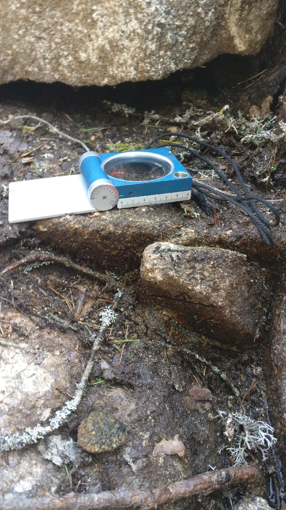
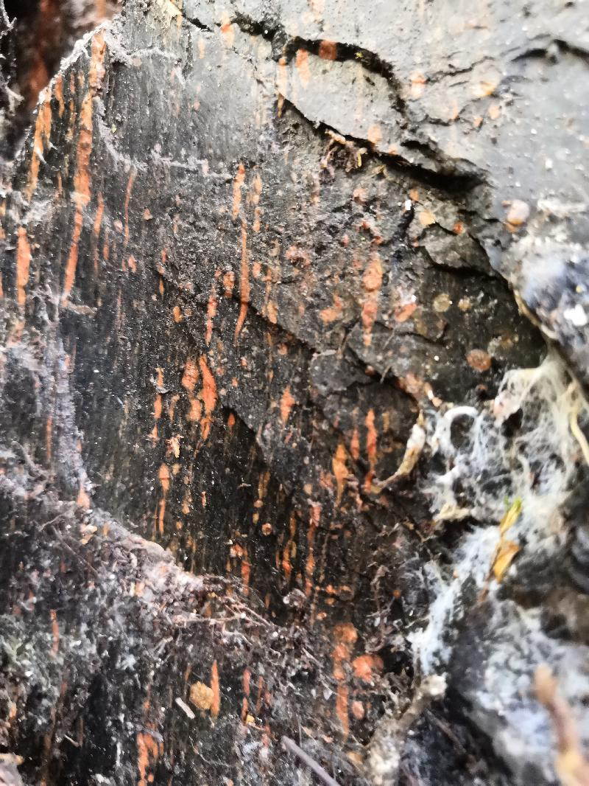
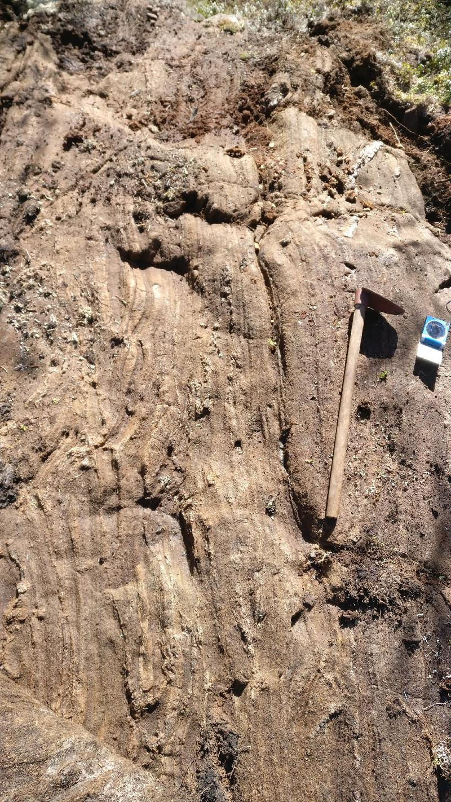

<!DOCTYPE html>
<head>    
    <meta http-equiv="content-type" content="text/html; charset=UTF-8" />
    
        <script>
            L_NO_TOUCH = false;
            L_DISABLE_3D = false;
        </script>
    
    <style>html, body {width: 100%;height: 100%;margin: 0;padding: 0;}</style>
    <style>#map {position:absolute;top:0;bottom:0;right:0;left:0;}</style>
    <script src="https://cdn.jsdelivr.net/npm/leaflet@1.6.0/dist/leaflet.js"></script>
    <script src="https://code.jquery.com/jquery-1.12.4.min.js"></script>
    <script src="https://maxcdn.bootstrapcdn.com/bootstrap/3.2.0/js/bootstrap.min.js"></script>
    <script src="https://cdnjs.cloudflare.com/ajax/libs/Leaflet.awesome-markers/2.0.2/leaflet.awesome-markers.js"></script>
    <link rel="stylesheet" href="https://cdn.jsdelivr.net/npm/leaflet@1.6.0/dist/leaflet.css"/>
    <link rel="stylesheet" href="https://maxcdn.bootstrapcdn.com/bootstrap/3.2.0/css/bootstrap.min.css"/>
    <link rel="stylesheet" href="https://maxcdn.bootstrapcdn.com/bootstrap/3.2.0/css/bootstrap-theme.min.css"/>
    <link rel="stylesheet" href="https://maxcdn.bootstrapcdn.com/font-awesome/4.6.3/css/font-awesome.min.css"/>
    <link rel="stylesheet" href="https://cdnjs.cloudflare.com/ajax/libs/Leaflet.awesome-markers/2.0.2/leaflet.awesome-markers.css"/>
    <link rel="stylesheet" href="https://cdn.jsdelivr.net/gh/python-visualization/folium/folium/templates/leaflet.awesome.rotate.min.css"/>
    
            <meta name="viewport" content="width=device-width,
                initial-scale=1.0, maximum-scale=1.0, user-scalable=no" />
            <style>
                #map_c495065c97cb4791ac3516d00b2171a5 {
                    position: relative;
                    width: 100.0%;
                    height: 100.0%;
                    left: 0.0%;
                    top: 0.0%;
                }
            </style>
        
    <script src="https://cdnjs.cloudflare.com/ajax/libs/leaflet-locatecontrol/0.66.2/L.Control.Locate.min.js"></script>
    <link rel="stylesheet" href="https://cdnjs.cloudflare.com/ajax/libs/leaflet-locatecontrol/0.66.2/L.Control.Locate.min.css"/>
    <link rel="stylesheet" href="styles.css"/>
</head>
<body>    
    
            <div class="folium-map" id="map_c495065c97cb4791ac3516d00b2171a5" ></div>
        
</body>
<script>    
    
            var map_c495065c97cb4791ac3516d00b2171a5 = L.map(
                "map_c495065c97cb4791ac3516d00b2171a5",
                {
                    center: [62.65395873948071, 22.2961892644223],
                    crs: L.CRS.EPSG3857,
                    zoom: 10,
                    zoomControl: true,
                    preferCanvas: false,
                }
            );

            

        
    
            var tile_layer_83be013bf9664397bd96e016aaf22b89 = L.tileLayer(
                "https://{s}.tile.openstreetmap.org/{z}/{x}/{y}.png",
                {"attribution": "Data by \u0026copy; \u003ca href=\"http://openstreetmap.org\"\u003eOpenStreetMap\u003c/a\u003e, under \u003ca href=\"http://www.openstreetmap.org/copyright\"\u003eODbL\u003c/a\u003e.", "detectRetina": false, "maxNativeZoom": 18, "maxZoom": 18, "minZoom": 0, "noWrap": false, "opacity": 1, "subdomains": "abc", "tms": false}
            ).addTo(map_c495065c97cb4791ac3516d00b2171a5);
        
    
            var marker_971d1652c529465eb7052b0ea3a66964 = L.marker(
                [62.6502261, 22.24487724],
                {}
            ).addTo(map_c495065c97cb4791ac3516d00b2171a5);
        
    
            var icon_bde0833bb2b743e6bf4257002f8d09d1 = L.AwesomeMarkers.icon(
                {"extraClasses": "fa-rotate-118", "icon": "glyphicon-arrow-up", "iconColor": "white", "markerColor": "blue", "prefix": "glyphicon"}
            );
            marker_971d1652c529465eb7052b0ea3a66964.setIcon(icon_bde0833bb2b743e6bf4257002f8d09d1);
        
    
        var popup_79b5864bff974f4aa36666d2bedd7d93 = L.popup({"maxWidth": "100%"});

        
            var html_523ef9f4073f4fc5869add48f6d3e00a = $(`<div id="html_523ef9f4073f4fc5869add48f6d3e00a" style="width: 100.0%; height: 100.0%;"><h3>NO-2021-120</h3> <h4>Planar Structures</h4> <table> <thead> <tr> <th align="right">DIP</th> <th align="right">DIRECTION_OF_DIP</th> <th align="left">STYPE_TEXT</th> <th align="left">FOL_TYPE_TEXT</th> <th align="right">STYPE</th> </tr> </thead> <tbody> <tr> <td align="right">83</td> <td align="right">256</td> <td align="left">Fault</td> <td align="left"></td> <td align="right">4</td> </tr> <tr> <td align="right">83</td> <td align="right">180</td> <td align="left">Fault</td> <td align="left"></td> <td align="right">4</td> </tr> <tr> <td align="right">69</td> <td align="right">316</td> <td align="left">Fault</td> <td align="left"></td> <td align="right">4</td> </tr> <tr> <td align="right">31</td> <td align="right">104</td> <td align="left">Fault</td> <td align="left"></td> <td align="right">4</td> </tr> </tbody> </table> <h4>Linear Structures</h4> <table> <thead> <tr> <th align="right">DIRECTION</th> <th align="right">PLUNGE</th> <th align="left">STYPE_TEXT</th> <th align="right">STYPE</th> </tr> </thead> <tbody> <tr> <td align="right">118</td> <td align="right">45</td> <td align="left">Lineation</td> <td align="right">2</td> </tr> </tbody> </table> <h4>Rock Observations</h4> <table> <thead> <tr> <th align="left">REMARKS</th> <th align="left">FIELD_NAME</th> <th align="right">ROCK_NAME</th> <th align="right">ST_2</th> </tr> </thead> <tbody> <tr> <td align="left"></td> <td align="left">Granodiorite</td> <td align="right">2111114</td> <td align="right">nan</td> </tr> </tbody> </table> <h4></h4> <h4></h4> <h4>Observation remarks</h4> <p>Lineaatio granodioriitti, raoissa punaista täytettä mahdollisesti kalimaasälpää, melko intensiivinen rakoilu, rakoilu melkeinpä yhtä intensiivistä joka suunnassa</p> <h4>Images</h4> <p><a href="kapalo_imgs/NO-2021-120.k1@6142761110269243792.jpg"></a></p> <p><em>Punainen rakotäyte, kalimaasälpä</em> <a href="kapalo_imgs/NO-2021-120.k2@465599292542584477.jpg"></a></p> <p><em>Rakoilua pystypinnalla (326/78), pinta kaatuu kameraa päin</em></p></div>`)[0];
            popup_79b5864bff974f4aa36666d2bedd7d93.setContent(html_523ef9f4073f4fc5869add48f6d3e00a);
        

        marker_971d1652c529465eb7052b0ea3a66964.bindPopup(popup_79b5864bff974f4aa36666d2bedd7d93)
        ;

        
    
    
            marker_971d1652c529465eb7052b0ea3a66964.bindTooltip(
                `<div>
                     NO-2021-120
                 </div>`,
                {"sticky": true}
            );
        
    
            var marker_7d3f843666dc41fcb2765b4955229ed0 = L.marker(
                [62.64958984, 22.24507106],
                {}
            ).addTo(map_c495065c97cb4791ac3516d00b2171a5);
        
    
            var icon_b9a10f719fd241caa92ff38aa3a4ecce = L.AwesomeMarkers.icon(
                {"extraClasses": "fa-rotate-0", "icon": "glyphicon-stop", "iconColor": "white", "markerColor": "lightgray", "prefix": "glyphicon"}
            );
            marker_7d3f843666dc41fcb2765b4955229ed0.setIcon(icon_b9a10f719fd241caa92ff38aa3a4ecce);
        
    
        var popup_4450e45c1e064a2298df74ac162c36ba = L.popup({"maxWidth": "100%"});

        
            var html_d19c47f833844aca8df47939b6974f27 = $(`<div id="html_d19c47f833844aca8df47939b6974f27" style="width: 100.0%; height: 100.0%;"><h3>NO-2021-121</h3> <h4>Planar Structures</h4> <table> <thead> <tr> <th align="right">DIP</th> <th align="right">DIRECTION_OF_DIP</th> <th align="left">STYPE_TEXT</th> <th align="left">FOL_TYPE_TEXT</th> <th align="right">STYPE</th> </tr> </thead> <tbody> <tr> <td align="right">78</td> <td align="right">37</td> <td align="left">Foliation</td> <td align="left">Penetrative foliation</td> <td align="right">2</td> </tr> <tr> <td align="right">56</td> <td align="right">296</td> <td align="left">Fault</td> <td align="left"></td> <td align="right">4</td> </tr> <tr> <td align="right">75</td> <td align="right">351</td> <td align="left">Fault</td> <td align="left"></td> <td align="right">4</td> </tr> <tr> <td align="right">82</td> <td align="right">242</td> <td align="left">Fault</td> <td align="left"></td> <td align="right">4</td> </tr> <tr> <td align="right">29</td> <td align="right">76</td> <td align="left">Fault</td> <td align="left"></td> <td align="right">4</td> </tr> </tbody> </table> <h4></h4> <h4>Rock Observations</h4> <table> <thead> <tr> <th align="left">REMARKS</th> <th align="left">FIELD_NAME</th> <th align="right">ROCK_NAME</th> <th align="right">ST_2</th> </tr> </thead> <tbody> <tr> <td align="left"></td> <td align="left">Granodiorite</td> <td align="right">2111114</td> <td align="right">nan</td> </tr> </tbody> </table> <h4></h4> <h4></h4> <h4>Observation remarks</h4> <p>Hydrotermistä fluidia raoissa kalimaasälpää (322/44), kvartsia ja epidoottia ja ehkä jopa karbonaattia (295/56), heikosti suuntautunut granodioriitti, päärakosuunta (296/56), paljon rakoilua, L-tektoniitti lineaatio (162/54) hyvin epävarma</p> <h4>Images</h4> <p><a href="kapalo_imgs/NO-2021-121.k1@8923370035630306331.jpg"></a></p> <p><em>Epidoottia raossa (063/86)</em> <a href="kapalo_imgs/NO-2021-121.k2@2536619394793919973.jpg"></a></p> <p><em>Punaista rakotäytettä kalimaasälpää raossa (322/44)</em></p> <p><a href="kapalo_imgs/NO-2021-121.k3@4834227976921686441.jpg">('Raossa tuskin ollut liikettä kun katsoo "klastia" (296/56), klasti pystyssä rakopinnasta', 'NO-2021-121.k3')</a></p> <p><a href="kapalo_imgs/NO-2021-121.k4@3798868176195117756.jpg">('Eemin piirros, poikkileikkaus, rakosuuntia', 'NO-2021-121.k4')</a></p></div>`)[0];
            popup_4450e45c1e064a2298df74ac162c36ba.setContent(html_d19c47f833844aca8df47939b6974f27);
        

        marker_7d3f843666dc41fcb2765b4955229ed0.bindPopup(popup_4450e45c1e064a2298df74ac162c36ba)
        ;

        
    
    
            marker_7d3f843666dc41fcb2765b4955229ed0.bindTooltip(
                `<div>
                     NO-2021-121
                 </div>`,
                {"sticky": true}
            );
        
    
            var marker_8f8fffdf581145db8f136781d4571446 = L.marker(
                [62.6489966, 22.24552787],
                {}
            ).addTo(map_c495065c97cb4791ac3516d00b2171a5);
        
    
            var icon_bff5943fd042449d8111a727827268a3 = L.AwesomeMarkers.icon(
                {"extraClasses": "fa-rotate-92", "icon": "glyphicon-arrow-up", "iconColor": "white", "markerColor": "blue", "prefix": "glyphicon"}
            );
            marker_8f8fffdf581145db8f136781d4571446.setIcon(icon_bff5943fd042449d8111a727827268a3);
        
    
        var popup_05c67866a75b4bba8a4ff3ec3464f462 = L.popup({"maxWidth": "100%"});

        
            var html_9b694cc22862451baa72be4470550f6a = $(`<div id="html_9b694cc22862451baa72be4470550f6a" style="width: 100.0%; height: 100.0%;"><h3>NO-2021-122</h3> <h4>Planar Structures</h4> <table> <thead> <tr> <th align="right">DIP</th> <th align="right">DIRECTION_OF_DIP</th> <th align="left">STYPE_TEXT</th> <th align="left">FOL_TYPE_TEXT</th> <th align="right">STYPE</th> </tr> </thead> <tbody> <tr> <td align="right">68</td> <td align="right">197</td> <td align="left">Foliation</td> <td align="left">Penetrative foliation</td> <td align="right">2</td> </tr> <tr> <td align="right">60</td> <td align="right">323</td> <td align="left">Fault</td> <td align="left"></td> <td align="right">4</td> </tr> <tr> <td align="right">84</td> <td align="right">201</td> <td align="left">Fault</td> <td align="left"></td> <td align="right">4</td> </tr> <tr> <td align="right">20</td> <td align="right">87</td> <td align="left">Fault</td> <td align="left"></td> <td align="right">4</td> </tr> </tbody> </table> <h4>Linear Structures</h4> <table> <thead> <tr> <th align="right">DIRECTION</th> <th align="right">PLUNGE</th> <th align="left">STYPE_TEXT</th> <th align="right">STYPE</th> </tr> </thead> <tbody> <tr> <td align="right">92</td> <td align="right">61</td> <td align="left">Lineation</td> <td align="right">2</td> </tr> </tbody> </table> <h4>Rock Observations</h4> <table> <thead> <tr> <th align="left">REMARKS</th> <th align="left">FIELD_NAME</th> <th align="right">ROCK_NAME</th> <th align="right">ST_2</th> </tr> </thead> <tbody> <tr> <td align="left"></td> <td align="left">Granodiorite</td> <td align="right">2111114</td> <td align="right">nan</td> </tr> </tbody> </table> <h4></h4> <h4></h4> <h4>Observation remarks</h4> <p>Vahva lineaatio heikko liuskeisuus granodioriitissa, päärakosuunta, hydrotermistä fluidia mahdollisesti kaikissa rakosuunnissaa, päärakosuunta (323/60)</p> <h4>Images</h4> <p><a href="kapalo_imgs/NO-2021-122.k1@5617358163811979863.jpg"></a></p> <p><em>Vahva lineaatio (092/61) liuskeisuuspinnassa (197/68)</em> <a href="kapalo_imgs/NO-2021-122.k2@5780095224077011552.jpg"></a></p> <p><em>Nikolaksen piirros, rakojen topologiaa</em></p> <p><a href="kapalo_imgs/NO-2021-122.k3@7591171526182596366.jpg">('Eemin piirros, poikkileikkaus E-W, raon hyppyjä lineaation suuntaan', 'NO-2021-122.k3')</a></p></div>`)[0];
            popup_05c67866a75b4bba8a4ff3ec3464f462.setContent(html_9b694cc22862451baa72be4470550f6a);
        

        marker_8f8fffdf581145db8f136781d4571446.bindPopup(popup_05c67866a75b4bba8a4ff3ec3464f462)
        ;

        
    
    
            marker_8f8fffdf581145db8f136781d4571446.bindTooltip(
                `<div>
                     NO-2021-122
                 </div>`,
                {"sticky": true}
            );
        
    
            var marker_7949dacbba5944dca1a1d96bec46f220 = L.marker(
                [62.64799984, 22.24524319],
                {}
            ).addTo(map_c495065c97cb4791ac3516d00b2171a5);
        
    
            var icon_6262f4edff22421a9af535bcb57a689a = L.AwesomeMarkers.icon(
                {"extraClasses": "fa-rotate-82", "icon": "glyphicon-arrow-up", "iconColor": "white", "markerColor": "blue", "prefix": "glyphicon"}
            );
            marker_7949dacbba5944dca1a1d96bec46f220.setIcon(icon_6262f4edff22421a9af535bcb57a689a);
        
    
        var popup_e1c73c0c195e475d92b115ea90e589b8 = L.popup({"maxWidth": "100%"});

        
            var html_6d980b52c66c4639b2bea4fea8b870dd = $(`<div id="html_6d980b52c66c4639b2bea4fea8b870dd" style="width: 100.0%; height: 100.0%;"><h3>NO-2021-123</h3> <h4>Planar Structures</h4> <table> <thead> <tr> <th align="right">DIP</th> <th align="right">DIRECTION_OF_DIP</th> <th align="left">STYPE_TEXT</th> <th align="left">FOL_TYPE_TEXT</th> <th align="right">STYPE</th> </tr> </thead> <tbody> <tr> <td align="right">64</td> <td align="right">184</td> <td align="left">Foliation</td> <td align="left">Penetrative foliation</td> <td align="right">2</td> </tr> <tr> <td align="right">22</td> <td align="right">107</td> <td align="left">Fault</td> <td align="left"></td> <td align="right">4</td> </tr> <tr> <td align="right">86</td> <td align="right">78</td> <td align="left">Fault</td> <td align="left"></td> <td align="right">4</td> </tr> <tr> <td align="right">81</td> <td align="right">181</td> <td align="left">Fault</td> <td align="left"></td> <td align="right">4</td> </tr> </tbody> </table> <h4>Linear Structures</h4> <table> <thead> <tr> <th align="right">DIRECTION</th> <th align="right">PLUNGE</th> <th align="left">STYPE_TEXT</th> <th align="right">STYPE</th> </tr> </thead> <tbody> <tr> <td align="right">82</td> <td align="right">40</td> <td align="left">Lineation</td> <td align="right">2</td> </tr> </tbody> </table> <h4>Rock Observations</h4> <table> <thead> <tr> <th align="left">REMARKS</th> <th align="left">FIELD_NAME</th> <th align="right">ROCK_NAME</th> <th align="right">ST_2</th> </tr> </thead> <tbody> <tr> <td align="left"></td> <td align="left">Granodiorite</td> <td align="right">2111114</td> <td align="right">nan</td> </tr> </tbody> </table> <h4></h4> <h4></h4> <h4>Observation remarks</h4> <p>Pienirakeisempi granodioriitti/dioriitti</p> <h4>Images</h4> <p><a href="kapalo_imgs/NO-2021-123.k1@8548264451686763326.jpg"></a></p> <p><em>Koostumusvaihtelua lokaalisti, hienorakeinen liuskeinen dioriitti</em></p></div>`)[0];
            popup_e1c73c0c195e475d92b115ea90e589b8.setContent(html_6d980b52c66c4639b2bea4fea8b870dd);
        

        marker_7949dacbba5944dca1a1d96bec46f220.bindPopup(popup_e1c73c0c195e475d92b115ea90e589b8)
        ;

        
    
    
            marker_7949dacbba5944dca1a1d96bec46f220.bindTooltip(
                `<div>
                     NO-2021-123
                 </div>`,
                {"sticky": true}
            );
        
    
            var marker_a7044621f7694ec1bd6393b3844f8159 = L.marker(
                [62.64572403, 22.26150361],
                {}
            ).addTo(map_c495065c97cb4791ac3516d00b2171a5);
        
    
            var icon_21dce93a69b840d4b9bd560777243dad = L.AwesomeMarkers.icon(
                {"extraClasses": "fa-rotate-134", "icon": "glyphicon-arrow-up", "iconColor": "white", "markerColor": "blue", "prefix": "glyphicon"}
            );
            marker_a7044621f7694ec1bd6393b3844f8159.setIcon(icon_21dce93a69b840d4b9bd560777243dad);
        
    
        var popup_fe89f409f9b146ecaf58b286bd83cc27 = L.popup({"maxWidth": "100%"});

        
            var html_bc82e7eb4d424337ad10e7a6481f2bc2 = $(`<div id="html_bc82e7eb4d424337ad10e7a6481f2bc2" style="width: 100.0%; height: 100.0%;"><h3>NO-2021-124</h3> <h4>Planar Structures</h4> <table> <thead> <tr> <th align="right">DIP</th> <th align="right">DIRECTION_OF_DIP</th> <th align="left">STYPE_TEXT</th> <th align="left">FOL_TYPE_TEXT</th> <th align="right">STYPE</th> </tr> </thead> <tbody> <tr> <td align="right">83</td> <td align="right">264</td> <td align="left">Fault</td> <td align="left"></td> <td align="right">4</td> </tr> <tr> <td align="right">86</td> <td align="right">187</td> <td align="left">Fault</td> <td align="left"></td> <td align="right">4</td> </tr> <tr> <td align="right">85</td> <td align="right">76</td> <td align="left">Fault</td> <td align="left"></td> <td align="right">4</td> </tr> </tbody> </table> <h4>Linear Structures</h4> <table> <thead> <tr> <th align="right">DIRECTION</th> <th align="right">PLUNGE</th> <th align="left">STYPE_TEXT</th> <th align="right">STYPE</th> </tr> </thead> <tbody> <tr> <td align="right">134</td> <td align="right">58</td> <td align="left">Lineation</td> <td align="right">2</td> </tr> </tbody> </table> <h4>Rock Observations</h4> <table> <thead> <tr> <th align="left">REMARKS</th> <th align="left">FIELD_NAME</th> <th align="right">ROCK_NAME</th> <th align="right">ST_2</th> </tr> </thead> <tbody> <tr> <td align="left"></td> <td align="left">Granodiorite</td> <td align="right">2111114</td> <td align="right">nan</td> </tr> </tbody> </table> <h4></h4> <h4></h4> <h4>Observation remarks</h4> <p>Kvartsijuonia (058/68; 015/80; 125/65), mahdollinen L-tektoniitti</p> <h4>Images</h4> <p><a href="kapalo_imgs/NO-2021-124.k1@3218770996976864257.jpg"></a></p> <p><em>Hyppy kvartsijuonessa (015/80)</em> <a href="kapalo_imgs/NO-2021-124.k2@6226118352050024138.jpg"></a></p> <p><em>Lineaatio näkyy myös kvartsijuonessa</em></p> <p><a href="kapalo_imgs/NO-2021-124.k3@4800862070566764280.jpg">('Liuskeisuus vai lineaatio', 'NO-2021-124.k3')</a></p></div>`)[0];
            popup_fe89f409f9b146ecaf58b286bd83cc27.setContent(html_bc82e7eb4d424337ad10e7a6481f2bc2);
        

        marker_a7044621f7694ec1bd6393b3844f8159.bindPopup(popup_fe89f409f9b146ecaf58b286bd83cc27)
        ;

        
    
    
            marker_a7044621f7694ec1bd6393b3844f8159.bindTooltip(
                `<div>
                     NO-2021-124
                 </div>`,
                {"sticky": true}
            );
        
    
            var marker_d81270331265472fb2bc3f8c02c46b45 = L.marker(
                [62.6444608, 22.26643641],
                {}
            ).addTo(map_c495065c97cb4791ac3516d00b2171a5);
        
    
            var icon_d47c72d9bbe84438a7900448a39557fd = L.AwesomeMarkers.icon(
                {"extraClasses": "fa-rotate-0", "icon": "glyphicon-stop", "iconColor": "white", "markerColor": "lightgray", "prefix": "glyphicon"}
            );
            marker_d81270331265472fb2bc3f8c02c46b45.setIcon(icon_d47c72d9bbe84438a7900448a39557fd);
        
    
        var popup_17c3334b9d6c4d7d9cbb1914bc87d739 = L.popup({"maxWidth": "100%"});

        
            var html_5e9d526ba6ed4d1a8b7b32928837752e = $(`<div id="html_5e9d526ba6ed4d1a8b7b32928837752e" style="width: 100.0%; height: 100.0%;"><h3>NO-2021-125</h3> <h4>Planar Structures</h4> <table> <thead> <tr> <th align="right">DIP</th> <th align="right">DIRECTION_OF_DIP</th> <th align="left">STYPE_TEXT</th> <th align="left">FOL_TYPE_TEXT</th> <th align="right">STYPE</th> </tr> </thead> <tbody> <tr> <td align="right">88</td> <td align="right">322</td> <td align="left">Fault</td> <td align="left"></td> <td align="right">4</td> </tr> <tr> <td align="right">83</td> <td align="right">74</td> <td align="left">Fault</td> <td align="left"></td> <td align="right">4</td> </tr> </tbody> </table> <h4></h4> <h4>Rock Observations</h4> <table> <thead> <tr> <th align="left">REMARKS</th> <th align="left">FIELD_NAME</th> <th align="right">ROCK_NAME</th> <th align="right">ST_2</th> </tr> </thead> <tbody> <tr> <td align="left"></td> <td align="left">Granodiorite</td> <td align="right">2111114</td> <td align="right">nan</td> </tr> </tbody> </table> <h4></h4> <h4></h4> <h4>Observation remarks</h4> <p>Vallitseva rakosuunta (322/88), hyvin heikosti suuntautunut granodioriitti tai ei ollenkaan, kvartsijuonia (074/83)</p></div>`)[0];
            popup_17c3334b9d6c4d7d9cbb1914bc87d739.setContent(html_5e9d526ba6ed4d1a8b7b32928837752e);
        

        marker_d81270331265472fb2bc3f8c02c46b45.bindPopup(popup_17c3334b9d6c4d7d9cbb1914bc87d739)
        ;

        
    
    
            marker_d81270331265472fb2bc3f8c02c46b45.bindTooltip(
                `<div>
                     NO-2021-125
                 </div>`,
                {"sticky": true}
            );
        
    
            var marker_4d46b3d6b4264f9b932c85eb2167cd01 = L.marker(
                [62.64597139, 22.26551594],
                {}
            ).addTo(map_c495065c97cb4791ac3516d00b2171a5);
        
    
            var icon_672dfd496d2a423e8fc92d9842d6750b = L.AwesomeMarkers.icon(
                {"extraClasses": "fa-rotate-120", "icon": "glyphicon-arrow-up", "iconColor": "white", "markerColor": "blue", "prefix": "glyphicon"}
            );
            marker_4d46b3d6b4264f9b932c85eb2167cd01.setIcon(icon_672dfd496d2a423e8fc92d9842d6750b);
        
    
        var popup_61f42d6b87ed4e048d99ed6673c629dc = L.popup({"maxWidth": "100%"});

        
            var html_9c19a41ac98046ab91e30c4816ee0c27 = $(`<div id="html_9c19a41ac98046ab91e30c4816ee0c27" style="width: 100.0%; height: 100.0%;"><h3>NO-2021-126</h3> <h4>Planar Structures</h4> <table> <thead> <tr> <th align="right">DIP</th> <th align="right">DIRECTION_OF_DIP</th> <th align="left">STYPE_TEXT</th> <th align="left">FOL_TYPE_TEXT</th> <th align="right">STYPE</th> </tr> </thead> <tbody> <tr> <td align="right">84</td> <td align="right">156</td> <td align="left">Fault</td> <td align="left"></td> <td align="right">4</td> </tr> <tr> <td align="right">63</td> <td align="right">109</td> <td align="left">Fault</td> <td align="left"></td> <td align="right">4</td> </tr> </tbody> </table> <h4>Linear Structures</h4> <table> <thead> <tr> <th align="right">DIRECTION</th> <th align="right">PLUNGE</th> <th align="left">STYPE_TEXT</th> <th align="right">STYPE</th> </tr> </thead> <tbody> <tr> <td align="right">120</td> <td align="right">37</td> <td align="left">Lineation</td> <td align="right">2</td> </tr> </tbody> </table> <h4>Rock Observations</h4> <table> <thead> <tr> <th align="left">REMARKS</th> <th align="left">FIELD_NAME</th> <th align="right">ROCK_NAME</th> <th align="right">ST_2</th> </tr> </thead> <tbody> <tr> <td align="left"></td> <td align="left">Granodiorite</td> <td align="right">2111114</td> <td align="right">nan</td> </tr> </tbody> </table> <h4></h4> <h4></h4> <h4>Observation remarks</h4> <p>L-tektoniitti tai hyvin heikko liuskeisuus (131/45)</p> <h4>Images</h4> <p><a href="kapalo_imgs/NO-2021-126.k1@6982591858692456125.jpg"></a></p> <p><em>Koostumusvaihtelua ja kvartsijuonia, kuvan taso (030/46)</em></p></div>`)[0];
            popup_61f42d6b87ed4e048d99ed6673c629dc.setContent(html_9c19a41ac98046ab91e30c4816ee0c27);
        

        marker_4d46b3d6b4264f9b932c85eb2167cd01.bindPopup(popup_61f42d6b87ed4e048d99ed6673c629dc)
        ;

        
    
    
            marker_4d46b3d6b4264f9b932c85eb2167cd01.bindTooltip(
                `<div>
                     NO-2021-126
                 </div>`,
                {"sticky": true}
            );
        
    
            var marker_e73be6627fb3453e83deb55092165023 = L.marker(
                [62.64682437, 22.26251022],
                {}
            ).addTo(map_c495065c97cb4791ac3516d00b2171a5);
        
    
            var icon_af62e62ae26447808d8ae9986e5efaa6 = L.AwesomeMarkers.icon(
                {"extraClasses": "fa-rotate-110", "icon": "glyphicon-arrow-up", "iconColor": "white", "markerColor": "blue", "prefix": "glyphicon"}
            );
            marker_e73be6627fb3453e83deb55092165023.setIcon(icon_af62e62ae26447808d8ae9986e5efaa6);
        
    
        var popup_1f6a5abb89b542c3b653a592c929d397 = L.popup({"maxWidth": "100%"});

        
            var html_3e066f95eaf9430996ee025d09fa8a2b = $(`<div id="html_3e066f95eaf9430996ee025d09fa8a2b" style="width: 100.0%; height: 100.0%;"><h3>NO-2021-127</h3> <h4>Planar Structures</h4> <table> <thead> <tr> <th align="right">DIP</th> <th align="right">DIRECTION_OF_DIP</th> <th align="left">STYPE_TEXT</th> <th align="left">FOL_TYPE_TEXT</th> <th align="right">STYPE</th> </tr> </thead> <tbody> <tr> <td align="right">60</td> <td align="right">86</td> <td align="left">Fault</td> <td align="left"></td> <td align="right">4</td> </tr> <tr> <td align="right">78</td> <td align="right">156</td> <td align="left">Fault</td> <td align="left"></td> <td align="right">4</td> </tr> </tbody> </table> <h4>Linear Structures</h4> <table> <thead> <tr> <th align="right">DIRECTION</th> <th align="right">PLUNGE</th> <th align="left">STYPE_TEXT</th> <th align="right">STYPE</th> </tr> </thead> <tbody> <tr> <td align="right">110</td> <td align="right">51</td> <td align="left">Lineation</td> <td align="right">2</td> </tr> </tbody> </table> <h4>Rock Observations</h4> <table> <thead> <tr> <th align="left">REMARKS</th> <th align="left">FIELD_NAME</th> <th align="right">ROCK_NAME</th> <th align="right">ST_2</th> </tr> </thead> <tbody> <tr> <td align="left"></td> <td align="left">Granodiorite</td> <td align="right">2111114</td> <td align="right">nan</td> </tr> </tbody> </table> <h4></h4> <h4></h4> <h4>Observation remarks</h4> <p>Hyvin vahva lineaatio, L-tektoniitti, hyvin heikko tasomainen suuntaus (192/76)</p> <h4>Images</h4> <p><a href="kapalo_imgs/NO-2021-127.k1@4608074849448132282.jpg"></a></p> <p><em>Kuvan pinta (087/62), kaatuu kuvaajaa päin</em></p></div>`)[0];
            popup_1f6a5abb89b542c3b653a592c929d397.setContent(html_3e066f95eaf9430996ee025d09fa8a2b);
        

        marker_e73be6627fb3453e83deb55092165023.bindPopup(popup_1f6a5abb89b542c3b653a592c929d397)
        ;

        
    
    
            marker_e73be6627fb3453e83deb55092165023.bindTooltip(
                `<div>
                     NO-2021-127
                 </div>`,
                {"sticky": true}
            );
        
    
            var marker_c2f11b5b164a468e895b39882a165a36 = L.marker(
                [62.64860436, 22.25253781],
                {}
            ).addTo(map_c495065c97cb4791ac3516d00b2171a5);
        
    
            var icon_07ffddeaddb74f6fa1e682bac1e0d279 = L.AwesomeMarkers.icon(
                {"extraClasses": "fa-rotate-90", "icon": "glyphicon-arrow-up", "iconColor": "white", "markerColor": "blue", "prefix": "glyphicon"}
            );
            marker_c2f11b5b164a468e895b39882a165a36.setIcon(icon_07ffddeaddb74f6fa1e682bac1e0d279);
        
    
        var popup_e831c797926747229d065f171012ac52 = L.popup({"maxWidth": "100%"});

        
            var html_e9201d3bd9be4b37aef803a11fadd422 = $(`<div id="html_e9201d3bd9be4b37aef803a11fadd422" style="width: 100.0%; height: 100.0%;"><h3>NO-2021-128</h3> <h4>Planar Structures</h4> <table> <thead> <tr> <th align="right">DIP</th> <th align="right">DIRECTION_OF_DIP</th> <th align="left">STYPE_TEXT</th> <th align="left">FOL_TYPE_TEXT</th> <th align="right">STYPE</th> </tr> </thead> <tbody> <tr> <td align="right">68</td> <td align="right">178</td> <td align="left">Foliation</td> <td align="left">Penetrative foliation</td> <td align="right">2</td> </tr> <tr> <td align="right">68</td> <td align="right">178</td> <td align="left">Fault</td> <td align="left"></td> <td align="right">4</td> </tr> <tr> <td align="right">65</td> <td align="right">90</td> <td align="left">Fault</td> <td align="left"></td> <td align="right">4</td> </tr> </tbody> </table> <h4>Linear Structures</h4> <table> <thead> <tr> <th align="right">DIRECTION</th> <th align="right">PLUNGE</th> <th align="left">STYPE_TEXT</th> <th align="right">STYPE</th> </tr> </thead> <tbody> <tr> <td align="right">90</td> <td align="right">50</td> <td align="left">Lineation</td> <td align="right">2</td> </tr> </tbody> </table> <h4>Rock Observations</h4> <table> <thead> <tr> <th align="left">REMARKS</th> <th align="left">FIELD_NAME</th> <th align="right">ROCK_NAME</th> <th align="right">ST_2</th> </tr> </thead> <tbody> <tr> <td align="left"></td> <td align="left">Granodiorite</td> <td align="right">2111114</td> <td align="right">nan</td> </tr> </tbody> </table> <h4></h4> <h4></h4> <h4>Observation remarks</h4> <p>Suuntautunut granodioriitti</p></div>`)[0];
            popup_e831c797926747229d065f171012ac52.setContent(html_e9201d3bd9be4b37aef803a11fadd422);
        

        marker_c2f11b5b164a468e895b39882a165a36.bindPopup(popup_e831c797926747229d065f171012ac52)
        ;

        
    
    
            marker_c2f11b5b164a468e895b39882a165a36.bindTooltip(
                `<div>
                     NO-2021-128
                 </div>`,
                {"sticky": true}
            );
        
    
            var marker_e12156e9a09949c1adeafa4fd0ddbfb5 = L.marker(
                [62.64694525, 22.2521295],
                {}
            ).addTo(map_c495065c97cb4791ac3516d00b2171a5);
        
    
            var icon_ad78f4d19a24476bae9d4977afec3bae = L.AwesomeMarkers.icon(
                {"extraClasses": "fa-rotate-110", "icon": "glyphicon-arrow-up", "iconColor": "white", "markerColor": "blue", "prefix": "glyphicon"}
            );
            marker_e12156e9a09949c1adeafa4fd0ddbfb5.setIcon(icon_ad78f4d19a24476bae9d4977afec3bae);
        
    
        var popup_67945ab033e947d9b0a45ccc5aed62d2 = L.popup({"maxWidth": "100%"});

        
            var html_817f20e81a354218831f9da6863b0bcc = $(`<div id="html_817f20e81a354218831f9da6863b0bcc" style="width: 100.0%; height: 100.0%;"><h3>NO-2021-129</h3> <h4>Planar Structures</h4> <table> <thead> <tr> <th align="right">DIP</th> <th align="right">DIRECTION_OF_DIP</th> <th align="left">STYPE_TEXT</th> <th align="left">FOL_TYPE_TEXT</th> <th align="right">STYPE</th> </tr> </thead> <tbody> <tr> <td align="right">45</td> <td align="right">110</td> <td align="left">Foliation</td> <td align="left">Penetrative foliation</td> <td align="right">2</td> </tr> <tr> <td align="right">77</td> <td align="right">286</td> <td align="left">Fault</td> <td align="left"></td> <td align="right">4</td> </tr> <tr> <td align="right">45</td> <td align="right">105</td> <td align="left">Fault</td> <td align="left"></td> <td align="right">4</td> </tr> </tbody> </table> <h4>Linear Structures</h4> <table> <thead> <tr> <th align="right">DIRECTION</th> <th align="right">PLUNGE</th> <th align="left">STYPE_TEXT</th> <th align="right">STYPE</th> </tr> </thead> <tbody> <tr> <td align="right">110</td> <td align="right">45</td> <td align="left">Lineation</td> <td align="right">2</td> </tr> </tbody> </table> <h4>Rock Observations</h4> <table> <thead> <tr> <th align="left">REMARKS</th> <th align="left">FIELD_NAME</th> <th align="right">ROCK_NAME</th> <th align="right">ST_2</th> </tr> </thead> <tbody> <tr> <td align="left"></td> <td align="left">Granodiorite</td> <td align="right">2111114</td> <td align="right">nan</td> </tr> </tbody> </table> <h4></h4> <h4></h4> <h4>Observation remarks</h4> <p>Suuntautunut granodioriitti, liuskeisuus sekava alueellisesti mutta paikoittain selkeä, kvartsijuonia liuskeisuuden suunnassa (105/45), epidoottikvartsitäyte (286/77)</p></div>`)[0];
            popup_67945ab033e947d9b0a45ccc5aed62d2.setContent(html_817f20e81a354218831f9da6863b0bcc);
        

        marker_e12156e9a09949c1adeafa4fd0ddbfb5.bindPopup(popup_67945ab033e947d9b0a45ccc5aed62d2)
        ;

        
    
    
            marker_e12156e9a09949c1adeafa4fd0ddbfb5.bindTooltip(
                `<div>
                     NO-2021-129
                 </div>`,
                {"sticky": true}
            );
        
    
            var marker_559494844567491eb49b0e46652d62ef = L.marker(
                [62.64568886, 22.25283538],
                {}
            ).addTo(map_c495065c97cb4791ac3516d00b2171a5);
        
    
            var icon_fa8a19e7c5e946d28f3faa82be8eff43 = L.AwesomeMarkers.icon(
                {"extraClasses": "fa-rotate-125", "icon": "glyphicon-arrow-up", "iconColor": "white", "markerColor": "blue", "prefix": "glyphicon"}
            );
            marker_559494844567491eb49b0e46652d62ef.setIcon(icon_fa8a19e7c5e946d28f3faa82be8eff43);
        
    
        var popup_a2f4fdac71a149f48954ba1f01ec948e = L.popup({"maxWidth": "100%"});

        
            var html_7818c9b985ad4f8aa335b3019ca18ed2 = $(`<div id="html_7818c9b985ad4f8aa335b3019ca18ed2" style="width: 100.0%; height: 100.0%;"><h3>NO-2021-130</h3> <h4>Planar Structures</h4> <table> <thead> <tr> <th align="right">DIP</th> <th align="right">DIRECTION_OF_DIP</th> <th align="left">STYPE_TEXT</th> <th align="left">FOL_TYPE_TEXT</th> <th align="right">STYPE</th> </tr> </thead> <tbody> <tr> <td align="right">45</td> <td align="right">125</td> <td align="left">Foliation</td> <td align="left">Penetrative foliation</td> <td align="right">2</td> </tr> </tbody> </table> <h4>Linear Structures</h4> <table> <thead> <tr> <th align="right">DIRECTION</th> <th align="right">PLUNGE</th> <th align="left">STYPE_TEXT</th> <th align="right">STYPE</th> </tr> </thead> <tbody> <tr> <td align="right">125</td> <td align="right">45</td> <td align="left">Lineation</td> <td align="right">2</td> </tr> </tbody> </table> <h4>Rock Observations</h4> <table> <thead> <tr> <th align="left">REMARKS</th> <th align="left">FIELD_NAME</th> <th align="right">ROCK_NAME</th> <th align="right">ST_2</th> </tr> </thead> <tbody> <tr> <td align="left"></td> <td align="left">Granodiorite</td> <td align="right">2111114</td> <td align="right">nan</td> </tr> </tbody> </table> <h4></h4> <h4></h4> <h4>Observation remarks</h4> <p>Suuntautunut granodioriitti, </p></div>`)[0];
            popup_a2f4fdac71a149f48954ba1f01ec948e.setContent(html_7818c9b985ad4f8aa335b3019ca18ed2);
        

        marker_559494844567491eb49b0e46652d62ef.bindPopup(popup_a2f4fdac71a149f48954ba1f01ec948e)
        ;

        
    
    
            marker_559494844567491eb49b0e46652d62ef.bindTooltip(
                `<div>
                     NO-2021-130
                 </div>`,
                {"sticky": true}
            );
        
    
            var marker_98cac6aabc9f4b618527370fd0de8e78 = L.marker(
                [62.64347729, 22.24939719],
                {}
            ).addTo(map_c495065c97cb4791ac3516d00b2171a5);
        
    
            var icon_bb7bbb839f6547a2bbd2ff7f04a75a2e = L.AwesomeMarkers.icon(
                {"extraClasses": "fa-rotate-103", "icon": "glyphicon-arrow-up", "iconColor": "white", "markerColor": "blue", "prefix": "glyphicon"}
            );
            marker_98cac6aabc9f4b618527370fd0de8e78.setIcon(icon_bb7bbb839f6547a2bbd2ff7f04a75a2e);
        
    
        var popup_e70072bedc98483bac5a4522ec02cf58 = L.popup({"maxWidth": "100%"});

        
            var html_68b038dcf02744bd8f21edd0296ffe18 = $(`<div id="html_68b038dcf02744bd8f21edd0296ffe18" style="width: 100.0%; height: 100.0%;"><h3>NO-2021-131</h3> <h4>Planar Structures</h4> <table> <thead> <tr> <th align="right">DIP</th> <th align="right">DIRECTION_OF_DIP</th> <th align="left">STYPE_TEXT</th> <th align="left">FOL_TYPE_TEXT</th> <th align="right">STYPE</th> </tr> </thead> <tbody> <tr> <td align="right">64</td> <td align="right">88</td> <td align="left">Foliation</td> <td align="left">Penetrative foliation</td> <td align="right">2</td> </tr> <tr> <td align="right">64</td> <td align="right">88</td> <td align="left">Fault</td> <td align="left"></td> <td align="right">4</td> </tr> </tbody> </table> <h4>Linear Structures</h4> <table> <thead> <tr> <th align="right">DIRECTION</th> <th align="right">PLUNGE</th> <th align="left">STYPE_TEXT</th> <th align="right">STYPE</th> </tr> </thead> <tbody> <tr> <td align="right">103</td> <td align="right">41</td> <td align="left">Lineation</td> <td align="right">2</td> </tr> </tbody> </table> <h4>Rock Observations</h4> <table> <thead> <tr> <th align="left">REMARKS</th> <th align="left">FIELD_NAME</th> <th align="right">ROCK_NAME</th> <th align="right">ST_2</th> </tr> </thead> <tbody> <tr> <td align="left"></td> <td align="left">Granodiorite</td> <td align="right">2111114</td> <td align="right">nan</td> </tr> </tbody> </table> <h4></h4> <h4></h4> <h4>Observation remarks</h4> <p>Vahva lineaatio heikko liuskeisuus tai ei ollenkaan (088/64), vahva rakosuunta (088/64), mahdollinen L-tektoniitti</p> <h4>Images</h4> <p><a href="kapalo_imgs/NO-2021-131.k1@1367890378289948652.jpg"></a></p> <p><em>Lineaatio mahdollisessa liuskeisuuspinnassa</em></p></div>`)[0];
            popup_e70072bedc98483bac5a4522ec02cf58.setContent(html_68b038dcf02744bd8f21edd0296ffe18);
        

        marker_98cac6aabc9f4b618527370fd0de8e78.bindPopup(popup_e70072bedc98483bac5a4522ec02cf58)
        ;

        
    
    
            marker_98cac6aabc9f4b618527370fd0de8e78.bindTooltip(
                `<div>
                     NO-2021-131
                 </div>`,
                {"sticky": true}
            );
        
    
            var marker_858596dd40fa45399f690a70380a127e = L.marker(
                [62.64517689, 22.24748077],
                {}
            ).addTo(map_c495065c97cb4791ac3516d00b2171a5);
        
    
            var icon_e95013cc5099468aba292a555083bcaa = L.AwesomeMarkers.icon(
                {"extraClasses": "fa-rotate-106", "icon": "glyphicon-arrow-up", "iconColor": "white", "markerColor": "blue", "prefix": "glyphicon"}
            );
            marker_858596dd40fa45399f690a70380a127e.setIcon(icon_e95013cc5099468aba292a555083bcaa);
        
    
        var popup_80bba39171014fbfbed5c43612032273 = L.popup({"maxWidth": "100%"});

        
            var html_873a56c9b5b94ebd9e412097fbe8d3a9 = $(`<div id="html_873a56c9b5b94ebd9e412097fbe8d3a9" style="width: 100.0%; height: 100.0%;"><h3>NO-2021-132</h3> <h4>Planar Structures</h4> <table> <thead> <tr> <th align="right">DIP</th> <th align="right">DIRECTION_OF_DIP</th> <th align="left">STYPE_TEXT</th> <th align="left">FOL_TYPE_TEXT</th> <th align="right">STYPE</th> </tr> </thead> <tbody> <tr> <td align="right">60</td> <td align="right">100</td> <td align="left">Foliation</td> <td align="left">Penetrative foliation</td> <td align="right">2</td> </tr> <tr> <td align="right">18</td> <td align="right">273</td> <td align="left">Fault</td> <td align="left"></td> <td align="right">4</td> </tr> <tr> <td align="right">60</td> <td align="right">100</td> <td align="left">Fault</td> <td align="left"></td> <td align="right">4</td> </tr> <tr> <td align="right">78</td> <td align="right">16</td> <td align="left">Fault</td> <td align="left"></td> <td align="right">4</td> </tr> </tbody> </table> <h4>Linear Structures</h4> <table> <thead> <tr> <th align="right">DIRECTION</th> <th align="right">PLUNGE</th> <th align="left">STYPE_TEXT</th> <th align="right">STYPE</th> </tr> </thead> <tbody> <tr> <td align="right">106</td> <td align="right">52</td> <td align="left">Lineation</td> <td align="right">2</td> </tr> </tbody> </table> <h4>Rock Observations</h4> <table> <thead> <tr> <th align="left">REMARKS</th> <th align="left">FIELD_NAME</th> <th align="right">ROCK_NAME</th> <th align="right">ST_2</th> </tr> </thead> <tbody> <tr> <td align="left"></td> <td align="left">Granodiorite</td> <td align="right">2111114</td> <td align="right">nan</td> </tr> </tbody> </table> <h4></h4> <h4></h4> <h4>Observation remarks</h4> <p>Kalimaasälpäinen juoni (256/12), vahvin rakosuunta (273/18)</p> <h4>Images</h4> <p><a href="kapalo_imgs/NO-2021-132.k1@340361724024049099.jpg"></a></p> <p><em>Eemin piirros, kallion isoja rakosuuntia</em></p></div>`)[0];
            popup_80bba39171014fbfbed5c43612032273.setContent(html_873a56c9b5b94ebd9e412097fbe8d3a9);
        

        marker_858596dd40fa45399f690a70380a127e.bindPopup(popup_80bba39171014fbfbed5c43612032273)
        ;

        
    
    
            marker_858596dd40fa45399f690a70380a127e.bindTooltip(
                `<div>
                     NO-2021-132
                 </div>`,
                {"sticky": true}
            );
        
    
            var marker_0f988b02efe14c2a80dfd0565f868f88 = L.marker(
                [62.64268222, 22.24797647],
                {}
            ).addTo(map_c495065c97cb4791ac3516d00b2171a5);
        
    
            var icon_b4aa14da02f845448bb1b42625459645 = L.AwesomeMarkers.icon(
                {"extraClasses": "fa-rotate-112", "icon": "glyphicon-arrow-up", "iconColor": "white", "markerColor": "blue", "prefix": "glyphicon"}
            );
            marker_0f988b02efe14c2a80dfd0565f868f88.setIcon(icon_b4aa14da02f845448bb1b42625459645);
        
    
        var popup_7107ce3b1c6f40d1804a0662768b5645 = L.popup({"maxWidth": "100%"});

        
            var html_b70f24818a024748a543cb023e64460f = $(`<div id="html_b70f24818a024748a543cb023e64460f" style="width: 100.0%; height: 100.0%;"><h3>NO-2021-133</h3> <h4>Planar Structures</h4> <table> <thead> <tr> <th align="right">DIP</th> <th align="right">DIRECTION_OF_DIP</th> <th align="left">STYPE_TEXT</th> <th align="left">FOL_TYPE_TEXT</th> <th align="right">STYPE</th> </tr> </thead> <tbody> <tr> <td align="right">79</td> <td align="right">25</td> <td align="left">Fault</td> <td align="left"></td> <td align="right">4</td> </tr> </tbody> </table> <h4>Linear Structures</h4> <table> <thead> <tr> <th align="right">DIRECTION</th> <th align="right">PLUNGE</th> <th align="left">STYPE_TEXT</th> <th align="right">STYPE</th> </tr> </thead> <tbody> <tr> <td align="right">112</td> <td align="right">54</td> <td align="left">Lineation</td> <td align="right">2</td> </tr> </tbody> </table> <h4>Rock Observations</h4> <table> <thead> <tr> <th align="left">REMARKS</th> <th align="left">FIELD_NAME</th> <th align="right">ROCK_NAME</th> <th align="right">ST_2</th> </tr> </thead> <tbody> <tr> <td align="left"></td> <td align="left">Granodiorite</td> <td align="right">2111114</td> <td align="right">nan</td> </tr> </tbody> </table> <h4></h4> <h4></h4> <h4>Observation remarks</h4> <p>Hyvin epävarma (112/54) liuskeisuus, mahdollinen L-tektoniitti</p></div>`)[0];
            popup_7107ce3b1c6f40d1804a0662768b5645.setContent(html_b70f24818a024748a543cb023e64460f);
        

        marker_0f988b02efe14c2a80dfd0565f868f88.bindPopup(popup_7107ce3b1c6f40d1804a0662768b5645)
        ;

        
    
    
            marker_0f988b02efe14c2a80dfd0565f868f88.bindTooltip(
                `<div>
                     NO-2021-133
                 </div>`,
                {"sticky": true}
            );
        
    
            var marker_8f89d27a7ad246e6b8ef77d843c5e67d = L.marker(
                [62.64157342, 22.24545263],
                {}
            ).addTo(map_c495065c97cb4791ac3516d00b2171a5);
        
    
            var icon_406a4606d5c4433bb6aa83b020199e28 = L.AwesomeMarkers.icon(
                {"extraClasses": "fa-rotate-80", "icon": "glyphicon-arrow-up", "iconColor": "white", "markerColor": "blue", "prefix": "glyphicon"}
            );
            marker_8f89d27a7ad246e6b8ef77d843c5e67d.setIcon(icon_406a4606d5c4433bb6aa83b020199e28);
        
    
        var popup_f95dba135a5643da85abe8fba8cd12b6 = L.popup({"maxWidth": "100%"});

        
            var html_815066a8761241848bc2675f92a3c3d7 = $(`<div id="html_815066a8761241848bc2675f92a3c3d7" style="width: 100.0%; height: 100.0%;"><h3>NO-2021-134</h3> <h4>Planar Structures</h4> <table> <thead> <tr> <th align="right">DIP</th> <th align="right">DIRECTION_OF_DIP</th> <th align="left">STYPE_TEXT</th> <th align="left">FOL_TYPE_TEXT</th> <th align="right">STYPE</th> </tr> </thead> <tbody> <tr> <td align="right">40</td> <td align="right">80</td> <td align="left">Fault</td> <td align="left"></td> <td align="right">4</td> </tr> <tr> <td align="right">85</td> <td align="right">152</td> <td align="left">Fault</td> <td align="left"></td> <td align="right">4</td> </tr> <tr> <td align="right">40</td> <td align="right">80</td> <td align="left">Foliation</td> <td align="left">Penetrative foliation</td> <td align="right">2</td> </tr> </tbody> </table> <h4>Linear Structures</h4> <table> <thead> <tr> <th align="right">DIRECTION</th> <th align="right">PLUNGE</th> <th align="left">STYPE_TEXT</th> <th align="right">STYPE</th> </tr> </thead> <tbody> <tr> <td align="right">80</td> <td align="right">40</td> <td align="left">Lineation</td> <td align="right">2</td> </tr> </tbody> </table> <h4>Rock Observations</h4> <table> <thead> <tr> <th align="left">REMARKS</th> <th align="left">FIELD_NAME</th> <th align="right">ROCK_NAME</th> <th align="right">ST_2</th> </tr> </thead> <tbody> <tr> <td align="left"></td> <td align="left">Granodiorite</td> <td align="right">2111114</td> <td align="right">nan</td> </tr> </tbody> </table> <h4></h4> <h4></h4> <h4>Observation remarks</h4> <p>Heikko liuskeisuus (080/40) ja vahva lineaatio</p> <h4>Images</h4> <p><a href="kapalo_imgs/NO-2021-134.k1@4790985722272451011.jpg"></a></p> <p><em>Vahva lineaatio (080/40) pinnassa (080/40), kaatuu poispäin kuvaajasta</em></p></div>`)[0];
            popup_f95dba135a5643da85abe8fba8cd12b6.setContent(html_815066a8761241848bc2675f92a3c3d7);
        

        marker_8f89d27a7ad246e6b8ef77d843c5e67d.bindPopup(popup_f95dba135a5643da85abe8fba8cd12b6)
        ;

        
    
    
            marker_8f89d27a7ad246e6b8ef77d843c5e67d.bindTooltip(
                `<div>
                     NO-2021-134
                 </div>`,
                {"sticky": true}
            );
        
    
            var marker_025324593c9e403f9f28deb1570228d6 = L.marker(
                [62.64130402, 22.24440314],
                {}
            ).addTo(map_c495065c97cb4791ac3516d00b2171a5);
        
    
            var icon_644f2c64254d4777aab2d439f231a8c0 = L.AwesomeMarkers.icon(
                {"extraClasses": "fa-rotate-145", "icon": "glyphicon-arrow-up", "iconColor": "white", "markerColor": "blue", "prefix": "glyphicon"}
            );
            marker_025324593c9e403f9f28deb1570228d6.setIcon(icon_644f2c64254d4777aab2d439f231a8c0);
        
    
        var popup_4c7164a1afd6475188136d5d87ff2193 = L.popup({"maxWidth": "100%"});

        
            var html_f661551b4f224a3ebe99e26cbbc486a7 = $(`<div id="html_f661551b4f224a3ebe99e26cbbc486a7" style="width: 100.0%; height: 100.0%;"><h3>NO-2021-135</h3> <h4>Planar Structures</h4> <table> <thead> <tr> <th align="right">DIP</th> <th align="right">DIRECTION_OF_DIP</th> <th align="left">STYPE_TEXT</th> <th align="left">FOL_TYPE_TEXT</th> <th align="right">STYPE</th> </tr> </thead> <tbody> <tr> <td align="right">46</td> <td align="right">109</td> <td align="left">Fault</td> <td align="left"></td> <td align="right">4</td> </tr> </tbody> </table> <h4>Linear Structures</h4> <table> <thead> <tr> <th align="right">DIRECTION</th> <th align="right">PLUNGE</th> <th align="left">STYPE_TEXT</th> <th align="right">STYPE</th> </tr> </thead> <tbody> <tr> <td align="right">145</td> <td align="right">65</td> <td align="left">Lineation</td> <td align="right">2</td> </tr> </tbody> </table> <h4>Rock Observations</h4> <table> <thead> <tr> <th align="left">REMARKS</th> <th align="left">FIELD_NAME</th> <th align="right">ROCK_NAME</th> <th align="right">ST_2</th> </tr> </thead> <tbody> <tr> <td align="left"></td> <td align="left">Granodiorite</td> <td align="right">2111114</td> <td align="right">nan</td> </tr> </tbody> </table> <h4></h4> <h4></h4> <h4>Observation remarks</h4></div>`)[0];
            popup_4c7164a1afd6475188136d5d87ff2193.setContent(html_f661551b4f224a3ebe99e26cbbc486a7);
        

        marker_025324593c9e403f9f28deb1570228d6.bindPopup(popup_4c7164a1afd6475188136d5d87ff2193)
        ;

        
    
    
            marker_025324593c9e403f9f28deb1570228d6.bindTooltip(
                `<div>
                     NO-2021-135
                 </div>`,
                {"sticky": true}
            );
        
    
            var marker_345c952927c341b4a0d11c16a8e9264f = L.marker(
                [62.6399267, 22.25004807],
                {}
            ).addTo(map_c495065c97cb4791ac3516d00b2171a5);
        
    
            var icon_ce30c6e1966241c7a35caeb405b5f2a3 = L.AwesomeMarkers.icon(
                {"extraClasses": "fa-rotate-115", "icon": "glyphicon-arrow-up", "iconColor": "white", "markerColor": "blue", "prefix": "glyphicon"}
            );
            marker_345c952927c341b4a0d11c16a8e9264f.setIcon(icon_ce30c6e1966241c7a35caeb405b5f2a3);
        
    
        var popup_a380e6640f584c75aee74c6b62500177 = L.popup({"maxWidth": "100%"});

        
            var html_364f815bc7274e58af4f6e2864978aa8 = $(`<div id="html_364f815bc7274e58af4f6e2864978aa8" style="width: 100.0%; height: 100.0%;"><h3>NO-2021-136</h3> <h4>Planar Structures</h4> <table> <thead> <tr> <th align="right">DIP</th> <th align="right">DIRECTION_OF_DIP</th> <th align="left">STYPE_TEXT</th> <th align="left">FOL_TYPE_TEXT</th> <th align="right">STYPE</th> </tr> </thead> <tbody> <tr> <td align="right">53</td> <td align="right">104</td> <td align="left">Fault</td> <td align="left"></td> <td align="right">4</td> </tr> <tr> <td align="right">85</td> <td align="right">8</td> <td align="left">Fault</td> <td align="left"></td> <td align="right">4</td> </tr> <tr> <td align="right">53</td> <td align="right">104</td> <td align="left">Foliation</td> <td align="left">Penetrative foliation</td> <td align="right">2</td> </tr> </tbody> </table> <h4>Linear Structures</h4> <table> <thead> <tr> <th align="right">DIRECTION</th> <th align="right">PLUNGE</th> <th align="left">STYPE_TEXT</th> <th align="right">STYPE</th> </tr> </thead> <tbody> <tr> <td align="right">115</td> <td align="right">69</td> <td align="left">Lineation</td> <td align="right">2</td> </tr> </tbody> </table> <h4>Rock Observations</h4> <table> <thead> <tr> <th align="left">REMARKS</th> <th align="left">FIELD_NAME</th> <th align="right">ROCK_NAME</th> <th align="right">ST_2</th> </tr> </thead> <tbody> <tr> <td align="left"></td> <td align="left">Granodiorite</td> <td align="right">2111114</td> <td align="right">nan</td> </tr> </tbody> </table> <h4></h4> <h4></h4> <h4>Observation remarks</h4> <p>Vahva lineeatio heikko liuskeisuus, </p> <h4>Images</h4> <p><a href="kapalo_imgs/NO-2021-136.k1@2902294168695830876.jpg"></a></p> <p><em>Lineaatio</em></p></div>`)[0];
            popup_a380e6640f584c75aee74c6b62500177.setContent(html_364f815bc7274e58af4f6e2864978aa8);
        

        marker_345c952927c341b4a0d11c16a8e9264f.bindPopup(popup_a380e6640f584c75aee74c6b62500177)
        ;

        
    
    
            marker_345c952927c341b4a0d11c16a8e9264f.bindTooltip(
                `<div>
                     NO-2021-136
                 </div>`,
                {"sticky": true}
            );
        
    
            var marker_3c660efca5ac4a79b9cf36d5efed69ea = L.marker(
                [62.67427888, 22.28448959],
                {}
            ).addTo(map_c495065c97cb4791ac3516d00b2171a5);
        
    
            var icon_c80959378b7748a7b8a10697b6e7f2a1 = L.AwesomeMarkers.icon(
                {"extraClasses": "fa-rotate-0", "icon": "glyphicon-stop", "iconColor": "white", "markerColor": "lightgray", "prefix": "glyphicon"}
            );
            marker_3c660efca5ac4a79b9cf36d5efed69ea.setIcon(icon_c80959378b7748a7b8a10697b6e7f2a1);
        
    
        var popup_44211016e3b447c2a2dae5ec6ed9b772 = L.popup({"maxWidth": "100%"});

        
            var html_95d056a3d6a448f782234e8b04a9c1e6 = $(`<div id="html_95d056a3d6a448f782234e8b04a9c1e6" style="width: 100.0%; height: 100.0%;"><h3>NO-2021-141</h3> <h4>Planar Structures</h4> <table> <thead> <tr> <th align="right">DIP</th> <th align="right">DIRECTION_OF_DIP</th> <th align="left">STYPE_TEXT</th> <th align="left">FOL_TYPE_TEXT</th> <th align="right">STYPE</th> </tr> </thead> <tbody> <tr> <td align="right">77</td> <td align="right">133</td> <td align="left">Foliation</td> <td align="left">Penetrative foliation</td> <td align="right">2</td> </tr> <tr> <td align="right">77</td> <td align="right">-133</td> <td align="left">Fault</td> <td align="left"></td> <td align="right">4</td> </tr> <tr> <td align="right">76</td> <td align="right">50</td> <td align="left">Fault</td> <td align="left"></td> <td align="right">4</td> </tr> </tbody> </table> <h4></h4> <h4>Rock Observations</h4> <table> <thead> <tr> <th align="left">REMARKS</th> <th align="left">FIELD_NAME</th> <th align="right">ROCK_NAME</th> <th align="right">ST_2</th> </tr> </thead> <tbody> <tr> <td align="left"></td> <td align="left">Granodiorite</td> <td align="right">2111114</td> <td align="right">nan</td> </tr> </tbody> </table> <h4></h4> <h4></h4> <h4>Observation remarks</h4> <p>Granodioriitti jossa pegmatiittia, pegmatiitti aiheuttanut koostumusvaihtelua/osittaissulamista, kaksi eriävää lineaatiota joka tapauksessa heikko (198/25; 041/20)</p> <h4>Images</h4> <p><a href="kapalo_imgs/NO-2021-141.k1@2230847990788329966.jpg"></a></p> <p><em>Pegmatiittia jonka ympärillä koostumusvaihtelua</em></p></div>`)[0];
            popup_44211016e3b447c2a2dae5ec6ed9b772.setContent(html_95d056a3d6a448f782234e8b04a9c1e6);
        

        marker_3c660efca5ac4a79b9cf36d5efed69ea.bindPopup(popup_44211016e3b447c2a2dae5ec6ed9b772)
        ;

        
    
    
            marker_3c660efca5ac4a79b9cf36d5efed69ea.bindTooltip(
                `<div>
                     NO-2021-141
                 </div>`,
                {"sticky": true}
            );
        
    
            var marker_80916d660e994e168f2ab5b2fffdc1d1 = L.marker(
                [62.67407253, 22.2877492],
                {}
            ).addTo(map_c495065c97cb4791ac3516d00b2171a5);
        
    
            var icon_35aacd3fc7c14f408a443b5fe1af767d = L.AwesomeMarkers.icon(
                {"extraClasses": "fa-rotate-207", "icon": "glyphicon-arrow-up", "iconColor": "white", "markerColor": "blue", "prefix": "glyphicon"}
            );
            marker_80916d660e994e168f2ab5b2fffdc1d1.setIcon(icon_35aacd3fc7c14f408a443b5fe1af767d);
        
    
        var popup_b0f5f9a03c8848239eea20c0ceade2a0 = L.popup({"maxWidth": "100%"});

        
            var html_aa915c1ce36e42249966265d9f71862e = $(`<div id="html_aa915c1ce36e42249966265d9f71862e" style="width: 100.0%; height: 100.0%;"><h3>NO-2021-142</h3> <h4>Planar Structures</h4> <table> <thead> <tr> <th align="right">DIP</th> <th align="right">DIRECTION_OF_DIP</th> <th align="left">STYPE_TEXT</th> <th align="left">FOL_TYPE_TEXT</th> <th align="right">STYPE</th> </tr> </thead> <tbody> <tr> <td align="right">83</td> <td align="right">260</td> <td align="left">Foliation</td> <td align="left">Penetrative foliation</td> <td align="right">2</td> </tr> <tr> <td align="right">83</td> <td align="right">260</td> <td align="left">Fault</td> <td align="left"></td> <td align="right">4</td> </tr> <tr> <td align="right">27</td> <td align="right">126</td> <td align="left">Fault</td> <td align="left"></td> <td align="right">4</td> </tr> <tr> <td align="right">84</td> <td align="right">8</td> <td align="left">Fault</td> <td align="left"></td> <td align="right">4</td> </tr> </tbody> </table> <h4>Linear Structures</h4> <table> <thead> <tr> <th align="right">DIRECTION</th> <th align="right">PLUNGE</th> <th align="left">STYPE_TEXT</th> <th align="right">STYPE</th> </tr> </thead> <tbody> <tr> <td align="right">207</td> <td align="right">21</td> <td align="left">Lineation</td> <td align="right">2</td> </tr> </tbody> </table> <h4>Rock Observations</h4> <table> <thead> <tr> <th align="left">REMARKS</th> <th align="left">FIELD_NAME</th> <th align="right">ROCK_NAME</th> <th align="right">ST_2</th> </tr> </thead> <tbody> <tr> <td align="left"></td> <td align="left">Granodiorite</td> <td align="right">2111114</td> <td align="right">nan</td> </tr> </tbody> </table> <h4></h4> <h4></h4> <h4>Observation remarks</h4> <p>Vallitseva rakosuunta (260/83)</p></div>`)[0];
            popup_b0f5f9a03c8848239eea20c0ceade2a0.setContent(html_aa915c1ce36e42249966265d9f71862e);
        

        marker_80916d660e994e168f2ab5b2fffdc1d1.bindPopup(popup_b0f5f9a03c8848239eea20c0ceade2a0)
        ;

        
    
    
            marker_80916d660e994e168f2ab5b2fffdc1d1.bindTooltip(
                `<div>
                     NO-2021-142
                 </div>`,
                {"sticky": true}
            );
        
    
            var marker_197e93970a1e48c1b0c6ec104621bac7 = L.marker(
                [62.62526484, 22.25127566],
                {}
            ).addTo(map_c495065c97cb4791ac3516d00b2171a5);
        
    
            var icon_7489036a70dc4df0a8abcca707495a9b = L.AwesomeMarkers.icon(
                {"extraClasses": "fa-rotate-0", "icon": "glyphicon-stop", "iconColor": "white", "markerColor": "lightgray", "prefix": "glyphicon"}
            );
            marker_197e93970a1e48c1b0c6ec104621bac7.setIcon(icon_7489036a70dc4df0a8abcca707495a9b);
        
    
        var popup_6b617f74cd8947e1b3b82c70c5a28819 = L.popup({"maxWidth": "100%"});

        
            var html_4a69b749d677400987559dde45feac50 = $(`<div id="html_4a69b749d677400987559dde45feac50" style="width: 100.0%; height: 100.0%;"><h3>NO-2021-143</h3> <h4>Planar Structures</h4> <table> <thead> <tr> <th align="right">DIP</th> <th align="right">DIRECTION_OF_DIP</th> <th align="left">STYPE_TEXT</th> <th align="left">FOL_TYPE_TEXT</th> <th align="right">STYPE</th> </tr> </thead> <tbody> <tr> <td align="right">79</td> <td align="right">181</td> <td align="left">Foliation</td> <td align="left">Penetrative foliation</td> <td align="right">2</td> </tr> <tr> <td align="right">85</td> <td align="right">223</td> <td align="left">Fault</td> <td align="left"></td> <td align="right">4</td> </tr> <tr> <td align="right">86</td> <td align="right">118</td> <td align="left">Fault</td> <td align="left"></td> <td align="right">4</td> </tr> </tbody> </table> <h4></h4> <h4>Rock Observations</h4> <table> <thead> <tr> <th align="left">REMARKS</th> <th align="left">FIELD_NAME</th> <th align="right">ROCK_NAME</th> <th align="right">ST_2</th> </tr> </thead> <tbody> <tr> <td align="left"></td> <td align="left">Granodiorite</td> <td align="right">2111114</td> <td align="right">nan</td> </tr> </tbody> </table> <h4></h4> <h4></h4> <h4>Observation remarks</h4> <p>Kvartsijuonia liuskeisuuden suunnassa, epävarma lineaatio (081/48; 120/27)</p> <h4>Images</h4> <p><a href="kapalo_imgs/NO-2021-143.k1@667705156989106934.jpg"></a></p> <p><em>Kvartsijuonia</em> <a href="kapalo_imgs/NO-2021-143.k2@7083041768148909386.jpg"></a></p> <p><em>Poimu kvartsijuonessa, kynä liuskeisuuden suunnassa</em></p> <p><a href="kapalo_imgs/NO-2021-143.k3@2869041324636503046.jpg">('Kääntynyt koostumusvaihtelu, kynä liuskeisuuden suunnassa', 'NO-2021-143.k3')</a></p> <p><a href="kapalo_imgs/NO-2021-143.k4@862051471469453362.jpg">('Nikolaksen piirros, poimuttunut kvartsijuoni ja oikeakätinen kylki', 'NO-2021-143.k4')</a></p></div>`)[0];
            popup_6b617f74cd8947e1b3b82c70c5a28819.setContent(html_4a69b749d677400987559dde45feac50);
        

        marker_197e93970a1e48c1b0c6ec104621bac7.bindPopup(popup_6b617f74cd8947e1b3b82c70c5a28819)
        ;

        
    
    
            marker_197e93970a1e48c1b0c6ec104621bac7.bindTooltip(
                `<div>
                     NO-2021-143
                 </div>`,
                {"sticky": true}
            );
        
    
            var marker_aa1c43d70e84415ca26e15d9add915fe = L.marker(
                [62.62558349, 22.25241644],
                {}
            ).addTo(map_c495065c97cb4791ac3516d00b2171a5);
        
    
            var icon_31da978ceb59417284a0df666efc4271 = L.AwesomeMarkers.icon(
                {"extraClasses": "fa-rotate-134", "icon": "glyphicon-arrow-up", "iconColor": "white", "markerColor": "blue", "prefix": "glyphicon"}
            );
            marker_aa1c43d70e84415ca26e15d9add915fe.setIcon(icon_31da978ceb59417284a0df666efc4271);
        
    
        var popup_7ed0445cf8a64cf888ccc7ead219b24e = L.popup({"maxWidth": "100%"});

        
            var html_b9bde1f1c9844202b1b44891f188f3a4 = $(`<div id="html_b9bde1f1c9844202b1b44891f188f3a4" style="width: 100.0%; height: 100.0%;"><h3>NO-2021-144</h3> <h4>Planar Structures</h4> <table> <thead> <tr> <th align="right">DIP</th> <th align="right">DIRECTION_OF_DIP</th> <th align="left">STYPE_TEXT</th> <th align="left">FOL_TYPE_TEXT</th> <th align="right">STYPE</th> </tr> </thead> <tbody> <tr> <td align="right">72</td> <td align="right">295</td> <td align="left">Fault</td> <td align="left"></td> <td align="right">4</td> </tr> <tr> <td align="right">81</td> <td align="right">52</td> <td align="left">Fault</td> <td align="left"></td> <td align="right">4</td> </tr> <tr> <td align="right">48</td> <td align="right">134</td> <td align="left">Foliation</td> <td align="left">Penetrative foliation</td> <td align="right">2</td> </tr> </tbody> </table> <h4>Linear Structures</h4> <table> <thead> <tr> <th align="right">DIRECTION</th> <th align="right">PLUNGE</th> <th align="left">STYPE_TEXT</th> <th align="right">STYPE</th> </tr> </thead> <tbody> <tr> <td align="right">134</td> <td align="right">48</td> <td align="left">Lineation</td> <td align="right">2</td> </tr> </tbody> </table> <h4>Rock Observations</h4> <table> <thead> <tr> <th align="left">REMARKS</th> <th align="left">FIELD_NAME</th> <th align="right">ROCK_NAME</th> <th align="right">ST_2</th> </tr> </thead> <tbody> <tr> <td align="left"></td> <td align="left">Granodiorite</td> <td align="right">2111114</td> <td align="right">nan</td> </tr> </tbody> </table> <h4></h4> <h4></h4> <h4>Observation remarks</h4> <p>Suunnat sekaisin riippuen mistä katsoo, kvartsijuonia, heikko ja epävarma liuskeisuus</p> <h4>Images</h4> <p><a href="kapalo_imgs/NO-2021-144.k1@8966701920599813485.jpg"></a></p> <p><em>Outo</em> <a href="kapalo_imgs/NO-2021-144.k2@2509827257434381383.jpg"></a></p> <p><em>Poimuttunut kvartsijuoni, kynä poimuakselin suunnassa (134/70)</em></p></div>`)[0];
            popup_7ed0445cf8a64cf888ccc7ead219b24e.setContent(html_b9bde1f1c9844202b1b44891f188f3a4);
        

        marker_aa1c43d70e84415ca26e15d9add915fe.bindPopup(popup_7ed0445cf8a64cf888ccc7ead219b24e)
        ;

        
    
    
            marker_aa1c43d70e84415ca26e15d9add915fe.bindTooltip(
                `<div>
                     NO-2021-144
                 </div>`,
                {"sticky": true}
            );
        
    
            var marker_5249c015dc514c73b8fe5916e04fbfdc = L.marker(
                [62.62602246, 22.24550818],
                {}
            ).addTo(map_c495065c97cb4791ac3516d00b2171a5);
        
    
            var icon_64aa98f05f2e4b38ab94d8c85b162c49 = L.AwesomeMarkers.icon(
                {"extraClasses": "fa-rotate-114", "icon": "glyphicon-arrow-up", "iconColor": "white", "markerColor": "blue", "prefix": "glyphicon"}
            );
            marker_5249c015dc514c73b8fe5916e04fbfdc.setIcon(icon_64aa98f05f2e4b38ab94d8c85b162c49);
        
    
        var popup_0cc8b8148961447b943e324779b5bb96 = L.popup({"maxWidth": "100%"});

        
            var html_701d7113563c45bd97f2c084240f82ba = $(`<div id="html_701d7113563c45bd97f2c084240f82ba" style="width: 100.0%; height: 100.0%;"><h3>NO-2021-145</h3> <h4>Planar Structures</h4> <table> <thead> <tr> <th align="right">DIP</th> <th align="right">DIRECTION_OF_DIP</th> <th align="left">STYPE_TEXT</th> <th align="left">FOL_TYPE_TEXT</th> <th align="right">STYPE</th> </tr> </thead> <tbody> <tr> <td align="right">57</td> <td align="right">105</td> <td align="left">Foliation</td> <td align="left">Penetrative foliation</td> <td align="right">2</td> </tr> <tr> <td align="right">57</td> <td align="right">105</td> <td align="left">Fault</td> <td align="left"></td> <td align="right">4</td> </tr> <tr> <td align="right">13</td> <td align="right">314</td> <td align="left">Fault</td> <td align="left"></td> <td align="right">4</td> </tr> <tr> <td align="right">76</td> <td align="right">184</td> <td align="left">Fault</td> <td align="left"></td> <td align="right">4</td> </tr> </tbody> </table> <h4>Linear Structures</h4> <table> <thead> <tr> <th align="right">DIRECTION</th> <th align="right">PLUNGE</th> <th align="left">STYPE_TEXT</th> <th align="right">STYPE</th> </tr> </thead> <tbody> <tr> <td align="right">114</td> <td align="right">51</td> <td align="left">Lineation</td> <td align="right">2</td> </tr> </tbody> </table> <h4>Rock Observations</h4> <table> <thead> <tr> <th align="left">REMARKS</th> <th align="left">FIELD_NAME</th> <th align="right">ROCK_NAME</th> <th align="right">ST_2</th> </tr> </thead> <tbody> <tr> <td align="left"></td> <td align="left">Granodiorite</td> <td align="right">2111114</td> <td align="right">nan</td> </tr> </tbody> </table> <h4></h4> <h4></h4> <h4>Observation remarks</h4> <p>Heikko liuskeisuus, vahvin rakosuunta (105/57)</p> <h4>Images</h4></div>`)[0];
            popup_0cc8b8148961447b943e324779b5bb96.setContent(html_701d7113563c45bd97f2c084240f82ba);
        

        marker_5249c015dc514c73b8fe5916e04fbfdc.bindPopup(popup_0cc8b8148961447b943e324779b5bb96)
        ;

        
    
    
            marker_5249c015dc514c73b8fe5916e04fbfdc.bindTooltip(
                `<div>
                     NO-2021-145
                 </div>`,
                {"sticky": true}
            );
        
    
            var marker_f30fa53267984a85810f7d5bf4704a9b = L.marker(
                [62.6290812, 22.25491342],
                {}
            ).addTo(map_c495065c97cb4791ac3516d00b2171a5);
        
    
            var icon_7861971fcc08491b8b2236e5d90233cd = L.AwesomeMarkers.icon(
                {"extraClasses": "fa-rotate-125", "icon": "glyphicon-arrow-up", "iconColor": "white", "markerColor": "blue", "prefix": "glyphicon"}
            );
            marker_f30fa53267984a85810f7d5bf4704a9b.setIcon(icon_7861971fcc08491b8b2236e5d90233cd);
        
    
        var popup_3b86b4a26f9d47e6985c2e126ec19701 = L.popup({"maxWidth": "100%"});

        
            var html_b60db605fc9746c7b32aa8d2481cf737 = $(`<div id="html_b60db605fc9746c7b32aa8d2481cf737" style="width: 100.0%; height: 100.0%;"><h3>NO-2021-146</h3> <h4>Planar Structures</h4> <table> <thead> <tr> <th align="right">DIP</th> <th align="right">DIRECTION_OF_DIP</th> <th align="left">STYPE_TEXT</th> <th align="left">FOL_TYPE_TEXT</th> <th align="right">STYPE</th> </tr> </thead> <tbody> <tr> <td align="right">64</td> <td align="right">56</td> <td align="left">Foliation</td> <td align="left">Penetrative foliation</td> <td align="right">2</td> </tr> <tr> <td align="right">73</td> <td align="right">164</td> <td align="left">Fault</td> <td align="left"></td> <td align="right">4</td> </tr> <tr> <td align="right">38</td> <td align="right">306</td> <td align="left">Fault</td> <td align="left"></td> <td align="right">4</td> </tr> </tbody> </table> <h4>Linear Structures</h4> <table> <thead> <tr> <th align="right">DIRECTION</th> <th align="right">PLUNGE</th> <th align="left">STYPE_TEXT</th> <th align="right">STYPE</th> </tr> </thead> <tbody> <tr> <td align="right">125</td> <td align="right">44</td> <td align="left">Lineation</td> <td align="right">2</td> </tr> </tbody> </table> <h4>Rock Observations</h4> <table> <thead> <tr> <th align="left">REMARKS</th> <th align="left">FIELD_NAME</th> <th align="right">ROCK_NAME</th> <th align="right">ST_2</th> </tr> </thead> <tbody> <tr> <td align="left"></td> <td align="left">Granodiorite</td> <td align="right">2111114</td> <td align="right">nan</td> </tr> </tbody> </table> <h4></h4> <h4></h4> <h4>Observation remarks</h4> <p>Kvartsijuonia (320/74), rakoilua vain vähän liuskeisuuden suunnassa, päärakosuunta (164/73)</p> <h4>Images</h4> <p><a href="kapalo_imgs/NO-2021-146.k1@7452167051129960157.jpg"></a></p> <p><em>Kvartsijuonia</em></p></div>`)[0];
            popup_3b86b4a26f9d47e6985c2e126ec19701.setContent(html_b60db605fc9746c7b32aa8d2481cf737);
        

        marker_f30fa53267984a85810f7d5bf4704a9b.bindPopup(popup_3b86b4a26f9d47e6985c2e126ec19701)
        ;

        
    
    
            marker_f30fa53267984a85810f7d5bf4704a9b.bindTooltip(
                `<div>
                     NO-2021-146
                 </div>`,
                {"sticky": true}
            );
        
    
            var marker_fce341412ef049a0a2b21cd3a98317a7 = L.marker(
                [62.63059591, 22.25479618],
                {}
            ).addTo(map_c495065c97cb4791ac3516d00b2171a5);
        
    
            var icon_b764926053da4be19a3fd265a1ba53bf = L.AwesomeMarkers.icon(
                {"extraClasses": "fa-rotate-0", "icon": "glyphicon-stop", "iconColor": "white", "markerColor": "lightgray", "prefix": "glyphicon"}
            );
            marker_fce341412ef049a0a2b21cd3a98317a7.setIcon(icon_b764926053da4be19a3fd265a1ba53bf);
        
    
        var popup_8dcb2321938240fe9b9a90435dd430fa = L.popup({"maxWidth": "100%"});

        
            var html_de9b3348899e4ac881279617533ed41c = $(`<div id="html_de9b3348899e4ac881279617533ed41c" style="width: 100.0%; height: 100.0%;"><h3>NO-2021-147</h3> <h4>Planar Structures</h4> <table> <thead> <tr> <th align="right">DIP</th> <th align="right">DIRECTION_OF_DIP</th> <th align="left">STYPE_TEXT</th> <th align="left">FOL_TYPE_TEXT</th> <th align="right">STYPE</th> </tr> </thead> <tbody> <tr> <td align="right">73</td> <td align="right">60</td> <td align="left">Foliation</td> <td align="left">Penetrative foliation</td> <td align="right">2</td> </tr> <tr> <td align="right">80</td> <td align="right">129</td> <td align="left">Fault</td> <td align="left"></td> <td align="right">4</td> </tr> <tr> <td align="right">12</td> <td align="right">105</td> <td align="left">Fault</td> <td align="left"></td> <td align="right">4</td> </tr> <tr> <td align="right">89</td> <td align="right">221</td> <td align="left">Fault</td> <td align="left"></td> <td align="right">4</td> </tr> </tbody> </table> <h4></h4> <h4>Rock Observations</h4> <table> <thead> <tr> <th align="left">REMARKS</th> <th align="left">FIELD_NAME</th> <th align="right">ROCK_NAME</th> <th align="right">ST_2</th> </tr> </thead> <tbody> <tr> <td align="left"></td> <td align="left">Granodiorite</td> <td align="right">2111114</td> <td align="right">nan</td> </tr> </tbody> </table> <h4></h4> <h4></h4> <h4>Observation remarks</h4> <h4>Images</h4> <p><a href="kapalo_imgs/NO-2021-147.k1@3661101609303280893.jpg"></a></p> <p><em>Hydroterminen rako (325/62), rakotäytteenä epidoottia, raon ympärillä koostumusvaihtelua isäntäkivessä graniittimaisempaan, rako pinnassa (148/39)</em> <a href="kapalo_imgs/NO-2021-147.k2@2696150146924001034.jpg"></a></p> <p><em>Hydroterminen rako, sama kuin edellisessä kuvassa</em></p> <p><a href="kapalo_imgs/NO-2021-147.k3@3443917497280117524.jpg">('Hydroterminen rako epidoottia', 'NO-2021-147.k3')</a></p> <p><a href="kapalo_imgs/NO-2021-147.k4@5810292943945684695.jpg">('Eemin piirros, rakoilua vuoren skaalassa', 'NO-2021-147.k4')</a></p></div>`)[0];
            popup_8dcb2321938240fe9b9a90435dd430fa.setContent(html_de9b3348899e4ac881279617533ed41c);
        

        marker_fce341412ef049a0a2b21cd3a98317a7.bindPopup(popup_8dcb2321938240fe9b9a90435dd430fa)
        ;

        
    
    
            marker_fce341412ef049a0a2b21cd3a98317a7.bindTooltip(
                `<div>
                     NO-2021-147
                 </div>`,
                {"sticky": true}
            );
        
    
            var marker_186367f57acb4eed96d6bb7d815906be = L.marker(
                [62.62907179, 22.26124798],
                {}
            ).addTo(map_c495065c97cb4791ac3516d00b2171a5);
        
    
            var icon_9aa509cc585d444db57d8cd7b653f571 = L.AwesomeMarkers.icon(
                {"extraClasses": "fa-rotate-0", "icon": "glyphicon-stop", "iconColor": "white", "markerColor": "red", "prefix": "glyphicon"}
            );
            marker_186367f57acb4eed96d6bb7d815906be.setIcon(icon_9aa509cc585d444db57d8cd7b653f571);
        
    
        var popup_0180f3748f0e43e78ac69682cc52875e = L.popup({"maxWidth": "100%"});

        
            var html_f89014fbdf054a1f8f0ba6ce779c06ae = $(`<div id="html_f89014fbdf054a1f8f0ba6ce779c06ae" style="width: 100.0%; height: 100.0%;"><h3>NO-2021-148</h3> <h4>Planar Structures</h4> <table> <thead> <tr> <th align="right">DIP</th> <th align="right">DIRECTION_OF_DIP</th> <th align="left">STYPE_TEXT</th> <th align="left">FOL_TYPE_TEXT</th> <th align="right">STYPE</th> </tr> </thead> <tbody> <tr> <td align="right">81</td> <td align="right">122</td> <td align="left">Fault</td> <td align="left"></td> <td align="right">4</td> </tr> <tr> <td align="right">83</td> <td align="right">164</td> <td align="left">Fault</td> <td align="left"></td> <td align="right">4</td> </tr> <tr> <td align="right">27</td> <td align="right">248</td> <td align="left">Fault</td> <td align="left"></td> <td align="right">4</td> </tr> </tbody> </table> <h4></h4> <h4>Rock Observations</h4> <table> <thead> <tr> <th align="left">REMARKS</th> <th align="left">FIELD_NAME</th> <th align="right">ROCK_NAME</th> <th align="right">ST_2</th> </tr> </thead> <tbody> <tr> <td align="left"></td> <td align="left">Granodiorite</td> <td align="right">2111114</td> <td align="right">nan</td> </tr> </tbody> </table> <h4></h4> <h4></h4> <h4>Observation remarks</h4> <p>Hydroterminen rakovyöhyke, paljastuma jätetty auki, lisäksi yleisiä lohkosuuntia ympäröivässä kalliossa</p> <h4>Images</h4> <p><a href="kapalo_imgs/NO-2021-148.k1@7910870106909275613.jpg"></a></p> <p><em>Kuva I, epidoottia rakovyöhykkeessä</em> <a href="kapalo_imgs/NO-2021-148.k2@8388607249230793561.jpg"></a></p> <p><em>Kuva II, oikeakätinen sekundääri vai kumpi on sekundääri kummalle</em></p> <p><a href="kapalo_imgs/NO-2021-148.k3@6250968991330631860.jpg">('Nikolaksen piirros, karttakuva', 'NO-2021-148.k3')</a></p></div>`)[0];
            popup_0180f3748f0e43e78ac69682cc52875e.setContent(html_f89014fbdf054a1f8f0ba6ce779c06ae);
        

        marker_186367f57acb4eed96d6bb7d815906be.bindPopup(popup_0180f3748f0e43e78ac69682cc52875e)
        ;

        
    
    
            marker_186367f57acb4eed96d6bb7d815906be.bindTooltip(
                `<div>
                     NO-2021-148
                 </div>`,
                {"sticky": true}
            );
        
    
            var marker_a8286fb34fc649f3bb1ef7e7a401793d = L.marker(
                [62.69901131, 22.36904968],
                {}
            ).addTo(map_c495065c97cb4791ac3516d00b2171a5);
        
    
            var icon_96863877d9a340928512503f40a2ae3b = L.AwesomeMarkers.icon(
                {"extraClasses": "fa-rotate-0", "icon": "glyphicon-stop", "iconColor": "white", "markerColor": "lightgray", "prefix": "glyphicon"}
            );
            marker_a8286fb34fc649f3bb1ef7e7a401793d.setIcon(icon_96863877d9a340928512503f40a2ae3b);
        
    
        var popup_b9771727449e4d20b2af1f5d901d01cd = L.popup({"maxWidth": "100%"});

        
            var html_0366ac3739134d7c9d3aa9a6da59d253 = $(`<div id="html_0366ac3739134d7c9d3aa9a6da59d253" style="width: 100.0%; height: 100.0%;"><h3>NO-2021-149</h3> <h4></h4> <h4></h4> <h4></h4> <h4>Samples</h4> <table> <thead> <tr> <th align="left">SAMPLEID</th> <th align="left">FIELD_NAME</th> </tr> </thead> <tbody> <tr> <td align="left">NO-2021-149.1</td> <td align="left">Granodiorite</td> </tr> </tbody> </table> <h4></h4> <h4>Observation remarks</h4> <p>Näyte NO-2021-12.1 havaintopisteeltä, (070/68) näytteen pinta, liuskeisuus (070/71)</p> <h4>Images</h4> <p><a href="kapalo_imgs/NO-2021-149.k1@591292632366820274.jpg"></a></p> <p><em>Kuva näytteestä</em> <a href="kapalo_imgs/NO-2021-149.k2@1844950435144158279.jpg"></a></p> <p><em>Kuva näytteestä</em></p> <p><a href="kapalo_imgs/NO-2021-149.k3@9098563469789014280.jpg">('Kuva sivulta', 'NO-2021-149.k3')</a></p></div>`)[0];
            popup_b9771727449e4d20b2af1f5d901d01cd.setContent(html_0366ac3739134d7c9d3aa9a6da59d253);
        

        marker_a8286fb34fc649f3bb1ef7e7a401793d.bindPopup(popup_b9771727449e4d20b2af1f5d901d01cd)
        ;

        
    
    
            marker_a8286fb34fc649f3bb1ef7e7a401793d.bindTooltip(
                `<div>
                     NO-2021-149
                 </div>`,
                {"sticky": true}
            );
        
    
            var marker_95e669a348474285a29e60907e2bfa41 = L.marker(
                [62.7109896, 22.34656883],
                {}
            ).addTo(map_c495065c97cb4791ac3516d00b2171a5);
        
    
            var icon_0572b3b6284147f8a9b56a521da0ab11 = L.AwesomeMarkers.icon(
                {"extraClasses": "fa-rotate-75", "icon": "glyphicon-arrow-up", "iconColor": "white", "markerColor": "blue", "prefix": "glyphicon"}
            );
            marker_95e669a348474285a29e60907e2bfa41.setIcon(icon_0572b3b6284147f8a9b56a521da0ab11);
        
    
        var popup_c071129877c14fc0a42622c0a0330ea3 = L.popup({"maxWidth": "100%"});

        
            var html_3cf1f118d30248ad985878b92b7e8f89 = $(`<div id="html_3cf1f118d30248ad985878b92b7e8f89" style="width: 100.0%; height: 100.0%;"><h3>NO-2021-150</h3> <h4></h4> <h4>Linear Structures</h4> <table> <thead> <tr> <th align="right">DIRECTION</th> <th align="right">PLUNGE</th> <th align="left">STYPE_TEXT</th> <th align="right">STYPE</th> </tr> </thead> <tbody> <tr> <td align="right">75</td> <td align="right">70</td> <td align="left">Lineation</td> <td align="right">2</td> </tr> <tr> <td align="right">106</td> <td align="right">56</td> <td align="left">Lineation</td> <td align="right">2</td> </tr> </tbody> </table> <h4>Rock Observations</h4> <table> <thead> <tr> <th align="left">REMARKS</th> <th align="left">FIELD_NAME</th> <th align="right">ROCK_NAME</th> <th align="right">ST_2</th> </tr> </thead> <tbody> <tr> <td align="left">Granaattikiillegneissi</td> <td align="left">Paragneiss</td> <td align="right">21349</td> <td align="right">nan</td> </tr> </tbody> </table> <h4>Samples</h4> <table> <thead> <tr> <th align="left">SAMPLEID</th> <th align="left">FIELD_NAME</th> </tr> </thead> <tbody> <tr> <td align="left">NO-2021-150.1</td> <td align="left">Granaattikiillegneissi</td> </tr> </tbody> </table> <h4></h4> <h4>Observation remarks</h4> <p>Granaattikiillegneissi, L-tektoniitti, poimuttunutta sillimaniittia, epävarma lineaatio, näyte granaattikiillegneississistä jossa sillimaniittipoimutus</p> <h4>Images</h4> <p><a href="kapalo_imgs/NO-2021-150.k1@811018331628592792.jpg"></a></p> <p><em>Näyte, yläosa on ylhäällä</em> <a href="kapalo_imgs/NO-2021-150.k2@735312556052322610.jpg"></a></p> <p><em>Näytteenottopaikka kompassin kohdalla</em></p></div>`)[0];
            popup_c071129877c14fc0a42622c0a0330ea3.setContent(html_3cf1f118d30248ad985878b92b7e8f89);
        

        marker_95e669a348474285a29e60907e2bfa41.bindPopup(popup_c071129877c14fc0a42622c0a0330ea3)
        ;

        
    
    
            marker_95e669a348474285a29e60907e2bfa41.bindTooltip(
                `<div>
                     NO-2021-150
                 </div>`,
                {"sticky": true}
            );
        
    
            var marker_2cc1a69baf6b4ff8917d02e04c4d9586 = L.marker(
                [62.6281915, 22.36163807],
                {}
            ).addTo(map_c495065c97cb4791ac3516d00b2171a5);
        
    
            var icon_6f05c2c0ccaf4c4bae4502d90091df59 = L.AwesomeMarkers.icon(
                {"extraClasses": "fa-rotate-0", "icon": "glyphicon-stop", "iconColor": "white", "markerColor": "lightgray", "prefix": "glyphicon"}
            );
            marker_2cc1a69baf6b4ff8917d02e04c4d9586.setIcon(icon_6f05c2c0ccaf4c4bae4502d90091df59);
        
    
        var popup_b35023e4a484437dbeea55efd71ff2d0 = L.popup({"maxWidth": "100%"});

        
            var html_ba4b996b01714d9899fd791b756aba05 = $(`<div id="html_ba4b996b01714d9899fd791b756aba05" style="width: 100.0%; height: 100.0%;"><h3>NO-2021-151</h3> <h4></h4> <h4></h4> <h4></h4> <h4></h4> <h4></h4> <h4>Observation remarks</h4> <p>Näyte NO-2021-109, näytepinta (358/87)</p> <h4>Images</h4> <p><a href="kapalo_imgs/NO-2021-151.k1@4625890707450110890.jpg"></a></p> <p><em>Kuva näytteestä</em> <a href="kapalo_imgs/NO-2021-151.k2@4613865554648526233.jpg"></a></p> <p><em>Kuva sivulta (358/87)</em></p> <p><a href="kapalo_imgs/NO-2021-151.k3@3405685953311122214.jpg">('Paikka', 'NO-2021-151.k3')</a></p></div>`)[0];
            popup_b35023e4a484437dbeea55efd71ff2d0.setContent(html_ba4b996b01714d9899fd791b756aba05);
        

        marker_2cc1a69baf6b4ff8917d02e04c4d9586.bindPopup(popup_b35023e4a484437dbeea55efd71ff2d0)
        ;

        
    
    
            marker_2cc1a69baf6b4ff8917d02e04c4d9586.bindTooltip(
                `<div>
                     NO-2021-151
                 </div>`,
                {"sticky": true}
            );
        
    
            var marker_684bd3fc06104577abfe527c77daed3f = L.marker(
                [62.57357559, 22.28962346],
                {}
            ).addTo(map_c495065c97cb4791ac3516d00b2171a5);
        
    
            var icon_aefa1b5514f8482d9302149d6ef2dbed = L.AwesomeMarkers.icon(
                {"extraClasses": "fa-rotate-0", "icon": "glyphicon-stop", "iconColor": "white", "markerColor": "lightgray", "prefix": "glyphicon"}
            );
            marker_684bd3fc06104577abfe527c77daed3f.setIcon(icon_aefa1b5514f8482d9302149d6ef2dbed);
        
    
        var popup_9453b1c33d7a4531b38137a4ed9dc0ee = L.popup({"maxWidth": "100%"});

        
            var html_f74fe0a7605241f191f440ed0c05c197 = $(`<div id="html_f74fe0a7605241f191f440ed0c05c197" style="width: 100.0%; height: 100.0%;"><h3>NO-2021-152</h3> <h4></h4> <h4></h4> <h4>Rock Observations</h4> <table> <thead> <tr> <th align="left">REMARKS</th> <th align="left">FIELD_NAME</th> <th align="right">ROCK_NAME</th> <th align="right">ST_2</th> </tr> </thead> <tbody> <tr> <td align="left"></td> <td align="left">Granite</td> <td align="right">2111113</td> <td align="right">nan</td> </tr> </tbody> </table> <h4>Samples</h4> <table> <thead> <tr> <th align="left">SAMPLEID</th> <th align="left">FIELD_NAME</th> </tr> </thead> <tbody> <tr> <td align="left">NO-2021-152.1</td> <td align="left">Granite</td> </tr> </tbody> </table> <h4></h4> <h4>Observation remarks</h4> <p>Näyte graniitista, rapautunut melko paljon ympäriltä, pinta (070/83)</p> <h4>Images</h4> <p><a href="kapalo_imgs/NO-2021-152.k1@6996674269575402392.jpg"></a></p> <p><em>Pinta (070/83)</em> <a href="kapalo_imgs/NO-2021-152.k2@7387306755784181321.jpg"></a></p> <p><em>Pohjoisnuoli ylhäällä</em></p> <p><a href="kapalo_imgs/NO-2021-152.k3@5240657983181271686.jpg">('Kuva näytteenottopaikasta, kompassi näytteen paikalla', 'NO-2021-152.k3')</a></p></div>`)[0];
            popup_9453b1c33d7a4531b38137a4ed9dc0ee.setContent(html_f74fe0a7605241f191f440ed0c05c197);
        

        marker_684bd3fc06104577abfe527c77daed3f.bindPopup(popup_9453b1c33d7a4531b38137a4ed9dc0ee)
        ;

        
    
    
            marker_684bd3fc06104577abfe527c77daed3f.bindTooltip(
                `<div>
                     NO-2021-152
                 </div>`,
                {"sticky": true}
            );
        
    
            var marker_e8760717d83d4eda9f18c6d1fd2170e8 = L.marker(
                [62.56933906, 22.3682532],
                {}
            ).addTo(map_c495065c97cb4791ac3516d00b2171a5);
        
    
            var icon_8b74f1996e074e8ca215a0fda2c50a1f = L.AwesomeMarkers.icon(
                {"extraClasses": "fa-rotate-0", "icon": "glyphicon-stop", "iconColor": "white", "markerColor": "lightgray", "prefix": "glyphicon"}
            );
            marker_e8760717d83d4eda9f18c6d1fd2170e8.setIcon(icon_8b74f1996e074e8ca215a0fda2c50a1f);
        
    
        var popup_19b57f5ac43840dda9b5d7690e96da5d = L.popup({"maxWidth": "100%"});

        
            var html_11bc1eb871ef4448bde4e990c0c12184 = $(`<div id="html_11bc1eb871ef4448bde4e990c0c12184" style="width: 100.0%; height: 100.0%;"><h3>NO-2021-153</h3> <h4></h4> <h4></h4> <h4>Rock Observations</h4> <table> <thead> <tr> <th align="left">REMARKS</th> <th align="left">FIELD_NAME</th> <th align="right">ROCK_NAME</th> <th align="right">ST_2</th> </tr> </thead> <tbody> <tr> <td align="left"></td> <td align="left">Granodiorite</td> <td align="right">2111114</td> <td align="right">nan</td> </tr> </tbody> </table> <h4>Samples</h4> <table> <thead> <tr> <th align="left">SAMPLEID</th> <th align="left">FIELD_NAME</th> </tr> </thead> <tbody> <tr> <td align="left">NO-2021-153.1</td> <td align="left">Granodiorite</td> </tr> </tbody> </table> <h4></h4> <h4>Observation remarks</h4> <p>Näyte NO-2021-36 paikalta, taso näytteessä (316/76)</p> <h4>Images</h4> <p><a href="kapalo_imgs/NO-2021-153.k1@9222439255623691761.jpg"></a></p> <p><em>Näyte paikallaan, taso (316/76)</em> <a href="kapalo_imgs/NO-2021-153.k2@8265511580140908280.jpg"></a></p> <p><em>Näyte ylhäältä</em></p></div>`)[0];
            popup_19b57f5ac43840dda9b5d7690e96da5d.setContent(html_11bc1eb871ef4448bde4e990c0c12184);
        

        marker_e8760717d83d4eda9f18c6d1fd2170e8.bindPopup(popup_19b57f5ac43840dda9b5d7690e96da5d)
        ;

        
    
    
            marker_e8760717d83d4eda9f18c6d1fd2170e8.bindTooltip(
                `<div>
                     NO-2021-153
                 </div>`,
                {"sticky": true}
            );
        
    
            var marker_f0e9d35bf37647bea4670f20b6ba2270 = L.marker(
                [62.63781818, 22.29171826],
                {}
            ).addTo(map_c495065c97cb4791ac3516d00b2171a5);
        
    
            var icon_d2386b4afbf44899b4ec02b74eb9a2cb = L.AwesomeMarkers.icon(
                {"extraClasses": "fa-rotate-0", "icon": "glyphicon-stop", "iconColor": "white", "markerColor": "lightgray", "prefix": "glyphicon"}
            );
            marker_f0e9d35bf37647bea4670f20b6ba2270.setIcon(icon_d2386b4afbf44899b4ec02b74eb9a2cb);
        
    
        var popup_aed095ecf28840eb91ea1067b9b6eebe = L.popup({"maxWidth": "100%"});

        
            var html_bd705dcc84e44c1ba7ce3bb0f99632f0 = $(`<div id="html_bd705dcc84e44c1ba7ce3bb0f99632f0" style="width: 100.0%; height: 100.0%;"><h3>NO-2021-154</h3> <h4></h4> <h4></h4> <h4>Rock Observations</h4> <table> <thead> <tr> <th align="left">REMARKS</th> <th align="left">FIELD_NAME</th> <th align="right">ROCK_NAME</th> <th align="right">ST_2</th> </tr> </thead> <tbody> <tr> <td align="left"></td> <td align="left">Granodiorite</td> <td align="right">2111114</td> <td align="right">nan</td> </tr> </tbody> </table> <h4>Samples</h4> <table> <thead> <tr> <th align="left">SAMPLEID</th> <th align="left">FIELD_NAME</th> </tr> </thead> <tbody> <tr> <td align="left">NO-2021-154.1</td> <td align="left">Granodiorite</td> </tr> </tbody> </table> <h4></h4> <h4>Observation remarks</h4> <p>Näyte granodioriitista Pieneltä Karhuvuorelta, näytteen pintamittaus (107/77)</p> <h4>Images</h4> <p><a href="kapalo_imgs/NO-2021-154.k1@4577815866700150666.jpg"></a></p> <p><em>Kuvan pinta (107/77)</em> <a href="kapalo_imgs/NO-2021-154.k2@8871061521063595880.jpg"></a></p> <p><em>Ylhäältä</em></p></div>`)[0];
            popup_aed095ecf28840eb91ea1067b9b6eebe.setContent(html_bd705dcc84e44c1ba7ce3bb0f99632f0);
        

        marker_f0e9d35bf37647bea4670f20b6ba2270.bindPopup(popup_aed095ecf28840eb91ea1067b9b6eebe)
        ;

        
    
    
            marker_f0e9d35bf37647bea4670f20b6ba2270.bindTooltip(
                `<div>
                     NO-2021-154
                 </div>`,
                {"sticky": true}
            );
        
    
            var marker_f5ac3230d77d4b468f6290c3ee3d5a6a = L.marker(
                [62.529568271009246, 22.331514264716755],
                {}
            ).addTo(map_c495065c97cb4791ac3516d00b2171a5);
        
    
            var icon_1944cc1d55054b0eb4c6e2605c64117b = L.AwesomeMarkers.icon(
                {"extraClasses": "fa-rotate-145", "icon": "glyphicon-arrow-up", "iconColor": "white", "markerColor": "blue", "prefix": "glyphicon"}
            );
            marker_f5ac3230d77d4b468f6290c3ee3d5a6a.setIcon(icon_1944cc1d55054b0eb4c6e2605c64117b);
        
    
        var popup_af95c12be8354290832e14b09dab5535 = L.popup({"maxWidth": "100%"});

        
            var html_043a2a1d0cbd43048e6b9fa258c942dc = $(`<div id="html_043a2a1d0cbd43048e6b9fa258c942dc" style="width: 100.0%; height: 100.0%;"><h3>ER-2021-1</h3> <h4>Planar Structures</h4> <table> <thead> <tr> <th align="right">DIP</th> <th align="right">DIRECTION_OF_DIP</th> <th align="left">STYPE_TEXT</th> <th align="left">FOL_TYPE_TEXT</th> <th align="right">STYPE</th> </tr> </thead> <tbody> <tr> <td align="right">85</td> <td align="right">313</td> <td align="left">Siirros</td> <td align="left"></td> <td align="right">4</td> </tr> <tr> <td align="right">80</td> <td align="right">205</td> <td align="left">Liuskeisuus</td> <td align="left">Läpikotainen liuskeisuus</td> <td align="right">2</td> </tr> <tr> <td align="right">82</td> <td align="right">24</td> <td align="left">Siirros</td> <td align="left"></td> <td align="right">4</td> </tr> </tbody> </table> <h4>Linear Structures</h4> <table> <thead> <tr> <th align="right">DIRECTION</th> <th align="right">PLUNGE</th> <th align="left">STYPE_TEXT</th> <th align="right">STYPE</th> </tr> </thead> <tbody> <tr> <td align="right">145</td> <td align="right">70</td> <td align="left">Viivaus</td> <td align="right">2</td> </tr> </tbody> </table> <h4>Rock Observations</h4> <table> <thead> <tr> <th align="left">REMARKS</th> <th align="left">FIELD_NAME</th> <th align="right">ROCK_NAME</th> <th align="right">ST_2</th> </tr> </thead> <tbody> <tr> <td align="left">Porfyyrinen. Gneissilinssejä</td> <td align="left">Granodioriitti</td> <td align="right">2111114</td> <td align="right">nan</td> </tr> </tbody> </table> <h4></h4> <h4></h4> <h4>Observation remarks</h4> <p>Lähes suuntautumaton. Gneissisulkeumia joiden pisin akseli yleensä liuskeisuuden suunnassa. Päärakosuunta 313/85 (rakoja/seinämiä) n. 80cm välein. </p></div>`)[0];
            popup_af95c12be8354290832e14b09dab5535.setContent(html_043a2a1d0cbd43048e6b9fa258c942dc);
        

        marker_f5ac3230d77d4b468f6290c3ee3d5a6a.bindPopup(popup_af95c12be8354290832e14b09dab5535)
        ;

        
    
    
            marker_f5ac3230d77d4b468f6290c3ee3d5a6a.bindTooltip(
                `<div>
                     ER-2021-1
                 </div>`,
                {"sticky": true}
            );
        
    
            var marker_3ec050ce2b62427ea58e820cd70769a3 = L.marker(
                [62.52972693580532, 22.33250419297491],
                {}
            ).addTo(map_c495065c97cb4791ac3516d00b2171a5);
        
    
            var icon_d8672f96950340e5961a1fccf6e16241 = L.AwesomeMarkers.icon(
                {"extraClasses": "fa-rotate-100", "icon": "glyphicon-arrow-up", "iconColor": "white", "markerColor": "blue", "prefix": "glyphicon"}
            );
            marker_3ec050ce2b62427ea58e820cd70769a3.setIcon(icon_d8672f96950340e5961a1fccf6e16241);
        
    
        var popup_389e5e532594445db6d82b2555099afd = L.popup({"maxWidth": "100%"});

        
            var html_e7bf98bb05f4493b9e54decea8ecc620 = $(`<div id="html_e7bf98bb05f4493b9e54decea8ecc620" style="width: 100.0%; height: 100.0%;"><h3>ER-2021-2</h3> <h4>Planar Structures</h4> <table> <thead> <tr> <th align="right">DIP</th> <th align="right">DIRECTION_OF_DIP</th> <th align="left">STYPE_TEXT</th> <th align="left">FOL_TYPE_TEXT</th> <th align="right">STYPE</th> </tr> </thead> <tbody> <tr> <td align="right">86</td> <td align="right">26</td> <td align="left">Liuskeisuus</td> <td align="left">Ei arvoa</td> <td align="right">2</td> </tr> <tr> <td align="right">86</td> <td align="right">26</td> <td align="left">Siirros</td> <td align="left"></td> <td align="right">4</td> </tr> <tr> <td align="right">88</td> <td align="right">288</td> <td align="left">Siirros</td> <td align="left"></td> <td align="right">4</td> </tr> </tbody> </table> <h4>Linear Structures</h4> <table> <thead> <tr> <th align="right">DIRECTION</th> <th align="right">PLUNGE</th> <th align="left">STYPE_TEXT</th> <th align="right">STYPE</th> </tr> </thead> <tbody> <tr> <td align="right">100</td> <td align="right">42</td> <td align="left">Viivaus</td> <td align="right">2</td> </tr> </tbody> </table> <h4>Rock Observations</h4> <table> <thead> <tr> <th align="left">REMARKS</th> <th align="left">FIELD_NAME</th> <th align="right">ROCK_NAME</th> <th align="right">ST_2</th> </tr> </thead> <tbody> <tr> <td align="left"></td> <td align="left">Granodioriitti</td> <td align="right">2111114</td> <td align="right">nan</td> </tr> <tr> <td align="left"></td> <td align="left">Granodioriitti</td> <td align="right">2111114</td> <td align="right">nan</td> </tr> </tbody> </table> <h4></h4> <h4></h4> <h4>Observation remarks</h4> <p>Kohtalainen suuntautuneisuus. 026/86 selkeä päärakosuunta. Levymäisiä sillimaniitteja lineaation suuntaisesti</p> <h4>Images</h4> <p><a href="kapalo_imgs/ER-2021-2.k1@7911749152748661944.jpg"></a></p> <p>** <a href="kapalo_imgs/ER-2021-2.k2@3273761624926508594.jpg"></a></p> <p><em>Liuskeisuus/päärakosuunta kuvassa ylhäältä alas</em></p></div>`)[0];
            popup_389e5e532594445db6d82b2555099afd.setContent(html_e7bf98bb05f4493b9e54decea8ecc620);
        

        marker_3ec050ce2b62427ea58e820cd70769a3.bindPopup(popup_389e5e532594445db6d82b2555099afd)
        ;

        
    
    
            marker_3ec050ce2b62427ea58e820cd70769a3.bindTooltip(
                `<div>
                     ER-2021-2
                 </div>`,
                {"sticky": true}
            );
        
    
            var marker_4c586599f2fa4755a64eacbc4c5d5f43 = L.marker(
                [62.515548254799704, 22.35066788445814],
                {}
            ).addTo(map_c495065c97cb4791ac3516d00b2171a5);
        
    
            var icon_4ba01ce0a05a4a13911e6bd37e274735 = L.AwesomeMarkers.icon(
                {"extraClasses": "fa-rotate-107", "icon": "glyphicon-arrow-up", "iconColor": "white", "markerColor": "blue", "prefix": "glyphicon"}
            );
            marker_4c586599f2fa4755a64eacbc4c5d5f43.setIcon(icon_4ba01ce0a05a4a13911e6bd37e274735);
        
    
        var popup_86433fd216f9400193e729c356751718 = L.popup({"maxWidth": "100%"});

        
            var html_a9609151d29c4ceeb44c2ff5be89574e = $(`<div id="html_a9609151d29c4ceeb44c2ff5be89574e" style="width: 100.0%; height: 100.0%;"><h3>ER-2021-3</h3> <h4>Planar Structures</h4> <table> <thead> <tr> <th align="right">DIP</th> <th align="right">DIRECTION_OF_DIP</th> <th align="left">STYPE_TEXT</th> <th align="left">FOL_TYPE_TEXT</th> <th align="right">STYPE</th> </tr> </thead> <tbody> <tr> <td align="right">83</td> <td align="right">217</td> <td align="left">Liuskeisuus</td> <td align="left">Läpikotainen liuskeisuus</td> <td align="right">2</td> </tr> <tr> <td align="right">83</td> <td align="right">217</td> <td align="left">Siirros</td> <td align="left"></td> <td align="right">4</td> </tr> <tr> <td align="right">81</td> <td align="right">300</td> <td align="left">Siirros</td> <td align="left"></td> <td align="right">4</td> </tr> </tbody> </table> <h4>Linear Structures</h4> <table> <thead> <tr> <th align="right">DIRECTION</th> <th align="right">PLUNGE</th> <th align="left">STYPE_TEXT</th> <th align="right">STYPE</th> </tr> </thead> <tbody> <tr> <td align="right">107</td> <td align="right">38</td> <td align="left">Viivaus</td> <td align="right">2</td> </tr> </tbody> </table> <h4>Rock Observations</h4> <table> <thead> <tr> <th align="left">REMARKS</th> <th align="left">FIELD_NAME</th> <th align="right">ROCK_NAME</th> <th align="right">ST_2</th> </tr> </thead> <tbody> <tr> <td align="left"></td> <td align="left">Paragneissi</td> <td align="right">21349</td> <td align="right">nan</td> </tr> <tr> <td align="left"></td> <td align="left">Granodioriitti</td> <td align="right">2111114</td> <td align="right">nan</td> </tr> </tbody> </table> <h4></h4> <h4></h4> <h4>Observation remarks</h4> <p>Paljastumalla gneissiä ja granodior., oletettavasti lähellä kivilajikontaktia. Päärakosuunta 217/83, suunnassa myös kvartsijuonia. </p> <h4>Images</h4> <p><a href="kapalo_imgs/ER-2021-3.k1@7297157026548624623.jpg"></a></p> <p>**</p></div>`)[0];
            popup_86433fd216f9400193e729c356751718.setContent(html_a9609151d29c4ceeb44c2ff5be89574e);
        

        marker_4c586599f2fa4755a64eacbc4c5d5f43.bindPopup(popup_86433fd216f9400193e729c356751718)
        ;

        
    
    
            marker_4c586599f2fa4755a64eacbc4c5d5f43.bindTooltip(
                `<div>
                     ER-2021-3
                 </div>`,
                {"sticky": true}
            );
        
    
            var marker_7094c53262b247808185e0368c4d9694 = L.marker(
                [62.51636251763717, 22.35152512452558],
                {}
            ).addTo(map_c495065c97cb4791ac3516d00b2171a5);
        
    
            var icon_9bbad39e73bc402bb9d847ea84388a47 = L.AwesomeMarkers.icon(
                {"extraClasses": "fa-rotate-0", "icon": "glyphicon-stop", "iconColor": "white", "markerColor": "lightgray", "prefix": "glyphicon"}
            );
            marker_7094c53262b247808185e0368c4d9694.setIcon(icon_9bbad39e73bc402bb9d847ea84388a47);
        
    
        var popup_04d0edb4125247dfa285a388224e33ff = L.popup({"maxWidth": "100%"});

        
            var html_82331e726d5d4bd482edfe629b55c26f = $(`<div id="html_82331e726d5d4bd482edfe629b55c26f" style="width: 100.0%; height: 100.0%;"><h3>ER-2021-4</h3> <h4>Planar Structures</h4> <table> <thead> <tr> <th align="right">DIP</th> <th align="right">DIRECTION_OF_DIP</th> <th align="left">STYPE_TEXT</th> <th align="left">FOL_TYPE_TEXT</th> <th align="right">STYPE</th> </tr> </thead> <tbody> <tr> <td align="right">81</td> <td align="right">23</td> <td align="left">Liuskeisuus</td> <td align="left">Läpikotainen liuskeisuus</td> <td align="right">2</td> </tr> <tr> <td align="right">79</td> <td align="right">214</td> <td align="left">Liuskeisuus</td> <td align="left">Läpikotainen liuskeisuus</td> <td align="right">2</td> </tr> <tr> <td align="right">81</td> <td align="right">23</td> <td align="left">Siirros</td> <td align="left"></td> <td align="right">4</td> </tr> <tr> <td align="right">85</td> <td align="right">92</td> <td align="left">Siirros</td> <td align="left"></td> <td align="right">4</td> </tr> </tbody> </table> <h4></h4> <h4>Rock Observations</h4> <table> <thead> <tr> <th align="left">REMARKS</th> <th align="left">FIELD_NAME</th> <th align="right">ROCK_NAME</th> <th align="left">ST_2</th> </tr> </thead> <tbody> <tr> <td align="left"></td> <td align="left">Granodioriitti</td> <td align="right">2111114</td> <td align="left">('Migmatiittinen',)</td> </tr> <tr> <td align="left"></td> <td align="left">Paragneissi</td> <td align="right">21349</td> <td align="left">('Migmatiittinen',)</td> </tr> </tbody> </table> <h4></h4> <h4>Textures</h4> <table> <thead> <tr> <th align="left">ST_2</th> <th align="right">ST_1</th> </tr> </thead> <tbody> <tr> <td align="left">Migmatiittinen</td> <td align="right">226401</td> </tr> <tr> <td align="left">Migmatiittinen</td> <td align="right">226401</td> </tr> </tbody> </table> <h4>Observation remarks</h4> <p>Migmatiitti, suuntautuneisuus kuitenkin kohtalainen. Poimutusta? Päärakosuunta 023/81</p></div>`)[0];
            popup_04d0edb4125247dfa285a388224e33ff.setContent(html_82331e726d5d4bd482edfe629b55c26f);
        

        marker_7094c53262b247808185e0368c4d9694.bindPopup(popup_04d0edb4125247dfa285a388224e33ff)
        ;

        
    
    
            marker_7094c53262b247808185e0368c4d9694.bindTooltip(
                `<div>
                     ER-2021-4
                 </div>`,
                {"sticky": true}
            );
        
    
            var marker_7afe0f4db5d54a4dbf64e8e3049e90e3 = L.marker(
                [62.51842129653355, 22.347662710879213],
                {}
            ).addTo(map_c495065c97cb4791ac3516d00b2171a5);
        
    
            var icon_e0302a6598244ce9b256cd40d138fc58 = L.AwesomeMarkers.icon(
                {"extraClasses": "fa-rotate-0", "icon": "glyphicon-stop", "iconColor": "white", "markerColor": "lightgray", "prefix": "glyphicon"}
            );
            marker_7afe0f4db5d54a4dbf64e8e3049e90e3.setIcon(icon_e0302a6598244ce9b256cd40d138fc58);
        
    
        var popup_a373de73d3fb441bb5ece05961eff600 = L.popup({"maxWidth": "100%"});

        
            var html_0b9d4a43fcd1482abe5611765aa377ed = $(`<div id="html_0b9d4a43fcd1482abe5611765aa377ed" style="width: 100.0%; height: 100.0%;"><h3>ER-2021-5</h3> <h4>Planar Structures</h4> <table> <thead> <tr> <th align="right">DIP</th> <th align="right">DIRECTION_OF_DIP</th> <th align="left">STYPE_TEXT</th> <th align="left">FOL_TYPE_TEXT</th> <th align="right">STYPE</th> </tr> </thead> <tbody> <tr> <td align="right">73</td> <td align="right">200</td> <td align="left">Liuskeisuus</td> <td align="left">Läpikotainen liuskeisuus</td> <td align="right">2</td> </tr> <tr> <td align="right">73</td> <td align="right">200</td> <td align="left">Siirros</td> <td align="left"></td> <td align="right">4</td> </tr> </tbody> </table> <h4></h4> <h4>Rock Observations</h4> <table> <thead> <tr> <th align="left">REMARKS</th> <th align="left">FIELD_NAME</th> <th align="right">ROCK_NAME</th> <th align="left">ST_2</th> </tr> </thead> <tbody> <tr> <td align="left"></td> <td align="left">Granodioriitti</td> <td align="right">2111114</td> <td align="left">('Migmatiittinen',)</td> </tr> <tr> <td align="left"></td> <td align="left">Paragneissi</td> <td align="right">21349</td> <td align="left">('Migmatiittinen',)</td> </tr> </tbody> </table> <h4></h4> <h4>Textures</h4> <table> <thead> <tr> <th align="left">ST_2</th> <th align="right">ST_1</th> </tr> </thead> <tbody> <tr> <td align="left">Migmatiittinen</td> <td align="right">226401</td> </tr> <tr> <td align="left">Migmatiittinen</td> <td align="right">226401</td> </tr> </tbody> </table> <h4>Observation remarks</h4> <p>Poimutusta? Heikko paljastuma</p></div>`)[0];
            popup_a373de73d3fb441bb5ece05961eff600.setContent(html_0b9d4a43fcd1482abe5611765aa377ed);
        

        marker_7afe0f4db5d54a4dbf64e8e3049e90e3.bindPopup(popup_a373de73d3fb441bb5ece05961eff600)
        ;

        
    
    
            marker_7afe0f4db5d54a4dbf64e8e3049e90e3.bindTooltip(
                `<div>
                     ER-2021-5
                 </div>`,
                {"sticky": true}
            );
        
    
            var marker_33815f823f914f9d82077a034115f82d = L.marker(
                [62.516749871830974, 22.33371160814577],
                {}
            ).addTo(map_c495065c97cb4791ac3516d00b2171a5);
        
    
            var icon_10a931765b594ef8a48fe4b5dc7197bd = L.AwesomeMarkers.icon(
                {"extraClasses": "fa-rotate-119", "icon": "glyphicon-arrow-up", "iconColor": "white", "markerColor": "blue", "prefix": "glyphicon"}
            );
            marker_33815f823f914f9d82077a034115f82d.setIcon(icon_10a931765b594ef8a48fe4b5dc7197bd);
        
    
        var popup_e3bf4054585f46258c0c0df2a1959396 = L.popup({"maxWidth": "100%"});

        
            var html_e6a890651ae445ed8cab7239fcd5d76b = $(`<div id="html_e6a890651ae445ed8cab7239fcd5d76b" style="width: 100.0%; height: 100.0%;"><h3>ER-2021-6</h3> <h4>Planar Structures</h4> <table> <thead> <tr> <th align="right">DIP</th> <th align="right">DIRECTION_OF_DIP</th> <th align="left">STYPE_TEXT</th> <th align="left">FOL_TYPE_TEXT</th> <th align="right">STYPE</th> </tr> </thead> <tbody> <tr> <td align="right">84</td> <td align="right">220</td> <td align="left">Liuskeisuus</td> <td align="left">Läpikotainen liuskeisuus</td> <td align="right">2</td> </tr> </tbody> </table> <h4>Linear Structures</h4> <table> <thead> <tr> <th align="right">DIRECTION</th> <th align="right">PLUNGE</th> <th align="left">STYPE_TEXT</th> <th align="right">STYPE</th> </tr> </thead> <tbody> <tr> <td align="right">119</td> <td align="right">28</td> <td align="left">Viivaus</td> <td align="right">2</td> </tr> </tbody> </table> <h4>Rock Observations</h4> <table> <thead> <tr> <th align="left">REMARKS</th> <th align="left">FIELD_NAME</th> <th align="right">ROCK_NAME</th> <th align="right">ST_2</th> </tr> </thead> <tbody> <tr> <td align="left"></td> <td align="left">Granodioriitti</td> <td align="right">2111114</td> <td align="right">nan</td> </tr> </tbody> </table> <h4></h4> <h4></h4> <h4>Observation remarks</h4> <p>Heikosti suuntautunut. Rakennuskivialue, seinämäsuunnat eivät luotettavia, heikosti rakoillut. Epävarma lineaatio</p></div>`)[0];
            popup_e3bf4054585f46258c0c0df2a1959396.setContent(html_e6a890651ae445ed8cab7239fcd5d76b);
        

        marker_33815f823f914f9d82077a034115f82d.bindPopup(popup_e3bf4054585f46258c0c0df2a1959396)
        ;

        
    
    
            marker_33815f823f914f9d82077a034115f82d.bindTooltip(
                `<div>
                     ER-2021-6
                 </div>`,
                {"sticky": true}
            );
        
    
            var marker_d954e63f300044faa20233326882a1f7 = L.marker(
                [62.515907380721465, 22.33193362611156],
                {}
            ).addTo(map_c495065c97cb4791ac3516d00b2171a5);
        
    
            var icon_7b9cf84e507d426baf8830c6f982d7db = L.AwesomeMarkers.icon(
                {"extraClasses": "fa-rotate-0", "icon": "glyphicon-stop", "iconColor": "white", "markerColor": "lightgray", "prefix": "glyphicon"}
            );
            marker_d954e63f300044faa20233326882a1f7.setIcon(icon_7b9cf84e507d426baf8830c6f982d7db);
        
    
        var popup_c4c22f7d66584e0c9ff0085c23105b48 = L.popup({"maxWidth": "100%"});

        
            var html_0a969b9e8dc943449991ddc7ba58c750 = $(`<div id="html_0a969b9e8dc943449991ddc7ba58c750" style="width: 100.0%; height: 100.0%;"><h3>ER-2021-7</h3> <h4>Planar Structures</h4> <table> <thead> <tr> <th align="right">DIP</th> <th align="right">DIRECTION_OF_DIP</th> <th align="left">STYPE_TEXT</th> <th align="left">FOL_TYPE_TEXT</th> <th align="right">STYPE</th> </tr> </thead> <tbody> <tr> <td align="right">81</td> <td align="right">45</td> <td align="left">Siirros</td> <td align="left"></td> <td align="right">4</td> </tr> <tr> <td align="right">89</td> <td align="right">113</td> <td align="left">Liuskeisuus</td> <td align="left">Läpikotainen liuskeisuus</td> <td align="right">2</td> </tr> </tbody> </table> <h4></h4> <h4>Rock Observations</h4> <table> <thead> <tr> <th align="left">REMARKS</th> <th align="left">FIELD_NAME</th> <th align="right">ROCK_NAME</th> <th align="right">ST_2</th> </tr> </thead> <tbody> <tr> <td align="left"></td> <td align="left">Granodioriitti</td> <td align="right">2111114</td> <td align="right">nan</td> </tr> </tbody> </table> <h4></h4> <h4></h4> <h4>Observation remarks</h4> <p>Heikosti rakoillut, rakennuskivialue, epävarmat seinämäsuunnat. </p></div>`)[0];
            popup_c4c22f7d66584e0c9ff0085c23105b48.setContent(html_0a969b9e8dc943449991ddc7ba58c750);
        

        marker_d954e63f300044faa20233326882a1f7.bindPopup(popup_c4c22f7d66584e0c9ff0085c23105b48)
        ;

        
    
    
            marker_d954e63f300044faa20233326882a1f7.bindTooltip(
                `<div>
                     ER-2021-7
                 </div>`,
                {"sticky": true}
            );
        
    
            var marker_d8530deb174a47b28bd79fd61b76ccaa = L.marker(
                [62.50386984050825, 22.327052916190368],
                {}
            ).addTo(map_c495065c97cb4791ac3516d00b2171a5);
        
    
            var icon_1171f2c40a6d41edb46ebcc0093c6b26 = L.AwesomeMarkers.icon(
                {"extraClasses": "fa-rotate-0", "icon": "glyphicon-stop", "iconColor": "white", "markerColor": "lightgray", "prefix": "glyphicon"}
            );
            marker_d8530deb174a47b28bd79fd61b76ccaa.setIcon(icon_1171f2c40a6d41edb46ebcc0093c6b26);
        
    
        var popup_7b5521f3b9964ef58b92e95a1555ad78 = L.popup({"maxWidth": "100%"});

        
            var html_616d4f1cf43b4c6baea9662bdcfffd17 = $(`<div id="html_616d4f1cf43b4c6baea9662bdcfffd17" style="width: 100.0%; height: 100.0%;"><h3>ER-2021-8</h3> <h4>Planar Structures</h4> <table> <thead> <tr> <th align="right">DIP</th> <th align="right">DIRECTION_OF_DIP</th> <th align="left">STYPE_TEXT</th> <th align="left">FOL_TYPE_TEXT</th> <th align="right">STYPE</th> </tr> </thead> <tbody> <tr> <td align="right">79</td> <td align="right">31</td> <td align="left">Siirros</td> <td align="left"></td> <td align="right">4</td> </tr> <tr> <td align="right">22</td> <td align="right">264</td> <td align="left">Siirros</td> <td align="left"></td> <td align="right">4</td> </tr> <tr> <td align="right">79</td> <td align="right">31</td> <td align="left">Liuskeisuus</td> <td align="left">Läpikotainen liuskeisuus</td> <td align="right">2</td> </tr> <tr> <td align="right">64</td> <td align="right">175</td> <td align="left">Liuskeisuus</td> <td align="left">Läpikotainen liuskeisuus</td> <td align="right">2</td> </tr> </tbody> </table> <h4></h4> <h4>Rock Observations</h4> <table> <thead> <tr> <th align="left">REMARKS</th> <th align="left">FIELD_NAME</th> <th align="right">ROCK_NAME</th> <th align="left">ST_2</th> </tr> </thead> <tbody> <tr> <td align="left"></td> <td align="left">Granodioriitti</td> <td align="right">2111114</td> <td align="left">('Migmatiittinen',)</td> </tr> <tr> <td align="left"></td> <td align="left">Paragneissi</td> <td align="right">21349</td> <td align="left">('Migmatiittinen',)</td> </tr> </tbody> </table> <h4></h4> <h4>Textures</h4> <table> <thead> <tr> <th align="left">ST_2</th> <th align="right">ST_1</th> </tr> </thead> <tbody> <tr> <td align="left">Migmatiittinen</td> <td align="right">226401</td> </tr> <tr> <td align="left">Migmatiittinen</td> <td align="right">226401</td> </tr> </tbody> </table> <h4>Observation remarks</h4> <p>Liuskeisuus vaihtelee. Migmatiittinen. Päärakosuunta 031/79</p></div>`)[0];
            popup_7b5521f3b9964ef58b92e95a1555ad78.setContent(html_616d4f1cf43b4c6baea9662bdcfffd17);
        

        marker_d8530deb174a47b28bd79fd61b76ccaa.bindPopup(popup_7b5521f3b9964ef58b92e95a1555ad78)
        ;

        
    
    
            marker_d8530deb174a47b28bd79fd61b76ccaa.bindTooltip(
                `<div>
                     ER-2021-8
                 </div>`,
                {"sticky": true}
            );
        
    
            var marker_c304045d103844f09ae58cc4464c24ed = L.marker(
                [62.50551762318999, 22.32559383257042],
                {}
            ).addTo(map_c495065c97cb4791ac3516d00b2171a5);
        
    
            var icon_80ccb01fa96248d891e3affd7adb7c91 = L.AwesomeMarkers.icon(
                {"extraClasses": "fa-rotate-115", "icon": "glyphicon-arrow-up", "iconColor": "white", "markerColor": "blue", "prefix": "glyphicon"}
            );
            marker_c304045d103844f09ae58cc4464c24ed.setIcon(icon_80ccb01fa96248d891e3affd7adb7c91);
        
    
        var popup_4a3a654d5e164550b0f974006cf39cec = L.popup({"maxWidth": "100%"});

        
            var html_45bcdeb982a34e10b662c00ea7af4bc4 = $(`<div id="html_45bcdeb982a34e10b662c00ea7af4bc4" style="width: 100.0%; height: 100.0%;"><h3>ER-2021-9</h3> <h4>Planar Structures</h4> <table> <thead> <tr> <th align="right">DIP</th> <th align="right">DIRECTION_OF_DIP</th> <th align="left">STYPE_TEXT</th> <th align="left">FOL_TYPE_TEXT</th> <th align="right">STYPE</th> </tr> </thead> <tbody> <tr> <td align="right">85</td> <td align="right">41</td> <td align="left">Siirros</td> <td align="left"></td> <td align="right">4</td> </tr> <tr> <td align="right">84</td> <td align="right">151</td> <td align="left">Siirros</td> <td align="left"></td> <td align="right">4</td> </tr> <tr> <td align="right">85</td> <td align="right">41</td> <td align="left">Liuskeisuus</td> <td align="left">Läpikotainen liuskeisuus</td> <td align="right">2</td> </tr> </tbody> </table> <h4>Linear Structures</h4> <table> <thead> <tr> <th align="right">DIRECTION</th> <th align="right">PLUNGE</th> <th align="left">STYPE_TEXT</th> <th align="right">STYPE</th> </tr> </thead> <tbody> <tr> <td align="right">115</td> <td align="right">58</td> <td align="left">Viivaus</td> <td align="right">2</td> </tr> </tbody> </table> <h4>Rock Observations</h4> <table> <thead> <tr> <th align="left">REMARKS</th> <th align="left">FIELD_NAME</th> <th align="right">ROCK_NAME</th> <th align="left">ST_2</th> </tr> </thead> <tbody> <tr> <td align="left"></td> <td align="left">Granodioriitti</td> <td align="right">2111114</td> <td align="left">('Migmatiittinen',)</td> </tr> <tr> <td align="left"></td> <td align="left">Paragneissi</td> <td align="right">21349</td> <td align="left">('Migmatiittinen',)</td> </tr> </tbody> </table> <h4></h4> <h4>Textures</h4> <table> <thead> <tr> <th align="left">ST_2</th> <th align="right">ST_1</th> </tr> </thead> <tbody> <tr> <td align="left">Migmatiittinen</td> <td align="right">226401</td> </tr> <tr> <td align="left">Migmatiittinen</td> <td align="right">226401</td> </tr> </tbody> </table> <h4>Observation remarks</h4> <p>Migmatiittinen. Päärakosuunta 041/85, selkeitä kallioharjanteita/seinämiä sen suunnassa</p> <h4>Images</h4> <p><a href="kapalo_imgs/ER-2021-9.k1@1422349141836868797.jpg"></a></p> <p><em>Kuvassa päärakosuunta + liuskeisuus</em></p></div>`)[0];
            popup_4a3a654d5e164550b0f974006cf39cec.setContent(html_45bcdeb982a34e10b662c00ea7af4bc4);
        

        marker_c304045d103844f09ae58cc4464c24ed.bindPopup(popup_4a3a654d5e164550b0f974006cf39cec)
        ;

        
    
    
            marker_c304045d103844f09ae58cc4464c24ed.bindTooltip(
                `<div>
                     ER-2021-9
                 </div>`,
                {"sticky": true}
            );
        
    
            var marker_a41490edc8f24265a996ea4fe3ebcfba = L.marker(
                [62.63620072873974, 22.289694451197178],
                {}
            ).addTo(map_c495065c97cb4791ac3516d00b2171a5);
        
    
            var icon_d6e85c1c0c644735b7d9abef0bb70f28 = L.AwesomeMarkers.icon(
                {"extraClasses": "fa-rotate-0", "icon": "glyphicon-stop", "iconColor": "white", "markerColor": "lightgray", "prefix": "glyphicon"}
            );
            marker_a41490edc8f24265a996ea4fe3ebcfba.setIcon(icon_d6e85c1c0c644735b7d9abef0bb70f28);
        
    
        var popup_25fcb7317b8546c1b36ae1b6aeb0fe0f = L.popup({"maxWidth": "100%"});

        
            var html_4a7a36d73168411e9cc85288a96b40ed = $(`<div id="html_4a7a36d73168411e9cc85288a96b40ed" style="width: 100.0%; height: 100.0%;"><h3>ER-2021-10</h3> <h4>Planar Structures</h4> <table> <thead> <tr> <th align="right">DIP</th> <th align="right">DIRECTION_OF_DIP</th> <th align="left">STYPE_TEXT</th> <th align="left">FOL_TYPE_TEXT</th> <th align="right">STYPE</th> </tr> </thead> <tbody> <tr> <td align="right">82</td> <td align="right">152</td> <td align="left">Siirros</td> <td align="left"></td> <td align="right">4</td> </tr> <tr> <td align="right">79</td> <td align="right">75</td> <td align="left">Siirros</td> <td align="left"></td> <td align="right">4</td> </tr> </tbody> </table> <h4></h4> <h4>Rock Observations</h4> <table> <thead> <tr> <th align="left">REMARKS</th> <th align="left">FIELD_NAME</th> <th align="right">ROCK_NAME</th> <th align="right">ST_2</th> </tr> </thead> <tbody> <tr> <td align="left">Suuntautumaton</td> <td align="left">Granodioriitti</td> <td align="right">2111114</td> <td align="right">nan</td> </tr> </tbody> </table> <h4></h4> <h4></h4> <h4>Observation remarks</h4> <p>Suuntautumaton granodioriitti. Vaihtelevaa suuntautumista rakojen suunnissa. Kvartsijuonia kahdessa rakosuunnassa. </p> <h4>Images</h4> <p><a href="kapalo_imgs/ER-2021-10.k1@1841703608258469675.jpg"></a></p> <p><em>Kvartsia 151 kaatuvan raon kulun suunnassa</em></p></div>`)[0];
            popup_25fcb7317b8546c1b36ae1b6aeb0fe0f.setContent(html_4a7a36d73168411e9cc85288a96b40ed);
        

        marker_a41490edc8f24265a996ea4fe3ebcfba.bindPopup(popup_25fcb7317b8546c1b36ae1b6aeb0fe0f)
        ;

        
    
    
            marker_a41490edc8f24265a996ea4fe3ebcfba.bindTooltip(
                `<div>
                     ER-2021-10
                 </div>`,
                {"sticky": true}
            );
        
    
            var marker_25e078945b9749eb81e5a5986d3836ad = L.marker(
                [62.63710487168385, 22.296703208299988],
                {}
            ).addTo(map_c495065c97cb4791ac3516d00b2171a5);
        
    
            var icon_c51dbf11e97c4c04896b2155e3611ce0 = L.AwesomeMarkers.icon(
                {"extraClasses": "fa-rotate-0", "icon": "glyphicon-stop", "iconColor": "white", "markerColor": "lightgray", "prefix": "glyphicon"}
            );
            marker_25e078945b9749eb81e5a5986d3836ad.setIcon(icon_c51dbf11e97c4c04896b2155e3611ce0);
        
    
        var popup_75a78b4503834f4caed09b70597bb365 = L.popup({"maxWidth": "100%"});

        
            var html_8a1507c79ebe4437b171b8107e2f4bfa = $(`<div id="html_8a1507c79ebe4437b171b8107e2f4bfa" style="width: 100.0%; height: 100.0%;"><h3>ER-2021-11</h3> <h4>Planar Structures</h4> <table> <thead> <tr> <th align="right">DIP</th> <th align="right">DIRECTION_OF_DIP</th> <th align="left">STYPE_TEXT</th> <th align="left">FOL_TYPE_TEXT</th> <th align="right">STYPE</th> </tr> </thead> <tbody> <tr> <td align="right">77</td> <td align="right">86</td> <td align="left">Siirros</td> <td align="left"></td> <td align="right">4</td> </tr> <tr> <td align="right">84</td> <td align="right">16</td> <td align="left">Siirros</td> <td align="left"></td> <td align="right">4</td> </tr> </tbody> </table> <h4></h4> <h4>Rock Observations</h4> <table> <thead> <tr> <th align="left">REMARKS</th> <th align="left">FIELD_NAME</th> <th align="right">ROCK_NAME</th> <th align="right">ST_2</th> </tr> </thead> <tbody> <tr> <td align="left">Suuntautumaton</td> <td align="left">Granodioriitti</td> <td align="right">2111114</td> <td align="right">nan</td> </tr> </tbody> </table> <h4></h4> <h4></h4> <h4>Observation remarks</h4> <p>Suuntautumaton granodior. Pieniä kvartsijuonia rakojen suunnassa</p></div>`)[0];
            popup_75a78b4503834f4caed09b70597bb365.setContent(html_8a1507c79ebe4437b171b8107e2f4bfa);
        

        marker_25e078945b9749eb81e5a5986d3836ad.bindPopup(popup_75a78b4503834f4caed09b70597bb365)
        ;

        
    
    
            marker_25e078945b9749eb81e5a5986d3836ad.bindTooltip(
                `<div>
                     ER-2021-11
                 </div>`,
                {"sticky": true}
            );
        
    
            var marker_dbb12b4cb0c44c5988f29a1b80e229e9 = L.marker(
                [62.63687864388945, 22.29438772449811],
                {}
            ).addTo(map_c495065c97cb4791ac3516d00b2171a5);
        
    
            var icon_9df4cc7449da4542b313ca35500b5fa8 = L.AwesomeMarkers.icon(
                {"extraClasses": "fa-rotate-139", "icon": "glyphicon-arrow-up", "iconColor": "white", "markerColor": "blue", "prefix": "glyphicon"}
            );
            marker_dbb12b4cb0c44c5988f29a1b80e229e9.setIcon(icon_9df4cc7449da4542b313ca35500b5fa8);
        
    
        var popup_86d8a6beafef4ee8baeaf0a96a159e14 = L.popup({"maxWidth": "100%"});

        
            var html_62d9eb16ca594c5a92149124a95e4280 = $(`<div id="html_62d9eb16ca594c5a92149124a95e4280" style="width: 100.0%; height: 100.0%;"><h3>ER-2021-12</h3> <h4>Planar Structures</h4> <table> <thead> <tr> <th align="right">DIP</th> <th align="right">DIRECTION_OF_DIP</th> <th align="left">STYPE_TEXT</th> <th align="left">FOL_TYPE_TEXT</th> <th align="right">STYPE</th> </tr> </thead> <tbody> <tr> <td align="right">72</td> <td align="right">117</td> <td align="left">Siirros</td> <td align="left"></td> <td align="right">4</td> </tr> <tr> <td align="right">81</td> <td align="right">39</td> <td align="left">Siirros</td> <td align="left"></td> <td align="right">4</td> </tr> </tbody> </table> <h4>Linear Structures</h4> <table> <thead> <tr> <th align="right">DIRECTION</th> <th align="right">PLUNGE</th> <th align="left">STYPE_TEXT</th> <th align="right">STYPE</th> </tr> </thead> <tbody> <tr> <td align="right">139</td> <td align="right">68</td> <td align="left">Viivaus</td> <td align="right">2</td> </tr> </tbody> </table> <h4>Rock Observations</h4> <table> <thead> <tr> <th align="left">REMARKS</th> <th align="left">FIELD_NAME</th> <th align="right">ROCK_NAME</th> <th align="right">ST_2</th> </tr> </thead> <tbody> <tr> <td align="left"></td> <td align="left">Granodioriitti</td> <td align="right">2111114</td> <td align="right">nan</td> </tr> </tbody> </table> <h4></h4> <h4></h4> <h4>Observation remarks</h4> <p>L-tektoniitti. Vähän kvartsijuonia</p> <h4>Images</h4> <p><a href="kapalo_imgs/ER-2021-12.k1@3786429878318248157.jpg"></a></p> <p><em>Kompassin alla seinämä 117/72, mistä otettu lineaatio</em></p></div>`)[0];
            popup_86d8a6beafef4ee8baeaf0a96a159e14.setContent(html_62d9eb16ca594c5a92149124a95e4280);
        

        marker_dbb12b4cb0c44c5988f29a1b80e229e9.bindPopup(popup_86d8a6beafef4ee8baeaf0a96a159e14)
        ;

        
    
    
            marker_dbb12b4cb0c44c5988f29a1b80e229e9.bindTooltip(
                `<div>
                     ER-2021-12
                 </div>`,
                {"sticky": true}
            );
        
    
            var marker_1d8921bb542948528dba8fb476eb0cdf = L.marker(
                [62.636607516417754, 22.29336222175218],
                {}
            ).addTo(map_c495065c97cb4791ac3516d00b2171a5);
        
    
            var icon_14688fa244c4487ba87aaef7a3ffc21f = L.AwesomeMarkers.icon(
                {"extraClasses": "fa-rotate-0", "icon": "glyphicon-stop", "iconColor": "white", "markerColor": "lightgray", "prefix": "glyphicon"}
            );
            marker_1d8921bb542948528dba8fb476eb0cdf.setIcon(icon_14688fa244c4487ba87aaef7a3ffc21f);
        
    
        var popup_c1a11bc0b806447b99f639ab5b9933a3 = L.popup({"maxWidth": "100%"});

        
            var html_adf094a5ddaf4f4b99825f5e48248308 = $(`<div id="html_adf094a5ddaf4f4b99825f5e48248308" style="width: 100.0%; height: 100.0%;"><h3>ER-2021-13</h3> <h4>Planar Structures</h4> <table> <thead> <tr> <th align="right">DIP</th> <th align="right">DIRECTION_OF_DIP</th> <th align="left">STYPE_TEXT</th> <th align="left">FOL_TYPE_TEXT</th> <th align="right">STYPE</th> </tr> </thead> <tbody> <tr> <td align="right">53</td> <td align="right">265</td> <td align="left">Siirros</td> <td align="left"></td> <td align="right">4</td> </tr> <tr> <td align="right">85</td> <td align="right">174</td> <td align="left">Siirros</td> <td align="left"></td> <td align="right">4</td> </tr> <tr> <td align="right">85</td> <td align="right">96</td> <td align="left">Siirros</td> <td align="left"></td> <td align="right">4</td> </tr> </tbody> </table> <h4></h4> <h4>Rock Observations</h4> <table> <thead> <tr> <th align="left">REMARKS</th> <th align="left">FIELD_NAME</th> <th align="right">ROCK_NAME</th> <th align="right">ST_2</th> </tr> </thead> <tbody> <tr> <td align="left"></td> <td align="left">Granodioriitti</td> <td align="right">2111114</td> <td align="right">nan</td> </tr> </tbody> </table> <h4></h4> <h4></h4> <h4>Observation remarks</h4> <p>Hydroterm. kvartsijuonia 265/53. Muuttimista ympärillä, hieman epidoottia, sekundääristä rakoilu, horsetail rakennetta. Pull apart rakenteita? Päärakosuunta 096/85.</p> <h4>Images</h4> <p><a href="kapalo_imgs/ER-2021-13.k1@3624711760764049161.jpg"></a></p> <p><em>Kvartsijuonien läheisyydessä pienempiä sekundäärisiä juonia</em> <a href="kapalo_imgs/ER-2021-13.k2@4667077368421752638.jpg"></a></p> <p><em>Kvartsijuoni kulkee kuvassa keskellä alhaalta ylös. Siitä käänty mahdollinen horsetail rakenne ennen kompassia vasemmalle yläviistoon</em></p> <p><a href="kapalo_imgs/ER-2021-13.k3@5382253065819203597.jpg">('Nikolaksen piirros', 'ER-2021-13.k3')</a></p></div>`)[0];
            popup_c1a11bc0b806447b99f639ab5b9933a3.setContent(html_adf094a5ddaf4f4b99825f5e48248308);
        

        marker_1d8921bb542948528dba8fb476eb0cdf.bindPopup(popup_c1a11bc0b806447b99f639ab5b9933a3)
        ;

        
    
    
            marker_1d8921bb542948528dba8fb476eb0cdf.bindTooltip(
                `<div>
                     ER-2021-13
                 </div>`,
                {"sticky": true}
            );
        
    
            var marker_e9891e4d14e1462c99475ac6503ff1f8 = L.marker(
                [62.638110338591815, 22.293211474280756],
                {}
            ).addTo(map_c495065c97cb4791ac3516d00b2171a5);
        
    
            var icon_ee03c333a60c495bb4481fedb2180e2a = L.AwesomeMarkers.icon(
                {"extraClasses": "fa-rotate-144", "icon": "glyphicon-arrow-up", "iconColor": "white", "markerColor": "blue", "prefix": "glyphicon"}
            );
            marker_e9891e4d14e1462c99475ac6503ff1f8.setIcon(icon_ee03c333a60c495bb4481fedb2180e2a);
        
    
        var popup_7dfa4272209a46f0b393fd841b4befbe = L.popup({"maxWidth": "100%"});

        
            var html_4f499687a2e6428cb25fdd70db05da83 = $(`<div id="html_4f499687a2e6428cb25fdd70db05da83" style="width: 100.0%; height: 100.0%;"><h3>ER-2021-14</h3> <h4>Planar Structures</h4> <table> <thead> <tr> <th align="right">DIP</th> <th align="right">DIRECTION_OF_DIP</th> <th align="left">STYPE_TEXT</th> <th align="left">FOL_TYPE_TEXT</th> <th align="right">STYPE</th> </tr> </thead> <tbody> <tr> <td align="right">80</td> <td align="right">71</td> <td align="left">Siirros</td> <td align="left"></td> <td align="right">4</td> </tr> <tr> <td align="right">71</td> <td align="right">193</td> <td align="left">Siirros</td> <td align="left"></td> <td align="right">4</td> </tr> </tbody> </table> <h4>Linear Structures</h4> <table> <thead> <tr> <th align="right">DIRECTION</th> <th align="right">PLUNGE</th> <th align="left">STYPE_TEXT</th> <th align="right">STYPE</th> </tr> </thead> <tbody> <tr> <td align="right">144</td> <td align="right">72</td> <td align="left">Viivaus</td> <td align="right">2</td> </tr> </tbody> </table> <h4>Rock Observations</h4> <table> <thead> <tr> <th align="left">REMARKS</th> <th align="left">FIELD_NAME</th> <th align="right">ROCK_NAME</th> <th align="right">ST_2</th> </tr> </thead> <tbody> <tr> <td align="left"></td> <td align="left">Granodioriitti</td> <td align="right">2111114</td> <td align="right">nan</td> </tr> </tbody> </table> <h4></h4> <h4></h4> <h4>Observation remarks</h4> <p>Päärakosuunta 071/80. Kvartsijuonia rakosuunnissa</p> <h4>Images</h4> <p><a href="kapalo_imgs/ER-2021-14.k1@5402664246615961563.jpg"></a></p> <p><em>Kvartsijuoni</em></p></div>`)[0];
            popup_7dfa4272209a46f0b393fd841b4befbe.setContent(html_4f499687a2e6428cb25fdd70db05da83);
        

        marker_e9891e4d14e1462c99475ac6503ff1f8.bindPopup(popup_7dfa4272209a46f0b393fd841b4befbe)
        ;

        
    
    
            marker_e9891e4d14e1462c99475ac6503ff1f8.bindTooltip(
                `<div>
                     ER-2021-14
                 </div>`,
                {"sticky": true}
            );
        
    
            var marker_e47caa49a2964bb69f55ded898585b42 = L.marker(
                [62.6402137284397, 22.293516257976652],
                {}
            ).addTo(map_c495065c97cb4791ac3516d00b2171a5);
        
    
            var icon_4861f4dbff5c428d8c95ad59d41e73f6 = L.AwesomeMarkers.icon(
                {"extraClasses": "fa-rotate-136", "icon": "glyphicon-arrow-up", "iconColor": "white", "markerColor": "blue", "prefix": "glyphicon"}
            );
            marker_e47caa49a2964bb69f55ded898585b42.setIcon(icon_4861f4dbff5c428d8c95ad59d41e73f6);
        
    
        var popup_2696702691ca44babfe9f2bf2f13a8c6 = L.popup({"maxWidth": "100%"});

        
            var html_d1b9038a1ff942a884e34b9640e69780 = $(`<div id="html_d1b9038a1ff942a884e34b9640e69780" style="width: 100.0%; height: 100.0%;"><h3>ER-2021-15</h3> <h4>Planar Structures</h4> <table> <thead> <tr> <th align="right">DIP</th> <th align="right">DIRECTION_OF_DIP</th> <th align="left">STYPE_TEXT</th> <th align="left">FOL_TYPE_TEXT</th> <th align="right">STYPE</th> </tr> </thead> <tbody> <tr> <td align="right">61</td> <td align="right">143</td> <td align="left">Siirros</td> <td align="left"></td> <td align="right">4</td> </tr> <tr> <td align="right">74</td> <td align="right">82</td> <td align="left">Siirros</td> <td align="left"></td> <td align="right">4</td> </tr> </tbody> </table> <h4>Linear Structures</h4> <table> <thead> <tr> <th align="right">DIRECTION</th> <th align="right">PLUNGE</th> <th align="left">STYPE_TEXT</th> <th align="right">STYPE</th> </tr> </thead> <tbody> <tr> <td align="right">136</td> <td align="right">56</td> <td align="left">Viivaus</td> <td align="right">2</td> </tr> </tbody> </table> <h4>Rock Observations</h4> <table> <thead> <tr> <th align="left">REMARKS</th> <th align="left">FIELD_NAME</th> <th align="right">ROCK_NAME</th> <th align="right">ST_2</th> </tr> </thead> <tbody> <tr> <td align="left"></td> <td align="left">Granodioriitti</td> <td align="right">2111114</td> <td align="right">nan</td> </tr> </tbody> </table> <h4></h4> <h4></h4> <h4>Observation remarks</h4> <p>L-tektoniitti. Kvartsijuonia rakosuunnissa (epidoottia) </p></div>`)[0];
            popup_2696702691ca44babfe9f2bf2f13a8c6.setContent(html_d1b9038a1ff942a884e34b9640e69780);
        

        marker_e47caa49a2964bb69f55ded898585b42.bindPopup(popup_2696702691ca44babfe9f2bf2f13a8c6)
        ;

        
    
    
            marker_e47caa49a2964bb69f55ded898585b42.bindTooltip(
                `<div>
                     ER-2021-15
                 </div>`,
                {"sticky": true}
            );
        
    
            var marker_f076381ca9214084b2de0379b8c38252 = L.marker(
                [62.63996509402019, 22.292506838326183],
                {}
            ).addTo(map_c495065c97cb4791ac3516d00b2171a5);
        
    
            var icon_d95f229682394d0d82d01e630ebb2953 = L.AwesomeMarkers.icon(
                {"extraClasses": "fa-rotate-0", "icon": "glyphicon-stop", "iconColor": "white", "markerColor": "lightgray", "prefix": "glyphicon"}
            );
            marker_f076381ca9214084b2de0379b8c38252.setIcon(icon_d95f229682394d0d82d01e630ebb2953);
        
    
        var popup_337035d265624d3fa800b24253490ef5 = L.popup({"maxWidth": "100%"});

        
            var html_cdb395cc37c9488cb809188c40306771 = $(`<div id="html_cdb395cc37c9488cb809188c40306771" style="width: 100.0%; height: 100.0%;"><h3>ER-2021-16</h3> <h4>Planar Structures</h4> <table> <thead> <tr> <th align="right">DIP</th> <th align="right">DIRECTION_OF_DIP</th> <th align="left">STYPE_TEXT</th> <th align="left">FOL_TYPE_TEXT</th> <th align="right">STYPE</th> </tr> </thead> <tbody> <tr> <td align="right">86</td> <td align="right">96</td> <td align="left">Siirros</td> <td align="left"></td> <td align="right">4</td> </tr> <tr> <td align="right">80</td> <td align="right">343</td> <td align="left">Siirros</td> <td align="left"></td> <td align="right">4</td> </tr> <tr> <td align="right">76</td> <td align="right">195</td> <td align="left">Siirros</td> <td align="left"></td> <td align="right">4</td> </tr> <tr> <td align="right">14</td> <td align="right">188</td> <td align="left">Siirros</td> <td align="left"></td> <td align="right">4</td> </tr> </tbody> </table> <h4></h4> <h4>Rock Observations</h4> <table> <thead> <tr> <th align="left">REMARKS</th> <th align="left">FIELD_NAME</th> <th align="right">ROCK_NAME</th> <th align="right">ST_2</th> </tr> </thead> <tbody> <tr> <td align="left"></td> <td align="left">Granodioriitti</td> <td align="right">2111114</td> <td align="right">nan</td> </tr> </tbody> </table> <h4></h4> <h4></h4> <h4>Observation remarks</h4></div>`)[0];
            popup_337035d265624d3fa800b24253490ef5.setContent(html_cdb395cc37c9488cb809188c40306771);
        

        marker_f076381ca9214084b2de0379b8c38252.bindPopup(popup_337035d265624d3fa800b24253490ef5)
        ;

        
    
    
            marker_f076381ca9214084b2de0379b8c38252.bindTooltip(
                `<div>
                     ER-2021-16
                 </div>`,
                {"sticky": true}
            );
        
    
            var marker_06e2b412d9f3485aa510d5927f44f900 = L.marker(
                [62.639289184933304, 22.29077674582654],
                {}
            ).addTo(map_c495065c97cb4791ac3516d00b2171a5);
        
    
            var icon_f7a911d3afe64b4b9eee1ca433895863 = L.AwesomeMarkers.icon(
                {"extraClasses": "fa-rotate-141", "icon": "glyphicon-arrow-up", "iconColor": "white", "markerColor": "blue", "prefix": "glyphicon"}
            );
            marker_06e2b412d9f3485aa510d5927f44f900.setIcon(icon_f7a911d3afe64b4b9eee1ca433895863);
        
    
        var popup_6e041d96f3a242c8bf44b00da24eb3f0 = L.popup({"maxWidth": "100%"});

        
            var html_542846ae64d147658690fdf5c53d4675 = $(`<div id="html_542846ae64d147658690fdf5c53d4675" style="width: 100.0%; height: 100.0%;"><h3>ER-2021-17</h3> <h4>Planar Structures</h4> <table> <thead> <tr> <th align="right">DIP</th> <th align="right">DIRECTION_OF_DIP</th> <th align="left">STYPE_TEXT</th> <th align="left">FOL_TYPE_TEXT</th> <th align="right">STYPE</th> </tr> </thead> <tbody> <tr> <td align="right">81</td> <td align="right">91</td> <td align="left">Siirros</td> <td align="left"></td> <td align="right">4</td> </tr> <tr> <td align="right">84</td> <td align="right">357</td> <td align="left">Siirros</td> <td align="left"></td> <td align="right">4</td> </tr> </tbody> </table> <h4>Linear Structures</h4> <table> <thead> <tr> <th align="right">DIRECTION</th> <th align="right">PLUNGE</th> <th align="left">STYPE_TEXT</th> <th align="right">STYPE</th> </tr> </thead> <tbody> <tr> <td align="right">141</td> <td align="right">61</td> <td align="left">Viivaus</td> <td align="right">2</td> </tr> </tbody> </table> <h4>Rock Observations</h4> <table> <thead> <tr> <th align="left">REMARKS</th> <th align="left">FIELD_NAME</th> <th align="right">ROCK_NAME</th> <th align="right">ST_2</th> </tr> </thead> <tbody> <tr> <td align="left"></td> <td align="left">Granodioriitti</td> <td align="right">2111114</td> <td align="right">nan</td> </tr> </tbody> </table> <h4></h4> <h4></h4> <h4>Observation remarks</h4> <p>Päärakosuunta 091/81. L-tektoniitti</p></div>`)[0];
            popup_6e041d96f3a242c8bf44b00da24eb3f0.setContent(html_542846ae64d147658690fdf5c53d4675);
        

        marker_06e2b412d9f3485aa510d5927f44f900.bindPopup(popup_6e041d96f3a242c8bf44b00da24eb3f0)
        ;

        
    
    
            marker_06e2b412d9f3485aa510d5927f44f900.bindTooltip(
                `<div>
                     ER-2021-17
                 </div>`,
                {"sticky": true}
            );
        
    
            var marker_5878c7fca8e14d85b6890117676dc8c4 = L.marker(
                [62.63907788414207, 22.28914904094725],
                {}
            ).addTo(map_c495065c97cb4791ac3516d00b2171a5);
        
    
            var icon_ea534241a7b54bd89517f85a08443f90 = L.AwesomeMarkers.icon(
                {"extraClasses": "fa-rotate-144", "icon": "glyphicon-arrow-up", "iconColor": "white", "markerColor": "blue", "prefix": "glyphicon"}
            );
            marker_5878c7fca8e14d85b6890117676dc8c4.setIcon(icon_ea534241a7b54bd89517f85a08443f90);
        
    
        var popup_994a596881544501b5f013e249e7c091 = L.popup({"maxWidth": "100%"});

        
            var html_2105b651479348edaa78044aae6ffff9 = $(`<div id="html_2105b651479348edaa78044aae6ffff9" style="width: 100.0%; height: 100.0%;"><h3>ER-2021-18</h3> <h4>Planar Structures</h4> <table> <thead> <tr> <th align="right">DIP</th> <th align="right">DIRECTION_OF_DIP</th> <th align="left">STYPE_TEXT</th> <th align="left">FOL_TYPE_TEXT</th> <th align="right">STYPE</th> </tr> </thead> <tbody> <tr> <td align="right">84</td> <td align="right">222</td> <td align="left">Siirros</td> <td align="left"></td> <td align="right">4</td> </tr> <tr> <td align="right">83</td> <td align="right">4</td> <td align="left">Siirros</td> <td align="left"></td> <td align="right">4</td> </tr> <tr> <td align="right">84</td> <td align="right">134</td> <td align="left">Siirros</td> <td align="left"></td> <td align="right">4</td> </tr> </tbody> </table> <h4>Linear Structures</h4> <table> <thead> <tr> <th align="right">DIRECTION</th> <th align="right">PLUNGE</th> <th align="left">STYPE_TEXT</th> <th align="right">STYPE</th> </tr> </thead> <tbody> <tr> <td align="right">144</td> <td align="right">38</td> <td align="left">Viivaus</td> <td align="right">2</td> </tr> </tbody> </table> <h4>Rock Observations</h4> <table> <thead> <tr> <th align="left">REMARKS</th> <th align="left">FIELD_NAME</th> <th align="right">ROCK_NAME</th> <th align="right">ST_2</th> </tr> </thead> <tbody> <tr> <td align="left"></td> <td align="left">Granodioriitti</td> <td align="right">2111114</td> <td align="right">nan</td> </tr> </tbody> </table> <h4></h4> <h4></h4> <h4>Observation remarks</h4> <p>Heikosti suuntautunut. Ei päärakosuuntia, joitakin pieniä kvartsijuonia rakojen suunnassa</p></div>`)[0];
            popup_994a596881544501b5f013e249e7c091.setContent(html_2105b651479348edaa78044aae6ffff9);
        

        marker_5878c7fca8e14d85b6890117676dc8c4.bindPopup(popup_994a596881544501b5f013e249e7c091)
        ;

        
    
    
            marker_5878c7fca8e14d85b6890117676dc8c4.bindTooltip(
                `<div>
                     ER-2021-18
                 </div>`,
                {"sticky": true}
            );
        
    
            var marker_6792c9787c6f43f29e5d4c1c33b98660 = L.marker(
                [62.64316532475491, 22.273793468128098],
                {}
            ).addTo(map_c495065c97cb4791ac3516d00b2171a5);
        
    
            var icon_804355d8dee1483ea7e5797270e0e5a4 = L.AwesomeMarkers.icon(
                {"extraClasses": "fa-rotate-142", "icon": "glyphicon-arrow-up", "iconColor": "white", "markerColor": "blue", "prefix": "glyphicon"}
            );
            marker_6792c9787c6f43f29e5d4c1c33b98660.setIcon(icon_804355d8dee1483ea7e5797270e0e5a4);
        
    
        var popup_f3237b1ac1e4489ba29b453492097457 = L.popup({"maxWidth": "100%"});

        
            var html_e98a44445ff84db4a1d765b2008211fd = $(`<div id="html_e98a44445ff84db4a1d765b2008211fd" style="width: 100.0%; height: 100.0%;"><h3>ER-2021-19</h3> <h4>Planar Structures</h4> <table> <thead> <tr> <th align="right">DIP</th> <th align="right">DIRECTION_OF_DIP</th> <th align="left">STYPE_TEXT</th> <th align="left">FOL_TYPE_TEXT</th> <th align="right">STYPE</th> </tr> </thead> <tbody> <tr> <td align="right">59</td> <td align="right">97</td> <td align="left">Siirros</td> <td align="left"></td> <td align="right">4</td> </tr> <tr> <td align="right">27</td> <td align="right">282</td> <td align="left">Siirros</td> <td align="left"></td> <td align="right">4</td> </tr> <tr> <td align="right">80</td> <td align="right">358</td> <td align="left">Siirros</td> <td align="left"></td> <td align="right">4</td> </tr> </tbody> </table> <h4>Linear Structures</h4> <table> <thead> <tr> <th align="right">DIRECTION</th> <th align="right">PLUNGE</th> <th align="left">STYPE_TEXT</th> <th align="right">STYPE</th> </tr> </thead> <tbody> <tr> <td align="right">142</td> <td align="right">44</td> <td align="left">Viivaus</td> <td align="right">2</td> </tr> </tbody> </table> <h4>Rock Observations</h4> <table> <thead> <tr> <th align="left">REMARKS</th> <th align="left">FIELD_NAME</th> <th align="right">ROCK_NAME</th> <th align="right">ST_2</th> </tr> </thead> <tbody> <tr> <td align="left"></td> <td align="left">Granodioriitti</td> <td align="right">2111114</td> <td align="right">nan</td> </tr> </tbody> </table> <h4></h4> <h4></h4> <h4>Observation remarks</h4> <p>L-tektoniitti. 282/27 ja 097/59 muodostavat kalliohyllyjä. 358/80 suunta myös selvä. </p> <h4>Images</h4> <p><a href="kapalo_imgs/ER-2021-19.k1@4150139491161987291.jpg"></a></p> <p><em>Kuvattu kohti etelää. Selvät rakojen muodostamat hyllyt 097/59 ja 282/27</em></p></div>`)[0];
            popup_f3237b1ac1e4489ba29b453492097457.setContent(html_e98a44445ff84db4a1d765b2008211fd);
        

        marker_6792c9787c6f43f29e5d4c1c33b98660.bindPopup(popup_f3237b1ac1e4489ba29b453492097457)
        ;

        
    
    
            marker_6792c9787c6f43f29e5d4c1c33b98660.bindTooltip(
                `<div>
                     ER-2021-19
                 </div>`,
                {"sticky": true}
            );
        
    
            var marker_b384079cff874c77a542bbafb640c636 = L.marker(
                [62.571148144120265, 22.29006566570994],
                {}
            ).addTo(map_c495065c97cb4791ac3516d00b2171a5);
        
    
            var icon_0fe709cbb63c4a4f804aa55b34773d51 = L.AwesomeMarkers.icon(
                {"extraClasses": "fa-rotate-0", "icon": "glyphicon-stop", "iconColor": "white", "markerColor": "lightgray", "prefix": "glyphicon"}
            );
            marker_b384079cff874c77a542bbafb640c636.setIcon(icon_0fe709cbb63c4a4f804aa55b34773d51);
        
    
        var popup_cbc838839d314995b9a1612f91371e23 = L.popup({"maxWidth": "100%"});

        
            var html_a9ee2a73db934876bbb8b3341e6ce698 = $(`<div id="html_a9ee2a73db934876bbb8b3341e6ce698" style="width: 100.0%; height: 100.0%;"><h3>ER-2021-20</h3> <h4>Planar Structures</h4> <table> <thead> <tr> <th align="right">DIP</th> <th align="right">DIRECTION_OF_DIP</th> <th align="left">STYPE_TEXT</th> <th align="left">FOL_TYPE_TEXT</th> <th align="right">STYPE</th> </tr> </thead> <tbody> <tr> <td align="right">72</td> <td align="right">134</td> <td align="left">Liuskeisuus</td> <td align="left">Hierto</td> <td align="right">2</td> </tr> </tbody> </table> <h4></h4> <h4>Rock Observations</h4> <table> <thead> <tr> <th align="left">REMARKS</th> <th align="left">FIELD_NAME</th> <th align="right">ROCK_NAME</th> <th align="right">ST_2</th> </tr> </thead> <tbody> <tr> <td align="left"></td> <td align="left">Graniitti</td> <td align="right">2111113</td> <td align="right">nan</td> </tr> </tbody> </table> <h4></h4> <h4></h4> <h4>Observation remarks</h4> <p>Hiertynyt. Oikeakätinen</p></div>`)[0];
            popup_cbc838839d314995b9a1612f91371e23.setContent(html_a9ee2a73db934876bbb8b3341e6ce698);
        

        marker_b384079cff874c77a542bbafb640c636.bindPopup(popup_cbc838839d314995b9a1612f91371e23)
        ;

        
    
    
            marker_b384079cff874c77a542bbafb640c636.bindTooltip(
                `<div>
                     ER-2021-20
                 </div>`,
                {"sticky": true}
            );
        
    
            var marker_5f43a9a94fe340b589e7d6a7a7566efd = L.marker(
                [62.571573493449804, 22.288758719146095],
                {}
            ).addTo(map_c495065c97cb4791ac3516d00b2171a5);
        
    
            var icon_cb53fe6094f747bf8a5a2509ae7f31c5 = L.AwesomeMarkers.icon(
                {"extraClasses": "fa-rotate-0", "icon": "glyphicon-stop", "iconColor": "white", "markerColor": "lightgray", "prefix": "glyphicon"}
            );
            marker_5f43a9a94fe340b589e7d6a7a7566efd.setIcon(icon_cb53fe6094f747bf8a5a2509ae7f31c5);
        
    
        var popup_c27db948ac924a77b4d1e00cdfa3f242 = L.popup({"maxWidth": "100%"});

        
            var html_bc724c92c7874fe5a22d39d7bc36d070 = $(`<div id="html_bc724c92c7874fe5a22d39d7bc36d070" style="width: 100.0%; height: 100.0%;"><h3>ER-2021-21</h3> <h4>Planar Structures</h4> <table> <thead> <tr> <th align="right">DIP</th> <th align="right">DIRECTION_OF_DIP</th> <th align="left">STYPE_TEXT</th> <th align="left">FOL_TYPE_TEXT</th> <th align="right">STYPE</th> </tr> </thead> <tbody> <tr> <td align="right">87</td> <td align="right">52</td> <td align="left">Liuskeisuus</td> <td align="left">Hierto</td> <td align="right">2</td> </tr> </tbody> </table> <h4></h4> <h4>Rock Observations</h4> <table> <thead> <tr> <th align="left">REMARKS</th> <th align="left">FIELD_NAME</th> <th align="right">ROCK_NAME</th> <th align="right">ST_2</th> </tr> </thead> <tbody> <tr> <td align="left"></td> <td align="left">Graniitti</td> <td align="right">2111113</td> <td align="right">nan</td> </tr> </tbody> </table> <h4></h4> <h4></h4> <h4>Observation remarks</h4> <p>Isompi hierto 087/52, mihin yhtyy pienempiä hiertosaumoja 118/71</p> <h4>Images</h4> <p><a href="kapalo_imgs/ER-2021-21.k1@6092894084713225022.jpg"></a></p> <p><em>Kohtisuoran pinta 153/48</em></p></div>`)[0];
            popup_c27db948ac924a77b4d1e00cdfa3f242.setContent(html_bc724c92c7874fe5a22d39d7bc36d070);
        

        marker_5f43a9a94fe340b589e7d6a7a7566efd.bindPopup(popup_c27db948ac924a77b4d1e00cdfa3f242)
        ;

        
    
    
            marker_5f43a9a94fe340b589e7d6a7a7566efd.bindTooltip(
                `<div>
                     ER-2021-21
                 </div>`,
                {"sticky": true}
            );
        
    
            var marker_bd009abc1d484169b6000a6e5f861b04 = L.marker(
                [62.571084276994995, 22.28872602782914],
                {}
            ).addTo(map_c495065c97cb4791ac3516d00b2171a5);
        
    
            var icon_25310e50faea4fc1ae9f968684c20887 = L.AwesomeMarkers.icon(
                {"extraClasses": "fa-rotate-190", "icon": "glyphicon-arrow-up", "iconColor": "white", "markerColor": "blue", "prefix": "glyphicon"}
            );
            marker_bd009abc1d484169b6000a6e5f861b04.setIcon(icon_25310e50faea4fc1ae9f968684c20887);
        
    
        var popup_bb2d218a68dc43178e0770fa03c5aa74 = L.popup({"maxWidth": "100%"});

        
            var html_a97c5e15efe649dfb7eac195ce00be3d = $(`<div id="html_a97c5e15efe649dfb7eac195ce00be3d" style="width: 100.0%; height: 100.0%;"><h3>ER-2021-22</h3> <h4>Planar Structures</h4> <table> <thead> <tr> <th align="right">DIP</th> <th align="right">DIRECTION_OF_DIP</th> <th align="left">STYPE_TEXT</th> <th align="left">FOL_TYPE_TEXT</th> <th align="right">STYPE</th> </tr> </thead> <tbody> <tr> <td align="right">86</td> <td align="right">80</td> <td align="left">Liuskeisuus</td> <td align="left">Hierto</td> <td align="right">2</td> </tr> <tr> <td align="right">86</td> <td align="right">28</td> <td align="left">Siirros</td> <td align="left"></td> <td align="right">4</td> </tr> <tr> <td align="right">86</td> <td align="right">80</td> <td align="left">Siirros</td> <td align="left"></td> <td align="right">4</td> </tr> </tbody> </table> <h4>Linear Structures</h4> <table> <thead> <tr> <th align="right">DIRECTION</th> <th align="right">PLUNGE</th> <th align="left">STYPE_TEXT</th> <th align="right">STYPE</th> </tr> </thead> <tbody> <tr> <td align="right">190</td> <td align="right">58</td> <td align="left">Viivaus</td> <td align="right">2</td> </tr> </tbody> </table> <h4>Rock Observations</h4> <table> <thead> <tr> <th align="left">REMARKS</th> <th align="left">FIELD_NAME</th> <th align="right">ROCK_NAME</th> <th align="right">ST_2</th> </tr> </thead> <tbody> <tr> <td align="left"></td> <td align="left">Graniitti</td> <td align="right">2111113</td> <td align="right">nan</td> </tr> </tbody> </table> <h4></h4> <h4></h4> <h4>Observation remarks</h4> <p>20-30cm leveä myloniitti. 028/86 hiertoon liittyvää rakoilua</p> <h4>Images</h4> <p><a href="kapalo_imgs/ER-2021-22.k1@3242862882231143073.jpg"></a></p> <p><em>Porfyroklasteja. Oikeakätinen kinematiikka</em> <a href="kapalo_imgs/ER-2021-22.k2@5566856593920979144.jpg"></a></p> <p>*Myloniittiutumista ja selkää suuntautumista n. 1m päässä saumasta. *</p></div>`)[0];
            popup_bb2d218a68dc43178e0770fa03c5aa74.setContent(html_a97c5e15efe649dfb7eac195ce00be3d);
        

        marker_bd009abc1d484169b6000a6e5f861b04.bindPopup(popup_bb2d218a68dc43178e0770fa03c5aa74)
        ;

        
    
    
            marker_bd009abc1d484169b6000a6e5f861b04.bindTooltip(
                `<div>
                     ER-2021-22
                 </div>`,
                {"sticky": true}
            );
        
    
            var marker_8817d1e452eb4a7f8d9952e8e8b3a16a = L.marker(
                [62.57062907943913, 22.288635234188174],
                {}
            ).addTo(map_c495065c97cb4791ac3516d00b2171a5);
        
    
            var icon_deafb8c8bd554e39be6d302f392e9097 = L.AwesomeMarkers.icon(
                {"extraClasses": "fa-rotate-0", "icon": "glyphicon-stop", "iconColor": "white", "markerColor": "lightgray", "prefix": "glyphicon"}
            );
            marker_8817d1e452eb4a7f8d9952e8e8b3a16a.setIcon(icon_deafb8c8bd554e39be6d302f392e9097);
        
    
        var popup_8a76cead4ea24655b3bfb24bdb07d4cf = L.popup({"maxWidth": "100%"});

        
            var html_0c6085b4c3d4413f88f42800882ea9c2 = $(`<div id="html_0c6085b4c3d4413f88f42800882ea9c2" style="width: 100.0%; height: 100.0%;"><h3>ER-2021-23</h3> <h4></h4> <h4></h4> <h4>Rock Observations</h4> <table> <thead> <tr> <th align="left">REMARKS</th> <th align="left">FIELD_NAME</th> <th align="right">ROCK_NAME</th> <th align="right">ST_2</th> </tr> </thead> <tbody> <tr> <td align="left"></td> <td align="left">Graniitti</td> <td align="right">2111113</td> <td align="right">nan</td> </tr> </tbody> </table> <h4></h4> <h4></h4> <h4>Observation remarks</h4> <p>P-E suuntainen 20-30cm leveä myloniitti kuolee. </p></div>`)[0];
            popup_8a76cead4ea24655b3bfb24bdb07d4cf.setContent(html_0c6085b4c3d4413f88f42800882ea9c2);
        

        marker_8817d1e452eb4a7f8d9952e8e8b3a16a.bindPopup(popup_8a76cead4ea24655b3bfb24bdb07d4cf)
        ;

        
    
    
            marker_8817d1e452eb4a7f8d9952e8e8b3a16a.bindTooltip(
                `<div>
                     ER-2021-23
                 </div>`,
                {"sticky": true}
            );
        
    
            var marker_c372953353054ae2ba15a1c6d5733ebd = L.marker(
                [62.570536221136564, 22.288406049959253],
                {}
            ).addTo(map_c495065c97cb4791ac3516d00b2171a5);
        
    
            var icon_14b34083c330435297644a2bbcfa5742 = L.AwesomeMarkers.icon(
                {"extraClasses": "fa-rotate-161", "icon": "glyphicon-arrow-up", "iconColor": "white", "markerColor": "blue", "prefix": "glyphicon"}
            );
            marker_c372953353054ae2ba15a1c6d5733ebd.setIcon(icon_14b34083c330435297644a2bbcfa5742);
        
    
        var popup_bd145063a42c4c4f87f23a74198d0d1c = L.popup({"maxWidth": "100%"});

        
            var html_e09a17d1948d41f1baf4d00063c8885f = $(`<div id="html_e09a17d1948d41f1baf4d00063c8885f" style="width: 100.0%; height: 100.0%;"><h3>ER-2021-24</h3> <h4>Planar Structures</h4> <table> <thead> <tr> <th align="right">DIP</th> <th align="right">DIRECTION_OF_DIP</th> <th align="left">STYPE_TEXT</th> <th align="left">FOL_TYPE_TEXT</th> <th align="right">STYPE</th> </tr> </thead> <tbody> <tr> <td align="right">58</td> <td align="right">52</td> <td align="left">Liuskeisuus</td> <td align="left">Läpikotainen liuskeisuus</td> <td align="right">2</td> </tr> <tr> <td align="right">83</td> <td align="right">86</td> <td align="left">Liuskeisuus</td> <td align="left">Hierto</td> <td align="right">2</td> </tr> </tbody> </table> <h4>Linear Structures</h4> <table> <thead> <tr> <th align="right">DIRECTION</th> <th align="right">PLUNGE</th> <th align="left">STYPE_TEXT</th> <th align="right">STYPE</th> </tr> </thead> <tbody> <tr> <td align="right">161</td> <td align="right">73</td> <td align="left">Viivaus</td> <td align="right">2</td> </tr> </tbody> </table> <h4>Rock Observations</h4> <table> <thead> <tr> <th align="left">REMARKS</th> <th align="left">FIELD_NAME</th> <th align="right">ROCK_NAME</th> <th align="right">ST_2</th> </tr> </thead> <tbody> <tr> <td align="left"></td> <td align="left">Graniitti</td> <td align="right">2111113</td> <td align="right">nan</td> </tr> </tbody> </table> <h4>Samples</h4> <table> <thead> <tr> <th align="left">SAMPLEID</th> <th align="left">FIELD_NAME</th> </tr> </thead> <tbody> <tr> <td align="left">ER-2021-24.1</td> <td align="left">Myloniitti</td> </tr> </tbody> </table> <h4></h4> <h4>Observation remarks</h4> <p>Ultramyloniitti 5cm. 086/83 suuntaiseisen hierron länsipuoli liikkunut ylös.</p> <h4>Images</h4> <p><a href="kapalo_imgs/ER-2021-24.k1@8464066775509780320.jpg"></a></p> <p><em>Sigmaklasteja.</em></p></div>`)[0];
            popup_bd145063a42c4c4f87f23a74198d0d1c.setContent(html_e09a17d1948d41f1baf4d00063c8885f);
        

        marker_c372953353054ae2ba15a1c6d5733ebd.bindPopup(popup_bd145063a42c4c4f87f23a74198d0d1c)
        ;

        
    
    
            marker_c372953353054ae2ba15a1c6d5733ebd.bindTooltip(
                `<div>
                     ER-2021-24
                 </div>`,
                {"sticky": true}
            );
        
    
            var marker_eefe80a07dab4da8a5c79bdbc1b7c817 = L.marker(
                [62.57072310963565, 22.28975273615309],
                {}
            ).addTo(map_c495065c97cb4791ac3516d00b2171a5);
        
    
            var icon_fbb69a7658244e06aba01a4d77b06714 = L.AwesomeMarkers.icon(
                {"extraClasses": "fa-rotate-257", "icon": "glyphicon-arrow-up", "iconColor": "white", "markerColor": "blue", "prefix": "glyphicon"}
            );
            marker_eefe80a07dab4da8a5c79bdbc1b7c817.setIcon(icon_fbb69a7658244e06aba01a4d77b06714);
        
    
        var popup_b2ef2d3099554be7b010f140a033f2e8 = L.popup({"maxWidth": "100%"});

        
            var html_c942801500424abbaf621c605ffee035 = $(`<div id="html_c942801500424abbaf621c605ffee035" style="width: 100.0%; height: 100.0%;"><h3>ER-2021-25</h3> <h4>Planar Structures</h4> <table> <thead> <tr> <th align="right">DIP</th> <th align="right">DIRECTION_OF_DIP</th> <th align="left">STYPE_TEXT</th> <th align="left">FOL_TYPE_TEXT</th> <th align="right">STYPE</th> </tr> </thead> <tbody> <tr> <td align="right">76</td> <td align="right">277</td> <td align="left">Liuskeisuus</td> <td align="left">Hierto</td> <td align="right">2</td> </tr> </tbody> </table> <h4>Linear Structures</h4> <table> <thead> <tr> <th align="right">DIRECTION</th> <th align="right">PLUNGE</th> <th align="left">STYPE_TEXT</th> <th align="right">STYPE</th> </tr> </thead> <tbody> <tr> <td align="right">257</td> <td align="right">73</td> <td align="left">Viivaus</td> <td align="right">2</td> </tr> </tbody> </table> <h4>Rock Observations</h4> <table> <thead> <tr> <th align="left">REMARKS</th> <th align="left">FIELD_NAME</th> <th align="right">ROCK_NAME</th> <th align="right">ST_2</th> </tr> </thead> <tbody> <tr> <td align="left"></td> <td align="left">Graniitti</td> <td align="right">2111113</td> <td align="right">nan</td> </tr> </tbody> </table> <h4>Samples</h4> <table> <thead> <tr> <th align="left">SAMPLEID</th> <th align="left">FIELD_NAME</th> </tr> </thead> <tbody> <tr> <td align="left">ER-2021-25.1</td> <td align="left">Myloniitti</td> </tr> </tbody> </table> <h4></h4> <h4>Observation remarks</h4> <p>Liuskeisuus taipuu hiertovyöhykkeeseen vasenkätisesti</p> <h4>Images</h4> <p><a href="kapalo_imgs/ER-2021-25.k1@4203253971678480288.jpg"></a></p> <p><em>Kynä lineaation suunnassa</em></p></div>`)[0];
            popup_b2ef2d3099554be7b010f140a033f2e8.setContent(html_c942801500424abbaf621c605ffee035);
        

        marker_eefe80a07dab4da8a5c79bdbc1b7c817.bindPopup(popup_b2ef2d3099554be7b010f140a033f2e8)
        ;

        
    
    
            marker_eefe80a07dab4da8a5c79bdbc1b7c817.bindTooltip(
                `<div>
                     ER-2021-25
                 </div>`,
                {"sticky": true}
            );
        
    
            var marker_003ba53a0cb2476788b4fdbe9f044df4 = L.marker(
                [62.57104299391549, 22.28928866700982],
                {}
            ).addTo(map_c495065c97cb4791ac3516d00b2171a5);
        
    
            var icon_8ec0d5240f0c4fcab6f52f15dfc6f0f2 = L.AwesomeMarkers.icon(
                {"extraClasses": "fa-rotate-118", "icon": "glyphicon-arrow-up", "iconColor": "white", "markerColor": "blue", "prefix": "glyphicon"}
            );
            marker_003ba53a0cb2476788b4fdbe9f044df4.setIcon(icon_8ec0d5240f0c4fcab6f52f15dfc6f0f2);
        
    
        var popup_fb4af427943d41f89acede141998da1e = L.popup({"maxWidth": "100%"});

        
            var html_53d38bc692034b799d712428a9b7400d = $(`<div id="html_53d38bc692034b799d712428a9b7400d" style="width: 100.0%; height: 100.0%;"><h3>ER-2021-26</h3> <h4>Planar Structures</h4> <table> <thead> <tr> <th align="right">DIP</th> <th align="right">DIRECTION_OF_DIP</th> <th align="left">STYPE_TEXT</th> <th align="left">FOL_TYPE_TEXT</th> <th align="right">STYPE</th> </tr> </thead> <tbody> <tr> <td align="right">73</td> <td align="right">242</td> <td align="left">Liuskeisuus</td> <td align="left">Hierto</td> <td align="right">2</td> </tr> <tr> <td align="right">73</td> <td align="right">242</td> <td align="left">Siirros</td> <td align="left"></td> <td align="right">4</td> </tr> </tbody> </table> <h4>Linear Structures</h4> <table> <thead> <tr> <th align="right">DIRECTION</th> <th align="right">PLUNGE</th> <th align="left">STYPE_TEXT</th> <th align="right">STYPE</th> </tr> </thead> <tbody> <tr> <td align="right">118</td> <td align="right">64</td> <td align="left">Viivaus</td> <td align="right">2</td> </tr> </tbody> </table> <h4>Rock Observations</h4> <table> <thead> <tr> <th align="left">REMARKS</th> <th align="left">FIELD_NAME</th> <th align="right">ROCK_NAME</th> <th align="right">ST_2</th> </tr> </thead> <tbody> <tr> <td align="left"></td> <td align="left">Graniitti</td> <td align="right">2111113</td> <td align="right">nan</td> </tr> </tbody> </table> <h4></h4> <h4></h4> <h4>Observation remarks</h4></div>`)[0];
            popup_fb4af427943d41f89acede141998da1e.setContent(html_53d38bc692034b799d712428a9b7400d);
        

        marker_003ba53a0cb2476788b4fdbe9f044df4.bindPopup(popup_fb4af427943d41f89acede141998da1e)
        ;

        
    
    
            marker_003ba53a0cb2476788b4fdbe9f044df4.bindTooltip(
                `<div>
                     ER-2021-26
                 </div>`,
                {"sticky": true}
            );
        
    
            var marker_ef7067c9542a43829421054d7f2b12d1 = L.marker(
                [62.56274368060054, 22.293552748468784],
                {}
            ).addTo(map_c495065c97cb4791ac3516d00b2171a5);
        
    
            var icon_71ab90e8b2fc467ebb030d14ee0d983e = L.AwesomeMarkers.icon(
                {"extraClasses": "fa-rotate-0", "icon": "glyphicon-stop", "iconColor": "white", "markerColor": "lightgray", "prefix": "glyphicon"}
            );
            marker_ef7067c9542a43829421054d7f2b12d1.setIcon(icon_71ab90e8b2fc467ebb030d14ee0d983e);
        
    
        var popup_100b106214f34510ab18b8d5c86a1e73 = L.popup({"maxWidth": "100%"});

        
            var html_0905cdd208234b30ace4064e51e01ff6 = $(`<div id="html_0905cdd208234b30ace4064e51e01ff6" style="width: 100.0%; height: 100.0%;"><h3>ER-2021-27</h3> <h4>Planar Structures</h4> <table> <thead> <tr> <th align="right">DIP</th> <th align="right">DIRECTION_OF_DIP</th> <th align="left">STYPE_TEXT</th> <th align="left">FOL_TYPE_TEXT</th> <th align="right">STYPE</th> </tr> </thead> <tbody> <tr> <td align="right">34</td> <td align="right">11</td> <td align="left">Siirros</td> <td align="left"></td> <td align="right">4</td> </tr> <tr> <td align="right">76</td> <td align="right">58</td> <td align="left">Liuskeisuus</td> <td align="left">Läpikotainen liuskeisuus</td> <td align="right">2</td> </tr> <tr> <td align="right">76</td> <td align="right">58</td> <td align="left">Siirros</td> <td align="left"></td> <td align="right">4</td> </tr> </tbody> </table> <h4></h4> <h4>Rock Observations</h4> <table> <thead> <tr> <th align="left">REMARKS</th> <th align="left">FIELD_NAME</th> <th align="right">ROCK_NAME</th> <th align="right">ST_2</th> </tr> </thead> <tbody> <tr> <td align="left"></td> <td align="left">Granodioriitti</td> <td align="right">2111114</td> <td align="right">nan</td> </tr> </tbody> </table> <h4></h4> <h4></h4> <h4>Observation remarks</h4> <p>Heikosti suuntautunut ja rakoillut granodior. </p></div>`)[0];
            popup_100b106214f34510ab18b8d5c86a1e73.setContent(html_0905cdd208234b30ace4064e51e01ff6);
        

        marker_ef7067c9542a43829421054d7f2b12d1.bindPopup(popup_100b106214f34510ab18b8d5c86a1e73)
        ;

        
    
    
            marker_ef7067c9542a43829421054d7f2b12d1.bindTooltip(
                `<div>
                     ER-2021-27
                 </div>`,
                {"sticky": true}
            );
        
    
            var marker_7d0fb44441314d73915bda776cb72bce = L.marker(
                [62.608821332142895, 22.266705677428682],
                {}
            ).addTo(map_c495065c97cb4791ac3516d00b2171a5);
        
    
            var icon_c05e4c6320d74f18a2c1f26f398a263e = L.AwesomeMarkers.icon(
                {"extraClasses": "fa-rotate-0", "icon": "glyphicon-stop", "iconColor": "white", "markerColor": "lightgray", "prefix": "glyphicon"}
            );
            marker_7d0fb44441314d73915bda776cb72bce.setIcon(icon_c05e4c6320d74f18a2c1f26f398a263e);
        
    
        var popup_e6dcd903a8774db5a60aea3266cdcf38 = L.popup({"maxWidth": "100%"});

        
            var html_bbd11d53d90040f889347d51a7d08e0e = $(`<div id="html_bbd11d53d90040f889347d51a7d08e0e" style="width: 100.0%; height: 100.0%;"><h3>ER-2021-28</h3> <h4>Planar Structures</h4> <table> <thead> <tr> <th align="right">DIP</th> <th align="right">DIRECTION_OF_DIP</th> <th align="left">STYPE_TEXT</th> <th align="left">FOL_TYPE_TEXT</th> <th align="right">STYPE</th> </tr> </thead> <tbody> <tr> <td align="right">79</td> <td align="right">54</td> <td align="left">Siirros</td> <td align="left"></td> <td align="right">4</td> </tr> <tr> <td align="right">87</td> <td align="right">255</td> <td align="left">Siirros</td> <td align="left"></td> <td align="right">4</td> </tr> </tbody> </table> <h4></h4> <h4>Rock Observations</h4> <table> <thead> <tr> <th align="left">REMARKS</th> <th align="left">FIELD_NAME</th> <th align="right">ROCK_NAME</th> <th align="right">ST_2</th> </tr> </thead> <tbody> <tr> <td align="left"></td> <td align="left">Granodioriitti</td> <td align="right">2111114</td> <td align="right">nan</td> </tr> </tbody> </table> <h4></h4> <h4></h4> <h4>Observation remarks</h4> <p>Heikosti suuntautunut. Kv. juonia 054/79 suunnassa</p></div>`)[0];
            popup_e6dcd903a8774db5a60aea3266cdcf38.setContent(html_bbd11d53d90040f889347d51a7d08e0e);
        

        marker_7d0fb44441314d73915bda776cb72bce.bindPopup(popup_e6dcd903a8774db5a60aea3266cdcf38)
        ;

        
    
    
            marker_7d0fb44441314d73915bda776cb72bce.bindTooltip(
                `<div>
                     ER-2021-28
                 </div>`,
                {"sticky": true}
            );
        
    
            var marker_c1b6a4ab52bf4bc8b389a0bcd7ba22e1 = L.marker(
                [62.60990149471837, 22.268861960628097],
                {}
            ).addTo(map_c495065c97cb4791ac3516d00b2171a5);
        
    
            var icon_0b654f6961d141fbb277f9f24f38370f = L.AwesomeMarkers.icon(
                {"extraClasses": "fa-rotate-0", "icon": "glyphicon-stop", "iconColor": "white", "markerColor": "lightgray", "prefix": "glyphicon"}
            );
            marker_c1b6a4ab52bf4bc8b389a0bcd7ba22e1.setIcon(icon_0b654f6961d141fbb277f9f24f38370f);
        
    
        var popup_be4766d7bc6b4914993f13757813a83d = L.popup({"maxWidth": "100%"});

        
            var html_c0e3c3508b0a4d0e89855e5496d76f9a = $(`<div id="html_c0e3c3508b0a4d0e89855e5496d76f9a" style="width: 100.0%; height: 100.0%;"><h3>ER-2021-29</h3> <h4>Planar Structures</h4> <table> <thead> <tr> <th align="right">DIP</th> <th align="right">DIRECTION_OF_DIP</th> <th align="left">STYPE_TEXT</th> <th align="left">FOL_TYPE_TEXT</th> <th align="right">STYPE</th> </tr> </thead> <tbody> <tr> <td align="right">66</td> <td align="right">182</td> <td align="left">Siirros</td> <td align="left"></td> <td align="right">4</td> </tr> <tr> <td align="right">81</td> <td align="right">106</td> <td align="left">Siirros</td> <td align="left"></td> <td align="right">4</td> </tr> <tr> <td align="right">12</td> <td align="right">166</td> <td align="left">Siirros</td> <td align="left"></td> <td align="right">4</td> </tr> <tr> <td align="right">75</td> <td align="right">158</td> <td align="left">Liuskeisuus</td> <td align="left">Läpikotainen liuskeisuus</td> <td align="right">2</td> </tr> </tbody> </table> <h4></h4> <h4>Rock Observations</h4> <table> <thead> <tr> <th align="left">REMARKS</th> <th align="left">FIELD_NAME</th> <th align="right">ROCK_NAME</th> <th align="right">ST_2</th> </tr> </thead> <tbody> <tr> <td align="left"></td> <td align="left">Granodioriitti</td> <td align="right">2111114</td> <td align="right">nan</td> </tr> </tbody> </table> <h4></h4> <h4></h4> <h4>Observation remarks</h4> <p>Joitakin abliittijuonia liuskeisuuden suunnassa</p></div>`)[0];
            popup_be4766d7bc6b4914993f13757813a83d.setContent(html_c0e3c3508b0a4d0e89855e5496d76f9a);
        

        marker_c1b6a4ab52bf4bc8b389a0bcd7ba22e1.bindPopup(popup_be4766d7bc6b4914993f13757813a83d)
        ;

        
    
    
            marker_c1b6a4ab52bf4bc8b389a0bcd7ba22e1.bindTooltip(
                `<div>
                     ER-2021-29
                 </div>`,
                {"sticky": true}
            );
        
    
            var marker_8b8e3ef69e2940dfbff838f6f13246e3 = L.marker(
                [62.61226581587524, 22.269450974332656],
                {}
            ).addTo(map_c495065c97cb4791ac3516d00b2171a5);
        
    
            var icon_8cbeacb2079a44ef9ee608a583c44726 = L.AwesomeMarkers.icon(
                {"extraClasses": "fa-rotate-0", "icon": "glyphicon-stop", "iconColor": "white", "markerColor": "lightgray", "prefix": "glyphicon"}
            );
            marker_8b8e3ef69e2940dfbff838f6f13246e3.setIcon(icon_8cbeacb2079a44ef9ee608a583c44726);
        
    
        var popup_5ec09496564541fd89660a8f6940acd4 = L.popup({"maxWidth": "100%"});

        
            var html_4b7e4285d7304086a6a79cdb521ed7b2 = $(`<div id="html_4b7e4285d7304086a6a79cdb521ed7b2" style="width: 100.0%; height: 100.0%;"><h3>ER-2021-30</h3> <h4>Planar Structures</h4> <table> <thead> <tr> <th align="right">DIP</th> <th align="right">DIRECTION_OF_DIP</th> <th align="left">STYPE_TEXT</th> <th align="left">FOL_TYPE_TEXT</th> <th align="right">STYPE</th> </tr> </thead> <tbody> <tr> <td align="right">68</td> <td align="right">88</td> <td align="left">Siirros</td> <td align="left"></td> <td align="right">4</td> </tr> <tr> <td align="right">89</td> <td align="right">6</td> <td align="left">Siirros</td> <td align="left"></td> <td align="right">4</td> </tr> <tr> <td align="right">38</td> <td align="right">338</td> <td align="left">Siirros</td> <td align="left"></td> <td align="right">4</td> </tr> </tbody> </table> <h4></h4> <h4>Rock Observations</h4> <table> <thead> <tr> <th align="left">REMARKS</th> <th align="left">FIELD_NAME</th> <th align="right">ROCK_NAME</th> <th align="right">ST_2</th> </tr> </thead> <tbody> <tr> <td align="left"></td> <td align="left">Granodioriitti</td> <td align="right">2111114</td> <td align="right">nan</td> </tr> </tbody> </table> <h4></h4> <h4></h4> <h4>Observation remarks</h4> <p>Pääseinämäsuunta 088/68. Muut raot näyttävät päättyvän pääsuuntaan</p></div>`)[0];
            popup_5ec09496564541fd89660a8f6940acd4.setContent(html_4b7e4285d7304086a6a79cdb521ed7b2);
        

        marker_8b8e3ef69e2940dfbff838f6f13246e3.bindPopup(popup_5ec09496564541fd89660a8f6940acd4)
        ;

        
    
    
            marker_8b8e3ef69e2940dfbff838f6f13246e3.bindTooltip(
                `<div>
                     ER-2021-30
                 </div>`,
                {"sticky": true}
            );
        
    
            var marker_2265f15ae31c4ce5865c2ee1430b79f7 = L.marker(
                [62.660648448963265, 22.490149974226178],
                {}
            ).addTo(map_c495065c97cb4791ac3516d00b2171a5);
        
    
            var icon_e194529d57484a279f07d9445978e747 = L.AwesomeMarkers.icon(
                {"extraClasses": "fa-rotate-152", "icon": "glyphicon-arrow-up", "iconColor": "white", "markerColor": "blue", "prefix": "glyphicon"}
            );
            marker_2265f15ae31c4ce5865c2ee1430b79f7.setIcon(icon_e194529d57484a279f07d9445978e747);
        
    
        var popup_9743d85e46d24777b1ac6c29587c5475 = L.popup({"maxWidth": "100%"});

        
            var html_351d9120e7b243b3839e6eaa8205d55f = $(`<div id="html_351d9120e7b243b3839e6eaa8205d55f" style="width: 100.0%; height: 100.0%;"><h3>ER-2021-31</h3> <h4>Planar Structures</h4> <table> <thead> <tr> <th align="right">DIP</th> <th align="right">DIRECTION_OF_DIP</th> <th align="left">STYPE_TEXT</th> <th align="left">FOL_TYPE_TEXT</th> <th align="right">STYPE</th> </tr> </thead> <tbody> <tr> <td align="right">70</td> <td align="right">107</td> <td align="left">Liuskeisuus</td> <td align="left">Läpikotainen liuskeisuus</td> <td align="right">2</td> </tr> <tr> <td align="right">70</td> <td align="right">107</td> <td align="left">Siirros</td> <td align="left"></td> <td align="right">4</td> </tr> <tr> <td align="right">71</td> <td align="right">161</td> <td align="left">Siirros</td> <td align="left"></td> <td align="right">4</td> </tr> </tbody> </table> <h4>Linear Structures</h4> <table> <thead> <tr> <th align="right">DIRECTION</th> <th align="right">PLUNGE</th> <th align="left">STYPE_TEXT</th> <th align="right">STYPE</th> </tr> </thead> <tbody> <tr> <td align="right">152</td> <td align="right">53</td> <td align="left">Viivaus</td> <td align="right">2</td> </tr> </tbody> </table> <h4>Rock Observations</h4> <table> <thead> <tr> <th align="left">REMARKS</th> <th align="left">FIELD_NAME</th> <th align="right">ROCK_NAME</th> <th align="left">ST_2</th> </tr> </thead> <tbody> <tr> <td align="left"></td> <td align="left">Paragneissi</td> <td align="right">21349</td> <td align="left">('Migmatiittinen',)</td> </tr> </tbody> </table> <h4></h4> <h4>Textures</h4> <table> <thead> <tr> <th align="left">ST_2</th> <th align="right">ST_1</th> </tr> </thead> <tbody> <tr> <td align="left">Migmatiittinen</td> <td align="right">226401</td> </tr> </tbody> </table> <h4>Observation remarks</h4> <p>Liuskeisuus vaihtelee. Lineaatio epävarma. Pääliuskeisuus ja - rakosuunta 107/70. Suuntautuneita sillimaniittikiteitä. </p></div>`)[0];
            popup_9743d85e46d24777b1ac6c29587c5475.setContent(html_351d9120e7b243b3839e6eaa8205d55f);
        

        marker_2265f15ae31c4ce5865c2ee1430b79f7.bindPopup(popup_9743d85e46d24777b1ac6c29587c5475)
        ;

        
    
    
            marker_2265f15ae31c4ce5865c2ee1430b79f7.bindTooltip(
                `<div>
                     ER-2021-31
                 </div>`,
                {"sticky": true}
            );
        
    
            var marker_86e020c7b7074e50ac7a0b63bee823da = L.marker(
                [62.6656940652844, 22.48668791025303],
                {}
            ).addTo(map_c495065c97cb4791ac3516d00b2171a5);
        
    
            var icon_f534384a355f40e9bcea73a17893813c = L.AwesomeMarkers.icon(
                {"extraClasses": "fa-rotate-0", "icon": "glyphicon-stop", "iconColor": "white", "markerColor": "lightgray", "prefix": "glyphicon"}
            );
            marker_86e020c7b7074e50ac7a0b63bee823da.setIcon(icon_f534384a355f40e9bcea73a17893813c);
        
    
        var popup_2360dcb0194b488295db5fc70b697a7f = L.popup({"maxWidth": "100%"});

        
            var html_17bafc813630478b800014686aae2a68 = $(`<div id="html_17bafc813630478b800014686aae2a68" style="width: 100.0%; height: 100.0%;"><h3>ER-2021-32</h3> <h4>Planar Structures</h4> <table> <thead> <tr> <th align="right">DIP</th> <th align="right">DIRECTION_OF_DIP</th> <th align="left">STYPE_TEXT</th> <th align="left">FOL_TYPE_TEXT</th> <th align="right">STYPE</th> </tr> </thead> <tbody> <tr> <td align="right">85</td> <td align="right">196</td> <td align="left">Liuskeisuus</td> <td align="left">Läpikotainen liuskeisuus</td> <td align="right">2</td> </tr> <tr> <td align="right">80</td> <td align="right">335</td> <td align="left">Siirros</td> <td align="left"></td> <td align="right">4</td> </tr> <tr> <td align="right">75</td> <td align="right">235</td> <td align="left">Siirros</td> <td align="left"></td> <td align="right">4</td> </tr> <tr> <td align="right">85</td> <td align="right">196</td> <td align="left">Siirros</td> <td align="left"></td> <td align="right">4</td> </tr> </tbody> </table> <h4></h4> <h4>Rock Observations</h4> <table> <thead> <tr> <th align="left">REMARKS</th> <th align="left">FIELD_NAME</th> <th align="right">ROCK_NAME</th> <th align="left">ST_2</th> </tr> </thead> <tbody> <tr> <td align="left"></td> <td align="left">Paragneissi</td> <td align="right">21349</td> <td align="left">('Migmatiittinen',)</td> </tr> </tbody> </table> <h4></h4> <h4>Textures</h4> <table> <thead> <tr> <th align="left">ST_2</th> <th align="right">ST_1</th> </tr> </thead> <tbody> <tr> <td align="left">Migmatiittinen</td> <td align="right">226401</td> </tr> </tbody> </table> <h4>Observation remarks</h4> <p>Liuskeisuus hieman mutkittelee. Liuskeisuuden suuntainen rakoilu vallitseva 196/85, muut suunnat hyvin heikkoja ja kuolevat pääsuuntaan. </p></div>`)[0];
            popup_2360dcb0194b488295db5fc70b697a7f.setContent(html_17bafc813630478b800014686aae2a68);
        

        marker_86e020c7b7074e50ac7a0b63bee823da.bindPopup(popup_2360dcb0194b488295db5fc70b697a7f)
        ;

        
    
    
            marker_86e020c7b7074e50ac7a0b63bee823da.bindTooltip(
                `<div>
                     ER-2021-32
                 </div>`,
                {"sticky": true}
            );
        
    
            var marker_144c13b007d94487a1b7791a82385564 = L.marker(
                [62.66363749466719, 22.482021737949324],
                {}
            ).addTo(map_c495065c97cb4791ac3516d00b2171a5);
        
    
            var icon_5247251417964feb8f41a2a085a9c637 = L.AwesomeMarkers.icon(
                {"extraClasses": "fa-rotate-0", "icon": "glyphicon-stop", "iconColor": "white", "markerColor": "lightgray", "prefix": "glyphicon"}
            );
            marker_144c13b007d94487a1b7791a82385564.setIcon(icon_5247251417964feb8f41a2a085a9c637);
        
    
        var popup_787bbf72cf0f4cf78269009568fc1ae9 = L.popup({"maxWidth": "100%"});

        
            var html_772101d255c34dc0bc9ff56014e5e4b6 = $(`<div id="html_772101d255c34dc0bc9ff56014e5e4b6" style="width: 100.0%; height: 100.0%;"><h3>ER-2021-33</h3> <h4>Planar Structures</h4> <table> <thead> <tr> <th align="right">DIP</th> <th align="right">DIRECTION_OF_DIP</th> <th align="left">STYPE_TEXT</th> <th align="left">FOL_TYPE_TEXT</th> <th align="right">STYPE</th> </tr> </thead> <tbody> <tr> <td align="right">81</td> <td align="right">278</td> <td align="left">Siirros</td> <td align="left"></td> <td align="right">4</td> </tr> <tr> <td align="right">76</td> <td align="right">188</td> <td align="left">Siirros</td> <td align="left"></td> <td align="right">4</td> </tr> </tbody> </table> <h4></h4> <h4>Rock Observations</h4> <table> <thead> <tr> <th align="left">REMARKS</th> <th align="left">FIELD_NAME</th> <th align="right">ROCK_NAME</th> <th align="left">ST_2</th> </tr> </thead> <tbody> <tr> <td align="left"></td> <td align="left">Paragneissi</td> <td align="right">21349</td> <td align="left">('Migmatiittinen',)</td> </tr> </tbody> </table> <h4></h4> <h4>Textures</h4> <table> <thead> <tr> <th align="left">ST_2</th> <th align="right">ST_1</th> </tr> </thead> <tbody> <tr> <td align="left">Migmatiittinen</td> <td align="right">226401</td> </tr> </tbody> </table> <h4>Observation remarks</h4> <p>Hyvin migmatiittinen, ei selkeää liuskeisuutta. Kaksi päärakosuuntaa. 188/76 topologisesti jatkuvampia, ei aina. </p> <h4>Images</h4> <p><a href="kapalo_imgs/ER-2021-33.k1@5966364517205806350.jpg"></a></p> <p><em>Kaksi selkeää rako/seinämäsuuntaa. Kynä pohjoiseen</em> <a href="kapalo_imgs/ER-2021-33.k2@6296039468850549884.jpg"></a></p> <p><em>Kiemurtelevaa sillimaniittia. Kynä pohjoiseen</em></p></div>`)[0];
            popup_787bbf72cf0f4cf78269009568fc1ae9.setContent(html_772101d255c34dc0bc9ff56014e5e4b6);
        

        marker_144c13b007d94487a1b7791a82385564.bindPopup(popup_787bbf72cf0f4cf78269009568fc1ae9)
        ;

        
    
    
            marker_144c13b007d94487a1b7791a82385564.bindTooltip(
                `<div>
                     ER-2021-33
                 </div>`,
                {"sticky": true}
            );
        
    
            var marker_557419db819e49e8a4e96ec4c41884a2 = L.marker(
                [62.65404244497556, 22.483650152587288],
                {}
            ).addTo(map_c495065c97cb4791ac3516d00b2171a5);
        
    
            var icon_533eacda07ea483c9044a287c3365f79 = L.AwesomeMarkers.icon(
                {"extraClasses": "fa-rotate-0", "icon": "glyphicon-stop", "iconColor": "white", "markerColor": "lightgray", "prefix": "glyphicon"}
            );
            marker_557419db819e49e8a4e96ec4c41884a2.setIcon(icon_533eacda07ea483c9044a287c3365f79);
        
    
        var popup_bf037e22f8e74bffb5707051b502b886 = L.popup({"maxWidth": "100%"});

        
            var html_b83001c0b2c54e5fb3d1b11009419c0f = $(`<div id="html_b83001c0b2c54e5fb3d1b11009419c0f" style="width: 100.0%; height: 100.0%;"><h3>ER-2021-34</h3> <h4>Planar Structures</h4> <table> <thead> <tr> <th align="right">DIP</th> <th align="right">DIRECTION_OF_DIP</th> <th align="left">STYPE_TEXT</th> <th align="left">FOL_TYPE_TEXT</th> <th align="right">STYPE</th> </tr> </thead> <tbody> <tr> <td align="right">79</td> <td align="right">157</td> <td align="left">Siirros</td> <td align="left"></td> <td align="right">4</td> </tr> <tr> <td align="right">78</td> <td align="right">216</td> <td align="left">Siirros</td> <td align="left"></td> <td align="right">4</td> </tr> </tbody> </table> <h4></h4> <h4>Rock Observations</h4> <table> <thead> <tr> <th align="left">REMARKS</th> <th align="left">FIELD_NAME</th> <th align="right">ROCK_NAME</th> <th align="left">ST_2</th> </tr> </thead> <tbody> <tr> <td align="left"></td> <td align="left">Paragneissi</td> <td align="right">21349</td> <td align="left">('Migmatiittinen',)</td> </tr> </tbody> </table> <h4></h4> <h4>Textures</h4> <table> <thead> <tr> <th align="left">ST_2</th> <th align="right">ST_1</th> </tr> </thead> <tbody> <tr> <td align="left">Migmatiittinen</td> <td align="right">226401</td> </tr> </tbody> </table> <h4>Observation remarks</h4> <p>Migmatiittinen</p></div>`)[0];
            popup_bf037e22f8e74bffb5707051b502b886.setContent(html_b83001c0b2c54e5fb3d1b11009419c0f);
        

        marker_557419db819e49e8a4e96ec4c41884a2.bindPopup(popup_bf037e22f8e74bffb5707051b502b886)
        ;

        
    
    
            marker_557419db819e49e8a4e96ec4c41884a2.bindTooltip(
                `<div>
                     ER-2021-34
                 </div>`,
                {"sticky": true}
            );
        
    
            var marker_c6d0c8c4638841bf9757246ce0963061 = L.marker(
                [62.6544931238825, 22.481837274366697],
                {}
            ).addTo(map_c495065c97cb4791ac3516d00b2171a5);
        
    
            var icon_82bc9da115fa41cf967b65acc22d2db2 = L.AwesomeMarkers.icon(
                {"extraClasses": "fa-rotate-0", "icon": "glyphicon-stop", "iconColor": "white", "markerColor": "lightgray", "prefix": "glyphicon"}
            );
            marker_c6d0c8c4638841bf9757246ce0963061.setIcon(icon_82bc9da115fa41cf967b65acc22d2db2);
        
    
        var popup_6a0e116809d34201bd278541b3882b51 = L.popup({"maxWidth": "100%"});

        
            var html_c3f93254e6134523ae567b60d7985608 = $(`<div id="html_c3f93254e6134523ae567b60d7985608" style="width: 100.0%; height: 100.0%;"><h3>ER-2021-35</h3> <h4>Planar Structures</h4> <table> <thead> <tr> <th align="right">DIP</th> <th align="right">DIRECTION_OF_DIP</th> <th align="left">STYPE_TEXT</th> <th align="left">FOL_TYPE_TEXT</th> <th align="right">STYPE</th> </tr> </thead> <tbody> <tr> <td align="right">84</td> <td align="right">264</td> <td align="left">Siirros</td> <td align="left"></td> <td align="right">4</td> </tr> <tr> <td align="right">77</td> <td align="right">172</td> <td align="left">Siirros</td> <td align="left"></td> <td align="right">4</td> </tr> <tr> <td align="right">21</td> <td align="right">67</td> <td align="left">Siirros</td> <td align="left"></td> <td align="right">4</td> </tr> </tbody> </table> <h4></h4> <h4>Rock Observations</h4> <table> <thead> <tr> <th align="left">REMARKS</th> <th align="left">FIELD_NAME</th> <th align="right">ROCK_NAME</th> <th align="left">ST_2</th> </tr> </thead> <tbody> <tr> <td align="left"></td> <td align="left">Paragneissi</td> <td align="right">21349</td> <td align="left">('Migmatiittinen',)</td> </tr> </tbody> </table> <h4></h4> <h4>Textures</h4> <table> <thead> <tr> <th align="left">ST_2</th> <th align="right">ST_1</th> </tr> </thead> <tbody> <tr> <td align="left">Migmatiittinen</td> <td align="right">226401</td> </tr> </tbody> </table> <h4>Observation remarks</h4> <p>Kolme selvää rakosuuntaa. 067/21 leikkaa muita. 264/84 myös vahva suunta. 172/77 selvästi heikoin</p> <h4>Images</h4> <p><a href="kapalo_imgs/ER-2021-35.k1@4732976194175328409.jpg"></a></p> <p>*Kolmen rakosuunnan muodostamat hyllyt. Kuva kohti NE *</p></div>`)[0];
            popup_6a0e116809d34201bd278541b3882b51.setContent(html_c3f93254e6134523ae567b60d7985608);
        

        marker_c6d0c8c4638841bf9757246ce0963061.bindPopup(popup_6a0e116809d34201bd278541b3882b51)
        ;

        
    
    
            marker_c6d0c8c4638841bf9757246ce0963061.bindTooltip(
                `<div>
                     ER-2021-35
                 </div>`,
                {"sticky": true}
            );
        
    
            var marker_7f758a932bbb49658b6acbf4c94f8d4d = L.marker(
                [62.653423270927945, 22.480346214203244],
                {}
            ).addTo(map_c495065c97cb4791ac3516d00b2171a5);
        
    
            var icon_dc30f8c00d84429f8a7d7867eed0eac9 = L.AwesomeMarkers.icon(
                {"extraClasses": "fa-rotate-0", "icon": "glyphicon-stop", "iconColor": "white", "markerColor": "lightgray", "prefix": "glyphicon"}
            );
            marker_7f758a932bbb49658b6acbf4c94f8d4d.setIcon(icon_dc30f8c00d84429f8a7d7867eed0eac9);
        
    
        var popup_d4149b249e2846da92d40729eada477f = L.popup({"maxWidth": "100%"});

        
            var html_88392cf47dbd40b59d22f715dd243b92 = $(`<div id="html_88392cf47dbd40b59d22f715dd243b92" style="width: 100.0%; height: 100.0%;"><h3>ER-2021-36</h3> <h4>Planar Structures</h4> <table> <thead> <tr> <th align="right">DIP</th> <th align="right">DIRECTION_OF_DIP</th> <th align="left">STYPE_TEXT</th> <th align="left">FOL_TYPE_TEXT</th> <th align="right">STYPE</th> </tr> </thead> <tbody> <tr> <td align="right">86</td> <td align="right">104</td> <td align="left">Siirros</td> <td align="left"></td> <td align="right">4</td> </tr> <tr> <td align="right">11</td> <td align="right">198</td> <td align="left">Siirros</td> <td align="left"></td> <td align="right">4</td> </tr> <tr> <td align="right">73</td> <td align="right">162</td> <td align="left">Siirros</td> <td align="left"></td> <td align="right">4</td> </tr> </tbody> </table> <h4></h4> <h4>Rock Observations</h4> <table> <thead> <tr> <th align="left">REMARKS</th> <th align="left">FIELD_NAME</th> <th align="right">ROCK_NAME</th> <th align="left">ST_2</th> </tr> </thead> <tbody> <tr> <td align="left"></td> <td align="left">Paragneissi</td> <td align="right">21349</td> <td align="left">('Migmatiittinen',)</td> </tr> </tbody> </table> <h4></h4> <h4>Textures</h4> <table> <thead> <tr> <th align="left">ST_2</th> <th align="right">ST_1</th> </tr> </thead> <tbody> <tr> <td align="left">Migmatiittinen</td> <td align="right">226401</td> </tr> </tbody> </table> <h4>Observation remarks</h4> <p>Samat rakosuunnat kuin viereisellä paljastumalla. Tässä 162/73 selvästi vallitsevin, sitten 198/11, 104/86 selvästi heikoin </p> <h4>Images</h4> <p><a href="kapalo_imgs/ER-2021-36.k1@2691635957645914192.jpg"></a></p> <p><em>Iso seinämä 162/73 suuntainen</em></p></div>`)[0];
            popup_d4149b249e2846da92d40729eada477f.setContent(html_88392cf47dbd40b59d22f715dd243b92);
        

        marker_7f758a932bbb49658b6acbf4c94f8d4d.bindPopup(popup_d4149b249e2846da92d40729eada477f)
        ;

        
    
    
            marker_7f758a932bbb49658b6acbf4c94f8d4d.bindTooltip(
                `<div>
                     ER-2021-36
                 </div>`,
                {"sticky": true}
            );
        
    
            var marker_63e9aefac2f34815abe08b28d3e56216 = L.marker(
                [62.65212238239088, 22.47580733465654],
                {}
            ).addTo(map_c495065c97cb4791ac3516d00b2171a5);
        
    
            var icon_443337cc77374e908a7ce286aa41470b = L.AwesomeMarkers.icon(
                {"extraClasses": "fa-rotate-164", "icon": "glyphicon-arrow-up", "iconColor": "white", "markerColor": "blue", "prefix": "glyphicon"}
            );
            marker_63e9aefac2f34815abe08b28d3e56216.setIcon(icon_443337cc77374e908a7ce286aa41470b);
        
    
        var popup_84cfaf4dada74ad199b617f397c20a5e = L.popup({"maxWidth": "100%"});

        
            var html_0f95b7beea804c339a8420a02a3d95fd = $(`<div id="html_0f95b7beea804c339a8420a02a3d95fd" style="width: 100.0%; height: 100.0%;"><h3>ER-2021-37</h3> <h4>Planar Structures</h4> <table> <thead> <tr> <th align="right">DIP</th> <th align="right">DIRECTION_OF_DIP</th> <th align="left">STYPE_TEXT</th> <th align="left">FOL_TYPE_TEXT</th> <th align="right">STYPE</th> </tr> </thead> <tbody> <tr> <td align="right">80</td> <td align="right">162</td> <td align="left">Siirros</td> <td align="left"></td> <td align="right">4</td> </tr> <tr> <td align="right">6</td> <td align="right">305</td> <td align="left">Siirros</td> <td align="left"></td> <td align="right">4</td> </tr> <tr> <td align="right">77</td> <td align="right">94</td> <td align="left">Siirros</td> <td align="left"></td> <td align="right">4</td> </tr> <tr> <td align="right">77</td> <td align="right">94</td> <td align="left">Liuskeisuus</td> <td align="left">Läpikotainen liuskeisuus</td> <td align="right">2</td> </tr> </tbody> </table> <h4>Linear Structures</h4> <table> <thead> <tr> <th align="right">DIRECTION</th> <th align="right">PLUNGE</th> <th align="left">STYPE_TEXT</th> <th align="right">STYPE</th> </tr> </thead> <tbody> <tr> <td align="right">164</td> <td align="right">63</td> <td align="left">Viivaus</td> <td align="right">2</td> </tr> </tbody> </table> <h4>Rock Observations</h4> <table> <thead> <tr> <th align="left">REMARKS</th> <th align="left">FIELD_NAME</th> <th align="right">ROCK_NAME</th> <th align="left">ST_2</th> </tr> </thead> <tbody> <tr> <td align="left"></td> <td align="left">Paragneissi</td> <td align="right">21349</td> <td align="left">('Migmatiittinen',)</td> </tr> </tbody> </table> <h4></h4> <h4>Textures</h4> <table> <thead> <tr> <th align="left">ST_2</th> <th align="right">ST_1</th> </tr> </thead> <tbody> <tr> <td align="left">Migmatiittinen</td> <td align="right">226401</td> </tr> </tbody> </table> <h4>Observation remarks</h4> <p>Migmaattinen, epävarma liuskeisuus ja lineaatio. Iso seinämä 162/80 jatkuvin. Subhorisontaali myös vahva. Muut rakosuunnat heikkoja. </p></div>`)[0];
            popup_84cfaf4dada74ad199b617f397c20a5e.setContent(html_0f95b7beea804c339a8420a02a3d95fd);
        

        marker_63e9aefac2f34815abe08b28d3e56216.bindPopup(popup_84cfaf4dada74ad199b617f397c20a5e)
        ;

        
    
    
            marker_63e9aefac2f34815abe08b28d3e56216.bindTooltip(
                `<div>
                     ER-2021-37
                 </div>`,
                {"sticky": true}
            );
        
    
            var marker_2072b49b861245f5a2ce30807afe7781 = L.marker(
                [62.643808460589554, 22.271728030822],
                {}
            ).addTo(map_c495065c97cb4791ac3516d00b2171a5);
        
    
            var icon_45bda9971dec4d7c9d5e24917ed4aa0a = L.AwesomeMarkers.icon(
                {"extraClasses": "fa-rotate-142", "icon": "glyphicon-arrow-up", "iconColor": "white", "markerColor": "blue", "prefix": "glyphicon"}
            );
            marker_2072b49b861245f5a2ce30807afe7781.setIcon(icon_45bda9971dec4d7c9d5e24917ed4aa0a);
        
    
        var popup_361b6951a9054cbdb6f714d75e1498dd = L.popup({"maxWidth": "100%"});

        
            var html_6a41c8801d5146a0bae3e4f739a05846 = $(`<div id="html_6a41c8801d5146a0bae3e4f739a05846" style="width: 100.0%; height: 100.0%;"><h3>ER-2021-38</h3> <h4>Planar Structures</h4> <table> <thead> <tr> <th align="right">DIP</th> <th align="right">DIRECTION_OF_DIP</th> <th align="left">STYPE_TEXT</th> <th align="left">FOL_TYPE_TEXT</th> <th align="right">STYPE</th> </tr> </thead> <tbody> <tr> <td align="right">73</td> <td align="right">72</td> <td align="left">Siirros</td> <td align="left"></td> <td align="right">4</td> </tr> <tr> <td align="right">83</td> <td align="right">167</td> <td align="left">Siirros</td> <td align="left"></td> <td align="right">4</td> </tr> <tr> <td align="right">76</td> <td align="right">134</td> <td align="left">Siirros</td> <td align="left"></td> <td align="right">4</td> </tr> </tbody> </table> <h4>Linear Structures</h4> <table> <thead> <tr> <th align="right">DIRECTION</th> <th align="right">PLUNGE</th> <th align="left">STYPE_TEXT</th> <th align="right">STYPE</th> </tr> </thead> <tbody> <tr> <td align="right">142</td> <td align="right">54</td> <td align="left">Viivaus</td> <td align="right">2</td> </tr> </tbody> </table> <h4>Rock Observations</h4> <table> <thead> <tr> <th align="left">REMARKS</th> <th align="left">FIELD_NAME</th> <th align="right">ROCK_NAME</th> <th align="right">ST_2</th> </tr> </thead> <tbody> <tr> <td align="left"></td> <td align="left">Granodioriitti</td> <td align="right">2111114</td> <td align="right">nan</td> </tr> </tbody> </table> <h4></h4> <h4></h4> <h4>Observation remarks</h4> <p>072/73 tihein rakosuunta, muodostaa hyllyjä. 167/83 muodostaa jyrkänteitä, jatkuvin rakosuunta. L-tektoniitti</p> <h4>Images</h4> <p><a href="kapalo_imgs/ER-2021-38.k1@9134609379474652767.jpg"></a></p> <p><em>5m korkea seinämä. Kuvattu suuntaan SE</em></p></div>`)[0];
            popup_361b6951a9054cbdb6f714d75e1498dd.setContent(html_6a41c8801d5146a0bae3e4f739a05846);
        

        marker_2072b49b861245f5a2ce30807afe7781.bindPopup(popup_361b6951a9054cbdb6f714d75e1498dd)
        ;

        
    
    
            marker_2072b49b861245f5a2ce30807afe7781.bindTooltip(
                `<div>
                     ER-2021-38
                 </div>`,
                {"sticky": true}
            );
        
    
            var marker_b28ce7b5340a4d27b813d172f6d72b12 = L.marker(
                [62.638087064850474, 22.2667852142767],
                {}
            ).addTo(map_c495065c97cb4791ac3516d00b2171a5);
        
    
            var icon_3e989a5284bc417ab67a775f1b84dec0 = L.AwesomeMarkers.icon(
                {"extraClasses": "fa-rotate-123", "icon": "glyphicon-arrow-up", "iconColor": "white", "markerColor": "blue", "prefix": "glyphicon"}
            );
            marker_b28ce7b5340a4d27b813d172f6d72b12.setIcon(icon_3e989a5284bc417ab67a775f1b84dec0);
        
    
        var popup_b280086c1bf548078b82b8b66056cf8e = L.popup({"maxWidth": "100%"});

        
            var html_514f201f194345fa921f38c0b831763f = $(`<div id="html_514f201f194345fa921f38c0b831763f" style="width: 100.0%; height: 100.0%;"><h3>ER-2021-39</h3> <h4>Planar Structures</h4> <table> <thead> <tr> <th align="right">DIP</th> <th align="right">DIRECTION_OF_DIP</th> <th align="left">STYPE_TEXT</th> <th align="left">FOL_TYPE_TEXT</th> <th align="right">STYPE</th> </tr> </thead> <tbody> <tr> <td align="right">68</td> <td align="right">134</td> <td align="left">Siirros</td> <td align="left"></td> <td align="right">4</td> </tr> <tr> <td align="right">86</td> <td align="right">268</td> <td align="left">Siirros</td> <td align="left"></td> <td align="right">4</td> </tr> </tbody> </table> <h4>Linear Structures</h4> <table> <thead> <tr> <th align="right">DIRECTION</th> <th align="right">PLUNGE</th> <th align="left">STYPE_TEXT</th> <th align="right">STYPE</th> </tr> </thead> <tbody> <tr> <td align="right">123</td> <td align="right">40</td> <td align="left">Viivaus</td> <td align="right">2</td> </tr> </tbody> </table> <h4>Rock Observations</h4> <table> <thead> <tr> <th align="left">REMARKS</th> <th align="left">FIELD_NAME</th> <th align="right">ROCK_NAME</th> <th align="right">ST_2</th> </tr> </thead> <tbody> <tr> <td align="left"></td> <td align="left">Granodioriitti</td> <td align="right">2111114</td> <td align="right">nan</td> </tr> </tbody> </table> <h4></h4> <h4></h4> <h4>Observation remarks</h4> <p>Loivamäkinen alue. Isoimmat jatkuvat rakenteet pieniä kallioharjanteita 134/68 suunnassa. Samassa suunnassa myös kvartsijuonia. </p> <h4>Images</h4> <p><a href="kapalo_imgs/ER-2021-39.k1@5102727692014477113.jpg"></a></p> <p><em>Kallioharjanteet, kuva suuntaan SW</em></p></div>`)[0];
            popup_b280086c1bf548078b82b8b66056cf8e.setContent(html_514f201f194345fa921f38c0b831763f);
        

        marker_b28ce7b5340a4d27b813d172f6d72b12.bindPopup(popup_b280086c1bf548078b82b8b66056cf8e)
        ;

        
    
    
            marker_b28ce7b5340a4d27b813d172f6d72b12.bindTooltip(
                `<div>
                     ER-2021-39
                 </div>`,
                {"sticky": true}
            );
        
    
            var marker_62e855a424b14b7fa74118e205815400 = L.marker(
                [62.63596908050055, 22.266045892992416],
                {}
            ).addTo(map_c495065c97cb4791ac3516d00b2171a5);
        
    
            var icon_30f469808bb04c63b14b11f802706149 = L.AwesomeMarkers.icon(
                {"extraClasses": "fa-rotate-134", "icon": "glyphicon-arrow-up", "iconColor": "white", "markerColor": "blue", "prefix": "glyphicon"}
            );
            marker_62e855a424b14b7fa74118e205815400.setIcon(icon_30f469808bb04c63b14b11f802706149);
        
    
        var popup_6c9de5a4f7074f98bca1f7ee9808b276 = L.popup({"maxWidth": "100%"});

        
            var html_a7ec8c8a7dcf468fa9f4a6447517fda4 = $(`<div id="html_a7ec8c8a7dcf468fa9f4a6447517fda4" style="width: 100.0%; height: 100.0%;"><h3>ER-2021-40</h3> <h4>Planar Structures</h4> <table> <thead> <tr> <th align="right">DIP</th> <th align="right">DIRECTION_OF_DIP</th> <th align="left">STYPE_TEXT</th> <th align="left">FOL_TYPE_TEXT</th> <th align="right">STYPE</th> </tr> </thead> <tbody> <tr> <td align="right">82</td> <td align="right">74</td> <td align="left">Siirros</td> <td align="left"></td> <td align="right">4</td> </tr> <tr> <td align="right">85</td> <td align="right">139</td> <td align="left">Siirros</td> <td align="left"></td> <td align="right">4</td> </tr> </tbody> </table> <h4>Linear Structures</h4> <table> <thead> <tr> <th align="right">DIRECTION</th> <th align="right">PLUNGE</th> <th align="left">STYPE_TEXT</th> <th align="right">STYPE</th> </tr> </thead> <tbody> <tr> <td align="right">134</td> <td align="right">49</td> <td align="left">Viivaus</td> <td align="right">2</td> </tr> </tbody> </table> <h4>Rock Observations</h4> <table> <thead> <tr> <th align="left">REMARKS</th> <th align="left">FIELD_NAME</th> <th align="right">ROCK_NAME</th> <th align="right">ST_2</th> </tr> </thead> <tbody> <tr> <td align="left"></td> <td align="left">Granodioriitti</td> <td align="right">2111114</td> <td align="right">nan</td> </tr> </tbody> </table> <h4></h4> <h4></h4> <h4>Observation remarks</h4> <p>L-tektoniitti. Ei selkeitä vallitsevia kalliohyllyjä, 074/82 jokseenkin vallitseva</p></div>`)[0];
            popup_6c9de5a4f7074f98bca1f7ee9808b276.setContent(html_a7ec8c8a7dcf468fa9f4a6447517fda4);
        

        marker_62e855a424b14b7fa74118e205815400.bindPopup(popup_6c9de5a4f7074f98bca1f7ee9808b276)
        ;

        
    
    
            marker_62e855a424b14b7fa74118e205815400.bindTooltip(
                `<div>
                     ER-2021-40
                 </div>`,
                {"sticky": true}
            );
        
    
            var marker_6912e666d5eb4876b9c3bc60b4054071 = L.marker(
                [62.62491497658593, 22.267050198766988],
                {}
            ).addTo(map_c495065c97cb4791ac3516d00b2171a5);
        
    
            var icon_b6ad3de5cc38499bb843a381894330ff = L.AwesomeMarkers.icon(
                {"extraClasses": "fa-rotate-144", "icon": "glyphicon-arrow-up", "iconColor": "white", "markerColor": "blue", "prefix": "glyphicon"}
            );
            marker_6912e666d5eb4876b9c3bc60b4054071.setIcon(icon_b6ad3de5cc38499bb843a381894330ff);
        
    
        var popup_f5ad4a16888e4f689b33c20254056043 = L.popup({"maxWidth": "100%"});

        
            var html_2326bc644fa641158824b2c9e7985133 = $(`<div id="html_2326bc644fa641158824b2c9e7985133" style="width: 100.0%; height: 100.0%;"><h3>ER-2021-41</h3> <h4>Planar Structures</h4> <table> <thead> <tr> <th align="right">DIP</th> <th align="right">DIRECTION_OF_DIP</th> <th align="left">STYPE_TEXT</th> <th align="left">FOL_TYPE_TEXT</th> <th align="right">STYPE</th> </tr> </thead> <tbody> <tr> <td align="right">84</td> <td align="right">216</td> <td align="left">Liuskeisuus</td> <td align="left">Läpikotainen liuskeisuus</td> <td align="right">2</td> </tr> <tr> <td align="right">84</td> <td align="right">216</td> <td align="left">Siirros</td> <td align="left"></td> <td align="right">4</td> </tr> <tr> <td align="right">87</td> <td align="right">331</td> <td align="left">Siirros</td> <td align="left"></td> <td align="right">4</td> </tr> </tbody> </table> <h4>Linear Structures</h4> <table> <thead> <tr> <th align="right">DIRECTION</th> <th align="right">PLUNGE</th> <th align="left">STYPE_TEXT</th> <th align="right">STYPE</th> </tr> </thead> <tbody> <tr> <td align="right">144</td> <td align="right">34</td> <td align="left">Viivaus</td> <td align="right">2</td> </tr> </tbody> </table> <h4>Rock Observations</h4> <table> <thead> <tr> <th align="left">REMARKS</th> <th align="left">FIELD_NAME</th> <th align="right">ROCK_NAME</th> <th align="right">ST_2</th> </tr> </thead> <tbody> <tr> <td align="left"></td> <td align="left">Granodioriitti</td> <td align="right">2111114</td> <td align="right">nan</td> </tr> </tbody> </table> <h4></h4> <h4></h4> <h4>Observation remarks</h4> <p>Heikosti suuntautunut granodior. Hydrotermisiä juonia kmaasälpä. Liuskeisuuden suunta vallitseva rakosuunta</p> <h4>Images</h4> <p><a href="kapalo_imgs/ER-2021-41.k1@4616178319464375045.jpg"></a></p> <p><em>Juonia liuskeisuuden suunnassa</em></p></div>`)[0];
            popup_f5ad4a16888e4f689b33c20254056043.setContent(html_2326bc644fa641158824b2c9e7985133);
        

        marker_6912e666d5eb4876b9c3bc60b4054071.bindPopup(popup_f5ad4a16888e4f689b33c20254056043)
        ;

        
    
    
            marker_6912e666d5eb4876b9c3bc60b4054071.bindTooltip(
                `<div>
                     ER-2021-41
                 </div>`,
                {"sticky": true}
            );
        
    
            var marker_869727fa98684bcb954911a2361ca78e = L.marker(
                [62.62417579076275, 22.265995037823714],
                {}
            ).addTo(map_c495065c97cb4791ac3516d00b2171a5);
        
    
            var icon_1339644137df4065a67abfb81194e5b3 = L.AwesomeMarkers.icon(
                {"extraClasses": "fa-rotate-0", "icon": "glyphicon-stop", "iconColor": "white", "markerColor": "lightgray", "prefix": "glyphicon"}
            );
            marker_869727fa98684bcb954911a2361ca78e.setIcon(icon_1339644137df4065a67abfb81194e5b3);
        
    
        var popup_9c07e121317941e2a4d09f1086612450 = L.popup({"maxWidth": "100%"});

        
            var html_ff9f20082765416da46b05807e642119 = $(`<div id="html_ff9f20082765416da46b05807e642119" style="width: 100.0%; height: 100.0%;"><h3>ER-2021-42</h3> <h4>Planar Structures</h4> <table> <thead> <tr> <th align="right">DIP</th> <th align="right">DIRECTION_OF_DIP</th> <th align="left">STYPE_TEXT</th> <th align="left">FOL_TYPE_TEXT</th> <th align="right">STYPE</th> </tr> </thead> <tbody> <tr> <td align="right">86</td> <td align="right">126</td> <td align="left">Siirros</td> <td align="left"></td> <td align="right">4</td> </tr> <tr> <td align="right">78</td> <td align="right">165</td> <td align="left">Siirros</td> <td align="left"></td> <td align="right">4</td> </tr> <tr> <td align="right">81</td> <td align="right">80</td> <td align="left">Siirros</td> <td align="left"></td> <td align="right">4</td> </tr> </tbody> </table> <h4></h4> <h4>Rock Observations</h4> <table> <thead> <tr> <th align="left">REMARKS</th> <th align="left">FIELD_NAME</th> <th align="right">ROCK_NAME</th> <th align="right">ST_2</th> </tr> </thead> <tbody> <tr> <td align="left"></td> <td align="left">Granodioriitti</td> <td align="right">2111114</td> <td align="right">nan</td> </tr> </tbody> </table> <h4></h4> <h4></h4> <h4>Observation remarks</h4> <p>Hydrotermisiä juonia eri suunnissa, selvimmät 126/86 suuntaisesti. </p> <h4>Images</h4> <p><a href="kapalo_imgs/ER-2021-42.k1@3674031726266879354.jpg"></a></p> <p><em>Vasenkätinen hiertosauma 126/87 suunnassa</em></p></div>`)[0];
            popup_9c07e121317941e2a4d09f1086612450.setContent(html_ff9f20082765416da46b05807e642119);
        

        marker_869727fa98684bcb954911a2361ca78e.bindPopup(popup_9c07e121317941e2a4d09f1086612450)
        ;

        
    
    
            marker_869727fa98684bcb954911a2361ca78e.bindTooltip(
                `<div>
                     ER-2021-42
                 </div>`,
                {"sticky": true}
            );
        
    
            var marker_a63f5e534812496dbfdd5fa1c8cb7fbb = L.marker(
                [62.623223141382205, 22.207178367733277],
                {}
            ).addTo(map_c495065c97cb4791ac3516d00b2171a5);
        
    
            var icon_8cd5e32bef8b4937ba0c68588c3108af = L.AwesomeMarkers.icon(
                {"extraClasses": "fa-rotate-46", "icon": "glyphicon-arrow-up", "iconColor": "white", "markerColor": "blue", "prefix": "glyphicon"}
            );
            marker_a63f5e534812496dbfdd5fa1c8cb7fbb.setIcon(icon_8cd5e32bef8b4937ba0c68588c3108af);
        
    
        var popup_73223127453f4abb9502607b27165608 = L.popup({"maxWidth": "100%"});

        
            var html_1b4986dcfaf94d42baa25d27e97b0e43 = $(`<div id="html_1b4986dcfaf94d42baa25d27e97b0e43" style="width: 100.0%; height: 100.0%;"><h3>ER-2021-43</h3> <h4>Planar Structures</h4> <table> <thead> <tr> <th align="right">DIP</th> <th align="right">DIRECTION_OF_DIP</th> <th align="left">STYPE_TEXT</th> <th align="left">FOL_TYPE_TEXT</th> <th align="right">STYPE</th> </tr> </thead> <tbody> <tr> <td align="right">53</td> <td align="right">252</td> <td align="left">Siirros</td> <td align="left"></td> <td align="right">4</td> </tr> <tr> <td align="right">84</td> <td align="right">159</td> <td align="left">Siirros</td> <td align="left"></td> <td align="right">4</td> </tr> </tbody> </table> <h4>Linear Structures</h4> <table> <thead> <tr> <th align="right">DIRECTION</th> <th align="right">PLUNGE</th> <th align="left">STYPE_TEXT</th> <th align="right">STYPE</th> </tr> </thead> <tbody> <tr> <td align="right">46</td> <td align="right">45</td> <td align="left">Viivaus</td> <td align="right">2</td> </tr> </tbody> </table> <h4>Rock Observations</h4> <table> <thead> <tr> <th align="left">REMARKS</th> <th align="left">FIELD_NAME</th> <th align="right">ROCK_NAME</th> <th align="right">ST_2</th> </tr> </thead> <tbody> <tr> <td align="left"></td> <td align="left">Dioriitti</td> <td align="right">2111134</td> <td align="right">nan</td> </tr> </tbody> </table> <h4></h4> <h4></h4> <h4>Observation remarks</h4> <p>Heikosti suuntautunut kivi. Kaksi selvää rakosuuntaa, joista 252/53 vallitseva</p></div>`)[0];
            popup_73223127453f4abb9502607b27165608.setContent(html_1b4986dcfaf94d42baa25d27e97b0e43);
        

        marker_a63f5e534812496dbfdd5fa1c8cb7fbb.bindPopup(popup_73223127453f4abb9502607b27165608)
        ;

        
    
    
            marker_a63f5e534812496dbfdd5fa1c8cb7fbb.bindTooltip(
                `<div>
                     ER-2021-43
                 </div>`,
                {"sticky": true}
            );
        
    
            var marker_9476fa27d8ac4c25bece00dfbe43feae = L.marker(
                [62.62876159915612, 22.21018182902644],
                {}
            ).addTo(map_c495065c97cb4791ac3516d00b2171a5);
        
    
            var icon_0d02538c90b44ffbb2c9055ce6debe4d = L.AwesomeMarkers.icon(
                {"extraClasses": "fa-rotate-0", "icon": "glyphicon-stop", "iconColor": "white", "markerColor": "lightgray", "prefix": "glyphicon"}
            );
            marker_9476fa27d8ac4c25bece00dfbe43feae.setIcon(icon_0d02538c90b44ffbb2c9055ce6debe4d);
        
    
        var popup_ace9f309e02c4446a13ac848da01fe3a = L.popup({"maxWidth": "100%"});

        
            var html_407930e5e0444719b29e233aec84cc7c = $(`<div id="html_407930e5e0444719b29e233aec84cc7c" style="width: 100.0%; height: 100.0%;"><h3>ER-2021-44</h3> <h4>Planar Structures</h4> <table> <thead> <tr> <th align="right">DIP</th> <th align="right">DIRECTION_OF_DIP</th> <th align="left">STYPE_TEXT</th> <th align="left">FOL_TYPE_TEXT</th> <th align="right">STYPE</th> </tr> </thead> <tbody> <tr> <td align="right">80</td> <td align="right">269</td> <td align="left">Siirros</td> <td align="left"></td> <td align="right">4</td> </tr> <tr> <td align="right">68</td> <td align="right">14</td> <td align="left">Siirros</td> <td align="left"></td> <td align="right">4</td> </tr> <tr> <td align="right">37</td> <td align="right">102</td> <td align="left">Siirros</td> <td align="left"></td> <td align="right">4</td> </tr> </tbody> </table> <h4></h4> <h4>Rock Observations</h4> <table> <thead> <tr> <th align="left">REMARKS</th> <th align="left">FIELD_NAME</th> <th align="right">ROCK_NAME</th> <th align="right">ST_2</th> </tr> </thead> <tbody> <tr> <td align="left"></td> <td align="left">Dioriitti</td> <td align="right">2111134</td> <td align="right">nan</td> </tr> </tbody> </table> <h4></h4> <h4></h4> <h4>Observation remarks</h4> <p>Heikko palastuma</p></div>`)[0];
            popup_ace9f309e02c4446a13ac848da01fe3a.setContent(html_407930e5e0444719b29e233aec84cc7c);
        

        marker_9476fa27d8ac4c25bece00dfbe43feae.bindPopup(popup_ace9f309e02c4446a13ac848da01fe3a)
        ;

        
    
    
            marker_9476fa27d8ac4c25bece00dfbe43feae.bindTooltip(
                `<div>
                     ER-2021-44
                 </div>`,
                {"sticky": true}
            );
        
    
            var marker_ef8b0194fd9a4329a263c4b0d41124e9 = L.marker(
                [62.604053814861075, 22.234477734940487],
                {}
            ).addTo(map_c495065c97cb4791ac3516d00b2171a5);
        
    
            var icon_17a1924de82e49bbaae96af475d765b2 = L.AwesomeMarkers.icon(
                {"extraClasses": "fa-rotate-0", "icon": "glyphicon-stop", "iconColor": "white", "markerColor": "lightgray", "prefix": "glyphicon"}
            );
            marker_ef8b0194fd9a4329a263c4b0d41124e9.setIcon(icon_17a1924de82e49bbaae96af475d765b2);
        
    
        var popup_75f177d153f64229beb2e49dac5eeee1 = L.popup({"maxWidth": "100%"});

        
            var html_bb089466cc2a4055a5b744f54b4ca4ff = $(`<div id="html_bb089466cc2a4055a5b744f54b4ca4ff" style="width: 100.0%; height: 100.0%;"><h3>ER-2021-45</h3> <h4>Planar Structures</h4> <table> <thead> <tr> <th align="right">DIP</th> <th align="right">DIRECTION_OF_DIP</th> <th align="left">STYPE_TEXT</th> <th align="left">FOL_TYPE_TEXT</th> <th align="right">STYPE</th> </tr> </thead> <tbody> <tr> <td align="right">78</td> <td align="right">84</td> <td align="left">Liuskeisuus</td> <td align="left">Läpikotainen liuskeisuus</td> <td align="right">2</td> </tr> <tr> <td align="right">78</td> <td align="right">84</td> <td align="left">Siirros</td> <td align="left"></td> <td align="right">4</td> </tr> <tr> <td align="right">83</td> <td align="right">134</td> <td align="left">Siirros</td> <td align="left"></td> <td align="right">4</td> </tr> </tbody> </table> <h4></h4> <h4>Rock Observations</h4> <table> <thead> <tr> <th align="left">REMARKS</th> <th align="left">FIELD_NAME</th> <th align="right">ROCK_NAME</th> <th align="right">ST_2</th> </tr> </thead> <tbody> <tr> <td align="left"></td> <td align="left">Dioriitti</td> <td align="right">2111134</td> <td align="right">nan</td> </tr> </tbody> </table> <h4></h4> <h4></h4> <h4>Observation remarks</h4> <p>Pegmatiittijuonia, pääosin liuskeisuuden suunnassa 084/78. Liuskeisuuden suunta myös päärakosuunta</p></div>`)[0];
            popup_75f177d153f64229beb2e49dac5eeee1.setContent(html_bb089466cc2a4055a5b744f54b4ca4ff);
        

        marker_ef8b0194fd9a4329a263c4b0d41124e9.bindPopup(popup_75f177d153f64229beb2e49dac5eeee1)
        ;

        
    
    
            marker_ef8b0194fd9a4329a263c4b0d41124e9.bindTooltip(
                `<div>
                     ER-2021-45
                 </div>`,
                {"sticky": true}
            );
        
    
            var marker_9cef57c82721434ea585f9357ac34a14 = L.marker(
                [62.66708729792567, 22.38949128093032],
                {}
            ).addTo(map_c495065c97cb4791ac3516d00b2171a5);
        
    
            var icon_c9fc32b5cad04cfb8b1b462ca89544d9 = L.AwesomeMarkers.icon(
                {"extraClasses": "fa-rotate-0", "icon": "glyphicon-stop", "iconColor": "white", "markerColor": "lightgray", "prefix": "glyphicon"}
            );
            marker_9cef57c82721434ea585f9357ac34a14.setIcon(icon_c9fc32b5cad04cfb8b1b462ca89544d9);
        
    
        var popup_26d5c833766a44609a83f013313da99b = L.popup({"maxWidth": "100%"});

        
            var html_41870857f8a64fa5bc967303f37849f1 = $(`<div id="html_41870857f8a64fa5bc967303f37849f1" style="width: 100.0%; height: 100.0%;"><h3>ER-2021-46</h3> <h4>Planar Structures</h4> <table> <thead> <tr> <th align="right">DIP</th> <th align="right">DIRECTION_OF_DIP</th> <th align="left">STYPE_TEXT</th> <th align="left">FOL_TYPE_TEXT</th> <th align="right">STYPE</th> </tr> </thead> <tbody> <tr> <td align="right">78</td> <td align="right">126</td> <td align="left">Siirros</td> <td align="left"></td> <td align="right">4</td> </tr> <tr> <td align="right">83</td> <td align="right">220</td> <td align="left">Siirros</td> <td align="left"></td> <td align="right">4</td> </tr> <tr> <td align="right">90</td> <td align="right">95</td> <td align="left">Liuskeisuus</td> <td align="left">Läpikotainen liuskeisuus</td> <td align="right">2</td> </tr> </tbody> </table> <h4></h4> <h4>Rock Observations</h4> <table> <thead> <tr> <th align="left">REMARKS</th> <th align="left">FIELD_NAME</th> <th align="right">ROCK_NAME</th> <th align="left">ST_2</th> </tr> </thead> <tbody> <tr> <td align="left"></td> <td align="left">Paragneissi</td> <td align="right">21349</td> <td align="left">('Migmatiittinen',)</td> </tr> </tbody> </table> <h4></h4> <h4>Textures</h4> <table> <thead> <tr> <th align="left">ST_2</th> <th align="right">ST_1</th> </tr> </thead> <tbody> <tr> <td align="left">Migmatiittinen</td> <td align="right">226401</td> </tr> </tbody> </table> <h4>Observation remarks</h4> <p>Migmatiittinen, suuntia vaikea hahmottaa. Ei selviä päärakosuuntia. Liuskeisuus epävarma, gneissi mutkittelee ja poimuilee paljon, 095/90 keskiarvoinen suunta</p></div>`)[0];
            popup_26d5c833766a44609a83f013313da99b.setContent(html_41870857f8a64fa5bc967303f37849f1);
        

        marker_9cef57c82721434ea585f9357ac34a14.bindPopup(popup_26d5c833766a44609a83f013313da99b)
        ;

        
    
    
            marker_9cef57c82721434ea585f9357ac34a14.bindTooltip(
                `<div>
                     ER-2021-46
                 </div>`,
                {"sticky": true}
            );
        
    
            var marker_f94b50cd5e084b61978e676e1c6b8f5f = L.marker(
                [62.65666009050907, 22.343739982566646],
                {}
            ).addTo(map_c495065c97cb4791ac3516d00b2171a5);
        
    
            var icon_61c8635590e048558ef609bf2837a5c4 = L.AwesomeMarkers.icon(
                {"extraClasses": "fa-rotate-0", "icon": "glyphicon-stop", "iconColor": "white", "markerColor": "lightgray", "prefix": "glyphicon"}
            );
            marker_f94b50cd5e084b61978e676e1c6b8f5f.setIcon(icon_61c8635590e048558ef609bf2837a5c4);
        
    
        var popup_a91b648f4aef4a5b903f0e00acf69f10 = L.popup({"maxWidth": "100%"});

        
            var html_a2b54b22ecd0445ca607e23f175ebdf0 = $(`<div id="html_a2b54b22ecd0445ca607e23f175ebdf0" style="width: 100.0%; height: 100.0%;"><h3>ER-2021-47</h3> <h4>Planar Structures</h4> <table> <thead> <tr> <th align="right">DIP</th> <th align="right">DIRECTION_OF_DIP</th> <th align="left">STYPE_TEXT</th> <th align="left">FOL_TYPE_TEXT</th> <th align="right">STYPE</th> </tr> </thead> <tbody> <tr> <td align="right">84</td> <td align="right">171</td> <td align="left">Siirros</td> <td align="left"></td> <td align="right">4</td> </tr> <tr> <td align="right">74</td> <td align="right">30</td> <td align="left">Siirros</td> <td align="left"></td> <td align="right">4</td> </tr> </tbody> </table> <h4></h4> <h4>Rock Observations</h4> <table> <thead> <tr> <th align="left">REMARKS</th> <th align="left">FIELD_NAME</th> <th align="right">ROCK_NAME</th> <th align="right">ST_2</th> </tr> </thead> <tbody> <tr> <td align="left"></td> <td align="left">Paragneissi</td> <td align="right">21349</td> <td align="right">nan</td> </tr> </tbody> </table> <h4></h4> <h4></h4> <h4>Observation remarks</h4> <p>Migmatiittinen</p></div>`)[0];
            popup_a91b648f4aef4a5b903f0e00acf69f10.setContent(html_a2b54b22ecd0445ca607e23f175ebdf0);
        

        marker_f94b50cd5e084b61978e676e1c6b8f5f.bindPopup(popup_a91b648f4aef4a5b903f0e00acf69f10)
        ;

        
    
    
            marker_f94b50cd5e084b61978e676e1c6b8f5f.bindTooltip(
                `<div>
                     ER-2021-47
                 </div>`,
                {"sticky": true}
            );
        
    
            var marker_f0972dd222f54a6ea46c9286994ea75a = L.marker(
                [62.61321522657661, 22.355061834800367],
                {}
            ).addTo(map_c495065c97cb4791ac3516d00b2171a5);
        
    
            var icon_6448657c74394d5fab81e3707dd6cb3a = L.AwesomeMarkers.icon(
                {"extraClasses": "fa-rotate-0", "icon": "glyphicon-stop", "iconColor": "white", "markerColor": "lightgray", "prefix": "glyphicon"}
            );
            marker_f0972dd222f54a6ea46c9286994ea75a.setIcon(icon_6448657c74394d5fab81e3707dd6cb3a);
        
    
        var popup_5d61cd1051f94d6cb836eb1399174996 = L.popup({"maxWidth": "100%"});

        
            var html_9b88949b6c5a49fca9510d3898a24534 = $(`<div id="html_9b88949b6c5a49fca9510d3898a24534" style="width: 100.0%; height: 100.0%;"><h3>ER-2021-48</h3> <h4>Planar Structures</h4> <table> <thead> <tr> <th align="right">DIP</th> <th align="right">DIRECTION_OF_DIP</th> <th align="left">STYPE_TEXT</th> <th align="left">FOL_TYPE_TEXT</th> <th align="right">STYPE</th> </tr> </thead> <tbody> <tr> <td align="right">84</td> <td align="right">234</td> <td align="left">Siirros</td> <td align="left"></td> <td align="right">4</td> </tr> <tr> <td align="right">87</td> <td align="right">148</td> <td align="left">Siirros</td> <td align="left"></td> <td align="right">4</td> </tr> <tr> <td align="right">85</td> <td align="right">98</td> <td align="left">Siirros</td> <td align="left"></td> <td align="right">4</td> </tr> </tbody> </table> <h4></h4> <h4>Rock Observations</h4> <table> <thead> <tr> <th align="left">REMARKS</th> <th align="left">FIELD_NAME</th> <th align="right">ROCK_NAME</th> <th align="left">ST_2</th> </tr> </thead> <tbody> <tr> <td align="left"></td> <td align="left">Granodioriitti</td> <td align="right">2111114</td> <td align="left">('Porfyyrinen',)</td> </tr> </tbody> </table> <h4></h4> <h4>Textures</h4> <table> <thead> <tr> <th align="left">ST_2</th> <th align="right">ST_1</th> </tr> </thead> <tbody> <tr> <td align="left">Porfyyrinen</td> <td align="right">226201</td> </tr> </tbody> </table> <h4>Observation remarks</h4> <p>Päärakosuunta 234/84</p></div>`)[0];
            popup_5d61cd1051f94d6cb836eb1399174996.setContent(html_9b88949b6c5a49fca9510d3898a24534);
        

        marker_f0972dd222f54a6ea46c9286994ea75a.bindPopup(popup_5d61cd1051f94d6cb836eb1399174996)
        ;

        
    
    
            marker_f0972dd222f54a6ea46c9286994ea75a.bindTooltip(
                `<div>
                     ER-2021-48
                 </div>`,
                {"sticky": true}
            );
        
    
            var marker_9901c0724c7744e29253d1f7be72edf4 = L.marker(
                [62.61406347139, 22.360916811167503],
                {}
            ).addTo(map_c495065c97cb4791ac3516d00b2171a5);
        
    
            var icon_47dfee258dbd450785ba0dc9abfc88aa = L.AwesomeMarkers.icon(
                {"extraClasses": "fa-rotate-0", "icon": "glyphicon-stop", "iconColor": "white", "markerColor": "lightgray", "prefix": "glyphicon"}
            );
            marker_9901c0724c7744e29253d1f7be72edf4.setIcon(icon_47dfee258dbd450785ba0dc9abfc88aa);
        
    
        var popup_5d4208aee8d64c90a0afadea029c95f4 = L.popup({"maxWidth": "100%"});

        
            var html_e4c651ae3df64ccdb34eacc99080db53 = $(`<div id="html_e4c651ae3df64ccdb34eacc99080db53" style="width: 100.0%; height: 100.0%;"><h3>ER-2021-49</h3> <h4>Planar Structures</h4> <table> <thead> <tr> <th align="right">DIP</th> <th align="right">DIRECTION_OF_DIP</th> <th align="left">STYPE_TEXT</th> <th align="left">FOL_TYPE_TEXT</th> <th align="right">STYPE</th> </tr> </thead> <tbody> <tr> <td align="right">81</td> <td align="right">334</td> <td align="left">Siirros</td> <td align="left"></td> <td align="right">4</td> </tr> <tr> <td align="right">76</td> <td align="right">197</td> <td align="left">Liuskeisuus</td> <td align="left">Läpikotainen liuskeisuus</td> <td align="right">2</td> </tr> <tr> <td align="right">76</td> <td align="right">197</td> <td align="left">Siirros</td> <td align="left"></td> <td align="right">4</td> </tr> </tbody> </table> <h4></h4> <h4>Rock Observations</h4> <table> <thead> <tr> <th align="left">REMARKS</th> <th align="left">FIELD_NAME</th> <th align="right">ROCK_NAME</th> <th align="left">ST_2</th> </tr> </thead> <tbody> <tr> <td align="left"></td> <td align="left">Granodioriitti</td> <td align="right">2111114</td> <td align="left">('Porfyyrinen',)</td> </tr> </tbody> </table> <h4></h4> <h4>Textures</h4> <table> <thead> <tr> <th align="left">ST_2</th> <th align="right">ST_1</th> </tr> </thead> <tbody> <tr> <td align="left">Porfyyrinen</td> <td align="right">226201</td> </tr> </tbody> </table> <h4>Observation remarks</h4> <p>334/81 päärakosuunta</p> <h4>Images</h4> <p><a href="kapalo_imgs/ER-2021-49.k1@5569407729419211766.jpg"></a></p> <p><em>Heikko liuskeisuus kompassin pitkän sivun suunnassa</em></p></div>`)[0];
            popup_5d4208aee8d64c90a0afadea029c95f4.setContent(html_e4c651ae3df64ccdb34eacc99080db53);
        

        marker_9901c0724c7744e29253d1f7be72edf4.bindPopup(popup_5d4208aee8d64c90a0afadea029c95f4)
        ;

        
    
    
            marker_9901c0724c7744e29253d1f7be72edf4.bindTooltip(
                `<div>
                     ER-2021-49
                 </div>`,
                {"sticky": true}
            );
        
    
            var marker_b3ac5d7a896d4ad995ef4701c6707c36 = L.marker(
                [62.61317460443733, 22.36208268233367],
                {}
            ).addTo(map_c495065c97cb4791ac3516d00b2171a5);
        
    
            var icon_fe54b2e9ae894e11a935f882ca6d9024 = L.AwesomeMarkers.icon(
                {"extraClasses": "fa-rotate-0", "icon": "glyphicon-stop", "iconColor": "white", "markerColor": "lightgray", "prefix": "glyphicon"}
            );
            marker_b3ac5d7a896d4ad995ef4701c6707c36.setIcon(icon_fe54b2e9ae894e11a935f882ca6d9024);
        
    
        var popup_8f4f54da196041dbae65dbce39b64f22 = L.popup({"maxWidth": "100%"});

        
            var html_91e12ee6733245cf90dae589b17e3139 = $(`<div id="html_91e12ee6733245cf90dae589b17e3139" style="width: 100.0%; height: 100.0%;"><h3>ER-2021-50</h3> <h4>Planar Structures</h4> <table> <thead> <tr> <th align="right">DIP</th> <th align="right">DIRECTION_OF_DIP</th> <th align="left">STYPE_TEXT</th> <th align="left">FOL_TYPE_TEXT</th> <th align="right">STYPE</th> </tr> </thead> <tbody> <tr> <td align="right">75</td> <td align="right">185</td> <td align="left">Siirros</td> <td align="left"></td> <td align="right">4</td> </tr> <tr> <td align="right">68</td> <td align="right">159</td> <td align="left">Siirros</td> <td align="left"></td> <td align="right">4</td> </tr> </tbody> </table> <h4></h4> <h4>Rock Observations</h4> <table> <thead> <tr> <th align="left">REMARKS</th> <th align="left">FIELD_NAME</th> <th align="right">ROCK_NAME</th> <th align="left">ST_2</th> </tr> </thead> <tbody> <tr> <td align="left"></td> <td align="left">Granodioriitti</td> <td align="right">2111114</td> <td align="left">('Porfyyrinen',)</td> </tr> </tbody> </table> <h4></h4> <h4>Textures</h4> <table> <thead> <tr> <th align="left">ST_2</th> <th align="right">ST_1</th> </tr> </thead> <tbody> <tr> <td align="left">Porfyyrinen</td> <td align="right">226201</td> </tr> </tbody> </table> <h4>Observation remarks</h4> <p>185/75 vallitsevampi</p> <h4>Images</h4> <p><a href="kapalo_imgs/ER-2021-50.k1@7034589395081868729.jpg"></a></p> <p><em>Topografiaa. Kuvattu kohti itää. 185/75 suuntaiset jyrkänteet kontrolloivat topografiaa, ei selvää subhorisontaalia rakosuuntaa</em></p></div>`)[0];
            popup_8f4f54da196041dbae65dbce39b64f22.setContent(html_91e12ee6733245cf90dae589b17e3139);
        

        marker_b3ac5d7a896d4ad995ef4701c6707c36.bindPopup(popup_8f4f54da196041dbae65dbce39b64f22)
        ;

        
    
    
            marker_b3ac5d7a896d4ad995ef4701c6707c36.bindTooltip(
                `<div>
                     ER-2021-50
                 </div>`,
                {"sticky": true}
            );
        
    
            var marker_dcf576aebc6b452b9dd0043049b854fd = L.marker(
                [62.70746425, 22.34853267],
                {}
            ).addTo(map_c495065c97cb4791ac3516d00b2171a5);
        
    
            var icon_33d3e31223ba4602925d95da2af49d6b = L.AwesomeMarkers.icon(
                {"extraClasses": "fa-rotate-115", "icon": "glyphicon-arrow-up", "iconColor": "white", "markerColor": "blue", "prefix": "glyphicon"}
            );
            marker_dcf576aebc6b452b9dd0043049b854fd.setIcon(icon_33d3e31223ba4602925d95da2af49d6b);
        
    
        var popup_cf3f510883ab4ae29d12419d30a95cd4 = L.popup({"maxWidth": "100%"});

        
            var html_b44e34befa874e81b354e69481bbbd52 = $(`<div id="html_b44e34befa874e81b354e69481bbbd52" style="width: 100.0%; height: 100.0%;"><h3>NO-2021-1</h3> <h4>Planar Structures</h4> <table> <thead> <tr> <th align="right">DIP</th> <th align="right">DIRECTION_OF_DIP</th> <th align="left">STYPE_TEXT</th> <th align="left">FOL_TYPE_TEXT</th> <th align="right">STYPE</th> </tr> </thead> <tbody> <tr> <td align="right">74</td> <td align="right">74</td> <td align="left">Foliation</td> <td align="left">Penetrative foliation</td> <td align="right">2</td> </tr> <tr> <td align="right">81</td> <td align="right">302</td> <td align="left">Fault</td> <td align="left"></td> <td align="right">4</td> </tr> <tr> <td align="right">80</td> <td align="right">30</td> <td align="left">Fault</td> <td align="left"></td> <td align="right">4</td> </tr> </tbody> </table> <h4>Linear Structures</h4> <table> <thead> <tr> <th align="right">DIRECTION</th> <th align="right">PLUNGE</th> <th align="left">STYPE_TEXT</th> <th align="right">STYPE</th> </tr> </thead> <tbody> <tr> <td align="right">115</td> <td align="right">59</td> <td align="left">Lineation</td> <td align="right">2</td> </tr> </tbody> </table> <h4>Rock Observations</h4> <table> <thead> <tr> <th align="left">REMARKS</th> <th align="left">FIELD_NAME</th> <th align="right">ROCK_NAME</th> <th align="right">ST_2</th> </tr> </thead> <tbody> <tr> <td align="left"></td> <td align="left">Paragneiss</td> <td align="right">21349</td> <td align="right">nan</td> </tr> </tbody> </table> <h4></h4> <h4></h4> <h4>Observation remarks</h4> <p>Lohkosuuntia</p></div>`)[0];
            popup_cf3f510883ab4ae29d12419d30a95cd4.setContent(html_b44e34befa874e81b354e69481bbbd52);
        

        marker_dcf576aebc6b452b9dd0043049b854fd.bindPopup(popup_cf3f510883ab4ae29d12419d30a95cd4)
        ;

        
    
    
            marker_dcf576aebc6b452b9dd0043049b854fd.bindTooltip(
                `<div>
                     NO-2021-1
                 </div>`,
                {"sticky": true}
            );
        
    
            var marker_26f318b65f1a477f9db62338a59d522d = L.marker(
                [62.73067318, 22.37575849],
                {}
            ).addTo(map_c495065c97cb4791ac3516d00b2171a5);
        
    
            var icon_59547d735e59439fb7c06cc677ff1b83 = L.AwesomeMarkers.icon(
                {"extraClasses": "fa-rotate-0", "icon": "glyphicon-stop", "iconColor": "white", "markerColor": "lightgray", "prefix": "glyphicon"}
            );
            marker_26f318b65f1a477f9db62338a59d522d.setIcon(icon_59547d735e59439fb7c06cc677ff1b83);
        
    
        var popup_418d2932f3e3479cbc9df31f6c72fa3f = L.popup({"maxWidth": "100%"});

        
            var html_4eb184e94b654929a2ee929d7d508129 = $(`<div id="html_4eb184e94b654929a2ee929d7d508129" style="width: 100.0%; height: 100.0%;"><h3>NO-2021-4</h3> <h4>Planar Structures</h4> <table> <thead> <tr> <th align="right">DIP</th> <th align="right">DIRECTION_OF_DIP</th> <th align="left">STYPE_TEXT</th> <th align="left">FOL_TYPE_TEXT</th> <th align="right">STYPE</th> </tr> </thead> <tbody> <tr> <td align="right">1</td> <td align="right">93</td> <td align="left">Fault</td> <td align="left"></td> <td align="right">4</td> </tr> <tr> <td align="right">81</td> <td align="right">354</td> <td align="left">Foliation</td> <td align="left">Not applicable</td> <td align="right">2</td> </tr> <tr> <td align="right">84</td> <td align="right">81</td> <td align="left">Fault</td> <td align="left"></td> <td align="right">4</td> </tr> <tr> <td align="right">77</td> <td align="right">168</td> <td align="left">Fault</td> <td align="left"></td> <td align="right">4</td> </tr> </tbody> </table> <h4></h4> <h4></h4> <h4></h4> <h4></h4> <h4>Observation remarks</h4> <p>Sahalaitainen hylly, killegneissi, pegmatiittia, liuskeisuus kaatuilee</p> <h4>Images</h4> <p><a href="kapalo_imgs/NO-2021-4.k1@5916234659612036702.jpg"></a></p> <p><em>Sahalaidat</em></p></div>`)[0];
            popup_418d2932f3e3479cbc9df31f6c72fa3f.setContent(html_4eb184e94b654929a2ee929d7d508129);
        

        marker_26f318b65f1a477f9db62338a59d522d.bindPopup(popup_418d2932f3e3479cbc9df31f6c72fa3f)
        ;

        
    
    
            marker_26f318b65f1a477f9db62338a59d522d.bindTooltip(
                `<div>
                     NO-2021-4
                 </div>`,
                {"sticky": true}
            );
        
    
            var marker_432caa45b9f940f997a7950fcb21a63e = L.marker(
                [62.73093098, 22.3763802],
                {}
            ).addTo(map_c495065c97cb4791ac3516d00b2171a5);
        
    
            var icon_2adb293afb934a208001871cf13dadfa = L.AwesomeMarkers.icon(
                {"extraClasses": "fa-rotate-97", "icon": "glyphicon-arrow-up", "iconColor": "white", "markerColor": "blue", "prefix": "glyphicon"}
            );
            marker_432caa45b9f940f997a7950fcb21a63e.setIcon(icon_2adb293afb934a208001871cf13dadfa);
        
    
        var popup_49f1c9e21f7e4af09a8b0fdc71c3de11 = L.popup({"maxWidth": "100%"});

        
            var html_1ffd339eece34ffe9efa747d9c94be65 = $(`<div id="html_1ffd339eece34ffe9efa747d9c94be65" style="width: 100.0%; height: 100.0%;"><h3>NO-2021-5</h3> <h4>Planar Structures</h4> <table> <thead> <tr> <th align="right">DIP</th> <th align="right">DIRECTION_OF_DIP</th> <th align="left">STYPE_TEXT</th> <th align="left">FOL_TYPE_TEXT</th> <th align="right">STYPE</th> </tr> </thead> <tbody> <tr> <td align="right">83</td> <td align="right">182</td> <td align="left">Foliation</td> <td align="left">Penetrative foliation</td> <td align="right">2</td> </tr> <tr> <td align="right">90</td> <td align="right">83</td> <td align="left">Fault</td> <td align="left"></td> <td align="right">4</td> </tr> <tr> <td align="right">83</td> <td align="right">182</td> <td align="left">Fault</td> <td align="left"></td> <td align="right">4</td> </tr> </tbody> </table> <h4>Linear Structures</h4> <table> <thead> <tr> <th align="right">DIRECTION</th> <th align="right">PLUNGE</th> <th align="left">STYPE_TEXT</th> <th align="right">STYPE</th> </tr> </thead> <tbody> <tr> <td align="right">97</td> <td align="right">62</td> <td align="left">Lineation</td> <td align="right">2</td> </tr> </tbody> </table> <h4>Rock Observations</h4> <table> <thead> <tr> <th align="left">REMARKS</th> <th align="left">FIELD_NAME</th> <th align="right">ROCK_NAME</th> <th align="right">ST_2</th> </tr> </thead> <tbody> <tr> <td align="left">Granaattikiillegneissi, budinoitumista</td> <td align="left">Paragneiss</td> <td align="right">21349</td> <td align="right">nan</td> </tr> </tbody> </table> <h4></h4> <h4></h4> <h4>Observation remarks</h4> <h4>Images</h4> <p><a href="kapalo_imgs/NO-2021-5.k1@3137781352072277875.jpg"></a></p> <p><em>Budinoitumista, lineaatio</em></p></div>`)[0];
            popup_49f1c9e21f7e4af09a8b0fdc71c3de11.setContent(html_1ffd339eece34ffe9efa747d9c94be65);
        

        marker_432caa45b9f940f997a7950fcb21a63e.bindPopup(popup_49f1c9e21f7e4af09a8b0fdc71c3de11)
        ;

        
    
    
            marker_432caa45b9f940f997a7950fcb21a63e.bindTooltip(
                `<div>
                     NO-2021-5
                 </div>`,
                {"sticky": true}
            );
        
    
            var marker_4665c0804ac64010b36232a3462c31c2 = L.marker(
                [62.7309836, 22.37820031],
                {}
            ).addTo(map_c495065c97cb4791ac3516d00b2171a5);
        
    
            var icon_94e28d2ba4a4462981d242ae5001a8d3 = L.AwesomeMarkers.icon(
                {"extraClasses": "fa-rotate-104", "icon": "glyphicon-arrow-up", "iconColor": "white", "markerColor": "blue", "prefix": "glyphicon"}
            );
            marker_4665c0804ac64010b36232a3462c31c2.setIcon(icon_94e28d2ba4a4462981d242ae5001a8d3);
        
    
        var popup_3dd563fdc8db472eab2e39897152367d = L.popup({"maxWidth": "100%"});

        
            var html_d28a7bc1a21f4ce5b90803c09b643b59 = $(`<div id="html_d28a7bc1a21f4ce5b90803c09b643b59" style="width: 100.0%; height: 100.0%;"><h3>NO-2021-6</h3> <h4>Planar Structures</h4> <table> <thead> <tr> <th align="right">DIP</th> <th align="right">DIRECTION_OF_DIP</th> <th align="left">STYPE_TEXT</th> <th align="left">FOL_TYPE_TEXT</th> <th align="right">STYPE</th> </tr> </thead> <tbody> <tr> <td align="right">12</td> <td align="right">302</td> <td align="left">Fault</td> <td align="left"></td> <td align="right">4</td> </tr> </tbody> </table> <h4>Linear Structures</h4> <table> <thead> <tr> <th align="right">DIRECTION</th> <th align="right">PLUNGE</th> <th align="left">STYPE_TEXT</th> <th align="right">STYPE</th> </tr> </thead> <tbody> <tr> <td align="right">104</td> <td align="right">50</td> <td align="left">Lineation</td> <td align="right">2</td> </tr> </tbody> </table> <h4>Rock Observations</h4> <table> <thead> <tr> <th align="left">REMARKS</th> <th align="left">FIELD_NAME</th> <th align="right">ROCK_NAME</th> <th align="left">ST_2</th> </tr> </thead> <tbody> <tr> <td align="left">Granaattikiillegneissi</td> <td align="left">Paragneiss</td> <td align="right">21349</td> <td align="left">('',)</td> </tr> </tbody> </table> <h4></h4> <h4>Textures</h4> <table> <thead> <tr> <th align="left">ST_2</th> <th align="right">ST_1</th> </tr> </thead> <tbody> <tr> <td align="left"></td> <td align="right">-1</td> </tr> </tbody> </table> <h4>Observation remarks</h4> <p>Granaattikiillegneissi, hylly, raot päättyy hieman pegmatiittiin</p> <h4>Images</h4> <p><a href="kapalo_imgs/NO-2021-6.k1@7344405924075572820.jpg"></a></p> <p><em>Pietu piirros, karttakuva</em></p></div>`)[0];
            popup_3dd563fdc8db472eab2e39897152367d.setContent(html_d28a7bc1a21f4ce5b90803c09b643b59);
        

        marker_4665c0804ac64010b36232a3462c31c2.bindPopup(popup_3dd563fdc8db472eab2e39897152367d)
        ;

        
    
    
            marker_4665c0804ac64010b36232a3462c31c2.bindTooltip(
                `<div>
                     NO-2021-6
                 </div>`,
                {"sticky": true}
            );
        
    
            var marker_642be87635af44cfb342acf6ad36047f = L.marker(
                [62.72968585, 22.37586387],
                {}
            ).addTo(map_c495065c97cb4791ac3516d00b2171a5);
        
    
            var icon_37feb886dd6a4ad584a91ad303fc6615 = L.AwesomeMarkers.icon(
                {"extraClasses": "fa-rotate-0", "icon": "glyphicon-stop", "iconColor": "white", "markerColor": "lightgray", "prefix": "glyphicon"}
            );
            marker_642be87635af44cfb342acf6ad36047f.setIcon(icon_37feb886dd6a4ad584a91ad303fc6615);
        
    
        var popup_a9a2f934dd3742b684bd7bd2ad7259fc = L.popup({"maxWidth": "100%"});

        
            var html_55d6c709c89b4606bd96e75922f21655 = $(`<div id="html_55d6c709c89b4606bd96e75922f21655" style="width: 100.0%; height: 100.0%;"><h3>NO-2021-7</h3> <h4>Planar Structures</h4> <table> <thead> <tr> <th align="right">DIP</th> <th align="right">DIRECTION_OF_DIP</th> <th align="left">STYPE_TEXT</th> <th align="left">FOL_TYPE_TEXT</th> <th align="right">STYPE</th> </tr> </thead> <tbody> <tr> <td align="right">82</td> <td align="right">290</td> <td align="left">Fault</td> <td align="left"></td> <td align="right">4</td> </tr> <tr> <td align="right">84</td> <td align="right">348</td> <td align="left">Foliation</td> <td align="left">Penetrative foliation</td> <td align="right">2</td> </tr> </tbody> </table> <h4></h4> <h4>Rock Observations</h4> <table> <thead> <tr> <th align="left">REMARKS</th> <th align="left">FIELD_NAME</th> <th align="right">ROCK_NAME</th> <th align="right">ST_2</th> </tr> </thead> <tbody> <tr> <td align="left"></td> <td align="left">Paragneiss</td> <td align="right">21349</td> <td align="right">nan</td> </tr> </tbody> </table> <h4></h4> <h4></h4> <h4>Observation remarks</h4> <p>Rakoillut gneissi, mahd. en echelon rakoja</p> <h4>Images</h4> <p><a href="kapalo_imgs/NO-2021-7.k1@95815509244011798.jpg"></a></p> <p><em>Rajoja</em> <a href="kapalo_imgs/NO-2021-7.k2@6266797166284952915.jpg"></a></p> <p><em>Eemin piirros</em></p></div>`)[0];
            popup_a9a2f934dd3742b684bd7bd2ad7259fc.setContent(html_55d6c709c89b4606bd96e75922f21655);
        

        marker_642be87635af44cfb342acf6ad36047f.bindPopup(popup_a9a2f934dd3742b684bd7bd2ad7259fc)
        ;

        
    
    
            marker_642be87635af44cfb342acf6ad36047f.bindTooltip(
                `<div>
                     NO-2021-7
                 </div>`,
                {"sticky": true}
            );
        
    
            var marker_2194e0c5d55142f8ab46adb99b74d857 = L.marker(
                [62.72673837, 22.37202135],
                {}
            ).addTo(map_c495065c97cb4791ac3516d00b2171a5);
        
    
            var icon_4e13a95c30cd49b2a2d54ad94b1a821d = L.AwesomeMarkers.icon(
                {"extraClasses": "fa-rotate-0", "icon": "glyphicon-stop", "iconColor": "white", "markerColor": "lightgray", "prefix": "glyphicon"}
            );
            marker_2194e0c5d55142f8ab46adb99b74d857.setIcon(icon_4e13a95c30cd49b2a2d54ad94b1a821d);
        
    
        var popup_c5611d5409e0439b85c6355d7d61aa56 = L.popup({"maxWidth": "100%"});

        
            var html_00933437a1c8484fa36a4a92279667b5 = $(`<div id="html_00933437a1c8484fa36a4a92279667b5" style="width: 100.0%; height: 100.0%;"><h3>NO-2021-8</h3> <h4>Planar Structures</h4> <table> <thead> <tr> <th align="right">DIP</th> <th align="right">DIRECTION_OF_DIP</th> <th align="left">STYPE_TEXT</th> <th align="left">FOL_TYPE_TEXT</th> <th align="right">STYPE</th> </tr> </thead> <tbody> <tr> <td align="right">68</td> <td align="right">105</td> <td align="left">Foliation</td> <td align="left">Penetrative foliation</td> <td align="right">2</td> </tr> <tr> <td align="right">81</td> <td align="right">301</td> <td align="left">Fault</td> <td align="left"></td> <td align="right">4</td> </tr> <tr> <td align="right">68</td> <td align="right">105</td> <td align="left">Fault</td> <td align="left"></td> <td align="right">4</td> </tr> </tbody> </table> <h4></h4> <h4></h4> <h4></h4> <h4></h4> <h4>Observation remarks</h4> <p>Seteittäistä rakoilua, rakoilu kaartuileva liuskeisuuden suunnassa</p> <h4>Images</h4> <p><a href="kapalo_imgs/NO-2021-8.k1@1890088495603657677.jpg"></a></p> <p><em>Kaartuileva rakoilu liuskeisuuden kanssa</em> <a href="kapalo_imgs/NO-2021-8.k2@6651023226741507108.jpg"></a></p> <p><em>Rakoilu akselitason suunnassa</em></p> <p><a href="kapalo_imgs/NO-2021-8.k3@7144496857566832860.jpg">('Hyllyrakoilu, vallitseva lokaalisti', 'NO-2021-8.k3')</a></p> <p><a href="kapalo_imgs/NO-2021-8.k4@2076901861952633935.jpg">('Eemin piirros, noin 5 m paljastumaleveys', 'NO-2021-8.k4')</a></p></div>`)[0];
            popup_c5611d5409e0439b85c6355d7d61aa56.setContent(html_00933437a1c8484fa36a4a92279667b5);
        

        marker_2194e0c5d55142f8ab46adb99b74d857.bindPopup(popup_c5611d5409e0439b85c6355d7d61aa56)
        ;

        
    
    
            marker_2194e0c5d55142f8ab46adb99b74d857.bindTooltip(
                `<div>
                     NO-2021-8
                 </div>`,
                {"sticky": true}
            );
        
    
            var marker_8676a9df0d864c989a177e3d70afe8b3 = L.marker(
                [62.72496681, 22.37214781],
                {}
            ).addTo(map_c495065c97cb4791ac3516d00b2171a5);
        
    
            var icon_d074a1297d474c4393fe07d123c5b709 = L.AwesomeMarkers.icon(
                {"extraClasses": "fa-rotate-110", "icon": "glyphicon-arrow-up", "iconColor": "white", "markerColor": "blue", "prefix": "glyphicon"}
            );
            marker_8676a9df0d864c989a177e3d70afe8b3.setIcon(icon_d074a1297d474c4393fe07d123c5b709);
        
    
        var popup_590a8b1767ca4b7689e24dbc27b32b90 = L.popup({"maxWidth": "100%"});

        
            var html_b289b3a447d64026a0122e375c3a78d0 = $(`<div id="html_b289b3a447d64026a0122e375c3a78d0" style="width: 100.0%; height: 100.0%;"><h3>NO-2021-9</h3> <h4>Planar Structures</h4> <table> <thead> <tr> <th align="right">DIP</th> <th align="right">DIRECTION_OF_DIP</th> <th align="left">STYPE_TEXT</th> <th align="left">FOL_TYPE_TEXT</th> <th align="right">STYPE</th> </tr> </thead> <tbody> <tr> <td align="right">78</td> <td align="right">57</td> <td align="left">Fault</td> <td align="left"></td> <td align="right">4</td> </tr> <tr> <td align="right">87</td> <td align="right">283</td> <td align="left">Fault</td> <td align="left"></td> <td align="right">4</td> </tr> <tr> <td align="right">62</td> <td align="right">81</td> <td align="left">Foliation</td> <td align="left">Penetrative foliation</td> <td align="right">2</td> </tr> </tbody> </table> <h4>Linear Structures</h4> <table> <thead> <tr> <th align="right">DIRECTION</th> <th align="right">PLUNGE</th> <th align="left">STYPE_TEXT</th> <th align="right">STYPE</th> </tr> </thead> <tbody> <tr> <td align="right">110</td> <td align="right">59</td> <td align="left">Lineation</td> <td align="right">2</td> </tr> </tbody> </table> <h4></h4> <h4></h4> <h4></h4> <h4>Observation remarks</h4> <p>Granaattikiillegneissi</p></div>`)[0];
            popup_590a8b1767ca4b7689e24dbc27b32b90.setContent(html_b289b3a447d64026a0122e375c3a78d0);
        

        marker_8676a9df0d864c989a177e3d70afe8b3.bindPopup(popup_590a8b1767ca4b7689e24dbc27b32b90)
        ;

        
    
    
            marker_8676a9df0d864c989a177e3d70afe8b3.bindTooltip(
                `<div>
                     NO-2021-9
                 </div>`,
                {"sticky": true}
            );
        
    
            var marker_38de9916e3574b69b1a4e250e45545ed = L.marker(
                [62.70508462, 22.38162386],
                {}
            ).addTo(map_c495065c97cb4791ac3516d00b2171a5);
        
    
            var icon_c1173f15129d4dd398770c3597832487 = L.AwesomeMarkers.icon(
                {"extraClasses": "fa-rotate-0", "icon": "glyphicon-stop", "iconColor": "white", "markerColor": "lightgray", "prefix": "glyphicon"}
            );
            marker_38de9916e3574b69b1a4e250e45545ed.setIcon(icon_c1173f15129d4dd398770c3597832487);
        
    
        var popup_105619016da64eb8bfeb7e0916b4481e = L.popup({"maxWidth": "100%"});

        
            var html_f62c52211edd4d1eaec148407213426f = $(`<div id="html_f62c52211edd4d1eaec148407213426f" style="width: 100.0%; height: 100.0%;"><h3>NO-2021-10</h3> <h4>Planar Structures</h4> <table> <thead> <tr> <th align="right">DIP</th> <th align="right">DIRECTION_OF_DIP</th> <th align="left">STYPE_TEXT</th> <th align="left">FOL_TYPE_TEXT</th> <th align="right">STYPE</th> </tr> </thead> <tbody> <tr> <td align="right">85</td> <td align="right">117</td> <td align="left">Fault</td> <td align="left"></td> <td align="right">4</td> </tr> <tr> <td align="right">79</td> <td align="right">179</td> <td align="left">Foliation</td> <td align="left">Not applicable</td> <td align="right">2</td> </tr> <tr> <td align="right">79</td> <td align="right">179</td> <td align="left">Fault</td> <td align="left"></td> <td align="right">4</td> </tr> <tr> <td align="right">81</td> <td align="right">130</td> <td align="left">Fault</td> <td align="left"></td> <td align="right">4</td> </tr> </tbody> </table> <h4></h4> <h4>Rock Observations</h4> <table> <thead> <tr> <th align="left">REMARKS</th> <th align="left">FIELD_NAME</th> <th align="right">ROCK_NAME</th> <th align="right">ST_2</th> </tr> </thead> <tbody> <tr> <td align="left">Migmatiittiutunut granaattikiillegneissi</td> <td align="left">Paragneiss</td> <td align="right">21349</td> <td align="right">nan</td> </tr> </tbody> </table> <h4></h4> <h4></h4> <h4>Observation remarks</h4> <p>Heikosti rakoillut</p> <h4>Images</h4> <p><a href="kapalo_imgs/NO-2021-10.k1@8390182995157057528.jpg"></a></p> <p><em>Eemin piirros, abutting fractures</em></p></div>`)[0];
            popup_105619016da64eb8bfeb7e0916b4481e.setContent(html_f62c52211edd4d1eaec148407213426f);
        

        marker_38de9916e3574b69b1a4e250e45545ed.bindPopup(popup_105619016da64eb8bfeb7e0916b4481e)
        ;

        
    
    
            marker_38de9916e3574b69b1a4e250e45545ed.bindTooltip(
                `<div>
                     NO-2021-10
                 </div>`,
                {"sticky": true}
            );
        
    
            var marker_13af65cb1f704a0db3b7fe22f900ca6d = L.marker(
                [62.70247176, 22.38961982],
                {}
            ).addTo(map_c495065c97cb4791ac3516d00b2171a5);
        
    
            var icon_71d1d614a56349aaabe01f67afb76cb8 = L.AwesomeMarkers.icon(
                {"extraClasses": "fa-rotate-0", "icon": "glyphicon-stop", "iconColor": "white", "markerColor": "lightgray", "prefix": "glyphicon"}
            );
            marker_13af65cb1f704a0db3b7fe22f900ca6d.setIcon(icon_71d1d614a56349aaabe01f67afb76cb8);
        
    
        var popup_1b35bef8e44e4c9cab74f51116e45450 = L.popup({"maxWidth": "100%"});

        
            var html_2fb5a47e1d514e05b3c930b87092fb8a = $(`<div id="html_2fb5a47e1d514e05b3c930b87092fb8a" style="width: 100.0%; height: 100.0%;"><h3>NO-2021-11</h3> <h4>Planar Structures</h4> <table> <thead> <tr> <th align="right">DIP</th> <th align="right">DIRECTION_OF_DIP</th> <th align="left">STYPE_TEXT</th> <th align="left">FOL_TYPE_TEXT</th> <th align="right">STYPE</th> </tr> </thead> <tbody> <tr> <td align="right">78</td> <td align="right">112</td> <td align="left">Foliation</td> <td align="left">Not applicable</td> <td align="right">2</td> </tr> <tr> <td align="right">82</td> <td align="right">58</td> <td align="left">Fault</td> <td align="left"></td> <td align="right">4</td> </tr> </tbody> </table> <h4></h4> <h4></h4> <h4></h4> <h4></h4> <h4>Observation remarks</h4> <p>Same abutting relationships as 10</p> <h4>Images</h4> <p><a href="kapalo_imgs/NO-2021-11.k1@981634463500135283.jpg"></a></p> <p><em>Abutting relationships, Nikolas</em></p></div>`)[0];
            popup_1b35bef8e44e4c9cab74f51116e45450.setContent(html_2fb5a47e1d514e05b3c930b87092fb8a);
        

        marker_13af65cb1f704a0db3b7fe22f900ca6d.bindPopup(popup_1b35bef8e44e4c9cab74f51116e45450)
        ;

        
    
    
            marker_13af65cb1f704a0db3b7fe22f900ca6d.bindTooltip(
                `<div>
                     NO-2021-11
                 </div>`,
                {"sticky": true}
            );
        
    
            var marker_f547794754814c058546a2ab976ddce3 = L.marker(
                [62.69900734, 22.36908579],
                {}
            ).addTo(map_c495065c97cb4791ac3516d00b2171a5);
        
    
            var icon_e9daaff64acf4a59b1ca4438688667f6 = L.AwesomeMarkers.icon(
                {"extraClasses": "fa-rotate-0", "icon": "glyphicon-stop", "iconColor": "white", "markerColor": "red", "prefix": "glyphicon"}
            );
            marker_f547794754814c058546a2ab976ddce3.setIcon(icon_e9daaff64acf4a59b1ca4438688667f6);
        
    
        var popup_a841fffe45b74e57b5e69b17856ea685 = L.popup({"maxWidth": "100%"});

        
            var html_d5b1d0be7abd4ea7bbd458d3b238c239 = $(`<div id="html_d5b1d0be7abd4ea7bbd458d3b238c239" style="width: 100.0%; height: 100.0%;"><h3>NO-2021-12</h3> <h4>Planar Structures</h4> <table> <thead> <tr> <th align="right">DIP</th> <th align="right">DIRECTION_OF_DIP</th> <th align="left">STYPE_TEXT</th> <th align="left">FOL_TYPE_TEXT</th> <th align="right">STYPE</th> </tr> </thead> <tbody> <tr> <td align="right">71</td> <td align="right">70</td> <td align="left">Foliation</td> <td align="left">Penetrative foliation</td> <td align="right">2</td> </tr> <tr> <td align="right">67</td> <td align="right">68</td> <td align="left">Fault</td> <td align="left"></td> <td align="right">4</td> </tr> <tr> <td align="right">63</td> <td align="right">104</td> <td align="left">Layering</td> <td align="left"></td> <td align="right">1</td> </tr> </tbody> </table> <h4></h4> <h4>Rock Observations</h4> <table> <thead> <tr> <th align="left">REMARKS</th> <th align="left">FIELD_NAME</th> <th align="right">ROCK_NAME</th> <th align="left">ST_2</th> </tr> </thead> <tbody> <tr> <td align="left">Psammiittinen paragneissi</td> <td align="left">Paragneiss</td> <td align="right">21349</td> <td align="left">('',)</td> </tr> </tbody> </table> <h4>Samples</h4> <table> <thead> <tr> <th align="left">SAMPLEID</th> <th align="left">FIELD_NAME</th> </tr> </thead> <tbody> <tr> <td align="left">NO-2021-12.1</td> <td align="left">Psammiittinen kiillegneissi</td> </tr> </tbody> </table> <h4>Textures</h4> <table> <thead> <tr> <th align="left">ST_2</th> <th align="right">ST_1</th> </tr> </thead> <tbody> <tr> <td align="left"></td> <td align="right">-1</td> </tr> </tbody> </table> <h4>Observation remarks</h4> <p>Psammiittinen granaattikiillegneissi tyyppipaljastuma, katso NO-2021-149 näytetiedot ja kuvat, näytteen pinta (070/68)</p> <h4>Images</h4> <p><a href="kapalo_imgs/NO-2021-12.k1@3416277646723284354.jpg"></a></p> <p><em>Tyyppipaljastuma</em></p></div>`)[0];
            popup_a841fffe45b74e57b5e69b17856ea685.setContent(html_d5b1d0be7abd4ea7bbd458d3b238c239);
        

        marker_f547794754814c058546a2ab976ddce3.bindPopup(popup_a841fffe45b74e57b5e69b17856ea685)
        ;

        
    
    
            marker_f547794754814c058546a2ab976ddce3.bindTooltip(
                `<div>
                     NO-2021-12
                 </div>`,
                {"sticky": true}
            );
        
    
            var marker_68858453f0a64e5bab7affd8b320054a = L.marker(
                [62.68172665, 22.35346898],
                {}
            ).addTo(map_c495065c97cb4791ac3516d00b2171a5);
        
    
            var icon_f04e12aeb6364d41bd6a3457747564e1 = L.AwesomeMarkers.icon(
                {"extraClasses": "fa-rotate-0", "icon": "glyphicon-stop", "iconColor": "white", "markerColor": "lightgray", "prefix": "glyphicon"}
            );
            marker_68858453f0a64e5bab7affd8b320054a.setIcon(icon_f04e12aeb6364d41bd6a3457747564e1);
        
    
        var popup_7dbb9a7e01294b92934f9bac86c48ae4 = L.popup({"maxWidth": "100%"});

        
            var html_7f56595bbb2048fe92de27f2d9eb6508 = $(`<div id="html_7f56595bbb2048fe92de27f2d9eb6508" style="width: 100.0%; height: 100.0%;"><h3>NO-2021-13</h3> <h4>Planar Structures</h4> <table> <thead> <tr> <th align="right">DIP</th> <th align="right">DIRECTION_OF_DIP</th> <th align="left">STYPE_TEXT</th> <th align="left">FOL_TYPE_TEXT</th> <th align="right">STYPE</th> </tr> </thead> <tbody> <tr> <td align="right">36</td> <td align="right">155</td> <td align="left">Fault</td> <td align="left"></td> <td align="right">4</td> </tr> <tr> <td align="right">38</td> <td align="right">158</td> <td align="left">Fault</td> <td align="left"></td> <td align="right">4</td> </tr> <tr> <td align="right">84</td> <td align="right">138</td> <td align="left">Foliation</td> <td align="left">Not applicable</td> <td align="right">2</td> </tr> </tbody> </table> <h4></h4> <h4>Rock Observations</h4> <table> <thead> <tr> <th align="left">REMARKS</th> <th align="left">FIELD_NAME</th> <th align="right">ROCK_NAME</th> <th align="right">ST_2</th> </tr> </thead> <tbody> <tr> <td align="left">Granaattikiillegneissi</td> <td align="left">Paragneiss</td> <td align="right">21349</td> <td align="right">nan</td> </tr> </tbody> </table> <h4></h4> <h4></h4> <h4>Observation remarks</h4> <p>Lohkoinen kallio, granaattikiillegneissi, vallitseva lohkosuunta, migmatiitin takia massiivinen, liuskeisuus vaihtelee vahvasti</p> <h4>Images</h4></div>`)[0];
            popup_7dbb9a7e01294b92934f9bac86c48ae4.setContent(html_7f56595bbb2048fe92de27f2d9eb6508);
        

        marker_68858453f0a64e5bab7affd8b320054a.bindPopup(popup_7dbb9a7e01294b92934f9bac86c48ae4)
        ;

        
    
    
            marker_68858453f0a64e5bab7affd8b320054a.bindTooltip(
                `<div>
                     NO-2021-13
                 </div>`,
                {"sticky": true}
            );
        
    
            var marker_81c85a7fafd240ab851f66d7ea570c57 = L.marker(
                [62.68124027, 22.35494534],
                {}
            ).addTo(map_c495065c97cb4791ac3516d00b2171a5);
        
    
            var icon_eb0378272d1f49dabdcf4ae47ffe92ce = L.AwesomeMarkers.icon(
                {"extraClasses": "fa-rotate-59", "icon": "glyphicon-arrow-up", "iconColor": "white", "markerColor": "blue", "prefix": "glyphicon"}
            );
            marker_81c85a7fafd240ab851f66d7ea570c57.setIcon(icon_eb0378272d1f49dabdcf4ae47ffe92ce);
        
    
        var popup_77a350b87ef14f9f923140f52dfdc2bf = L.popup({"maxWidth": "100%"});

        
            var html_0a84293fa91946b18ab02f52670ef95b = $(`<div id="html_0a84293fa91946b18ab02f52670ef95b" style="width: 100.0%; height: 100.0%;"><h3>NO-2021-14</h3> <h4>Planar Structures</h4> <table> <thead> <tr> <th align="right">DIP</th> <th align="right">DIRECTION_OF_DIP</th> <th align="left">STYPE_TEXT</th> <th align="left">FOL_TYPE_TEXT</th> <th align="right">STYPE</th> </tr> </thead> <tbody> <tr> <td align="right">52</td> <td align="right">2</td> <td align="left">Foliation</td> <td align="left">Not applicable</td> <td align="right">2</td> </tr> </tbody> </table> <h4>Linear Structures</h4> <table> <thead> <tr> <th align="right">DIRECTION</th> <th align="right">PLUNGE</th> <th align="left">STYPE_TEXT</th> <th align="right">STYPE</th> </tr> </thead> <tbody> <tr> <td align="right">59</td> <td align="right">34</td> <td align="left">Fold axel</td> <td align="right">1</td> </tr> </tbody> </table> <h4>Rock Observations</h4> <table> <thead> <tr> <th align="left">REMARKS</th> <th align="left">FIELD_NAME</th> <th align="right">ROCK_NAME</th> <th align="right">ST_2</th> </tr> </thead> <tbody> <tr> <td align="left">Granaattikiillegneissi</td> <td align="left">Paragneiss</td> <td align="right">21349</td> <td align="right">nan</td> </tr> </tbody> </table> <h4></h4> <h4></h4> <h4>Observation remarks</h4> <p>Poimuttunut granaattikiillegneissi, migmatiittia paikoittain vaihdellen, poimuttunut liuskeisuus</p> <h4>Images</h4> <p><a href="kapalo_imgs/NO-2021-14.k1@4996106511946856627.jpg"></a></p> <p><em>Sillimaniittipoimutus</em></p></div>`)[0];
            popup_77a350b87ef14f9f923140f52dfdc2bf.setContent(html_0a84293fa91946b18ab02f52670ef95b);
        

        marker_81c85a7fafd240ab851f66d7ea570c57.bindPopup(popup_77a350b87ef14f9f923140f52dfdc2bf)
        ;

        
    
    
            marker_81c85a7fafd240ab851f66d7ea570c57.bindTooltip(
                `<div>
                     NO-2021-14
                 </div>`,
                {"sticky": true}
            );
        
    
            var marker_e2641d53f3764550a111ea4de56cbd2d = L.marker(
                [62.68261503, 22.35341122],
                {}
            ).addTo(map_c495065c97cb4791ac3516d00b2171a5);
        
    
            var icon_8852d7cc977f4afcbcca371f352918f0 = L.AwesomeMarkers.icon(
                {"extraClasses": "fa-rotate-0", "icon": "glyphicon-stop", "iconColor": "white", "markerColor": "lightgray", "prefix": "glyphicon"}
            );
            marker_e2641d53f3764550a111ea4de56cbd2d.setIcon(icon_8852d7cc977f4afcbcca371f352918f0);
        
    
        var popup_4fd26b5dceea4636a85a65ad0670ea37 = L.popup({"maxWidth": "100%"});

        
            var html_28f3abc1d8d54ede8889793efdb92bea = $(`<div id="html_28f3abc1d8d54ede8889793efdb92bea" style="width: 100.0%; height: 100.0%;"><h3>NO-2021-15</h3> <h4>Planar Structures</h4> <table> <thead> <tr> <th align="right">DIP</th> <th align="right">DIRECTION_OF_DIP</th> <th align="left">STYPE_TEXT</th> <th align="left">FOL_TYPE_TEXT</th> <th align="right">STYPE</th> </tr> </thead> <tbody> <tr> <td align="right">86</td> <td align="right">208</td> <td align="left">Fault</td> <td align="left"></td> <td align="right">4</td> </tr> <tr> <td align="right">89</td> <td align="right">41</td> <td align="left">Fault</td> <td align="left"></td> <td align="right">4</td> </tr> <tr> <td align="right">79</td> <td align="right">21</td> <td align="left">Fault</td> <td align="left"></td> <td align="right">4</td> </tr> <tr> <td align="right">82</td> <td align="right">320</td> <td align="left">Foliation</td> <td align="left">Not applicable</td> <td align="right">2</td> </tr> </tbody> </table> <h4></h4> <h4>Rock Observations</h4> <table> <thead> <tr> <th align="left">REMARKS</th> <th align="left">FIELD_NAME</th> <th align="right">ROCK_NAME</th> <th align="right">ST_2</th> </tr> </thead> <tbody> <tr> <td align="left"></td> <td align="left">Paragneiss</td> <td align="right">21349</td> <td align="right">nan</td> </tr> </tbody> </table> <h4></h4> <h4></h4> <h4>Observation remarks</h4> <p>Hajanaisia lohkosuuntia, ei vallitsevaa, heikko foliaatio</p></div>`)[0];
            popup_4fd26b5dceea4636a85a65ad0670ea37.setContent(html_28f3abc1d8d54ede8889793efdb92bea);
        

        marker_e2641d53f3764550a111ea4de56cbd2d.bindPopup(popup_4fd26b5dceea4636a85a65ad0670ea37)
        ;

        
    
    
            marker_e2641d53f3764550a111ea4de56cbd2d.bindTooltip(
                `<div>
                     NO-2021-15
                 </div>`,
                {"sticky": true}
            );
        
    
            var marker_ecac5006805944a482cf6c379939e1c1 = L.marker(
                [62.69793499, 22.41906438],
                {}
            ).addTo(map_c495065c97cb4791ac3516d00b2171a5);
        
    
            var icon_d738d2520d7b415896cdad5fd785cfbd = L.AwesomeMarkers.icon(
                {"extraClasses": "fa-rotate-138", "icon": "glyphicon-arrow-up", "iconColor": "white", "markerColor": "blue", "prefix": "glyphicon"}
            );
            marker_ecac5006805944a482cf6c379939e1c1.setIcon(icon_d738d2520d7b415896cdad5fd785cfbd);
        
    
        var popup_acd784146a2f452db59b51e6a58f0482 = L.popup({"maxWidth": "100%"});

        
            var html_89c11bc01fdb479b94f3470727880eca = $(`<div id="html_89c11bc01fdb479b94f3470727880eca" style="width: 100.0%; height: 100.0%;"><h3>NO-2021-16</h3> <h4>Planar Structures</h4> <table> <thead> <tr> <th align="right">DIP</th> <th align="right">DIRECTION_OF_DIP</th> <th align="left">STYPE_TEXT</th> <th align="left">FOL_TYPE_TEXT</th> <th align="right">STYPE</th> </tr> </thead> <tbody> <tr> <td align="right">89</td> <td align="right">60</td> <td align="left">Foliation</td> <td align="left">Penetrative foliation</td> <td align="right">2</td> </tr> <tr> <td align="right">81</td> <td align="right">196</td> <td align="left">Fault</td> <td align="left"></td> <td align="right">4</td> </tr> </tbody> </table> <h4>Linear Structures</h4> <table> <thead> <tr> <th align="right">DIRECTION</th> <th align="right">PLUNGE</th> <th align="left">STYPE_TEXT</th> <th align="right">STYPE</th> </tr> </thead> <tbody> <tr> <td align="right">138</td> <td align="right">59</td> <td align="left">Lineation</td> <td align="right">2</td> </tr> </tbody> </table> <h4>Rock Observations</h4> <table> <thead> <tr> <th align="left">REMARKS</th> <th align="left">FIELD_NAME</th> <th align="right">ROCK_NAME</th> <th align="right">ST_2</th> </tr> </thead> <tbody> <tr> <td align="left">Granaattikiillegneissi</td> <td align="left">Paragneiss</td> <td align="right">21349</td> <td align="right">nan</td> </tr> </tbody> </table> <h4></h4> <h4></h4> <h4>Observation remarks</h4> <p>Stromaattinen migmatiitti, granaattikiillegneissi, liuskeisuus poimuttunut/häiriintynyt migmatiitista, P21=0</p> <h4>Images</h4></div>`)[0];
            popup_acd784146a2f452db59b51e6a58f0482.setContent(html_89c11bc01fdb479b94f3470727880eca);
        

        marker_ecac5006805944a482cf6c379939e1c1.bindPopup(popup_acd784146a2f452db59b51e6a58f0482)
        ;

        
    
    
            marker_ecac5006805944a482cf6c379939e1c1.bindTooltip(
                `<div>
                     NO-2021-16
                 </div>`,
                {"sticky": true}
            );
        
    
            var marker_a7c79c1e159b4ebbb1e68df80df29603 = L.marker(
                [62.69465257, 22.41675793],
                {}
            ).addTo(map_c495065c97cb4791ac3516d00b2171a5);
        
    
            var icon_f93d22f9d7ba4e2482db29a5058973f0 = L.AwesomeMarkers.icon(
                {"extraClasses": "fa-rotate-134", "icon": "glyphicon-arrow-up", "iconColor": "white", "markerColor": "blue", "prefix": "glyphicon"}
            );
            marker_a7c79c1e159b4ebbb1e68df80df29603.setIcon(icon_f93d22f9d7ba4e2482db29a5058973f0);
        
    
        var popup_09787556a2694e688de72a84395786d0 = L.popup({"maxWidth": "100%"});

        
            var html_2ef60f3c6d0240a39e3ed5dff665a38b = $(`<div id="html_2ef60f3c6d0240a39e3ed5dff665a38b" style="width: 100.0%; height: 100.0%;"><h3>NO-2021-17</h3> <h4>Planar Structures</h4> <table> <thead> <tr> <th align="right">DIP</th> <th align="right">DIRECTION_OF_DIP</th> <th align="left">STYPE_TEXT</th> <th align="left">FOL_TYPE_TEXT</th> <th align="right">STYPE</th> </tr> </thead> <tbody> <tr> <td align="right">82</td> <td align="right">168</td> <td align="left">Fault</td> <td align="left"></td> <td align="right">4</td> </tr> <tr> <td align="right">80</td> <td align="right">80</td> <td align="left">Foliation</td> <td align="left">Penetrative foliation</td> <td align="right">2</td> </tr> <tr> <td align="right">80</td> <td align="right">80</td> <td align="left">Fault</td> <td align="left"></td> <td align="right">4</td> </tr> <tr> <td align="right">83</td> <td align="right">115</td> <td align="left">Fault</td> <td align="left"></td> <td align="right">4</td> </tr> </tbody> </table> <h4>Linear Structures</h4> <table> <thead> <tr> <th align="right">DIRECTION</th> <th align="right">PLUNGE</th> <th align="left">STYPE_TEXT</th> <th align="right">STYPE</th> </tr> </thead> <tbody> <tr> <td align="right">134</td> <td align="right">66</td> <td align="left">Lineation</td> <td align="right">2</td> </tr> </tbody> </table> <h4>Rock Observations</h4> <table> <thead> <tr> <th align="left">REMARKS</th> <th align="left">FIELD_NAME</th> <th align="right">ROCK_NAME</th> <th align="right">ST_2</th> </tr> </thead> <tbody> <tr> <td align="left">Granaattikiillegneissi</td> <td align="left">Paragneiss</td> <td align="right">21349</td> <td align="right">nan</td> </tr> </tbody> </table> <h4></h4> <h4></h4> <h4>Observation remarks</h4> <p>Granaattikiillegneissi, metateksiitti, heikosti rakoillut</p> <h4>Images</h4></div>`)[0];
            popup_09787556a2694e688de72a84395786d0.setContent(html_2ef60f3c6d0240a39e3ed5dff665a38b);
        

        marker_a7c79c1e159b4ebbb1e68df80df29603.bindPopup(popup_09787556a2694e688de72a84395786d0)
        ;

        
    
    
            marker_a7c79c1e159b4ebbb1e68df80df29603.bindTooltip(
                `<div>
                     NO-2021-17
                 </div>`,
                {"sticky": true}
            );
        
    
            var marker_bae24dac85f3474baa8b0270cce611de = L.marker(
                [62.6869695, 22.40595872],
                {}
            ).addTo(map_c495065c97cb4791ac3516d00b2171a5);
        
    
            var icon_4db0cc47a1b84c89ba0d0609a338787c = L.AwesomeMarkers.icon(
                {"extraClasses": "fa-rotate-142", "icon": "glyphicon-arrow-up", "iconColor": "white", "markerColor": "blue", "prefix": "glyphicon"}
            );
            marker_bae24dac85f3474baa8b0270cce611de.setIcon(icon_4db0cc47a1b84c89ba0d0609a338787c);
        
    
        var popup_3fa61b14082542af86dce3815afe95d1 = L.popup({"maxWidth": "100%"});

        
            var html_f0ebc5bb835f477997fa97fe7e313e46 = $(`<div id="html_f0ebc5bb835f477997fa97fe7e313e46" style="width: 100.0%; height: 100.0%;"><h3>NO-2021-18</h3> <h4>Planar Structures</h4> <table> <thead> <tr> <th align="right">DIP</th> <th align="right">DIRECTION_OF_DIP</th> <th align="left">STYPE_TEXT</th> <th align="left">FOL_TYPE_TEXT</th> <th align="right">STYPE</th> </tr> </thead> <tbody> <tr> <td align="right">79</td> <td align="right">103</td> <td align="left">Foliation</td> <td align="left">Penetrative foliation</td> <td align="right">2</td> </tr> </tbody> </table> <h4>Linear Structures</h4> <table> <thead> <tr> <th align="right">DIRECTION</th> <th align="right">PLUNGE</th> <th align="left">STYPE_TEXT</th> <th align="right">STYPE</th> </tr> </thead> <tbody> <tr> <td align="right">142</td> <td align="right">68</td> <td align="left">Lineation</td> <td align="right">2</td> </tr> </tbody> </table> <h4></h4> <h4></h4> <h4></h4> <h4>Observation remarks</h4> <p>Granaattikiillegneissi, </p></div>`)[0];
            popup_3fa61b14082542af86dce3815afe95d1.setContent(html_f0ebc5bb835f477997fa97fe7e313e46);
        

        marker_bae24dac85f3474baa8b0270cce611de.bindPopup(popup_3fa61b14082542af86dce3815afe95d1)
        ;

        
    
    
            marker_bae24dac85f3474baa8b0270cce611de.bindTooltip(
                `<div>
                     NO-2021-18
                 </div>`,
                {"sticky": true}
            );
        
    
            var marker_923ab20baab34a438341f0b179b4d47a = L.marker(
                [62.68832002, 22.41222207],
                {}
            ).addTo(map_c495065c97cb4791ac3516d00b2171a5);
        
    
            var icon_8c77fc098f3041e485629a5e694bc019 = L.AwesomeMarkers.icon(
                {"extraClasses": "fa-rotate-0", "icon": "glyphicon-stop", "iconColor": "white", "markerColor": "lightgray", "prefix": "glyphicon"}
            );
            marker_923ab20baab34a438341f0b179b4d47a.setIcon(icon_8c77fc098f3041e485629a5e694bc019);
        
    
        var popup_2296fcd55a254bcb80d47dffca252a33 = L.popup({"maxWidth": "100%"});

        
            var html_df4016cde00a4be48ffd5f6e73b5db4f = $(`<div id="html_df4016cde00a4be48ffd5f6e73b5db4f" style="width: 100.0%; height: 100.0%;"><h3>NO-2021-19</h3> <h4></h4> <h4></h4> <h4></h4> <h4></h4> <h4></h4> <h4>Observation remarks</h4> <p>Rakoillut granaattikiillegneissi</p> <h4>Images</h4></div>`)[0];
            popup_2296fcd55a254bcb80d47dffca252a33.setContent(html_df4016cde00a4be48ffd5f6e73b5db4f);
        

        marker_923ab20baab34a438341f0b179b4d47a.bindPopup(popup_2296fcd55a254bcb80d47dffca252a33)
        ;

        
    
    
            marker_923ab20baab34a438341f0b179b4d47a.bindTooltip(
                `<div>
                     NO-2021-19
                 </div>`,
                {"sticky": true}
            );
        
    
            var marker_bae523f86b314b59919f4d1bff23bb4f = L.marker(
                [62.68109196, 22.42446626],
                {}
            ).addTo(map_c495065c97cb4791ac3516d00b2171a5);
        
    
            var icon_98ac3746ac664c98bb7ba479d35f2fcc = L.AwesomeMarkers.icon(
                {"extraClasses": "fa-rotate-0", "icon": "glyphicon-stop", "iconColor": "white", "markerColor": "lightgray", "prefix": "glyphicon"}
            );
            marker_bae523f86b314b59919f4d1bff23bb4f.setIcon(icon_98ac3746ac664c98bb7ba479d35f2fcc);
        
    
        var popup_b282399e4f054a55aa6ad7e99ba99b11 = L.popup({"maxWidth": "100%"});

        
            var html_464fd9955de94be2afe52a2796daa9ac = $(`<div id="html_464fd9955de94be2afe52a2796daa9ac" style="width: 100.0%; height: 100.0%;"><h3>NO-2021-20</h3> <h4>Planar Structures</h4> <table> <thead> <tr> <th align="right">DIP</th> <th align="right">DIRECTION_OF_DIP</th> <th align="left">STYPE_TEXT</th> <th align="left">FOL_TYPE_TEXT</th> <th align="right">STYPE</th> </tr> </thead> <tbody> <tr> <td align="right">75</td> <td align="right">57</td> <td align="left">Foliation</td> <td align="left">Penetrative foliation</td> <td align="right">2</td> </tr> </tbody> </table> <h4></h4> <h4>Rock Observations</h4> <table> <thead> <tr> <th align="left">REMARKS</th> <th align="left">FIELD_NAME</th> <th align="right">ROCK_NAME</th> <th align="right">ST_2</th> </tr> </thead> <tbody> <tr> <td align="left">Granaattikiillegneissi</td> <td align="left">Paragneiss</td> <td align="right">21349</td> <td align="right">nan</td> </tr> </tbody> </table> <h4></h4> <h4></h4> <h4>Observation remarks</h4> <p>Granaattikiillegneissi, heikkoa rakoilua liuskeisuuden suunnassa</p></div>`)[0];
            popup_b282399e4f054a55aa6ad7e99ba99b11.setContent(html_464fd9955de94be2afe52a2796daa9ac);
        

        marker_bae523f86b314b59919f4d1bff23bb4f.bindPopup(popup_b282399e4f054a55aa6ad7e99ba99b11)
        ;

        
    
    
            marker_bae523f86b314b59919f4d1bff23bb4f.bindTooltip(
                `<div>
                     NO-2021-20
                 </div>`,
                {"sticky": true}
            );
        
    
            var marker_8012b9c36a404584b5e500efc6fe2eac = L.marker(
                [62.68096688, 22.42395889],
                {}
            ).addTo(map_c495065c97cb4791ac3516d00b2171a5);
        
    
            var icon_4fcee2bcaea14730b3fb71d662198ee1 = L.AwesomeMarkers.icon(
                {"extraClasses": "fa-rotate-0", "icon": "glyphicon-stop", "iconColor": "white", "markerColor": "lightgray", "prefix": "glyphicon"}
            );
            marker_8012b9c36a404584b5e500efc6fe2eac.setIcon(icon_4fcee2bcaea14730b3fb71d662198ee1);
        
    
        var popup_3c5bd7869799457c81f8429726dcff83 = L.popup({"maxWidth": "100%"});

        
            var html_abd023c84dbe47b7a17f3cc59586af1b = $(`<div id="html_abd023c84dbe47b7a17f3cc59586af1b" style="width: 100.0%; height: 100.0%;"><h3>NO-2021-21</h3> <h4>Planar Structures</h4> <table> <thead> <tr> <th align="right">DIP</th> <th align="right">DIRECTION_OF_DIP</th> <th align="left">STYPE_TEXT</th> <th align="left">FOL_TYPE_TEXT</th> <th align="right">STYPE</th> </tr> </thead> <tbody> <tr> <td align="right">77</td> <td align="right">118</td> <td align="left">Fault</td> <td align="left"></td> <td align="right">4</td> </tr> <tr> <td align="right">85</td> <td align="right">87</td> <td align="left">Fault</td> <td align="left"></td> <td align="right">4</td> </tr> <tr> <td align="right">81</td> <td align="right">104</td> <td align="left">Foliation</td> <td align="left">Not applicable</td> <td align="right">2</td> </tr> </tbody> </table> <h4></h4> <h4>Rock Observations</h4> <table> <thead> <tr> <th align="left">REMARKS</th> <th align="left">FIELD_NAME</th> <th align="right">ROCK_NAME</th> <th align="right">ST_2</th> </tr> </thead> <tbody> <tr> <td align="left">Migmatiittinen breksia, granaattikiillegneissi</td> <td align="left">Paragneiss</td> <td align="right">21349</td> <td align="right">nan</td> </tr> </tbody> </table> <h4></h4> <h4></h4> <h4>Observation remarks</h4> <p>Migmatiittinen breksia, granaattikiillegneissi</p></div>`)[0];
            popup_3c5bd7869799457c81f8429726dcff83.setContent(html_abd023c84dbe47b7a17f3cc59586af1b);
        

        marker_8012b9c36a404584b5e500efc6fe2eac.bindPopup(popup_3c5bd7869799457c81f8429726dcff83)
        ;

        
    
    
            marker_8012b9c36a404584b5e500efc6fe2eac.bindTooltip(
                `<div>
                     NO-2021-21
                 </div>`,
                {"sticky": true}
            );
        
    
            var marker_fd1dbcf23e4c43afb7dc566af0dff401 = L.marker(
                [62.66061935, 22.23958893],
                {}
            ).addTo(map_c495065c97cb4791ac3516d00b2171a5);
        
    
            var icon_8340ea302ec64ed09dc49578af56cfb6 = L.AwesomeMarkers.icon(
                {"extraClasses": "fa-rotate-0", "icon": "glyphicon-stop", "iconColor": "white", "markerColor": "lightgray", "prefix": "glyphicon"}
            );
            marker_fd1dbcf23e4c43afb7dc566af0dff401.setIcon(icon_8340ea302ec64ed09dc49578af56cfb6);
        
    
        var popup_c4a4da36e7cf433581de29ca10fe730e = L.popup({"maxWidth": "100%"});

        
            var html_539aa9a923e24269b57bd46369aae56b = $(`<div id="html_539aa9a923e24269b57bd46369aae56b" style="width: 100.0%; height: 100.0%;"><h3>NO-2021-22</h3> <h4>Planar Structures</h4> <table> <thead> <tr> <th align="right">DIP</th> <th align="right">DIRECTION_OF_DIP</th> <th align="left">STYPE_TEXT</th> <th align="left">FOL_TYPE_TEXT</th> <th align="right">STYPE</th> </tr> </thead> <tbody> <tr> <td align="right">90</td> <td align="right">17</td> <td align="left">Fault</td> <td align="left"></td> <td align="right">4</td> </tr> <tr> <td align="right">79</td> <td align="right">76</td> <td align="left">Fault</td> <td align="left"></td> <td align="right">4</td> </tr> <tr> <td align="right">80</td> <td align="right">136</td> <td align="left">Fault</td> <td align="left"></td> <td align="right">4</td> </tr> </tbody> </table> <h4></h4> <h4>Rock Observations</h4> <table> <thead> <tr> <th align="left">REMARKS</th> <th align="left">FIELD_NAME</th> <th align="right">ROCK_NAME</th> <th align="right">ST_2</th> </tr> </thead> <tbody> <tr> <td align="left"></td> <td align="left">Granodiorite</td> <td align="right">2111114</td> <td align="right">nan</td> </tr> </tbody> </table> <h4></h4> <h4></h4> <h4>Observation remarks</h4> <p>Ei suuntausta/hyvin heikko</p></div>`)[0];
            popup_c4a4da36e7cf433581de29ca10fe730e.setContent(html_539aa9a923e24269b57bd46369aae56b);
        

        marker_fd1dbcf23e4c43afb7dc566af0dff401.bindPopup(popup_c4a4da36e7cf433581de29ca10fe730e)
        ;

        
    
    
            marker_fd1dbcf23e4c43afb7dc566af0dff401.bindTooltip(
                `<div>
                     NO-2021-22
                 </div>`,
                {"sticky": true}
            );
        
    
            var marker_afb7f3d3b9e6411ca33934169d1a4a2e = L.marker(
                [62.66182414, 22.24028092],
                {}
            ).addTo(map_c495065c97cb4791ac3516d00b2171a5);
        
    
            var icon_ef15ec1460b04026aa3d1c91f2b8543d = L.AwesomeMarkers.icon(
                {"extraClasses": "fa-rotate-0", "icon": "glyphicon-stop", "iconColor": "white", "markerColor": "lightgray", "prefix": "glyphicon"}
            );
            marker_afb7f3d3b9e6411ca33934169d1a4a2e.setIcon(icon_ef15ec1460b04026aa3d1c91f2b8543d);
        
    
        var popup_fe6734308b994ec18236a38a38e6770c = L.popup({"maxWidth": "100%"});

        
            var html_c6b31bfc6c9a4ebfaaea266dd667fc19 = $(`<div id="html_c6b31bfc6c9a4ebfaaea266dd667fc19" style="width: 100.0%; height: 100.0%;"><h3>NO-2021-23</h3> <h4>Planar Structures</h4> <table> <thead> <tr> <th align="right">DIP</th> <th align="right">DIRECTION_OF_DIP</th> <th align="left">STYPE_TEXT</th> <th align="left">FOL_TYPE_TEXT</th> <th align="right">STYPE</th> </tr> </thead> <tbody> <tr> <td align="right">89</td> <td align="right">27</td> <td align="left">Foliation</td> <td align="left">Not applicable</td> <td align="right">2</td> </tr> <tr> <td align="right">12</td> <td align="right">348</td> <td align="left">Fault</td> <td align="left"></td> <td align="right">4</td> </tr> <tr> <td align="right">81</td> <td align="right">202</td> <td align="left">Fault</td> <td align="left"></td> <td align="right">4</td> </tr> <tr> <td align="right">86</td> <td align="right">290</td> <td align="left">Fault</td> <td align="left"></td> <td align="right">4</td> </tr> </tbody> </table> <h4></h4> <h4>Rock Observations</h4> <table> <thead> <tr> <th align="left">REMARKS</th> <th align="left">FIELD_NAME</th> <th align="right">ROCK_NAME</th> <th align="right">ST_2</th> </tr> </thead> <tbody> <tr> <td align="left"></td> <td align="left">Granodiorite</td> <td align="right">2111114</td> <td align="right">nan</td> </tr> </tbody> </table> <h4></h4> <h4></h4> <h4>Observation remarks</h4> <p>Liuskeinen graniitti, hienorakeisempia xenoliitteja/migmatisoituneita, rakoilua liuskeisuuden suunnassa. Subhorisontaalit hyllyt. Ortogonaalia rakoilua</p> <h4>Images</h4> <p><a href="kapalo_imgs/NO-2021-23.k1@7092148505218391469.jpg"></a></p> <p><em>Subhorisontaalit hyllyt</em></p></div>`)[0];
            popup_fe6734308b994ec18236a38a38e6770c.setContent(html_c6b31bfc6c9a4ebfaaea266dd667fc19);
        

        marker_afb7f3d3b9e6411ca33934169d1a4a2e.bindPopup(popup_fe6734308b994ec18236a38a38e6770c)
        ;

        
    
    
            marker_afb7f3d3b9e6411ca33934169d1a4a2e.bindTooltip(
                `<div>
                     NO-2021-23
                 </div>`,
                {"sticky": true}
            );
        
    
            var marker_c451ebccfaae4af0911e3c74645339d8 = L.marker(
                [62.66163789, 22.24216498],
                {}
            ).addTo(map_c495065c97cb4791ac3516d00b2171a5);
        
    
            var icon_6932ce1a6c234d1a8b8dd8eb12c94a9f = L.AwesomeMarkers.icon(
                {"extraClasses": "fa-rotate-108", "icon": "glyphicon-arrow-up", "iconColor": "white", "markerColor": "blue", "prefix": "glyphicon"}
            );
            marker_c451ebccfaae4af0911e3c74645339d8.setIcon(icon_6932ce1a6c234d1a8b8dd8eb12c94a9f);
        
    
        var popup_d121936db642428b875fa8d4d9596bb0 = L.popup({"maxWidth": "100%"});

        
            var html_fdb17f8985c041159ad5bda15c70e1c8 = $(`<div id="html_fdb17f8985c041159ad5bda15c70e1c8" style="width: 100.0%; height: 100.0%;"><h3>NO-2021-24</h3> <h4>Planar Structures</h4> <table> <thead> <tr> <th align="right">DIP</th> <th align="right">DIRECTION_OF_DIP</th> <th align="left">STYPE_TEXT</th> <th align="left">FOL_TYPE_TEXT</th> <th align="right">STYPE</th> </tr> </thead> <tbody> <tr> <td align="right">79</td> <td align="right">246</td> <td align="left">Fault</td> <td align="left"></td> <td align="right">4</td> </tr> <tr> <td align="right">6</td> <td align="right">251</td> <td align="left">Fault</td> <td align="left"></td> <td align="right">4</td> </tr> <tr> <td align="right">80</td> <td align="right">200</td> <td align="left">Foliation</td> <td align="left">Penetrative foliation</td> <td align="right">2</td> </tr> <tr> <td align="right">80</td> <td align="right">192</td> <td align="left">Foliation</td> <td align="left">Penetrative foliation</td> <td align="right">2</td> </tr> <tr> <td align="right">80</td> <td align="right">200</td> <td align="left">Fault</td> <td align="left"></td> <td align="right">4</td> </tr> </tbody> </table> <h4>Linear Structures</h4> <table> <thead> <tr> <th align="right">DIRECTION</th> <th align="right">PLUNGE</th> <th align="left">STYPE_TEXT</th> <th align="right">STYPE</th> </tr> </thead> <tbody> <tr> <td align="right">108</td> <td align="right">36</td> <td align="left">Lineation</td> <td align="right">2</td> </tr> </tbody> </table> <h4>Rock Observations</h4> <table> <thead> <tr> <th align="left">REMARKS</th> <th align="left">FIELD_NAME</th> <th align="right">ROCK_NAME</th> <th align="right">ST_2</th> </tr> </thead> <tbody> <tr> <td align="left">Liuskeinen granodioriitti</td> <td align="left">Granodiorite</td> <td align="right">2111114</td> <td align="right">nan</td> </tr> </tbody> </table> <h4></h4> <h4></h4> <h4>Observation remarks</h4> <p>Subhorisontaalit hyllyt/raot, vahva liuskeisuus ja lineaatio</p> <h4>Images</h4> <p><a href="kapalo_imgs/NO-2021-24.k1@2071576761672133062.jpg"></a></p> <p><em>Lineaatio</em> <a href="kapalo_imgs/NO-2021-24.k2@5621115836257456450.jpg"></a></p> <p><em>Liuskeinen granodioriitti</em></p></div>`)[0];
            popup_d121936db642428b875fa8d4d9596bb0.setContent(html_fdb17f8985c041159ad5bda15c70e1c8);
        

        marker_c451ebccfaae4af0911e3c74645339d8.bindPopup(popup_d121936db642428b875fa8d4d9596bb0)
        ;

        
    
    
            marker_c451ebccfaae4af0911e3c74645339d8.bindTooltip(
                `<div>
                     NO-2021-24
                 </div>`,
                {"sticky": true}
            );
        
    
            var marker_d21ae1cf73bf4377b0a3779bfa489999 = L.marker(
                [62.5738546, 22.28990041],
                {}
            ).addTo(map_c495065c97cb4791ac3516d00b2171a5);
        
    
            var icon_ae69385dd6c64b8f814ba1d8a0b133ed = L.AwesomeMarkers.icon(
                {"extraClasses": "fa-rotate-0", "icon": "glyphicon-stop", "iconColor": "white", "markerColor": "red", "prefix": "glyphicon"}
            );
            marker_d21ae1cf73bf4377b0a3779bfa489999.setIcon(icon_ae69385dd6c64b8f814ba1d8a0b133ed);
        
    
        var popup_0b2181485278438ea238ed70c7a41607 = L.popup({"maxWidth": "100%"});

        
            var html_b93b4d61f8c54278b8101dcefecdb81a = $(`<div id="html_b93b4d61f8c54278b8101dcefecdb81a" style="width: 100.0%; height: 100.0%;"><h3>NO-2021-25</h3> <h4>Planar Structures</h4> <table> <thead> <tr> <th align="right">DIP</th> <th align="right">DIRECTION_OF_DIP</th> <th align="left">STYPE_TEXT</th> <th align="left">FOL_TYPE_TEXT</th> <th align="right">STYPE</th> </tr> </thead> <tbody> <tr> <td align="right">68</td> <td align="right">207</td> <td align="left">Foliation</td> <td align="left">Shear foliation</td> <td align="right">2</td> </tr> <tr> <td align="right">63</td> <td align="right">178</td> <td align="left">Fault</td> <td align="left"></td> <td align="right">4</td> </tr> <tr> <td align="right">89</td> <td align="right">81</td> <td align="left">Fault</td> <td align="left"></td> <td align="right">4</td> </tr> </tbody> </table> <h4></h4> <h4>Rock Observations</h4> <table> <thead> <tr> <th align="left">REMARKS</th> <th align="left">FIELD_NAME</th> <th align="right">ROCK_NAME</th> <th align="right">ST_2</th> </tr> </thead> <tbody> <tr> <td align="left">Hiertynyt graniitti</td> <td align="left">Granite</td> <td align="right">2111113</td> <td align="right">nan</td> </tr> </tbody> </table> <h4></h4> <h4></h4> <h4>Observation remarks</h4> <p>Hiertynyt graniitti, hiertovyöhyke E-W suuntainen, paljastuma jätetty auki</p> <h4>Images</h4> <p><a href="kapalo_imgs/NO-2021-25.k1@3439250430124224931.jpg"></a></p> <p><em>Paljastuma, yleiskuva</em> <a href="kapalo_imgs/NO-2021-25.k2@3626994839603216486.jpg"></a></p> <p><em>Eemin piirros</em></p> <p><a href="kapalo_imgs/NO-2021-25.k3@4225048909532508201.jpg">('Vahva hiertymä', 'NO-2021-25.k3')</a></p> <p><a href="kapalo_imgs/NO-2021-25.k4@3409268708129690723.jpg">('Hierron kulun suunnassa, paikallisesti', 'NO-2021-25.k4')</a></p></div>`)[0];
            popup_0b2181485278438ea238ed70c7a41607.setContent(html_b93b4d61f8c54278b8101dcefecdb81a);
        

        marker_d21ae1cf73bf4377b0a3779bfa489999.bindPopup(popup_0b2181485278438ea238ed70c7a41607)
        ;

        
    
    
            marker_d21ae1cf73bf4377b0a3779bfa489999.bindTooltip(
                `<div>
                     NO-2021-25
                 </div>`,
                {"sticky": true}
            );
        
    
            var marker_3a523ab0692a43b8870e6538b91f134f = L.marker(
                [62.57311518, 22.29065639],
                {}
            ).addTo(map_c495065c97cb4791ac3516d00b2171a5);
        
    
            var icon_b7ea78dea4a44e9f9568119a78f8904d = L.AwesomeMarkers.icon(
                {"extraClasses": "fa-rotate-0", "icon": "glyphicon-stop", "iconColor": "white", "markerColor": "lightgray", "prefix": "glyphicon"}
            );
            marker_3a523ab0692a43b8870e6538b91f134f.setIcon(icon_b7ea78dea4a44e9f9568119a78f8904d);
        
    
        var popup_7e2a4da7b08f47479a0cb0b848289697 = L.popup({"maxWidth": "100%"});

        
            var html_d007dfe29b5441408718deaf56ac28dd = $(`<div id="html_d007dfe29b5441408718deaf56ac28dd" style="width: 100.0%; height: 100.0%;"><h3>NO-2021-26</h3> <h4>Planar Structures</h4> <table> <thead> <tr> <th align="right">DIP</th> <th align="right">DIRECTION_OF_DIP</th> <th align="left">STYPE_TEXT</th> <th align="left">FOL_TYPE_TEXT</th> <th align="right">STYPE</th> </tr> </thead> <tbody> <tr> <td align="right">66</td> <td align="right">238</td> <td align="left">Foliation</td> <td align="left">Shear foliation</td> <td align="right">2</td> </tr> <tr> <td align="right">89</td> <td align="right">119</td> <td align="left">Fault</td> <td align="left"></td> <td align="right">4</td> </tr> </tbody> </table> <h4></h4> <h4>Rock Observations</h4> <table> <thead> <tr> <th align="left">REMARKS</th> <th align="left">FIELD_NAME</th> <th align="right">ROCK_NAME</th> <th align="right">ST_2</th> </tr> </thead> <tbody> <tr> <td align="left">Hiertynyt graniitti</td> <td align="left">Granite</td> <td align="right">2111113</td> <td align="right">nan</td> </tr> </tbody> </table> <h4></h4> <h4></h4> <h4>Observation remarks</h4> <p>Hiertynyt graniitti, hierron ydin keskittynyt, ytimen lähistöllä graniitti jo suuntautumaton</p> <h4>Images</h4> <p><a href="kapalo_imgs/NO-2021-26.k1@3959956821355884925.jpg"></a></p> <p><em>Hierron ydin ja damage zone</em> <a href="kapalo_imgs/NO-2021-26.k2@3056778573436601445.jpg"></a></p> <p><em>Nikolaksen karttapiirros, myös -25 mukana</em></p> <p><a href="kapalo_imgs/NO-2021-26.k3@5367084573922066153.jpg">('Eemin piirros, hierron ydin ja damage zone', 'NO-2021-26.k3')</a></p></div>`)[0];
            popup_7e2a4da7b08f47479a0cb0b848289697.setContent(html_d007dfe29b5441408718deaf56ac28dd);
        

        marker_3a523ab0692a43b8870e6538b91f134f.bindPopup(popup_7e2a4da7b08f47479a0cb0b848289697)
        ;

        
    
    
            marker_3a523ab0692a43b8870e6538b91f134f.bindTooltip(
                `<div>
                     NO-2021-26
                 </div>`,
                {"sticky": true}
            );
        
    
            var marker_a9bf036530bf4059a7b298b2b8ed8ba2 = L.marker(
                [62.57340258, 22.28894999],
                {}
            ).addTo(map_c495065c97cb4791ac3516d00b2171a5);
        
    
            var icon_bc1f63d8a4e645e3aa074dddd09ffb9a = L.AwesomeMarkers.icon(
                {"extraClasses": "fa-rotate-0", "icon": "glyphicon-stop", "iconColor": "white", "markerColor": "lightgray", "prefix": "glyphicon"}
            );
            marker_a9bf036530bf4059a7b298b2b8ed8ba2.setIcon(icon_bc1f63d8a4e645e3aa074dddd09ffb9a);
        
    
        var popup_4ea1fe1c4bb147c69b33aabb0a9b44c7 = L.popup({"maxWidth": "100%"});

        
            var html_0b52920d3ce649c58a989af2c561a295 = $(`<div id="html_0b52920d3ce649c58a989af2c561a295" style="width: 100.0%; height: 100.0%;"><h3>NO-2021-27</h3> <h4>Planar Structures</h4> <table> <thead> <tr> <th align="right">DIP</th> <th align="right">DIRECTION_OF_DIP</th> <th align="left">STYPE_TEXT</th> <th align="left">FOL_TYPE_TEXT</th> <th align="right">STYPE</th> </tr> </thead> <tbody> <tr> <td align="right">86</td> <td align="right">98</td> <td align="left">Fault</td> <td align="left"></td> <td align="right">4</td> </tr> </tbody> </table> <h4></h4> <h4>Rock Observations</h4> <table> <thead> <tr> <th align="left">REMARKS</th> <th align="left">FIELD_NAME</th> <th align="right">ROCK_NAME</th> <th align="left">ST_2</th> </tr> </thead> <tbody> <tr> <td align="left"></td> <td align="left">Granite</td> <td align="right">2111113</td> <td align="left">('Massive',)</td> </tr> </tbody> </table> <h4></h4> <h4>Textures</h4> <table> <thead> <tr> <th align="left">ST_2</th> <th align="right">ST_1</th> </tr> </thead> <tbody> <tr> <td align="left">Massive</td> <td align="right">227010</td> </tr> </tbody> </table> <h4>Observation remarks</h4> <p>Suuntautumaton graniitti, hyvin vähän rakoillut, hieman lohkosuuntaa</p> <h4>Images</h4> <p><a href="kapalo_imgs/NO-2021-27.k1@5841755363161197186.jpg"></a></p> <p><em>Suuntautumaton graniitti</em></p></div>`)[0];
            popup_4ea1fe1c4bb147c69b33aabb0a9b44c7.setContent(html_0b52920d3ce649c58a989af2c561a295);
        

        marker_a9bf036530bf4059a7b298b2b8ed8ba2.bindPopup(popup_4ea1fe1c4bb147c69b33aabb0a9b44c7)
        ;

        
    
    
            marker_a9bf036530bf4059a7b298b2b8ed8ba2.bindTooltip(
                `<div>
                     NO-2021-27
                 </div>`,
                {"sticky": true}
            );
        
    
            var marker_32d3268f79f542d08085685b8ded6d27 = L.marker(
                [62.57338247, 22.28541481],
                {}
            ).addTo(map_c495065c97cb4791ac3516d00b2171a5);
        
    
            var icon_39ace47d001a46a7b70cdb0e0b9bdec4 = L.AwesomeMarkers.icon(
                {"extraClasses": "fa-rotate-0", "icon": "glyphicon-stop", "iconColor": "white", "markerColor": "lightgray", "prefix": "glyphicon"}
            );
            marker_32d3268f79f542d08085685b8ded6d27.setIcon(icon_39ace47d001a46a7b70cdb0e0b9bdec4);
        
    
        var popup_8e3a07a5343d4f928604a0b72be2486d = L.popup({"maxWidth": "100%"});

        
            var html_2d9a6ac022b34def8258a50d61f2c15b = $(`<div id="html_2d9a6ac022b34def8258a50d61f2c15b" style="width: 100.0%; height: 100.0%;"><h3>NO-2021-28</h3> <h4>Planar Structures</h4> <table> <thead> <tr> <th align="right">DIP</th> <th align="right">DIRECTION_OF_DIP</th> <th align="left">STYPE_TEXT</th> <th align="left">FOL_TYPE_TEXT</th> <th align="right">STYPE</th> </tr> </thead> <tbody> <tr> <td align="right">82</td> <td align="right">297</td> <td align="left">Fault</td> <td align="left"></td> <td align="right">4</td> </tr> <tr> <td align="right">81</td> <td align="right">241</td> <td align="left">Fault</td> <td align="left"></td> <td align="right">4</td> </tr> </tbody> </table> <h4></h4> <h4>Rock Observations</h4> <table> <thead> <tr> <th align="left">REMARKS</th> <th align="left">FIELD_NAME</th> <th align="right">ROCK_NAME</th> <th align="right">ST_2</th> </tr> </thead> <tbody> <tr> <td align="left"></td> <td align="left">Granite</td> <td align="right">2111113</td> <td align="right">nan</td> </tr> </tbody> </table> <h4></h4> <h4></h4> <h4>Observation remarks</h4> <p>Hyvin vähän rakoillut graniitti, 20x50m alueella n. 10 rakoa, pidempiä kvartsijuonia yhdessä rakosuunnassa (82/297),</p> <h4>Images</h4> <p><a href="kapalo_imgs/NO-2021-28.k1@9117600430714221631.jpg"></a></p> <p><em>Kaksi rakosuuntaa</em> <a href="kapalo_imgs/NO-2021-28.k2@661611217571484751.jpg"></a></p> <p><em>Kvarsijuoni ja leikkaava rako</em></p></div>`)[0];
            popup_8e3a07a5343d4f928604a0b72be2486d.setContent(html_2d9a6ac022b34def8258a50d61f2c15b);
        

        marker_32d3268f79f542d08085685b8ded6d27.bindPopup(popup_8e3a07a5343d4f928604a0b72be2486d)
        ;

        
    
    
            marker_32d3268f79f542d08085685b8ded6d27.bindTooltip(
                `<div>
                     NO-2021-28
                 </div>`,
                {"sticky": true}
            );
        
    
            var marker_163b5861865447189634ff37a78876fc = L.marker(
                [62.57447657, 22.28418883],
                {}
            ).addTo(map_c495065c97cb4791ac3516d00b2171a5);
        
    
            var icon_8ecb12e2e96845cfaac0d2bbbf7a81ca = L.AwesomeMarkers.icon(
                {"extraClasses": "fa-rotate-0", "icon": "glyphicon-stop", "iconColor": "white", "markerColor": "lightgray", "prefix": "glyphicon"}
            );
            marker_163b5861865447189634ff37a78876fc.setIcon(icon_8ecb12e2e96845cfaac0d2bbbf7a81ca);
        
    
        var popup_e0ecf026b6d34f019468ff1a98318e7a = L.popup({"maxWidth": "100%"});

        
            var html_95241d322e9f42b38bf15a1b356646ab = $(`<div id="html_95241d322e9f42b38bf15a1b356646ab" style="width: 100.0%; height: 100.0%;"><h3>NO-2021-29</h3> <h4>Planar Structures</h4> <table> <thead> <tr> <th align="right">DIP</th> <th align="right">DIRECTION_OF_DIP</th> <th align="left">STYPE_TEXT</th> <th align="left">FOL_TYPE_TEXT</th> <th align="right">STYPE</th> </tr> </thead> <tbody> <tr> <td align="right">86</td> <td align="right">311</td> <td align="left">Fault</td> <td align="left"></td> <td align="right">4</td> </tr> <tr> <td align="right">74</td> <td align="right">225</td> <td align="left">Fault</td> <td align="left"></td> <td align="right">4</td> </tr> <tr> <td align="right">25</td> <td align="right">236</td> <td align="left">Fault</td> <td align="left"></td> <td align="right">4</td> </tr> </tbody> </table> <h4></h4> <h4>Rock Observations</h4> <table> <thead> <tr> <th align="left">REMARKS</th> <th align="left">FIELD_NAME</th> <th align="right">ROCK_NAME</th> <th align="right">ST_2</th> </tr> </thead> <tbody> <tr> <td align="left"></td> <td align="left">Granite</td> <td align="right">2111113</td> <td align="right">nan</td> </tr> </tbody> </table> <h4></h4> <h4></h4> <h4>Observation remarks</h4> <p>Kaksi rakosuuntaa, suuntautumaton graniitti, muutama subhorisontaali rako</p> <h4>Images</h4> <p><a href="kapalo_imgs/NO-2021-29.k1@6618538570784006449.jpg"></a></p> <p><em>Keskimäärin metrin välein rakoja, ainakin lokaalisti, tässä rakosuunnassa (86/311)</em></p></div>`)[0];
            popup_e0ecf026b6d34f019468ff1a98318e7a.setContent(html_95241d322e9f42b38bf15a1b356646ab);
        

        marker_163b5861865447189634ff37a78876fc.bindPopup(popup_e0ecf026b6d34f019468ff1a98318e7a)
        ;

        
    
    
            marker_163b5861865447189634ff37a78876fc.bindTooltip(
                `<div>
                     NO-2021-29
                 </div>`,
                {"sticky": true}
            );
        
    
            var marker_af2ef28669084aac98f5d4a215767d61 = L.marker(
                [62.56834663, 22.28043699],
                {}
            ).addTo(map_c495065c97cb4791ac3516d00b2171a5);
        
    
            var icon_903c7cfcfc414b4195bfa877182af683 = L.AwesomeMarkers.icon(
                {"extraClasses": "fa-rotate-0", "icon": "glyphicon-stop", "iconColor": "white", "markerColor": "lightgray", "prefix": "glyphicon"}
            );
            marker_af2ef28669084aac98f5d4a215767d61.setIcon(icon_903c7cfcfc414b4195bfa877182af683);
        
    
        var popup_0145e71c78074fe5b2a97e3dc999ff7b = L.popup({"maxWidth": "100%"});

        
            var html_f6c124ff5fca49c9813adefcd7e45c05 = $(`<div id="html_f6c124ff5fca49c9813adefcd7e45c05" style="width: 100.0%; height: 100.0%;"><h3>NO-2021-30</h3> <h4>Planar Structures</h4> <table> <thead> <tr> <th align="right">DIP</th> <th align="right">DIRECTION_OF_DIP</th> <th align="left">STYPE_TEXT</th> <th align="left">FOL_TYPE_TEXT</th> <th align="right">STYPE</th> </tr> </thead> <tbody> <tr> <td align="right">79</td> <td align="right">235</td> <td align="left">Fault</td> <td align="left"></td> <td align="right">4</td> </tr> <tr> <td align="right">86</td> <td align="right">109</td> <td align="left">Fault</td> <td align="left"></td> <td align="right">4</td> </tr> <tr> <td align="right">-1</td> <td align="right">-1</td> <td align="left">Foliation</td> <td align="left">Not applicable</td> <td align="right">2</td> </tr> </tbody> </table> <h4></h4> <h4>Rock Observations</h4> <table> <thead> <tr> <th align="left">REMARKS</th> <th align="left">FIELD_NAME</th> <th align="right">ROCK_NAME</th> <th align="right">ST_2</th> </tr> </thead> <tbody> <tr> <td align="left"></td> <td align="left">Granite</td> <td align="right">2111113</td> <td align="right">nan</td> </tr> </tbody> </table> <h4></h4> <h4></h4> <h4>Observation remarks</h4> <p>Heikosti suuntautunut graniitti, strike (134), muutama rakosuunta, vallitseva (79/235)</p> <h4>Images</h4> <p><a href="kapalo_imgs/NO-2021-30.k1@6260222543774811217.jpg"></a></p> <p><em>Rakosuunnat, kompassin alapuolella juoni vallitsevassa rakosuunnassa</em> <a href="kapalo_imgs/NO-2021-30.k2@404883961438407781.jpg"></a></p> <p><em>Nikolaksen piirros</em></p></div>`)[0];
            popup_0145e71c78074fe5b2a97e3dc999ff7b.setContent(html_f6c124ff5fca49c9813adefcd7e45c05);
        

        marker_af2ef28669084aac98f5d4a215767d61.bindPopup(popup_0145e71c78074fe5b2a97e3dc999ff7b)
        ;

        
    
    
            marker_af2ef28669084aac98f5d4a215767d61.bindTooltip(
                `<div>
                     NO-2021-30
                 </div>`,
                {"sticky": true}
            );
        
    
            var marker_fca3ad88bd8d4cd2b6408afb98256585 = L.marker(
                [62.57002305, 22.27927005],
                {}
            ).addTo(map_c495065c97cb4791ac3516d00b2171a5);
        
    
            var icon_0be2b3d620264240a46cf375883706b8 = L.AwesomeMarkers.icon(
                {"extraClasses": "fa-rotate-0", "icon": "glyphicon-stop", "iconColor": "white", "markerColor": "lightgray", "prefix": "glyphicon"}
            );
            marker_fca3ad88bd8d4cd2b6408afb98256585.setIcon(icon_0be2b3d620264240a46cf375883706b8);
        
    
        var popup_db109d08fe014533a1d27e8ee2eb8f6c = L.popup({"maxWidth": "100%"});

        
            var html_a9794b43688745e5a4e9d5e56b9bfcaf = $(`<div id="html_a9794b43688745e5a4e9d5e56b9bfcaf" style="width: 100.0%; height: 100.0%;"><h3>NO-2021-31</h3> <h4>Planar Structures</h4> <table> <thead> <tr> <th align="right">DIP</th> <th align="right">DIRECTION_OF_DIP</th> <th align="left">STYPE_TEXT</th> <th align="left">FOL_TYPE_TEXT</th> <th align="right">STYPE</th> </tr> </thead> <tbody> <tr> <td align="right">89</td> <td align="right">239</td> <td align="left">Layering</td> <td align="left"></td> <td align="right">1</td> </tr> <tr> <td align="right">89</td> <td align="right">239</td> <td align="left">Fault</td> <td align="left"></td> <td align="right">4</td> </tr> <tr> <td align="right">89</td> <td align="right">96</td> <td align="left">Fault</td> <td align="left"></td> <td align="right">4</td> </tr> </tbody> </table> <h4></h4> <h4>Rock Observations</h4> <table> <thead> <tr> <th align="left">REMARKS</th> <th align="left">FIELD_NAME</th> <th align="right">ROCK_NAME</th> <th align="right">ST_2</th> </tr> </thead> <tbody> <tr> <td align="left"></td> <td align="left">Granite</td> <td align="right">2111113</td> <td align="right">nan</td> </tr> </tbody> </table> <h4></h4> <h4></h4> <h4>Observation remarks</h4> <p>Juoni, juonen suunta myös päärakosuunta (89/239), heikko toinen rakosuunta (89/096)</p> <h4>Images</h4> <p><a href="kapalo_imgs/NO-2021-31.k1@3215588256503053727.jpg"></a></p> <p><em>Juoni</em></p></div>`)[0];
            popup_db109d08fe014533a1d27e8ee2eb8f6c.setContent(html_a9794b43688745e5a4e9d5e56b9bfcaf);
        

        marker_fca3ad88bd8d4cd2b6408afb98256585.bindPopup(popup_db109d08fe014533a1d27e8ee2eb8f6c)
        ;

        
    
    
            marker_fca3ad88bd8d4cd2b6408afb98256585.bindTooltip(
                `<div>
                     NO-2021-31
                 </div>`,
                {"sticky": true}
            );
        
    
            var marker_a7f13e91a87c433087c4920d9f840466 = L.marker(
                [62.57068182, 22.28563212],
                {}
            ).addTo(map_c495065c97cb4791ac3516d00b2171a5);
        
    
            var icon_fdbcbd27d1804b0eb09a136de5da4c4e = L.AwesomeMarkers.icon(
                {"extraClasses": "fa-rotate-0", "icon": "glyphicon-stop", "iconColor": "white", "markerColor": "lightgray", "prefix": "glyphicon"}
            );
            marker_a7f13e91a87c433087c4920d9f840466.setIcon(icon_fdbcbd27d1804b0eb09a136de5da4c4e);
        
    
        var popup_5469858c8420450b9b3103efe3bf6a82 = L.popup({"maxWidth": "100%"});

        
            var html_4a8370a3f20e478a884ab9de28a49ab8 = $(`<div id="html_4a8370a3f20e478a884ab9de28a49ab8" style="width: 100.0%; height: 100.0%;"><h3>NO-2021-32</h3> <h4>Planar Structures</h4> <table> <thead> <tr> <th align="right">DIP</th> <th align="right">DIRECTION_OF_DIP</th> <th align="left">STYPE_TEXT</th> <th align="left">FOL_TYPE_TEXT</th> <th align="right">STYPE</th> </tr> </thead> <tbody> <tr> <td align="right">90</td> <td align="right">100</td> <td align="left">Fault</td> <td align="left"></td> <td align="right">4</td> </tr> <tr> <td align="right">213</td> <td align="right">83</td> <td align="left">Fault</td> <td align="left"></td> <td align="right">4</td> </tr> </tbody> </table> <h4></h4> <h4>Rock Observations</h4> <table> <thead> <tr> <th align="left">REMARKS</th> <th align="left">FIELD_NAME</th> <th align="right">ROCK_NAME</th> <th align="right">ST_2</th> </tr> </thead> <tbody> <tr> <td align="left"></td> <td align="left">Granite</td> <td align="right">2111113</td> <td align="right">nan</td> </tr> </tbody> </table> <h4></h4> <h4></h4> <h4>Observation remarks</h4> <p>Heikosti suuntautunut graniitti, jossa koostumusvaihtelua, kaksi rakosuuntaa, salmiakkokuviossa, heikko suuntaus (122)</p> <h4>Images</h4> <p><a href="kapalo_imgs/NO-2021-32.k1@3327858993267940708.jpg"></a></p> <p><em>Koostumusvaihtelu</em></p></div>`)[0];
            popup_5469858c8420450b9b3103efe3bf6a82.setContent(html_4a8370a3f20e478a884ab9de28a49ab8);
        

        marker_a7f13e91a87c433087c4920d9f840466.bindPopup(popup_5469858c8420450b9b3103efe3bf6a82)
        ;

        
    
    
            marker_a7f13e91a87c433087c4920d9f840466.bindTooltip(
                `<div>
                     NO-2021-32
                 </div>`,
                {"sticky": true}
            );
        
    
            var marker_9771ad851b8845cbbfef875114f154c3 = L.marker(
                [62.57089287, 22.28858217],
                {}
            ).addTo(map_c495065c97cb4791ac3516d00b2171a5);
        
    
            var icon_95b4b11abcaa4bc79ec0130e910613c4 = L.AwesomeMarkers.icon(
                {"extraClasses": "fa-rotate-0", "icon": "glyphicon-stop", "iconColor": "white", "markerColor": "lightgray", "prefix": "glyphicon"}
            );
            marker_9771ad851b8845cbbfef875114f154c3.setIcon(icon_95b4b11abcaa4bc79ec0130e910613c4);
        
    
        var popup_f60152904fef4d888d33b8670cb4f2c6 = L.popup({"maxWidth": "100%"});

        
            var html_89886a866ca447c19eadae1f0b762bb9 = $(`<div id="html_89886a866ca447c19eadae1f0b762bb9" style="width: 100.0%; height: 100.0%;"><h3>NO-2021-33</h3> <h4>Planar Structures</h4> <table> <thead> <tr> <th align="right">DIP</th> <th align="right">DIRECTION_OF_DIP</th> <th align="left">STYPE_TEXT</th> <th align="left">FOL_TYPE_TEXT</th> <th align="right">STYPE</th> </tr> </thead> <tbody> <tr> <td align="right">73</td> <td align="right">243</td> <td align="left">Foliation</td> <td align="left">Shear foliation</td> <td align="right">2</td> </tr> <tr> <td align="right">88</td> <td align="right">166</td> <td align="left">Fault</td> <td align="left"></td> <td align="right">4</td> </tr> </tbody> </table> <h4></h4> <h4>Rock Observations</h4> <table> <thead> <tr> <th align="left">REMARKS</th> <th align="left">FIELD_NAME</th> <th align="right">ROCK_NAME</th> <th align="right">ST_2</th> </tr> </thead> <tbody> <tr> <td align="left"></td> <td align="left">Granite</td> <td align="right">2111113</td> <td align="right">nan</td> </tr> </tbody> </table> <h4></h4> <h4></h4> <h4>Observation remarks</h4> <p>Hiertosauma/vyöhyke graniitissa, jätetty auki</p> <h4>Images</h4> <p><a href="kapalo_imgs/NO-2021-33.k1@6283670569394667171.jpg"></a></p> <p><em>Nikolaksen piirros, II</em> <a href="kapalo_imgs/NO-2021-33.k2@1387024324833179310.jpg"></a></p> <p><em>Eemin piirros, I</em></p> <p><a href="kapalo_imgs/NO-2021-33.k3@2027859405088706632.jpg">('Nikolaksen piirros, II, kvartsihiertovyöhyke', 'NO-2021-33.k3')</a></p> <p><a href="kapalo_imgs/NO-2021-33.k4@5103081159437814764.jpg">('I, isompi vyöhyke', 'NO-2021-33.k4')</a></p></div>`)[0];
            popup_f60152904fef4d888d33b8670cb4f2c6.setContent(html_89886a866ca447c19eadae1f0b762bb9);
        

        marker_9771ad851b8845cbbfef875114f154c3.bindPopup(popup_f60152904fef4d888d33b8670cb4f2c6)
        ;

        
    
    
            marker_9771ad851b8845cbbfef875114f154c3.bindTooltip(
                `<div>
                     NO-2021-33
                 </div>`,
                {"sticky": true}
            );
        
    
            var marker_b8a0e1aced214126b9cc9348e1ca5909 = L.marker(
                [62.56989568, 22.28802939],
                {}
            ).addTo(map_c495065c97cb4791ac3516d00b2171a5);
        
    
            var icon_57c8f4cdf0ba49ce9d45ecd90bb798e7 = L.AwesomeMarkers.icon(
                {"extraClasses": "fa-rotate-70", "icon": "glyphicon-arrow-up", "iconColor": "white", "markerColor": "blue", "prefix": "glyphicon"}
            );
            marker_b8a0e1aced214126b9cc9348e1ca5909.setIcon(icon_57c8f4cdf0ba49ce9d45ecd90bb798e7);
        
    
        var popup_718d087b100d46ab8cbbf295f71c0b7e = L.popup({"maxWidth": "100%"});

        
            var html_6abe3d1526e64b7e87e58c6bd75b0421 = $(`<div id="html_6abe3d1526e64b7e87e58c6bd75b0421" style="width: 100.0%; height: 100.0%;"><h3>NO-2021-34</h3> <h4>Planar Structures</h4> <table> <thead> <tr> <th align="right">DIP</th> <th align="right">DIRECTION_OF_DIP</th> <th align="left">STYPE_TEXT</th> <th align="left">FOL_TYPE_TEXT</th> <th align="right">STYPE</th> </tr> </thead> <tbody> <tr> <td align="right">77</td> <td align="right">30</td> <td align="left">Foliation</td> <td align="left">Shear foliation</td> <td align="right">2</td> </tr> <tr> <td align="right">84</td> <td align="right">333</td> <td align="left">Fault</td> <td align="left"></td> <td align="right">4</td> </tr> </tbody> </table> <h4>Linear Structures</h4> <table> <thead> <tr> <th align="right">DIRECTION</th> <th align="right">PLUNGE</th> <th align="left">STYPE_TEXT</th> <th align="right">STYPE</th> </tr> </thead> <tbody> <tr> <td align="right">70</td> <td align="right">66</td> <td align="left">Lineation</td> <td align="right">2</td> </tr> </tbody> </table> <h4>Rock Observations</h4> <table> <thead> <tr> <th align="left">REMARKS</th> <th align="left">FIELD_NAME</th> <th align="right">ROCK_NAME</th> <th align="right">ST_2</th> </tr> </thead> <tbody> <tr> <td align="left"></td> <td align="left">Granite</td> <td align="right">2111113</td> <td align="right">nan</td> </tr> </tbody> </table> <h4></h4> <h4></h4> <h4>Observation remarks</h4> <p>Hiertosauma graniitissa, graniitti kokonaisuudessaan hiertynyt, epävarma lineaatio hiertosaumojen mutkittelun takia</p> <h4>Images</h4> <p><a href="kapalo_imgs/NO-2021-34.k2@8195995266661844487.jpg"></a></p> <p><em>Kuva kivestä, hiertosauma</em></p></div>`)[0];
            popup_718d087b100d46ab8cbbf295f71c0b7e.setContent(html_6abe3d1526e64b7e87e58c6bd75b0421);
        

        marker_b8a0e1aced214126b9cc9348e1ca5909.bindPopup(popup_718d087b100d46ab8cbbf295f71c0b7e)
        ;

        
    
    
            marker_b8a0e1aced214126b9cc9348e1ca5909.bindTooltip(
                `<div>
                     NO-2021-34
                 </div>`,
                {"sticky": true}
            );
        
    
            var marker_200932058c7247a0b349957681dc0979 = L.marker(
                [62.56868171, 22.28821542],
                {}
            ).addTo(map_c495065c97cb4791ac3516d00b2171a5);
        
    
            var icon_f959a4f5b42e43168e455c832e2d106e = L.AwesomeMarkers.icon(
                {"extraClasses": "fa-rotate-0", "icon": "glyphicon-stop", "iconColor": "white", "markerColor": "lightgray", "prefix": "glyphicon"}
            );
            marker_200932058c7247a0b349957681dc0979.setIcon(icon_f959a4f5b42e43168e455c832e2d106e);
        
    
        var popup_9d4fc151bcf148cd8d48b1232e296b0d = L.popup({"maxWidth": "100%"});

        
            var html_2e7461f0d0974a59b9823fe3e9b07158 = $(`<div id="html_2e7461f0d0974a59b9823fe3e9b07158" style="width: 100.0%; height: 100.0%;"><h3>NO-2021-35</h3> <h4>Planar Structures</h4> <table> <thead> <tr> <th align="right">DIP</th> <th align="right">DIRECTION_OF_DIP</th> <th align="left">STYPE_TEXT</th> <th align="left">FOL_TYPE_TEXT</th> <th align="right">STYPE</th> </tr> </thead> <tbody> <tr> <td align="right">59</td> <td align="right">49</td> <td align="left">Foliation</td> <td align="left">Penetrative foliation</td> <td align="right">2</td> </tr> <tr> <td align="right">59</td> <td align="right">329</td> <td align="left">Fault</td> <td align="left"></td> <td align="right">4</td> </tr> </tbody> </table> <h4></h4> <h4></h4> <h4></h4> <h4></h4> <h4>Observation remarks</h4> <p>Hyvin heikosti suuntautunut graniitti, lohkosuuntia heikosti</p></div>`)[0];
            popup_9d4fc151bcf148cd8d48b1232e296b0d.setContent(html_2e7461f0d0974a59b9823fe3e9b07158);
        

        marker_200932058c7247a0b349957681dc0979.bindPopup(popup_9d4fc151bcf148cd8d48b1232e296b0d)
        ;

        
    
    
            marker_200932058c7247a0b349957681dc0979.bindTooltip(
                `<div>
                     NO-2021-35
                 </div>`,
                {"sticky": true}
            );
        
    
            var marker_54fd8e06c37d4243b5abc79ab15e2ff7 = L.marker(
                [62.56921688, 22.3681737],
                {}
            ).addTo(map_c495065c97cb4791ac3516d00b2171a5);
        
    
            var icon_0280e9c88ac14b4eab216633aa1f7e15 = L.AwesomeMarkers.icon(
                {"extraClasses": "fa-rotate-0", "icon": "glyphicon-stop", "iconColor": "white", "markerColor": "red", "prefix": "glyphicon"}
            );
            marker_54fd8e06c37d4243b5abc79ab15e2ff7.setIcon(icon_0280e9c88ac14b4eab216633aa1f7e15);
        
    
        var popup_9cd8bee5f50e4404a8806661ca0cf33c = L.popup({"maxWidth": "100%"});

        
            var html_41a3db5761ed4646891fa76739bc934b = $(`<div id="html_41a3db5761ed4646891fa76739bc934b" style="width: 100.0%; height: 100.0%;"><h3>NO-2021-36</h3> <h4>Planar Structures</h4> <table> <thead> <tr> <th align="right">DIP</th> <th align="right">DIRECTION_OF_DIP</th> <th align="left">STYPE_TEXT</th> <th align="left">FOL_TYPE_TEXT</th> <th align="right">STYPE</th> </tr> </thead> <tbody> <tr> <td align="right">83</td> <td align="right">321</td> <td align="left">Fault</td> <td align="left"></td> <td align="right">4</td> </tr> <tr> <td align="right">85</td> <td align="right">262</td> <td align="left">Fault</td> <td align="left"></td> <td align="right">4</td> </tr> <tr> <td align="right">80</td> <td align="right">61</td> <td align="left">Foliation</td> <td align="left">Penetrative foliation</td> <td align="right">2</td> </tr> </tbody> </table> <h4></h4> <h4>Rock Observations</h4> <table> <thead> <tr> <th align="left">REMARKS</th> <th align="left">FIELD_NAME</th> <th align="right">ROCK_NAME</th> <th align="right">ST_2</th> </tr> </thead> <tbody> <tr> <td align="left"></td> <td align="left">Granodiorite</td> <td align="right">2111114</td> <td align="right">nan</td> </tr> </tbody> </table> <h4></h4> <h4></h4> <h4>Observation remarks</h4> <p>Heikosti suuntautunut granodioriitti, muutama rakosuunta, lohkosuuntia, epävarma lineaatio 173/30</p> <h4>Images</h4> <p><a href="kapalo_imgs/NO-2021-36.k1@2906590785664855758.jpg"></a></p> <p><em>Heikosti suuntautunut granodioriitti</em></p></div>`)[0];
            popup_9cd8bee5f50e4404a8806661ca0cf33c.setContent(html_41a3db5761ed4646891fa76739bc934b);
        

        marker_54fd8e06c37d4243b5abc79ab15e2ff7.bindPopup(popup_9cd8bee5f50e4404a8806661ca0cf33c)
        ;

        
    
    
            marker_54fd8e06c37d4243b5abc79ab15e2ff7.bindTooltip(
                `<div>
                     NO-2021-36
                 </div>`,
                {"sticky": true}
            );
        
    
            var marker_ee02a6c199f24572b1f9ca81dea6f536 = L.marker(
                [62.5927429, 22.39457184],
                {}
            ).addTo(map_c495065c97cb4791ac3516d00b2171a5);
        
    
            var icon_88407ab9867348bb98a9f56e9bc56312 = L.AwesomeMarkers.icon(
                {"extraClasses": "fa-rotate-0", "icon": "glyphicon-stop", "iconColor": "white", "markerColor": "lightgray", "prefix": "glyphicon"}
            );
            marker_ee02a6c199f24572b1f9ca81dea6f536.setIcon(icon_88407ab9867348bb98a9f56e9bc56312);
        
    
        var popup_ce4d8268309141d8bb9bdeea86bca7cb = L.popup({"maxWidth": "100%"});

        
            var html_4c40ff214feb4029ae73232b0314a7ee = $(`<div id="html_4c40ff214feb4029ae73232b0314a7ee" style="width: 100.0%; height: 100.0%;"><h3>NO-2021-37</h3> <h4>Planar Structures</h4> <table> <thead> <tr> <th align="right">DIP</th> <th align="right">DIRECTION_OF_DIP</th> <th align="left">STYPE_TEXT</th> <th align="left">FOL_TYPE_TEXT</th> <th align="right">STYPE</th> </tr> </thead> <tbody> <tr> <td align="right">85</td> <td align="right">116</td> <td align="left">Fault</td> <td align="left"></td> <td align="right">4</td> </tr> <tr> <td align="right">87</td> <td align="right">272</td> <td align="left">Fault</td> <td align="left"></td> <td align="right">4</td> </tr> </tbody> </table> <h4></h4> <h4>Rock Observations</h4> <table> <thead> <tr> <th align="left">REMARKS</th> <th align="left">FIELD_NAME</th> <th align="right">ROCK_NAME</th> <th align="right">ST_2</th> </tr> </thead> <tbody> <tr> <td align="left"></td> <td align="left">Granodiorite</td> <td align="right">2111114</td> <td align="right">nan</td> </tr> </tbody> </table> <h4></h4> <h4></h4> <h4>Observation remarks</h4> <p>Kosken vieressä avokallio, suuntautumaton granodioriitti, rakosuuntia, padon kohdalla mahdollinen dronetuskohde</p> <h4>Images</h4> <p><a href="kapalo_imgs/NO-2021-37.k1@1607954624658472583.jpg"></a></p> <p><em>Lokaatio</em> <a href="kapalo_imgs/NO-2021-37.k2@6313102958009277107.jpg"></a></p> <p><em>Nikolaksen piirros, päättymissuhteita</em></p></div>`)[0];
            popup_ce4d8268309141d8bb9bdeea86bca7cb.setContent(html_4c40ff214feb4029ae73232b0314a7ee);
        

        marker_ee02a6c199f24572b1f9ca81dea6f536.bindPopup(popup_ce4d8268309141d8bb9bdeea86bca7cb)
        ;

        
    
    
            marker_ee02a6c199f24572b1f9ca81dea6f536.bindTooltip(
                `<div>
                     NO-2021-37
                 </div>`,
                {"sticky": true}
            );
        
    
            var marker_29d9ec1636c04c4081d5b6bd35d21c59 = L.marker(
                [62.70780442, 22.34990567],
                {}
            ).addTo(map_c495065c97cb4791ac3516d00b2171a5);
        
    
            var icon_6818e6c3ecaa433899092160a5e3a9fa = L.AwesomeMarkers.icon(
                {"extraClasses": "fa-rotate-0", "icon": "glyphicon-stop", "iconColor": "white", "markerColor": "lightgray", "prefix": "glyphicon"}
            );
            marker_29d9ec1636c04c4081d5b6bd35d21c59.setIcon(icon_6818e6c3ecaa433899092160a5e3a9fa);
        
    
        var popup_e3b44f4338aa440fbf3bd93bf27988cd = L.popup({"maxWidth": "100%"});

        
            var html_e9cfcee17f4741f5b15af35ef2ad6e03 = $(`<div id="html_e9cfcee17f4741f5b15af35ef2ad6e03" style="width: 100.0%; height: 100.0%;"><h3>NO-2021-38</h3> <h4>Planar Structures</h4> <table> <thead> <tr> <th align="right">DIP</th> <th align="right">DIRECTION_OF_DIP</th> <th align="left">STYPE_TEXT</th> <th align="left">FOL_TYPE_TEXT</th> <th align="right">STYPE</th> </tr> </thead> <tbody> <tr> <td align="right">67</td> <td align="right">88</td> <td align="left">Fault</td> <td align="left"></td> <td align="right">4</td> </tr> <tr> <td align="right">85</td> <td align="right">210</td> <td align="left">Fault</td> <td align="left"></td> <td align="right">4</td> </tr> </tbody> </table> <h4></h4> <h4>Rock Observations</h4> <table> <thead> <tr> <th align="left">REMARKS</th> <th align="left">FIELD_NAME</th> <th align="right">ROCK_NAME</th> <th align="right">ST_2</th> </tr> </thead> <tbody> <tr> <td align="left"></td> <td align="left">Paragneiss</td> <td align="right">21349</td> <td align="right">nan</td> </tr> </tbody> </table> <h4></h4> <h4></h4> <h4>Observation remarks</h4> <p>Paragneissi, konkreetioita monessa suunnassa</p> <h4>Images</h4></div>`)[0];
            popup_e3b44f4338aa440fbf3bd93bf27988cd.setContent(html_e9cfcee17f4741f5b15af35ef2ad6e03);
        

        marker_29d9ec1636c04c4081d5b6bd35d21c59.bindPopup(popup_e3b44f4338aa440fbf3bd93bf27988cd)
        ;

        
    
    
            marker_29d9ec1636c04c4081d5b6bd35d21c59.bindTooltip(
                `<div>
                     NO-2021-38
                 </div>`,
                {"sticky": true}
            );
        
    
            var marker_d4b9f69ef15f4f489b1426ce12a1d1bc = L.marker(
                [62.70809762, 22.35215807],
                {}
            ).addTo(map_c495065c97cb4791ac3516d00b2171a5);
        
    
            var icon_d115c3f743494cf393b7f364ad517875 = L.AwesomeMarkers.icon(
                {"extraClasses": "fa-rotate-0", "icon": "glyphicon-stop", "iconColor": "white", "markerColor": "lightgray", "prefix": "glyphicon"}
            );
            marker_d4b9f69ef15f4f489b1426ce12a1d1bc.setIcon(icon_d115c3f743494cf393b7f364ad517875);
        
    
        var popup_2da6899bc7614e6da575f1939792a97d = L.popup({"maxWidth": "100%"});

        
            var html_b1a7d3c280cb42d5a71bdf09c7734bf0 = $(`<div id="html_b1a7d3c280cb42d5a71bdf09c7734bf0" style="width: 100.0%; height: 100.0%;"><h3>NO-2021-39</h3> <h4>Planar Structures</h4> <table> <thead> <tr> <th align="right">DIP</th> <th align="right">DIRECTION_OF_DIP</th> <th align="left">STYPE_TEXT</th> <th align="left">FOL_TYPE_TEXT</th> <th align="right">STYPE</th> </tr> </thead> <tbody> <tr> <td align="right">84</td> <td align="right">59</td> <td align="left">Fault</td> <td align="left"></td> <td align="right">4</td> </tr> <tr> <td align="right">87</td> <td align="right">353</td> <td align="left">Fault</td> <td align="left"></td> <td align="right">4</td> </tr> <tr> <td align="right">80</td> <td align="right">14</td> <td align="left">Foliation</td> <td align="left">Not applicable</td> <td align="right">2</td> </tr> </tbody> </table> <h4></h4> <h4>Rock Observations</h4> <table> <thead> <tr> <th align="left">REMARKS</th> <th align="left">FIELD_NAME</th> <th align="right">ROCK_NAME</th> <th align="right">ST_2</th> </tr> </thead> <tbody> <tr> <td align="left">Granaattikiillegneissi</td> <td align="left">Paragneiss</td> <td align="right">21349</td> <td align="right">nan</td> </tr> </tbody> </table> <h4></h4> <h4></h4> <h4>Observation remarks</h4> <p>Paikalliset lohkosuunnat, epäselvä tasomaisuus, lineamenttilaakso (059/84) jossa vettä pohjalla, granaattikiillegneissi</p> <h4>Images</h4></div>`)[0];
            popup_2da6899bc7614e6da575f1939792a97d.setContent(html_b1a7d3c280cb42d5a71bdf09c7734bf0);
        

        marker_d4b9f69ef15f4f489b1426ce12a1d1bc.bindPopup(popup_2da6899bc7614e6da575f1939792a97d)
        ;

        
    
    
            marker_d4b9f69ef15f4f489b1426ce12a1d1bc.bindTooltip(
                `<div>
                     NO-2021-39
                 </div>`,
                {"sticky": true}
            );
        
    
            var marker_c0960a9430b846d48c5e355285f4367c = L.marker(
                [62.70907415, 22.35158183],
                {}
            ).addTo(map_c495065c97cb4791ac3516d00b2171a5);
        
    
            var icon_e18442e0fb2a40b3bef2c9b013350212 = L.AwesomeMarkers.icon(
                {"extraClasses": "fa-rotate-145", "icon": "glyphicon-arrow-up", "iconColor": "white", "markerColor": "blue", "prefix": "glyphicon"}
            );
            marker_c0960a9430b846d48c5e355285f4367c.setIcon(icon_e18442e0fb2a40b3bef2c9b013350212);
        
    
        var popup_c088edf8ebe442ca89975bb0293042cb = L.popup({"maxWidth": "100%"});

        
            var html_b0c5204bbc1d448ba9a5f9013159c49d = $(`<div id="html_b0c5204bbc1d448ba9a5f9013159c49d" style="width: 100.0%; height: 100.0%;"><h3>NO-2021-40</h3> <h4>Planar Structures</h4> <table> <thead> <tr> <th align="right">DIP</th> <th align="right">DIRECTION_OF_DIP</th> <th align="left">STYPE_TEXT</th> <th align="left">FOL_TYPE_TEXT</th> <th align="right">STYPE</th> </tr> </thead> <tbody> <tr> <td align="right">83</td> <td align="right">89</td> <td align="left">Fault</td> <td align="left"></td> <td align="right">4</td> </tr> </tbody> </table> <h4>Linear Structures</h4> <table> <thead> <tr> <th align="right">DIRECTION</th> <th align="right">PLUNGE</th> <th align="left">STYPE_TEXT</th> <th align="right">STYPE</th> </tr> </thead> <tbody> <tr> <td align="right">145</td> <td align="right">78</td> <td align="left">Lineation</td> <td align="right">2</td> </tr> </tbody> </table> <h4>Rock Observations</h4> <table> <thead> <tr> <th align="left">REMARKS</th> <th align="left">FIELD_NAME</th> <th align="right">ROCK_NAME</th> <th align="right">ST_2</th> </tr> </thead> <tbody> <tr> <td align="left">Granaattikiillegneissi</td> <td align="left">Paragneiss</td> <td align="right">21349</td> <td align="right">nan</td> </tr> </tbody> </table> <h4></h4> <h4></h4> <h4>Observation remarks</h4> <p>Epävarma L-tektoniitti</p> <h4>Images</h4> <p><a href="kapalo_imgs/NO-2021-40.k2@4453458305697301506.jpg"></a></p> <p><em>L-tektoniitti</em> <a href="kapalo_imgs/NO-2021-40.k3@1053692041750081014.jpg"></a></p> <p><em>L-tektoniitti</em></p></div>`)[0];
            popup_c088edf8ebe442ca89975bb0293042cb.setContent(html_b0c5204bbc1d448ba9a5f9013159c49d);
        

        marker_c0960a9430b846d48c5e355285f4367c.bindPopup(popup_c088edf8ebe442ca89975bb0293042cb)
        ;

        
    
    
            marker_c0960a9430b846d48c5e355285f4367c.bindTooltip(
                `<div>
                     NO-2021-40
                 </div>`,
                {"sticky": true}
            );
        
    
            var marker_e67a05fb95ba4518aef8725c252f573d = L.marker(
                [62.70948739, 22.35106134],
                {}
            ).addTo(map_c495065c97cb4791ac3516d00b2171a5);
        
    
            var icon_08d161c1eea04289aefd81167cccd04e = L.AwesomeMarkers.icon(
                {"extraClasses": "fa-rotate-94", "icon": "glyphicon-arrow-up", "iconColor": "white", "markerColor": "blue", "prefix": "glyphicon"}
            );
            marker_e67a05fb95ba4518aef8725c252f573d.setIcon(icon_08d161c1eea04289aefd81167cccd04e);
        
    
        var popup_4d894d2771ef4a1382a533b96febd018 = L.popup({"maxWidth": "100%"});

        
            var html_80468737d35c476084ba882e44f39acf = $(`<div id="html_80468737d35c476084ba882e44f39acf" style="width: 100.0%; height: 100.0%;"><h3>NO-2021-41</h3> <h4>Planar Structures</h4> <table> <thead> <tr> <th align="right">DIP</th> <th align="right">DIRECTION_OF_DIP</th> <th align="left">STYPE_TEXT</th> <th align="left">FOL_TYPE_TEXT</th> <th align="right">STYPE</th> </tr> </thead> <tbody> <tr> <td align="right">79</td> <td align="right">44</td> <td align="left">Fault</td> <td align="left"></td> <td align="right">4</td> </tr> <tr> <td align="right">43</td> <td align="right">81</td> <td align="left">Foliation</td> <td align="left">Penetrative foliation</td> <td align="right">2</td> </tr> <tr> <td align="right">76</td> <td align="right">82</td> <td align="left">Fault</td> <td align="left"></td> <td align="right">4</td> </tr> <tr> <td align="right">62</td> <td align="right">68</td> <td align="left">Foliation</td> <td align="left">Penetrative foliation</td> <td align="right">2</td> </tr> </tbody> </table> <h4>Linear Structures</h4> <table> <thead> <tr> <th align="right">DIRECTION</th> <th align="right">PLUNGE</th> <th align="left">STYPE_TEXT</th> <th align="right">STYPE</th> </tr> </thead> <tbody> <tr> <td align="right">94</td> <td align="right">48</td> <td align="left">Lineation</td> <td align="right">2</td> </tr> </tbody> </table> <h4>Rock Observations</h4> <table> <thead> <tr> <th align="left">REMARKS</th> <th align="left">FIELD_NAME</th> <th align="right">ROCK_NAME</th> <th align="right">ST_2</th> </tr> </thead> <tbody> <tr> <td align="left">Granaattikiillegneissi</td> <td align="left">Paragneiss</td> <td align="right">21349</td> <td align="right">nan</td> </tr> </tbody> </table> <h4></h4> <h4></h4> <h4>Observation remarks</h4> <p>LS-tektoniitti, lineaatio vahvempi</p> <h4>Images</h4> <p><a href="kapalo_imgs/NO-2021-41.k1@2750082648396409351.jpg"></a></p> <p><em>Tasomainen sillimaniitti</em></p></div>`)[0];
            popup_4d894d2771ef4a1382a533b96febd018.setContent(html_80468737d35c476084ba882e44f39acf);
        

        marker_e67a05fb95ba4518aef8725c252f573d.bindPopup(popup_4d894d2771ef4a1382a533b96febd018)
        ;

        
    
    
            marker_e67a05fb95ba4518aef8725c252f573d.bindTooltip(
                `<div>
                     NO-2021-41
                 </div>`,
                {"sticky": true}
            );
        
    
            var marker_8794654b92334964b8dc1635e1e83f9b = L.marker(
                [62.71250381, 22.35109856],
                {}
            ).addTo(map_c495065c97cb4791ac3516d00b2171a5);
        
    
            var icon_8ee97873301946589b3b8f00c7d19e8e = L.AwesomeMarkers.icon(
                {"extraClasses": "fa-rotate-0", "icon": "glyphicon-stop", "iconColor": "white", "markerColor": "lightgray", "prefix": "glyphicon"}
            );
            marker_8794654b92334964b8dc1635e1e83f9b.setIcon(icon_8ee97873301946589b3b8f00c7d19e8e);
        
    
        var popup_aaa7c8ee261a48348d1d37c15177ec60 = L.popup({"maxWidth": "100%"});

        
            var html_b98125921bd54412b517d2dec0699024 = $(`<div id="html_b98125921bd54412b517d2dec0699024" style="width: 100.0%; height: 100.0%;"><h3>NO-2021-42</h3> <h4>Planar Structures</h4> <table> <thead> <tr> <th align="right">DIP</th> <th align="right">DIRECTION_OF_DIP</th> <th align="left">STYPE_TEXT</th> <th align="left">FOL_TYPE_TEXT</th> <th align="right">STYPE</th> </tr> </thead> <tbody> <tr> <td align="right">75</td> <td align="right">8</td> <td align="left">Foliation</td> <td align="left">Penetrative foliation</td> <td align="right">2</td> </tr> </tbody> </table> <h4></h4> <h4>Rock Observations</h4> <table> <thead> <tr> <th align="left">REMARKS</th> <th align="left">FIELD_NAME</th> <th align="right">ROCK_NAME</th> <th align="right">ST_2</th> </tr> </thead> <tbody> <tr> <td align="left">Granaattikiillegneissi</td> <td align="left">Paragneiss</td> <td align="right">21349</td> <td align="right">nan</td> </tr> </tbody> </table> <h4></h4> <h4></h4> <h4>Observation remarks</h4> <p>Poimuttunut, liuskeisuus mahdollisesti akselitason suunnassa</p></div>`)[0];
            popup_aaa7c8ee261a48348d1d37c15177ec60.setContent(html_b98125921bd54412b517d2dec0699024);
        

        marker_8794654b92334964b8dc1635e1e83f9b.bindPopup(popup_aaa7c8ee261a48348d1d37c15177ec60)
        ;

        
    
    
            marker_8794654b92334964b8dc1635e1e83f9b.bindTooltip(
                `<div>
                     NO-2021-42
                 </div>`,
                {"sticky": true}
            );
        
    
            var marker_25bf2e4a57f448bea3f65e403affe74d = L.marker(
                [62.71950629, 22.28948684],
                {}
            ).addTo(map_c495065c97cb4791ac3516d00b2171a5);
        
    
            var icon_3f77faf31a3342be82b61dcce94452fe = L.AwesomeMarkers.icon(
                {"extraClasses": "fa-rotate-88", "icon": "glyphicon-arrow-up", "iconColor": "white", "markerColor": "blue", "prefix": "glyphicon"}
            );
            marker_25bf2e4a57f448bea3f65e403affe74d.setIcon(icon_3f77faf31a3342be82b61dcce94452fe);
        
    
        var popup_dd10c7a9b6174577a9ed5ca39abe8ddb = L.popup({"maxWidth": "100%"});

        
            var html_e9b84a55c7c94a9d8dedc2990742f28e = $(`<div id="html_e9b84a55c7c94a9d8dedc2990742f28e" style="width: 100.0%; height: 100.0%;"><h3>NO-2021-43</h3> <h4>Planar Structures</h4> <table> <thead> <tr> <th align="right">DIP</th> <th align="right">DIRECTION_OF_DIP</th> <th align="left">STYPE_TEXT</th> <th align="left">FOL_TYPE_TEXT</th> <th align="right">STYPE</th> </tr> </thead> <tbody> <tr> <td align="right">73</td> <td align="right">346</td> <td align="left">Foliation</td> <td align="left">Penetrative foliation</td> <td align="right">2</td> </tr> <tr> <td align="right">82</td> <td align="right">117</td> <td align="left">Fault</td> <td align="left"></td> <td align="right">4</td> </tr> </tbody> </table> <h4>Linear Structures</h4> <table> <thead> <tr> <th align="right">DIRECTION</th> <th align="right">PLUNGE</th> <th align="left">STYPE_TEXT</th> <th align="right">STYPE</th> </tr> </thead> <tbody> <tr> <td align="right">88</td> <td align="right">45</td> <td align="left">Lineation</td> <td align="right">2</td> </tr> <tr> <td align="right">70</td> <td align="right">52</td> <td align="left">Lineation</td> <td align="right">2</td> </tr> </tbody> </table> <h4>Rock Observations</h4> <table> <thead> <tr> <th align="left">REMARKS</th> <th align="left">FIELD_NAME</th> <th align="right">ROCK_NAME</th> <th align="right">ST_2</th> </tr> </thead> <tbody> <tr> <td align="left"></td> <td align="left">Tonalite</td> <td align="right">2111115</td> <td align="right">nan</td> </tr> </tbody> </table> <h4></h4> <h4></h4> <h4>Observation remarks</h4> <p>Heikosti suuntautunut tonaliitti, kvartsitäytteinen rako (117/82), </p> <h4>Images</h4></div>`)[0];
            popup_dd10c7a9b6174577a9ed5ca39abe8ddb.setContent(html_e9b84a55c7c94a9d8dedc2990742f28e);
        

        marker_25bf2e4a57f448bea3f65e403affe74d.bindPopup(popup_dd10c7a9b6174577a9ed5ca39abe8ddb)
        ;

        
    
    
            marker_25bf2e4a57f448bea3f65e403affe74d.bindTooltip(
                `<div>
                     NO-2021-43
                 </div>`,
                {"sticky": true}
            );
        
    
            var marker_68907ed463b24d6f853d9ee821f09dfe = L.marker(
                [62.72093184, 22.28948704],
                {}
            ).addTo(map_c495065c97cb4791ac3516d00b2171a5);
        
    
            var icon_95abd5d1b44c40c1a444fc571bb46d17 = L.AwesomeMarkers.icon(
                {"extraClasses": "fa-rotate-0", "icon": "glyphicon-stop", "iconColor": "white", "markerColor": "lightgray", "prefix": "glyphicon"}
            );
            marker_68907ed463b24d6f853d9ee821f09dfe.setIcon(icon_95abd5d1b44c40c1a444fc571bb46d17);
        
    
        var popup_45afdefea6ce4b2ea858e672300ac7a0 = L.popup({"maxWidth": "100%"});

        
            var html_d8c963f4128d418b874a721f219ae7bb = $(`<div id="html_d8c963f4128d418b874a721f219ae7bb" style="width: 100.0%; height: 100.0%;"><h3>NO-2021-44</h3> <h4>Planar Structures</h4> <table> <thead> <tr> <th align="right">DIP</th> <th align="right">DIRECTION_OF_DIP</th> <th align="left">STYPE_TEXT</th> <th align="left">FOL_TYPE_TEXT</th> <th align="right">STYPE</th> </tr> </thead> <tbody> <tr> <td align="right">72</td> <td align="right">147</td> <td align="left">Fault</td> <td align="left"></td> <td align="right">4</td> </tr> <tr> <td align="right">76</td> <td align="right">191</td> <td align="left">Fault</td> <td align="left"></td> <td align="right">4</td> </tr> <tr> <td align="right">84</td> <td align="right">85</td> <td align="left">Fault</td> <td align="left"></td> <td align="right">4</td> </tr> </tbody> </table> <h4></h4> <h4>Rock Observations</h4> <table> <thead> <tr> <th align="left">REMARKS</th> <th align="left">FIELD_NAME</th> <th align="right">ROCK_NAME</th> <th align="right">ST_2</th> </tr> </thead> <tbody> <tr> <td align="left"></td> <td align="left">Tonalite</td> <td align="right">2111115</td> <td align="right">nan</td> </tr> </tbody> </table> <h4></h4> <h4></h4> <h4>Observation remarks</h4> <p>Kvartsitäyte raoissa, kiemurtelevat raot, vallitseva (085/84)</p></div>`)[0];
            popup_45afdefea6ce4b2ea858e672300ac7a0.setContent(html_d8c963f4128d418b874a721f219ae7bb);
        

        marker_68907ed463b24d6f853d9ee821f09dfe.bindPopup(popup_45afdefea6ce4b2ea858e672300ac7a0)
        ;

        
    
    
            marker_68907ed463b24d6f853d9ee821f09dfe.bindTooltip(
                `<div>
                     NO-2021-44
                 </div>`,
                {"sticky": true}
            );
        
    
            var marker_8bd3d3a7ddfb4fd4b72d025c479af9a9 = L.marker(
                [62.72234318, 22.29069604],
                {}
            ).addTo(map_c495065c97cb4791ac3516d00b2171a5);
        
    
            var icon_233a1adeb13440b9956f5570d028d35f = L.AwesomeMarkers.icon(
                {"extraClasses": "fa-rotate-0", "icon": "glyphicon-stop", "iconColor": "white", "markerColor": "lightgray", "prefix": "glyphicon"}
            );
            marker_8bd3d3a7ddfb4fd4b72d025c479af9a9.setIcon(icon_233a1adeb13440b9956f5570d028d35f);
        
    
        var popup_1eccc060556e48198ea9f9a7243c872a = L.popup({"maxWidth": "100%"});

        
            var html_4e529283f2844393832f57b3c2ac1975 = $(`<div id="html_4e529283f2844393832f57b3c2ac1975" style="width: 100.0%; height: 100.0%;"><h3>NO-2021-45</h3> <h4>Planar Structures</h4> <table> <thead> <tr> <th align="right">DIP</th> <th align="right">DIRECTION_OF_DIP</th> <th align="left">STYPE_TEXT</th> <th align="left">FOL_TYPE_TEXT</th> <th align="right">STYPE</th> </tr> </thead> <tbody> <tr> <td align="right">86</td> <td align="right">98</td> <td align="left">Fault</td> <td align="left"></td> <td align="right">4</td> </tr> <tr> <td align="right">83</td> <td align="right">257</td> <td align="left">Fault</td> <td align="left"></td> <td align="right">4</td> </tr> </tbody> </table> <h4></h4> <h4>Rock Observations</h4> <table> <thead> <tr> <th align="left">REMARKS</th> <th align="left">FIELD_NAME</th> <th align="right">ROCK_NAME</th> <th align="right">ST_2</th> </tr> </thead> <tbody> <tr> <td align="left"></td> <td align="left">Tonalite</td> <td align="right">2111115</td> <td align="right">nan</td> </tr> </tbody> </table> <h4></h4> <h4></h4> <h4>Observation remarks</h4> <p>Heikosti suuntautunut tonaliitti, vallitseva (098/86), rakosuuntien päättymissuhteita Eemin piirrustuksessa</p> <h4>Images</h4></div>`)[0];
            popup_1eccc060556e48198ea9f9a7243c872a.setContent(html_4e529283f2844393832f57b3c2ac1975);
        

        marker_8bd3d3a7ddfb4fd4b72d025c479af9a9.bindPopup(popup_1eccc060556e48198ea9f9a7243c872a)
        ;

        
    
    
            marker_8bd3d3a7ddfb4fd4b72d025c479af9a9.bindTooltip(
                `<div>
                     NO-2021-45
                 </div>`,
                {"sticky": true}
            );
        
    
            var marker_a2cfd308b321475b82073b24e504b0b2 = L.marker(
                [62.71982182, 22.28115706],
                {}
            ).addTo(map_c495065c97cb4791ac3516d00b2171a5);
        
    
            var icon_2c3cb43fd9a0469bb5eff251cb2a48b9 = L.AwesomeMarkers.icon(
                {"extraClasses": "fa-rotate-0", "icon": "glyphicon-stop", "iconColor": "white", "markerColor": "lightgray", "prefix": "glyphicon"}
            );
            marker_a2cfd308b321475b82073b24e504b0b2.setIcon(icon_2c3cb43fd9a0469bb5eff251cb2a48b9);
        
    
        var popup_c800b1c590a340cfacee8d2a608421a5 = L.popup({"maxWidth": "100%"});

        
            var html_10eb7371702049d697f32f98b005091b = $(`<div id="html_10eb7371702049d697f32f98b005091b" style="width: 100.0%; height: 100.0%;"><h3>NO-2021-46</h3> <h4>Planar Structures</h4> <table> <thead> <tr> <th align="right">DIP</th> <th align="right">DIRECTION_OF_DIP</th> <th align="left">STYPE_TEXT</th> <th align="left">FOL_TYPE_TEXT</th> <th align="right">STYPE</th> </tr> </thead> <tbody> <tr> <td align="right">81</td> <td align="right">288</td> <td align="left">Fault</td> <td align="left"></td> <td align="right">4</td> </tr> </tbody> </table> <h4></h4> <h4>Rock Observations</h4> <table> <thead> <tr> <th align="left">REMARKS</th> <th align="left">FIELD_NAME</th> <th align="right">ROCK_NAME</th> <th align="right">ST_2</th> </tr> </thead> <tbody> <tr> <td align="left"></td> <td align="left">Tonalite</td> <td align="right">2111115</td> <td align="right">nan</td> </tr> </tbody> </table> <h4></h4> <h4></h4> <h4>Observation remarks</h4> <p>Suuntautumaton tonaliitti, hyvin heikko suuntaus jos ollenkaan, lohkosuunta</p></div>`)[0];
            popup_c800b1c590a340cfacee8d2a608421a5.setContent(html_10eb7371702049d697f32f98b005091b);
        

        marker_a2cfd308b321475b82073b24e504b0b2.bindPopup(popup_c800b1c590a340cfacee8d2a608421a5)
        ;

        
    
    
            marker_a2cfd308b321475b82073b24e504b0b2.bindTooltip(
                `<div>
                     NO-2021-46
                 </div>`,
                {"sticky": true}
            );
        
    
            var marker_d90da726bb174179874c59266bee85bc = L.marker(
                [62.73140628, 22.32485644],
                {}
            ).addTo(map_c495065c97cb4791ac3516d00b2171a5);
        
    
            var icon_1c8acd0179d442938d4e3de5cfadf3cd = L.AwesomeMarkers.icon(
                {"extraClasses": "fa-rotate-0", "icon": "glyphicon-stop", "iconColor": "white", "markerColor": "lightgray", "prefix": "glyphicon"}
            );
            marker_d90da726bb174179874c59266bee85bc.setIcon(icon_1c8acd0179d442938d4e3de5cfadf3cd);
        
    
        var popup_f3e5205d3ad74d678f76906bed81f2d5 = L.popup({"maxWidth": "100%"});

        
            var html_1940f0379d104be7b0f15c1ae7eeff8b = $(`<div id="html_1940f0379d104be7b0f15c1ae7eeff8b" style="width: 100.0%; height: 100.0%;"><h3>NO-2021-47</h3> <h4>Planar Structures</h4> <table> <thead> <tr> <th align="right">DIP</th> <th align="right">DIRECTION_OF_DIP</th> <th align="left">STYPE_TEXT</th> <th align="left">FOL_TYPE_TEXT</th> <th align="right">STYPE</th> </tr> </thead> <tbody> <tr> <td align="right">72</td> <td align="right">146</td> <td align="left">Foliation</td> <td align="left">Penetrative foliation</td> <td align="right">2</td> </tr> </tbody> </table> <h4></h4> <h4>Rock Observations</h4> <table> <thead> <tr> <th align="left">REMARKS</th> <th align="left">FIELD_NAME</th> <th align="right">ROCK_NAME</th> <th align="right">ST_2</th> </tr> </thead> <tbody> <tr> <td align="left"></td> <td align="left">Tonalite</td> <td align="right">2111115</td> <td align="right">nan</td> </tr> </tbody> </table> <h4></h4> <h4></h4> <h4>Observation remarks</h4> <p>Suuntautunut tonaliitti, kvartsijuonia liuskeisuuden suunnassa, liuskeisuus epävarma mahdollisesti (016/52)</p> <h4>Images</h4> <p><a href="kapalo_imgs/NO-2021-47.k1@6846468904442577615.jpg"></a></p> <p><em>Kvartsi liuskeisuuden suunnassa</em></p></div>`)[0];
            popup_f3e5205d3ad74d678f76906bed81f2d5.setContent(html_1940f0379d104be7b0f15c1ae7eeff8b);
        

        marker_d90da726bb174179874c59266bee85bc.bindPopup(popup_f3e5205d3ad74d678f76906bed81f2d5)
        ;

        
    
    
            marker_d90da726bb174179874c59266bee85bc.bindTooltip(
                `<div>
                     NO-2021-47
                 </div>`,
                {"sticky": true}
            );
        
    
            var marker_eed914c72e7a4c9f934e1a69cf5e9664 = L.marker(
                [62.72980567, 22.32036695],
                {}
            ).addTo(map_c495065c97cb4791ac3516d00b2171a5);
        
    
            var icon_41e1f1b733e84ae1aebb379083ac0f27 = L.AwesomeMarkers.icon(
                {"extraClasses": "fa-rotate-358", "icon": "glyphicon-arrow-up", "iconColor": "white", "markerColor": "blue", "prefix": "glyphicon"}
            );
            marker_eed914c72e7a4c9f934e1a69cf5e9664.setIcon(icon_41e1f1b733e84ae1aebb379083ac0f27);
        
    
        var popup_9c95296ff3dc473aa6c0a1d7858ff1c6 = L.popup({"maxWidth": "100%"});

        
            var html_62fffec6d9794eec8cc15400696e56ad = $(`<div id="html_62fffec6d9794eec8cc15400696e56ad" style="width: 100.0%; height: 100.0%;"><h3>NO-2021-48</h3> <h4>Planar Structures</h4> <table> <thead> <tr> <th align="right">DIP</th> <th align="right">DIRECTION_OF_DIP</th> <th align="left">STYPE_TEXT</th> <th align="left">FOL_TYPE_TEXT</th> <th align="right">STYPE</th> </tr> </thead> <tbody> <tr> <td align="right">44</td> <td align="right">131</td> <td align="left">Foliation</td> <td align="left">Penetrative foliation</td> <td align="right">2</td> </tr> <tr> <td align="right">83</td> <td align="right">320</td> <td align="left">Fault</td> <td align="left"></td> <td align="right">4</td> </tr> <tr> <td align="right">44</td> <td align="right">131</td> <td align="left">Fault</td> <td align="left"></td> <td align="right">4</td> </tr> <tr> <td align="right">79</td> <td align="right">55</td> <td align="left">Fault</td> <td align="left"></td> <td align="right">4</td> </tr> </tbody> </table> <h4>Linear Structures</h4> <table> <thead> <tr> <th align="right">DIRECTION</th> <th align="right">PLUNGE</th> <th align="left">STYPE_TEXT</th> <th align="right">STYPE</th> </tr> </thead> <tbody> <tr> <td align="right">358</td> <td align="right">52</td> <td align="left">Lineation</td> <td align="right">2</td> </tr> </tbody> </table> <h4>Rock Observations</h4> <table> <thead> <tr> <th align="left">REMARKS</th> <th align="left">FIELD_NAME</th> <th align="right">ROCK_NAME</th> <th align="right">ST_2</th> </tr> </thead> <tbody> <tr> <td align="left"></td> <td align="left">Tonalite</td> <td align="right">2111115</td> <td align="right">nan</td> </tr> </tbody> </table> <h4></h4> <h4></h4> <h4>Observation remarks</h4> <p>Suuntautunut tonaliitti, rakoilua ja hyllyjä liuskeisuuden suunnassa, homogeeninen kivi minkä takia vaikea mitata suuntia</p> <h4>Images</h4> <p><a href="kapalo_imgs/NO-2021-48.k1@2003367557332278922.jpg"></a></p> <p><em>Liuskeisuus</em></p></div>`)[0];
            popup_9c95296ff3dc473aa6c0a1d7858ff1c6.setContent(html_62fffec6d9794eec8cc15400696e56ad);
        

        marker_eed914c72e7a4c9f934e1a69cf5e9664.bindPopup(popup_9c95296ff3dc473aa6c0a1d7858ff1c6)
        ;

        
    
    
            marker_eed914c72e7a4c9f934e1a69cf5e9664.bindTooltip(
                `<div>
                     NO-2021-48
                 </div>`,
                {"sticky": true}
            );
        
    
            var marker_f873fa7d2c7141f58f55f67158270d97 = L.marker(
                [62.7288163, 22.31698122],
                {}
            ).addTo(map_c495065c97cb4791ac3516d00b2171a5);
        
    
            var icon_ce437f5b20d74b24bd8be16d5c9b85b3 = L.AwesomeMarkers.icon(
                {"extraClasses": "fa-rotate-0", "icon": "glyphicon-stop", "iconColor": "white", "markerColor": "lightgray", "prefix": "glyphicon"}
            );
            marker_f873fa7d2c7141f58f55f67158270d97.setIcon(icon_ce437f5b20d74b24bd8be16d5c9b85b3);
        
    
        var popup_b231e5b65e3c49258d9621fd50e34fe5 = L.popup({"maxWidth": "100%"});

        
            var html_f38145448313483781105964079fc413 = $(`<div id="html_f38145448313483781105964079fc413" style="width: 100.0%; height: 100.0%;"><h3>NO-2021-49</h3> <h4>Planar Structures</h4> <table> <thead> <tr> <th align="right">DIP</th> <th align="right">DIRECTION_OF_DIP</th> <th align="left">STYPE_TEXT</th> <th align="left">FOL_TYPE_TEXT</th> <th align="right">STYPE</th> </tr> </thead> <tbody> <tr> <td align="right">78</td> <td align="right">349</td> <td align="left">Fault</td> <td align="left"></td> <td align="right">4</td> </tr> <tr> <td align="right">79</td> <td align="right">220</td> <td align="left">Fault</td> <td align="left"></td> <td align="right">4</td> </tr> <tr> <td align="right">89</td> <td align="right">139</td> <td align="left">Fault</td> <td align="left"></td> <td align="right">4</td> </tr> <tr> <td align="right">71</td> <td align="right">130</td> <td align="left">Foliation</td> <td align="left">Penetrative foliation</td> <td align="right">2</td> </tr> </tbody> </table> <h4></h4> <h4>Rock Observations</h4> <table> <thead> <tr> <th align="left">REMARKS</th> <th align="left">FIELD_NAME</th> <th align="right">ROCK_NAME</th> <th align="right">ST_2</th> </tr> </thead> <tbody> <tr> <td align="left"></td> <td align="left">Tonalite</td> <td align="right">2111115</td> <td align="right">nan</td> </tr> </tbody> </table> <h4></h4> <h4></h4> <h4>Observation remarks</h4> <p>Lohkosuuntia, kvartsia raoissa (139/89), epävarma lineaatio (060/25) koska liuskeisuus heikko ja ei tule sen suuntaisia lohkopintoja</p></div>`)[0];
            popup_b231e5b65e3c49258d9621fd50e34fe5.setContent(html_f38145448313483781105964079fc413);
        

        marker_f873fa7d2c7141f58f55f67158270d97.bindPopup(popup_b231e5b65e3c49258d9621fd50e34fe5)
        ;

        
    
    
            marker_f873fa7d2c7141f58f55f67158270d97.bindTooltip(
                `<div>
                     NO-2021-49
                 </div>`,
                {"sticky": true}
            );
        
    
            var marker_2be243b57f79439b88b3a4f05e7632f4 = L.marker(
                [62.66185601, 22.21841194],
                {}
            ).addTo(map_c495065c97cb4791ac3516d00b2171a5);
        
    
            var icon_6b75bc56b6214ab5997f488d205bb3f3 = L.AwesomeMarkers.icon(
                {"extraClasses": "fa-rotate-0", "icon": "glyphicon-stop", "iconColor": "white", "markerColor": "lightgray", "prefix": "glyphicon"}
            );
            marker_2be243b57f79439b88b3a4f05e7632f4.setIcon(icon_6b75bc56b6214ab5997f488d205bb3f3);
        
    
        var popup_5c382ba934644561a3b5267b7a0004c1 = L.popup({"maxWidth": "100%"});

        
            var html_ca108adb19404a429fdb320ecee30987 = $(`<div id="html_ca108adb19404a429fdb320ecee30987" style="width: 100.0%; height: 100.0%;"><h3>NO-2021-50</h3> <h4>Planar Structures</h4> <table> <thead> <tr> <th align="right">DIP</th> <th align="right">DIRECTION_OF_DIP</th> <th align="left">STYPE_TEXT</th> <th align="left">FOL_TYPE_TEXT</th> <th align="right">STYPE</th> </tr> </thead> <tbody> <tr> <td align="right">73</td> <td align="right">186</td> <td align="left">Foliation</td> <td align="left">Penetrative foliation</td> <td align="right">2</td> </tr> <tr> <td align="right">82</td> <td align="right">160</td> <td align="left">Fault</td> <td align="left"></td> <td align="right">4</td> </tr> <tr> <td align="right">79</td> <td align="right">106</td> <td align="left">Fault</td> <td align="left"></td> <td align="right">4</td> </tr> <tr> <td align="right">84</td> <td align="right">26</td> <td align="left">Fault</td> <td align="left"></td> <td align="right">4</td> </tr> </tbody> </table> <h4></h4> <h4>Rock Observations</h4> <table> <thead> <tr> <th align="left">REMARKS</th> <th align="left">FIELD_NAME</th> <th align="right">ROCK_NAME</th> <th align="right">ST_2</th> </tr> </thead> <tbody> <tr> <td align="left"></td> <td align="left">Tonalite</td> <td align="right">2111115</td> <td align="right">nan</td> </tr> </tbody> </table> <h4></h4> <h4></h4> <h4>Observation remarks</h4> <p>Suuntautunut tonaliitti, kvartsijuoni (156/62) melko samassa liuskeisuuden kanssa, kvartsijuonet mutkittelee, mahdollinen konjugaatti (160/82, 026/84), intensiteetti 1/80cm joka suuntaan seinämässä</p> <h4>Images</h4> <p><a href="kapalo_imgs/NO-2021-50.k1@6992134792597989116.jpg"></a></p> <p><em>Kvartsijuoni liuskeisuuden suunnassa, noin.</em> <a href="kapalo_imgs/NO-2021-50.k2@8196659354137161131.jpg"></a></p> <p><em>Liuskeisuuden suunnassa</em></p> <p><a href="kapalo_imgs/NO-2021-50.k3@1380188625738579317.jpg">('Rakointensiteetti seinämissä', 'NO-2021-50.k3')</a></p></div>`)[0];
            popup_5c382ba934644561a3b5267b7a0004c1.setContent(html_ca108adb19404a429fdb320ecee30987);
        

        marker_2be243b57f79439b88b3a4f05e7632f4.bindPopup(popup_5c382ba934644561a3b5267b7a0004c1)
        ;

        
    
    
            marker_2be243b57f79439b88b3a4f05e7632f4.bindTooltip(
                `<div>
                     NO-2021-50
                 </div>`,
                {"sticky": true}
            );
        
    
            var marker_71495b954d274aea9ffbb4be3c2c19b7 = L.marker(
                [62.66218123, 22.21888643],
                {}
            ).addTo(map_c495065c97cb4791ac3516d00b2171a5);
        
    
            var icon_6b52777e74bc4b00a9f08d9f34708a21 = L.AwesomeMarkers.icon(
                {"extraClasses": "fa-rotate-0", "icon": "glyphicon-stop", "iconColor": "white", "markerColor": "lightgray", "prefix": "glyphicon"}
            );
            marker_71495b954d274aea9ffbb4be3c2c19b7.setIcon(icon_6b52777e74bc4b00a9f08d9f34708a21);
        
    
        var popup_eb878bb85aa74cf2bddee92927f875bb = L.popup({"maxWidth": "100%"});

        
            var html_22e1f115e97b44bbb445f4d8444ad453 = $(`<div id="html_22e1f115e97b44bbb445f4d8444ad453" style="width: 100.0%; height: 100.0%;"><h3>NO-2021-51</h3> <h4>Planar Structures</h4> <table> <thead> <tr> <th align="right">DIP</th> <th align="right">DIRECTION_OF_DIP</th> <th align="left">STYPE_TEXT</th> <th align="left">FOL_TYPE_TEXT</th> <th align="right">STYPE</th> </tr> </thead> <tbody> <tr> <td align="right">22</td> <td align="right">54</td> <td align="left">Fault</td> <td align="left"></td> <td align="right">4</td> </tr> <tr> <td align="right">72</td> <td align="right">194</td> <td align="left">Foliation</td> <td align="left">Penetrative foliation</td> <td align="right">2</td> </tr> <tr> <td align="right">62</td> <td align="right">93</td> <td align="left">Fault</td> <td align="left"></td> <td align="right">4</td> </tr> </tbody> </table> <h4></h4> <h4>Rock Observations</h4> <table> <thead> <tr> <th align="left">REMARKS</th> <th align="left">FIELD_NAME</th> <th align="right">ROCK_NAME</th> <th align="right">ST_2</th> </tr> </thead> <tbody> <tr> <td align="left"></td> <td align="left">Tonalite</td> <td align="right">2111115</td> <td align="right">nan</td> </tr> </tbody> </table> <h4></h4> <h4></h4> <h4>Observation remarks</h4> <p>Vaakarakoilua n. 3m seinämässä, intensiteetti 1 rako / 80 cm myös vaaka, liuskeisuus ei kontrolloi rakoilua</p></div>`)[0];
            popup_eb878bb85aa74cf2bddee92927f875bb.setContent(html_22e1f115e97b44bbb445f4d8444ad453);
        

        marker_71495b954d274aea9ffbb4be3c2c19b7.bindPopup(popup_eb878bb85aa74cf2bddee92927f875bb)
        ;

        
    
    
            marker_71495b954d274aea9ffbb4be3c2c19b7.bindTooltip(
                `<div>
                     NO-2021-51
                 </div>`,
                {"sticky": true}
            );
        
    
            var marker_aacf0c8804d64d4e83749f54261b023b = L.marker(
                [62.66501266, 22.22137822],
                {}
            ).addTo(map_c495065c97cb4791ac3516d00b2171a5);
        
    
            var icon_8751219942404f0694c2d429823353d6 = L.AwesomeMarkers.icon(
                {"extraClasses": "fa-rotate-0", "icon": "glyphicon-stop", "iconColor": "white", "markerColor": "lightgray", "prefix": "glyphicon"}
            );
            marker_aacf0c8804d64d4e83749f54261b023b.setIcon(icon_8751219942404f0694c2d429823353d6);
        
    
        var popup_f1688887b1b441148f430c4b39be54bf = L.popup({"maxWidth": "100%"});

        
            var html_91c4977798a44220b52ba0f0f71769d6 = $(`<div id="html_91c4977798a44220b52ba0f0f71769d6" style="width: 100.0%; height: 100.0%;"><h3>NO-2021-52</h3> <h4>Planar Structures</h4> <table> <thead> <tr> <th align="right">DIP</th> <th align="right">DIRECTION_OF_DIP</th> <th align="left">STYPE_TEXT</th> <th align="left">FOL_TYPE_TEXT</th> <th align="right">STYPE</th> </tr> </thead> <tbody> <tr> <td align="right">13</td> <td align="right">32</td> <td align="left">Fault</td> <td align="left"></td> <td align="right">4</td> </tr> <tr> <td align="right">78</td> <td align="right">177</td> <td align="left">Fault</td> <td align="left"></td> <td align="right">4</td> </tr> <tr> <td align="right">75</td> <td align="right">240</td> <td align="left">Fault</td> <td align="left"></td> <td align="right">4</td> </tr> <tr> <td align="right">13</td> <td align="right">111</td> <td align="left">Fault</td> <td align="left"></td> <td align="right">4</td> </tr> <tr> <td align="right">85</td> <td align="right">297</td> <td align="left">Fault</td> <td align="left"></td> <td align="right">4</td> </tr> <tr> <td align="right">55</td> <td align="right">82</td> <td align="left">Foliation</td> <td align="left">Penetrative foliation</td> <td align="right">2</td> </tr> </tbody> </table> <h4></h4> <h4>Rock Observations</h4> <table> <thead> <tr> <th align="left">REMARKS</th> <th align="left">FIELD_NAME</th> <th align="right">ROCK_NAME</th> <th align="right">ST_2</th> </tr> </thead> <tbody> <tr> <td align="left">Mahdollisesti jo enemmän kalimaasälpää</td> <td align="left">Tonalite</td> <td align="right">2111115</td> <td align="right">nan</td> </tr> </tbody> </table> <h4></h4> <h4></h4> <h4>Observation remarks</h4> <p>Suuntautunut tonaliitti, vaakarakoilua, kvartsijuoni (082/55), mahdollinen konjugaatti (240/75, 297/85), hyvin heikko liuskeisuus kvartsien suunnassa, kvartsijuonen poimuakseli (106/50)</p> <h4>Images</h4> <p><a href="kapalo_imgs/NO-2021-52.k1@6319108294305300647.jpg"></a></p> <p><em>Kvartsijuonen poimutusta 1</em> <a href="kapalo_imgs/NO-2021-52.k2@4535228654473760582.jpg"></a></p> <p><em>Kvartsijuonen poimutusta 2</em></p></div>`)[0];
            popup_f1688887b1b441148f430c4b39be54bf.setContent(html_91c4977798a44220b52ba0f0f71769d6);
        

        marker_aacf0c8804d64d4e83749f54261b023b.bindPopup(popup_f1688887b1b441148f430c4b39be54bf)
        ;

        
    
    
            marker_aacf0c8804d64d4e83749f54261b023b.bindTooltip(
                `<div>
                     NO-2021-52
                 </div>`,
                {"sticky": true}
            );
        
    
            var marker_2c6a3d218a0e4c8cb11a30a86c24e5a1 = L.marker(
                [62.66583226, 22.22008826],
                {}
            ).addTo(map_c495065c97cb4791ac3516d00b2171a5);
        
    
            var icon_8be5a82bd9f54318806e60c1820c31fa = L.AwesomeMarkers.icon(
                {"extraClasses": "fa-rotate-77", "icon": "glyphicon-arrow-up", "iconColor": "white", "markerColor": "blue", "prefix": "glyphicon"}
            );
            marker_2c6a3d218a0e4c8cb11a30a86c24e5a1.setIcon(icon_8be5a82bd9f54318806e60c1820c31fa);
        
    
        var popup_16201a381c5f48e4913ba6ab18b52e66 = L.popup({"maxWidth": "100%"});

        
            var html_feaedbd41ddc445a9fa8614cd40dcf4f = $(`<div id="html_feaedbd41ddc445a9fa8614cd40dcf4f" style="width: 100.0%; height: 100.0%;"><h3>NO-2021-53</h3> <h4>Planar Structures</h4> <table> <thead> <tr> <th align="right">DIP</th> <th align="right">DIRECTION_OF_DIP</th> <th align="left">STYPE_TEXT</th> <th align="left">FOL_TYPE_TEXT</th> <th align="right">STYPE</th> </tr> </thead> <tbody> <tr> <td align="right">80</td> <td align="right">179</td> <td align="left">Foliation</td> <td align="left">Penetrative foliation</td> <td align="right">2</td> </tr> <tr> <td align="right">80</td> <td align="right">179</td> <td align="left">Fault</td> <td align="left"></td> <td align="right">4</td> </tr> <tr> <td align="right">89</td> <td align="right">114</td> <td align="left">Fault</td> <td align="left"></td> <td align="right">4</td> </tr> </tbody> </table> <h4>Linear Structures</h4> <table> <thead> <tr> <th align="right">DIRECTION</th> <th align="right">PLUNGE</th> <th align="left">STYPE_TEXT</th> <th align="right">STYPE</th> </tr> </thead> <tbody> <tr> <td align="right">77</td> <td align="right">48</td> <td align="left">Lineation</td> <td align="right">2</td> </tr> </tbody> </table> <h4>Rock Observations</h4> <table> <thead> <tr> <th align="left">REMARKS</th> <th align="left">FIELD_NAME</th> <th align="right">ROCK_NAME</th> <th align="right">ST_2</th> </tr> </thead> <tbody> <tr> <td align="left"></td> <td align="left">Tonalite</td> <td align="right">2111115</td> <td align="right">nan</td> </tr> </tbody> </table> <h4></h4> <h4></h4> <h4>Observation remarks</h4> <p>Suuntautunut tonaliitti, lohkosuuntia</p> <h4>Images</h4> <p><a href="kapalo_imgs/NO-2021-53.k1@5027557073852178558.jpg"></a></p> <p><em>Suuntautunut tonaliitti</em> <a href="kapalo_imgs/NO-2021-53.k2@4519103565904472801.jpg"></a></p> <p><em>Lineaatio</em></p></div>`)[0];
            popup_16201a381c5f48e4913ba6ab18b52e66.setContent(html_feaedbd41ddc445a9fa8614cd40dcf4f);
        

        marker_2c6a3d218a0e4c8cb11a30a86c24e5a1.bindPopup(popup_16201a381c5f48e4913ba6ab18b52e66)
        ;

        
    
    
            marker_2c6a3d218a0e4c8cb11a30a86c24e5a1.bindTooltip(
                `<div>
                     NO-2021-53
                 </div>`,
                {"sticky": true}
            );
        
    
            var marker_690d078690324cfa93c55ee1af967f39 = L.marker(
                [62.66329706, 22.2125531],
                {}
            ).addTo(map_c495065c97cb4791ac3516d00b2171a5);
        
    
            var icon_63e565fc7bc34907ad9c8d7d86c6d671 = L.AwesomeMarkers.icon(
                {"extraClasses": "fa-rotate-0", "icon": "glyphicon-stop", "iconColor": "white", "markerColor": "lightgray", "prefix": "glyphicon"}
            );
            marker_690d078690324cfa93c55ee1af967f39.setIcon(icon_63e565fc7bc34907ad9c8d7d86c6d671);
        
    
        var popup_e62b2e1217c644b6ac32327ecadaea11 = L.popup({"maxWidth": "100%"});

        
            var html_9c8906d33eb34234838c6d754c443f9a = $(`<div id="html_9c8906d33eb34234838c6d754c443f9a" style="width: 100.0%; height: 100.0%;"><h3>NO-2021-54</h3> <h4>Planar Structures</h4> <table> <thead> <tr> <th align="right">DIP</th> <th align="right">DIRECTION_OF_DIP</th> <th align="left">STYPE_TEXT</th> <th align="left">FOL_TYPE_TEXT</th> <th align="right">STYPE</th> </tr> </thead> <tbody> <tr> <td align="right">80</td> <td align="right">133</td> <td align="left">Fault</td> <td align="left"></td> <td align="right">4</td> </tr> <tr> <td align="right">70</td> <td align="right">169</td> <td align="left">Foliation</td> <td align="left">Penetrative foliation</td> <td align="right">2</td> </tr> <tr> <td align="right">86</td> <td align="right">50</td> <td align="left">Fault</td> <td align="left"></td> <td align="right">4</td> </tr> </tbody> </table> <h4></h4> <h4>Rock Observations</h4> <table> <thead> <tr> <th align="left">REMARKS</th> <th align="left">FIELD_NAME</th> <th align="right">ROCK_NAME</th> <th align="right">ST_2</th> </tr> </thead> <tbody> <tr> <td align="left"></td> <td align="left">Tonalite</td> <td align="right">2111115</td> <td align="right">nan</td> </tr> </tbody> </table> <h4></h4> <h4></h4> <h4>Observation remarks</h4> <p>Heikosti suuntautunut tonaliitti, hyllyrakoja</p></div>`)[0];
            popup_e62b2e1217c644b6ac32327ecadaea11.setContent(html_9c8906d33eb34234838c6d754c443f9a);
        

        marker_690d078690324cfa93c55ee1af967f39.bindPopup(popup_e62b2e1217c644b6ac32327ecadaea11)
        ;

        
    
    
            marker_690d078690324cfa93c55ee1af967f39.bindTooltip(
                `<div>
                     NO-2021-54
                 </div>`,
                {"sticky": true}
            );
        
    
            var marker_1e05724c554b427a9fa82fffba841189 = L.marker(
                [62.65851013, 22.19743352],
                {}
            ).addTo(map_c495065c97cb4791ac3516d00b2171a5);
        
    
            var icon_d1b51d2b42fb456fb2b8bc307aef54ad = L.AwesomeMarkers.icon(
                {"extraClasses": "fa-rotate-30", "icon": "glyphicon-arrow-up", "iconColor": "white", "markerColor": "blue", "prefix": "glyphicon"}
            );
            marker_1e05724c554b427a9fa82fffba841189.setIcon(icon_d1b51d2b42fb456fb2b8bc307aef54ad);
        
    
        var popup_e1952391ee8045d486eb37e2359400b8 = L.popup({"maxWidth": "100%"});

        
            var html_eb3639df46304820852adf0565e13cb8 = $(`<div id="html_eb3639df46304820852adf0565e13cb8" style="width: 100.0%; height: 100.0%;"><h3>NO-2021-55</h3> <h4>Planar Structures</h4> <table> <thead> <tr> <th align="right">DIP</th> <th align="right">DIRECTION_OF_DIP</th> <th align="left">STYPE_TEXT</th> <th align="left">FOL_TYPE_TEXT</th> <th align="right">STYPE</th> </tr> </thead> <tbody> <tr> <td align="right">65</td> <td align="right">133</td> <td align="left">Foliation</td> <td align="left">Penetrative foliation</td> <td align="right">2</td> </tr> <tr> <td align="right">87</td> <td align="right">148</td> <td align="left">Fault</td> <td align="left"></td> <td align="right">4</td> </tr> <tr> <td align="right">86</td> <td align="right">289</td> <td align="left">Fault</td> <td align="left"></td> <td align="right">4</td> </tr> </tbody> </table> <h4>Linear Structures</h4> <table> <thead> <tr> <th align="right">DIRECTION</th> <th align="right">PLUNGE</th> <th align="left">STYPE_TEXT</th> <th align="right">STYPE</th> </tr> </thead> <tbody> <tr> <td align="right">30</td> <td align="right">81</td> <td align="left">Lineation</td> <td align="right">2</td> </tr> </tbody> </table> <h4>Rock Observations</h4> <table> <thead> <tr> <th align="left">REMARKS</th> <th align="left">FIELD_NAME</th> <th align="right">ROCK_NAME</th> <th align="right">ST_2</th> </tr> </thead> <tbody> <tr> <td align="left"></td> <td align="left">Tonalite</td> <td align="right">2111115</td> <td align="right">nan</td> </tr> </tbody> </table> <h4></h4> <h4></h4> <h4>Observation remarks</h4> <p>Suuntautunut tonaliitti</p> <h4>Images</h4> <p><a href="kapalo_imgs/NO-2021-55.k1@381508681820541410.jpg"></a></p> <p><em>Suuntautunut tonaliitti</em></p></div>`)[0];
            popup_e1952391ee8045d486eb37e2359400b8.setContent(html_eb3639df46304820852adf0565e13cb8);
        

        marker_1e05724c554b427a9fa82fffba841189.bindPopup(popup_e1952391ee8045d486eb37e2359400b8)
        ;

        
    
    
            marker_1e05724c554b427a9fa82fffba841189.bindTooltip(
                `<div>
                     NO-2021-55
                 </div>`,
                {"sticky": true}
            );
        
    
            var marker_c182629c25ae424abad3b904572d941c = L.marker(
                [62.65819388, 22.19756546],
                {}
            ).addTo(map_c495065c97cb4791ac3516d00b2171a5);
        
    
            var icon_1a13a9defdba412aa1fd7f66d2dbe202 = L.AwesomeMarkers.icon(
                {"extraClasses": "fa-rotate-0", "icon": "glyphicon-stop", "iconColor": "white", "markerColor": "lightgray", "prefix": "glyphicon"}
            );
            marker_c182629c25ae424abad3b904572d941c.setIcon(icon_1a13a9defdba412aa1fd7f66d2dbe202);
        
    
        var popup_8d62f5d007af4cfca01d63118ebdd1e8 = L.popup({"maxWidth": "100%"});

        
            var html_5f3906140a5a4299be46354b90031f43 = $(`<div id="html_5f3906140a5a4299be46354b90031f43" style="width: 100.0%; height: 100.0%;"><h3>NO-2021-56</h3> <h4>Planar Structures</h4> <table> <thead> <tr> <th align="right">DIP</th> <th align="right">DIRECTION_OF_DIP</th> <th align="left">STYPE_TEXT</th> <th align="left">FOL_TYPE_TEXT</th> <th align="right">STYPE</th> </tr> </thead> <tbody> <tr> <td align="right">78</td> <td align="right">206</td> <td align="left">Foliation</td> <td align="left">Penetrative foliation</td> <td align="right">2</td> </tr> <tr> <td align="right">74</td> <td align="right">84</td> <td align="left">Fault</td> <td align="left"></td> <td align="right">4</td> </tr> </tbody> </table> <h4></h4> <h4>Rock Observations</h4> <table> <thead> <tr> <th align="left">REMARKS</th> <th align="left">FIELD_NAME</th> <th align="right">ROCK_NAME</th> <th align="right">ST_2</th> </tr> </thead> <tbody> <tr> <td align="left"></td> <td align="left">Tonalite</td> <td align="right">2111115</td> <td align="right">nan</td> </tr> </tbody> </table> <h4></h4> <h4></h4> <h4>Observation remarks</h4> <p>Kvartsijuoni (084/74), liuskeisuus heikohko, mahdollisesti L-tektoniitti ongelma tai vain poimutusta</p></div>`)[0];
            popup_8d62f5d007af4cfca01d63118ebdd1e8.setContent(html_5f3906140a5a4299be46354b90031f43);
        

        marker_c182629c25ae424abad3b904572d941c.bindPopup(popup_8d62f5d007af4cfca01d63118ebdd1e8)
        ;

        
    
    
            marker_c182629c25ae424abad3b904572d941c.bindTooltip(
                `<div>
                     NO-2021-56
                 </div>`,
                {"sticky": true}
            );
        
    
            var marker_3ac4c91daf7a478792c1e572c50de28e = L.marker(
                [62.65539909, 22.21235851],
                {}
            ).addTo(map_c495065c97cb4791ac3516d00b2171a5);
        
    
            var icon_9522e86d2c794d83a2e6942a27060426 = L.AwesomeMarkers.icon(
                {"extraClasses": "fa-rotate-131", "icon": "glyphicon-arrow-up", "iconColor": "white", "markerColor": "blue", "prefix": "glyphicon"}
            );
            marker_3ac4c91daf7a478792c1e572c50de28e.setIcon(icon_9522e86d2c794d83a2e6942a27060426);
        
    
        var popup_c864337e422c42d486cd62b82945a63a = L.popup({"maxWidth": "100%"});

        
            var html_6e19ed1521ac49ddae06f921ddb5e3ab = $(`<div id="html_6e19ed1521ac49ddae06f921ddb5e3ab" style="width: 100.0%; height: 100.0%;"><h3>NO-2021-57</h3> <h4>Planar Structures</h4> <table> <thead> <tr> <th align="right">DIP</th> <th align="right">DIRECTION_OF_DIP</th> <th align="left">STYPE_TEXT</th> <th align="left">FOL_TYPE_TEXT</th> <th align="right">STYPE</th> </tr> </thead> <tbody> <tr> <td align="right">81</td> <td align="right">194</td> <td align="left">Foliation</td> <td align="left">Penetrative foliation</td> <td align="right">2</td> </tr> <tr> <td align="right">81</td> <td align="right">94</td> <td align="left">Fault</td> <td align="left"></td> <td align="right">4</td> </tr> <tr> <td align="right">84</td> <td align="right">213</td> <td align="left">Fault</td> <td align="left"></td> <td align="right">4</td> </tr> </tbody> </table> <h4>Linear Structures</h4> <table> <thead> <tr> <th align="right">DIRECTION</th> <th align="right">PLUNGE</th> <th align="left">STYPE_TEXT</th> <th align="right">STYPE</th> </tr> </thead> <tbody> <tr> <td align="right">131</td> <td align="right">40</td> <td align="left">Lineation</td> <td align="right">2</td> </tr> </tbody> </table> <h4>Rock Observations</h4> <table> <thead> <tr> <th align="left">REMARKS</th> <th align="left">FIELD_NAME</th> <th align="right">ROCK_NAME</th> <th align="right">ST_2</th> </tr> </thead> <tbody> <tr> <td align="left"></td> <td align="left">Tonalite</td> <td align="right">2111115</td> <td align="right">nan</td> </tr> </tbody> </table> <h4></h4> <h4></h4> <h4>Observation remarks</h4> <p>Epävarma liuskeisuus minkä takia epävarma lineaatio, mahdollinen L-tektoniitti ongelma?, liuskeisuuden suunnassa tasomaisoa koostumusvaihtelujuonia</p> <h4>Images</h4> <p><a href="kapalo_imgs/NO-2021-57.k1@7570416763224542923.jpg"></a></p> <p><em>Koostumusvaihtelu liuskeisuuden suunnassa</em></p></div>`)[0];
            popup_c864337e422c42d486cd62b82945a63a.setContent(html_6e19ed1521ac49ddae06f921ddb5e3ab);
        

        marker_3ac4c91daf7a478792c1e572c50de28e.bindPopup(popup_c864337e422c42d486cd62b82945a63a)
        ;

        
    
    
            marker_3ac4c91daf7a478792c1e572c50de28e.bindTooltip(
                `<div>
                     NO-2021-57
                 </div>`,
                {"sticky": true}
            );
        
    
            var marker_efa06867e4994d1f870040b22d272eba = L.marker(
                [62.65140078, 22.22014185],
                {}
            ).addTo(map_c495065c97cb4791ac3516d00b2171a5);
        
    
            var icon_4a653f99e8034bff97349ee9afc18150 = L.AwesomeMarkers.icon(
                {"extraClasses": "fa-rotate-36", "icon": "glyphicon-arrow-up", "iconColor": "white", "markerColor": "blue", "prefix": "glyphicon"}
            );
            marker_efa06867e4994d1f870040b22d272eba.setIcon(icon_4a653f99e8034bff97349ee9afc18150);
        
    
        var popup_6cf400892a914995867b31e726b5f936 = L.popup({"maxWidth": "100%"});

        
            var html_9b2d4eccb22846699a8b5afff1a4389a = $(`<div id="html_9b2d4eccb22846699a8b5afff1a4389a" style="width: 100.0%; height: 100.0%;"><h3>NO-2021-58</h3> <h4>Planar Structures</h4> <table> <thead> <tr> <th align="right">DIP</th> <th align="right">DIRECTION_OF_DIP</th> <th align="left">STYPE_TEXT</th> <th align="left">FOL_TYPE_TEXT</th> <th align="right">STYPE</th> </tr> </thead> <tbody> <tr> <td align="right">54</td> <td align="right">153</td> <td align="left">Foliation</td> <td align="left">Penetrative foliation</td> <td align="right">2</td> </tr> <tr> <td align="right">89</td> <td align="right">241</td> <td align="left">Fault</td> <td align="left"></td> <td align="right">4</td> </tr> <tr> <td align="right">54</td> <td align="right">153</td> <td align="left">Fault</td> <td align="left"></td> <td align="right">4</td> </tr> </tbody> </table> <h4>Linear Structures</h4> <table> <thead> <tr> <th align="right">DIRECTION</th> <th align="right">PLUNGE</th> <th align="left">STYPE_TEXT</th> <th align="right">STYPE</th> </tr> </thead> <tbody> <tr> <td align="right">36</td> <td align="right">79</td> <td align="left">Lineation</td> <td align="right">2</td> </tr> </tbody> </table> <h4>Rock Observations</h4> <table> <thead> <tr> <th align="left">REMARKS</th> <th align="left">FIELD_NAME</th> <th align="right">ROCK_NAME</th> <th align="right">ST_2</th> </tr> </thead> <tbody> <tr> <td align="left"></td> <td align="left">Tonalite</td> <td align="right">2111115</td> <td align="right">nan</td> </tr> </tbody> </table> <h4></h4> <h4></h4> <h4>Observation remarks</h4> <p>Kvartsijuonia (153/54) liuskeisuuden suunnassa, </p> <h4>Images</h4> <p><a href="kapalo_imgs/NO-2021-58.k1@4666882872529199459.jpg"></a></p> <p><em>Lineaatiopinta</em></p></div>`)[0];
            popup_6cf400892a914995867b31e726b5f936.setContent(html_9b2d4eccb22846699a8b5afff1a4389a);
        

        marker_efa06867e4994d1f870040b22d272eba.bindPopup(popup_6cf400892a914995867b31e726b5f936)
        ;

        
    
    
            marker_efa06867e4994d1f870040b22d272eba.bindTooltip(
                `<div>
                     NO-2021-58
                 </div>`,
                {"sticky": true}
            );
        
    
            var marker_e0d76f9b7d324bb0876641ee6b6df26e = L.marker(
                [62.65535564, 22.21809252],
                {}
            ).addTo(map_c495065c97cb4791ac3516d00b2171a5);
        
    
            var icon_1ae1015d636e4c8891eb3964ff7c55bd = L.AwesomeMarkers.icon(
                {"extraClasses": "fa-rotate-80", "icon": "glyphicon-arrow-up", "iconColor": "white", "markerColor": "blue", "prefix": "glyphicon"}
            );
            marker_e0d76f9b7d324bb0876641ee6b6df26e.setIcon(icon_1ae1015d636e4c8891eb3964ff7c55bd);
        
    
        var popup_b63d37854a934101864a45b167587c28 = L.popup({"maxWidth": "100%"});

        
            var html_029e0cfcbd4d4919affe0c86a8755282 = $(`<div id="html_029e0cfcbd4d4919affe0c86a8755282" style="width: 100.0%; height: 100.0%;"><h3>NO-2021-59</h3> <h4>Planar Structures</h4> <table> <thead> <tr> <th align="right">DIP</th> <th align="right">DIRECTION_OF_DIP</th> <th align="left">STYPE_TEXT</th> <th align="left">FOL_TYPE_TEXT</th> <th align="right">STYPE</th> </tr> </thead> <tbody> <tr> <td align="right">85</td> <td align="right">271</td> <td align="left">Fault</td> <td align="left"></td> <td align="right">4</td> </tr> <tr> <td align="right">58</td> <td align="right">147</td> <td align="left">Fault</td> <td align="left"></td> <td align="right">4</td> </tr> <tr> <td align="right">58</td> <td align="right">147</td> <td align="left">Foliation</td> <td align="left">Penetrative foliation</td> <td align="right">2</td> </tr> </tbody> </table> <h4>Linear Structures</h4> <table> <thead> <tr> <th align="right">DIRECTION</th> <th align="right">PLUNGE</th> <th align="left">STYPE_TEXT</th> <th align="right">STYPE</th> </tr> </thead> <tbody> <tr> <td align="right">80</td> <td align="right">32</td> <td align="left">Lineation</td> <td align="right">2</td> </tr> </tbody> </table> <h4></h4> <h4></h4> <h4></h4> <h4>Observation remarks</h4> <p>Heikosti suuntautunut tonaliitti, epävarma lineaatio (120/49)</p></div>`)[0];
            popup_b63d37854a934101864a45b167587c28.setContent(html_029e0cfcbd4d4919affe0c86a8755282);
        

        marker_e0d76f9b7d324bb0876641ee6b6df26e.bindPopup(popup_b63d37854a934101864a45b167587c28)
        ;

        
    
    
            marker_e0d76f9b7d324bb0876641ee6b6df26e.bindTooltip(
                `<div>
                     NO-2021-59
                 </div>`,
                {"sticky": true}
            );
        
    
            var marker_e408106df98e499d9811ea9cd735c801 = L.marker(
                [62.71658828, 22.2214568],
                {}
            ).addTo(map_c495065c97cb4791ac3516d00b2171a5);
        
    
            var icon_831d54f82353427887d8cb542452dd84 = L.AwesomeMarkers.icon(
                {"extraClasses": "fa-rotate-28", "icon": "glyphicon-arrow-up", "iconColor": "white", "markerColor": "blue", "prefix": "glyphicon"}
            );
            marker_e408106df98e499d9811ea9cd735c801.setIcon(icon_831d54f82353427887d8cb542452dd84);
        
    
        var popup_f794518a4a894e0aa7ce00c558361c40 = L.popup({"maxWidth": "100%"});

        
            var html_e16fcbb7a5044e03a38bbf970546652d = $(`<div id="html_e16fcbb7a5044e03a38bbf970546652d" style="width: 100.0%; height: 100.0%;"><h3>NO-2021-60</h3> <h4>Planar Structures</h4> <table> <thead> <tr> <th align="right">DIP</th> <th align="right">DIRECTION_OF_DIP</th> <th align="left">STYPE_TEXT</th> <th align="left">FOL_TYPE_TEXT</th> <th align="right">STYPE</th> </tr> </thead> <tbody> <tr> <td align="right">69</td> <td align="right">136</td> <td align="left">Foliation</td> <td align="left">Penetrative foliation</td> <td align="right">2</td> </tr> <tr> <td align="right">84</td> <td align="right">245</td> <td align="left">Fault</td> <td align="left"></td> <td align="right">4</td> </tr> <tr> <td align="right">85</td> <td align="right">197</td> <td align="left">Fault</td> <td align="left"></td> <td align="right">4</td> </tr> </tbody> </table> <h4>Linear Structures</h4> <table> <thead> <tr> <th align="right">DIRECTION</th> <th align="right">PLUNGE</th> <th align="left">STYPE_TEXT</th> <th align="right">STYPE</th> </tr> </thead> <tbody> <tr> <td align="right">28</td> <td align="right">53</td> <td align="left">Lineation</td> <td align="right">2</td> </tr> </tbody> </table> <h4>Rock Observations</h4> <table> <thead> <tr> <th align="left">REMARKS</th> <th align="left">FIELD_NAME</th> <th align="right">ROCK_NAME</th> <th align="right">ST_2</th> </tr> </thead> <tbody> <tr> <td align="left"></td> <td align="left">Granodiorite</td> <td align="right">2111114</td> <td align="right">nan</td> </tr> </tbody> </table> <h4></h4> <h4></h4> <h4>Observation remarks</h4> <p>Suuntautunut granodioriitti, kvartsijuonia liuskeisuuden suunnassa</p></div>`)[0];
            popup_f794518a4a894e0aa7ce00c558361c40.setContent(html_e16fcbb7a5044e03a38bbf970546652d);
        

        marker_e408106df98e499d9811ea9cd735c801.bindPopup(popup_f794518a4a894e0aa7ce00c558361c40)
        ;

        
    
    
            marker_e408106df98e499d9811ea9cd735c801.bindTooltip(
                `<div>
                     NO-2021-60
                 </div>`,
                {"sticky": true}
            );
        
    
            var marker_35909a8f9851494c8bc5b18d1595fef4 = L.marker(
                [62.71676846, 22.22570225],
                {}
            ).addTo(map_c495065c97cb4791ac3516d00b2171a5);
        
    
            var icon_6b1c9ab1a2ca494d8b6d4266fd4a9b17 = L.AwesomeMarkers.icon(
                {"extraClasses": "fa-rotate-47", "icon": "glyphicon-arrow-up", "iconColor": "white", "markerColor": "blue", "prefix": "glyphicon"}
            );
            marker_35909a8f9851494c8bc5b18d1595fef4.setIcon(icon_6b1c9ab1a2ca494d8b6d4266fd4a9b17);
        
    
        var popup_10d4ca90a24e4c7584610cfdaf2f3fab = L.popup({"maxWidth": "100%"});

        
            var html_9f2de0a81fae492cb3601d6d81d7e3b9 = $(`<div id="html_9f2de0a81fae492cb3601d6d81d7e3b9" style="width: 100.0%; height: 100.0%;"><h3>NO-2021-61</h3> <h4>Planar Structures</h4> <table> <thead> <tr> <th align="right">DIP</th> <th align="right">DIRECTION_OF_DIP</th> <th align="left">STYPE_TEXT</th> <th align="left">FOL_TYPE_TEXT</th> <th align="right">STYPE</th> </tr> </thead> <tbody> <tr> <td align="right">78</td> <td align="right">148</td> <td align="left">Foliation</td> <td align="left">Penetrative foliation</td> <td align="right">2</td> </tr> <tr> <td align="right">78</td> <td align="right">148</td> <td align="left">Fault</td> <td align="left"></td> <td align="right">4</td> </tr> <tr> <td align="right">86</td> <td align="right">75</td> <td align="left">Fault</td> <td align="left"></td> <td align="right">4</td> </tr> <tr> <td align="right">81</td> <td align="right">192</td> <td align="left">Fault</td> <td align="left"></td> <td align="right">4</td> </tr> </tbody> </table> <h4>Linear Structures</h4> <table> <thead> <tr> <th align="right">DIRECTION</th> <th align="right">PLUNGE</th> <th align="left">STYPE_TEXT</th> <th align="right">STYPE</th> </tr> </thead> <tbody> <tr> <td align="right">47</td> <td align="right">30</td> <td align="left">Lineation</td> <td align="right">2</td> </tr> </tbody> </table> <h4>Rock Observations</h4> <table> <thead> <tr> <th align="left">REMARKS</th> <th align="left">FIELD_NAME</th> <th align="right">ROCK_NAME</th> <th align="right">ST_2</th> </tr> </thead> <tbody> <tr> <td align="left"></td> <td align="left">Granodiorite</td> <td align="right">2111114</td> <td align="right">nan</td> </tr> </tbody> </table> <h4></h4> <h4></h4> <h4>Observation remarks</h4> <p>Suuntautunut granodioriitti, rakoilu liuskeisuuden suunnassa vallitseva (148/78) muut heikkoja</p> <h4>Images</h4> <p><a href="kapalo_imgs/NO-2021-61.k1@4470481625425860890.jpg"></a></p> <p><em>Suuntautunut granodioriitti</em></p></div>`)[0];
            popup_10d4ca90a24e4c7584610cfdaf2f3fab.setContent(html_9f2de0a81fae492cb3601d6d81d7e3b9);
        

        marker_35909a8f9851494c8bc5b18d1595fef4.bindPopup(popup_10d4ca90a24e4c7584610cfdaf2f3fab)
        ;

        
    
    
            marker_35909a8f9851494c8bc5b18d1595fef4.bindTooltip(
                `<div>
                     NO-2021-61
                 </div>`,
                {"sticky": true}
            );
        
    
            var marker_c74f27b6ffe14d13a8e9fccc77ed7e21 = L.marker(
                [62.71579663, 22.22918486],
                {}
            ).addTo(map_c495065c97cb4791ac3516d00b2171a5);
        
    
            var icon_1e56ba4a944c4f97bfa94ace1aa90da0 = L.AwesomeMarkers.icon(
                {"extraClasses": "fa-rotate-34", "icon": "glyphicon-arrow-up", "iconColor": "white", "markerColor": "blue", "prefix": "glyphicon"}
            );
            marker_c74f27b6ffe14d13a8e9fccc77ed7e21.setIcon(icon_1e56ba4a944c4f97bfa94ace1aa90da0);
        
    
        var popup_21689c1f97e94602a9c81b2b22ad239a = L.popup({"maxWidth": "100%"});

        
            var html_bb71d7ce7f9b49eaaa2723fba157e9a0 = $(`<div id="html_bb71d7ce7f9b49eaaa2723fba157e9a0" style="width: 100.0%; height: 100.0%;"><h3>NO-2021-62</h3> <h4>Planar Structures</h4> <table> <thead> <tr> <th align="right">DIP</th> <th align="right">DIRECTION_OF_DIP</th> <th align="left">STYPE_TEXT</th> <th align="left">FOL_TYPE_TEXT</th> <th align="right">STYPE</th> </tr> </thead> <tbody> <tr> <td align="right">83</td> <td align="right">144</td> <td align="left">Fault</td> <td align="left"></td> <td align="right">4</td> </tr> <tr> <td align="right">73</td> <td align="right">136</td> <td align="left">Foliation</td> <td align="left">Penetrative foliation</td> <td align="right">2</td> </tr> <tr> <td align="right">88</td> <td align="right">217</td> <td align="left">Fault</td> <td align="left"></td> <td align="right">4</td> </tr> </tbody> </table> <h4>Linear Structures</h4> <table> <thead> <tr> <th align="right">DIRECTION</th> <th align="right">PLUNGE</th> <th align="left">STYPE_TEXT</th> <th align="right">STYPE</th> </tr> </thead> <tbody> <tr> <td align="right">34</td> <td align="right">50</td> <td align="left">Lineation</td> <td align="right">2</td> </tr> </tbody> </table> <h4>Rock Observations</h4> <table> <thead> <tr> <th align="left">REMARKS</th> <th align="left">FIELD_NAME</th> <th align="right">ROCK_NAME</th> <th align="right">ST_2</th> </tr> </thead> <tbody> <tr> <td align="left"></td> <td align="left">Granodiorite</td> <td align="right">2111114</td> <td align="right">nan</td> </tr> </tbody> </table> <h4></h4> <h4></h4> <h4>Observation remarks</h4> <p>Suuntautunut granodioriitti, liuskeisuus kontrolloi rakoilua (136/73) ja kvartsijuonia,  rakointensiteetti 1 rako/m mutta korkeampi liuskeisuuden suunnassa  </p> <h4>Images</h4> <p><a href="kapalo_imgs/NO-2021-62.k1@8282069128317306827.jpg"></a></p> <p><em>Kvartsijuoni liuskeisuuden suunnassa</em></p></div>`)[0];
            popup_21689c1f97e94602a9c81b2b22ad239a.setContent(html_bb71d7ce7f9b49eaaa2723fba157e9a0);
        

        marker_c74f27b6ffe14d13a8e9fccc77ed7e21.bindPopup(popup_21689c1f97e94602a9c81b2b22ad239a)
        ;

        
    
    
            marker_c74f27b6ffe14d13a8e9fccc77ed7e21.bindTooltip(
                `<div>
                     NO-2021-62
                 </div>`,
                {"sticky": true}
            );
        
    
            var marker_ec8153f6283340268eb76bc9311835f1 = L.marker(
                [62.71590342, 22.21191662],
                {}
            ).addTo(map_c495065c97cb4791ac3516d00b2171a5);
        
    
            var icon_d75da3eace3f431ca5ea6c8c8fce2174 = L.AwesomeMarkers.icon(
                {"extraClasses": "fa-rotate-0", "icon": "glyphicon-stop", "iconColor": "white", "markerColor": "lightgray", "prefix": "glyphicon"}
            );
            marker_ec8153f6283340268eb76bc9311835f1.setIcon(icon_d75da3eace3f431ca5ea6c8c8fce2174);
        
    
        var popup_6f22dd35643244768968fddb09fcb819 = L.popup({"maxWidth": "100%"});

        
            var html_bca380a53bb24fab817734b7c1e08668 = $(`<div id="html_bca380a53bb24fab817734b7c1e08668" style="width: 100.0%; height: 100.0%;"><h3>NO-2021-63</h3> <h4>Planar Structures</h4> <table> <thead> <tr> <th align="right">DIP</th> <th align="right">DIRECTION_OF_DIP</th> <th align="left">STYPE_TEXT</th> <th align="left">FOL_TYPE_TEXT</th> <th align="right">STYPE</th> </tr> </thead> <tbody> <tr> <td align="right">81</td> <td align="right">137</td> <td align="left">Fault</td> <td align="left"></td> <td align="right">4</td> </tr> </tbody> </table> <h4></h4> <h4>Rock Observations</h4> <table> <thead> <tr> <th align="left">REMARKS</th> <th align="left">FIELD_NAME</th> <th align="right">ROCK_NAME</th> <th align="right">ST_2</th> </tr> </thead> <tbody> <tr> <td align="left"></td> <td align="left">Granodiorite</td> <td align="right">2111114</td> <td align="right">nan</td> </tr> <tr> <td align="left"></td> <td align="left">Pegmatite</td> <td align="right">211311</td> <td align="right">nan</td> </tr> </tbody> </table> <h4></h4> <h4></h4> <h4>Observation remarks</h4> <p>Pegmatiittia granodioriitissa</p></div>`)[0];
            popup_6f22dd35643244768968fddb09fcb819.setContent(html_bca380a53bb24fab817734b7c1e08668);
        

        marker_ec8153f6283340268eb76bc9311835f1.bindPopup(popup_6f22dd35643244768968fddb09fcb819)
        ;

        
    
    
            marker_ec8153f6283340268eb76bc9311835f1.bindTooltip(
                `<div>
                     NO-2021-63
                 </div>`,
                {"sticky": true}
            );
        
    
            var marker_34d62b1fc38045c4a526e0946a608613 = L.marker(
                [62.7142014, 22.20932829],
                {}
            ).addTo(map_c495065c97cb4791ac3516d00b2171a5);
        
    
            var icon_68cbf9f935dc4bca996ebb93d55ee476 = L.AwesomeMarkers.icon(
                {"extraClasses": "fa-rotate-4", "icon": "glyphicon-arrow-up", "iconColor": "white", "markerColor": "blue", "prefix": "glyphicon"}
            );
            marker_34d62b1fc38045c4a526e0946a608613.setIcon(icon_68cbf9f935dc4bca996ebb93d55ee476);
        
    
        var popup_d7d4f614ca0341c2bafa8b9f7957d2a5 = L.popup({"maxWidth": "100%"});

        
            var html_c8ba0d35c8e844c19dab7eed20e38ecd = $(`<div id="html_c8ba0d35c8e844c19dab7eed20e38ecd" style="width: 100.0%; height: 100.0%;"><h3>NO-2021-64</h3> <h4>Planar Structures</h4> <table> <thead> <tr> <th align="right">DIP</th> <th align="right">DIRECTION_OF_DIP</th> <th align="left">STYPE_TEXT</th> <th align="left">FOL_TYPE_TEXT</th> <th align="right">STYPE</th> </tr> </thead> <tbody> <tr> <td align="right">70</td> <td align="right">143</td> <td align="left">Foliation</td> <td align="left">Penetrative foliation</td> <td align="right">2</td> </tr> <tr> <td align="right">90</td> <td align="right">42</td> <td align="left">Fault</td> <td align="left"></td> <td align="right">4</td> </tr> <tr> <td align="right">70</td> <td align="right">143</td> <td align="left">Fault</td> <td align="left"></td> <td align="right">4</td> </tr> </tbody> </table> <h4>Linear Structures</h4> <table> <thead> <tr> <th align="right">DIRECTION</th> <th align="right">PLUNGE</th> <th align="left">STYPE_TEXT</th> <th align="right">STYPE</th> </tr> </thead> <tbody> <tr> <td align="right">4</td> <td align="right">31</td> <td align="left">Lineation</td> <td align="right">2</td> </tr> </tbody> </table> <h4>Rock Observations</h4> <table> <thead> <tr> <th align="left">REMARKS</th> <th align="left">FIELD_NAME</th> <th align="right">ROCK_NAME</th> <th align="right">ST_2</th> </tr> </thead> <tbody> <tr> <td align="left"></td> <td align="left">Granodiorite</td> <td align="right">2111114</td> <td align="right">nan</td> </tr> <tr> <td align="left"></td> <td align="left">Pegmatite</td> <td align="right">211311</td> <td align="right">nan</td> </tr> </tbody> </table> <h4></h4> <h4></h4> <h4>Observation remarks</h4> <p>Heikosti suuntautunut granodioriitti jossa pegmatiittia, hyvin epävarma lineaatio, pegmatiittia ainakin osin liuskeisuuden suunnassa, liuskeisuus päärakosuunta (143/70)</p> <h4>Images</h4> <p><a href="kapalo_imgs/NO-2021-64.k1@1570194635959996382.jpg"></a></p> <p><em>Pegmatiittia liuskeisuuden suunnassa</em></p></div>`)[0];
            popup_d7d4f614ca0341c2bafa8b9f7957d2a5.setContent(html_c8ba0d35c8e844c19dab7eed20e38ecd);
        

        marker_34d62b1fc38045c4a526e0946a608613.bindPopup(popup_d7d4f614ca0341c2bafa8b9f7957d2a5)
        ;

        
    
    
            marker_34d62b1fc38045c4a526e0946a608613.bindTooltip(
                `<div>
                     NO-2021-64
                 </div>`,
                {"sticky": true}
            );
        
    
            var marker_0b14f97e97f04619a1c4d7a412a1ca74 = L.marker(
                [62.72049125, 22.20430477],
                {}
            ).addTo(map_c495065c97cb4791ac3516d00b2171a5);
        
    
            var icon_26c1f7a8197b4f398ffbd2b5ad51bd54 = L.AwesomeMarkers.icon(
                {"extraClasses": "fa-rotate-15", "icon": "glyphicon-arrow-up", "iconColor": "white", "markerColor": "blue", "prefix": "glyphicon"}
            );
            marker_0b14f97e97f04619a1c4d7a412a1ca74.setIcon(icon_26c1f7a8197b4f398ffbd2b5ad51bd54);
        
    
        var popup_a7662eaab3df482b92180795763a5e79 = L.popup({"maxWidth": "100%"});

        
            var html_bc9f7b3042e34f1ba8f04d376882a1f9 = $(`<div id="html_bc9f7b3042e34f1ba8f04d376882a1f9" style="width: 100.0%; height: 100.0%;"><h3>NO-2021-65</h3> <h4>Planar Structures</h4> <table> <thead> <tr> <th align="right">DIP</th> <th align="right">DIRECTION_OF_DIP</th> <th align="left">STYPE_TEXT</th> <th align="left">FOL_TYPE_TEXT</th> <th align="right">STYPE</th> </tr> </thead> <tbody> <tr> <td align="right">70</td> <td align="right">130</td> <td align="left">Foliation</td> <td align="left">Not applicable</td> <td align="right">2</td> </tr> <tr> <td align="right">76</td> <td align="right">146</td> <td align="left">Fault</td> <td align="left"></td> <td align="right">4</td> </tr> <tr> <td align="right">84</td> <td align="right">81</td> <td align="left">Fault</td> <td align="left"></td> <td align="right">4</td> </tr> </tbody> </table> <h4>Linear Structures</h4> <table> <thead> <tr> <th align="right">DIRECTION</th> <th align="right">PLUNGE</th> <th align="left">STYPE_TEXT</th> <th align="right">STYPE</th> </tr> </thead> <tbody> <tr> <td align="right">15</td> <td align="right">29</td> <td align="left">Lineation</td> <td align="right">2</td> </tr> </tbody> </table> <h4>Rock Observations</h4> <table> <thead> <tr> <th align="left">REMARKS</th> <th align="left">FIELD_NAME</th> <th align="right">ROCK_NAME</th> <th align="right">ST_2</th> </tr> </thead> <tbody> <tr> <td align="left"></td> <td align="left">Granodiorite</td> <td align="right">2111114</td> <td align="right">nan</td> </tr> </tbody> </table> <h4></h4> <h4></h4> <h4>Observation remarks</h4> <p>Suuntautunut granodioriitti, liuskeisuuden suunnassa eniten rakoja (146/76), kvartsijuonia liuskeisuuden suunnassa, liuskeisuus mahdollisesti poimuttelevaa, (010/76) toinen liuskeisuus?</p></div>`)[0];
            popup_a7662eaab3df482b92180795763a5e79.setContent(html_bc9f7b3042e34f1ba8f04d376882a1f9);
        

        marker_0b14f97e97f04619a1c4d7a412a1ca74.bindPopup(popup_a7662eaab3df482b92180795763a5e79)
        ;

        
    
    
            marker_0b14f97e97f04619a1c4d7a412a1ca74.bindTooltip(
                `<div>
                     NO-2021-65
                 </div>`,
                {"sticky": true}
            );
        
    
            var marker_34a2dbd401944906a9114f15cfb372f4 = L.marker(
                [62.72004431, 22.20504194],
                {}
            ).addTo(map_c495065c97cb4791ac3516d00b2171a5);
        
    
            var icon_2dabdf1d35b34bffb8be04bfb985ab86 = L.AwesomeMarkers.icon(
                {"extraClasses": "fa-rotate-0", "icon": "glyphicon-stop", "iconColor": "white", "markerColor": "lightgray", "prefix": "glyphicon"}
            );
            marker_34a2dbd401944906a9114f15cfb372f4.setIcon(icon_2dabdf1d35b34bffb8be04bfb985ab86);
        
    
        var popup_912b27b016494c9a8e73b84dde5b7830 = L.popup({"maxWidth": "100%"});

        
            var html_67a765d9d1c34809a909980b4e65ba2d = $(`<div id="html_67a765d9d1c34809a909980b4e65ba2d" style="width: 100.0%; height: 100.0%;"><h3>NO-2021-66</h3> <h4></h4> <h4></h4> <h4></h4> <h4></h4> <h4></h4> <h4>Observation remarks</h4> <p>Vihreä kivi</p></div>`)[0];
            popup_912b27b016494c9a8e73b84dde5b7830.setContent(html_67a765d9d1c34809a909980b4e65ba2d);
        

        marker_34a2dbd401944906a9114f15cfb372f4.bindPopup(popup_912b27b016494c9a8e73b84dde5b7830)
        ;

        
    
    
            marker_34a2dbd401944906a9114f15cfb372f4.bindTooltip(
                `<div>
                     NO-2021-66
                 </div>`,
                {"sticky": true}
            );
        
    
            var marker_d7ba364302d2413c977e56743ebd75ab = L.marker(
                [62.71911075, 22.20648008],
                {}
            ).addTo(map_c495065c97cb4791ac3516d00b2171a5);
        
    
            var icon_8ebbdeff765249229c0b32ae0c435e11 = L.AwesomeMarkers.icon(
                {"extraClasses": "fa-rotate-0", "icon": "glyphicon-stop", "iconColor": "white", "markerColor": "lightgray", "prefix": "glyphicon"}
            );
            marker_d7ba364302d2413c977e56743ebd75ab.setIcon(icon_8ebbdeff765249229c0b32ae0c435e11);
        
    
        var popup_618c9ce7b65a4e5d9b36e93f21a0dc14 = L.popup({"maxWidth": "100%"});

        
            var html_eaaea7c7df55419e90dab765da3fe26f = $(`<div id="html_eaaea7c7df55419e90dab765da3fe26f" style="width: 100.0%; height: 100.0%;"><h3>NO-2021-67</h3> <h4>Planar Structures</h4> <table> <thead> <tr> <th align="right">DIP</th> <th align="right">DIRECTION_OF_DIP</th> <th align="left">STYPE_TEXT</th> <th align="left">FOL_TYPE_TEXT</th> <th align="right">STYPE</th> </tr> </thead> <tbody> <tr> <td align="right">83</td> <td align="right">135</td> <td align="left">Foliation</td> <td align="left">Penetrative foliation</td> <td align="right">2</td> </tr> <tr> <td align="right">89</td> <td align="right">195</td> <td align="left">Fault</td> <td align="left"></td> <td align="right">4</td> </tr> <tr> <td align="right">83</td> <td align="right">135</td> <td align="left">Fault</td> <td align="left"></td> <td align="right">4</td> </tr> </tbody> </table> <h4></h4> <h4>Rock Observations</h4> <table> <thead> <tr> <th align="left">REMARKS</th> <th align="left">FIELD_NAME</th> <th align="right">ROCK_NAME</th> <th align="right">ST_2</th> </tr> </thead> <tbody> <tr> <td align="left"></td> <td align="left">Granodiorite</td> <td align="right">2111114</td> <td align="right">nan</td> </tr> </tbody> </table> <h4></h4> <h4></h4> <h4>Observation remarks</h4> <p>Suuntautunut granodioriitti, pegmatiittijuoni liuskeisuuden suunnassa, liuskeisuus mahdollisesti poimuttelevaa (163/80)</p> <h4>Images</h4> <p><a href="kapalo_imgs/NO-2021-67.k1@7624043092046855615.jpg"></a></p> <p><em>Suuntautunut granodioriitti</em></p></div>`)[0];
            popup_618c9ce7b65a4e5d9b36e93f21a0dc14.setContent(html_eaaea7c7df55419e90dab765da3fe26f);
        

        marker_d7ba364302d2413c977e56743ebd75ab.bindPopup(popup_618c9ce7b65a4e5d9b36e93f21a0dc14)
        ;

        
    
    
            marker_d7ba364302d2413c977e56743ebd75ab.bindTooltip(
                `<div>
                     NO-2021-67
                 </div>`,
                {"sticky": true}
            );
        
    
            var marker_7fb5e749d797458c8ecb5b71494b2832 = L.marker(
                [62.72040668, 22.21097879],
                {}
            ).addTo(map_c495065c97cb4791ac3516d00b2171a5);
        
    
            var icon_99cff0bc9f924ca5b44397a680a3dcda = L.AwesomeMarkers.icon(
                {"extraClasses": "fa-rotate-70", "icon": "glyphicon-arrow-up", "iconColor": "white", "markerColor": "blue", "prefix": "glyphicon"}
            );
            marker_7fb5e749d797458c8ecb5b71494b2832.setIcon(icon_99cff0bc9f924ca5b44397a680a3dcda);
        
    
        var popup_a5d0bc5245384e19ba2c0e9ee4852444 = L.popup({"maxWidth": "100%"});

        
            var html_c401c12aa4b14b4a858d142c67e8cb19 = $(`<div id="html_c401c12aa4b14b4a858d142c67e8cb19" style="width: 100.0%; height: 100.0%;"><h3>NO-2021-68</h3> <h4>Planar Structures</h4> <table> <thead> <tr> <th align="right">DIP</th> <th align="right">DIRECTION_OF_DIP</th> <th align="left">STYPE_TEXT</th> <th align="left">FOL_TYPE_TEXT</th> <th align="right">STYPE</th> </tr> </thead> <tbody> <tr> <td align="right">74</td> <td align="right">152</td> <td align="left">Foliation</td> <td align="left">Penetrative foliation</td> <td align="right">2</td> </tr> <tr> <td align="right">74</td> <td align="right">152</td> <td align="left">Fault</td> <td align="left"></td> <td align="right">4</td> </tr> <tr> <td align="right">83</td> <td align="right">187</td> <td align="left">Fault</td> <td align="left"></td> <td align="right">4</td> </tr> </tbody> </table> <h4>Linear Structures</h4> <table> <thead> <tr> <th align="right">DIRECTION</th> <th align="right">PLUNGE</th> <th align="left">STYPE_TEXT</th> <th align="right">STYPE</th> </tr> </thead> <tbody> <tr> <td align="right">70</td> <td align="right">19</td> <td align="left">Lineation</td> <td align="right">2</td> </tr> </tbody> </table> <h4>Rock Observations</h4> <table> <thead> <tr> <th align="left">REMARKS</th> <th align="left">FIELD_NAME</th> <th align="right">ROCK_NAME</th> <th align="right">ST_2</th> </tr> </thead> <tbody> <tr> <td align="left"></td> <td align="left">Granodiorite</td> <td align="right">2111114</td> <td align="right">nan</td> </tr> </tbody> </table> <h4></h4> <h4></h4> <h4>Observation remarks</h4> <p>Suuntautunut granodioriitti, vallitseva rakosuunta (152/74) eli liuskeisuus, kvartsijuonia liuskeisuuden suunnassa</p></div>`)[0];
            popup_a5d0bc5245384e19ba2c0e9ee4852444.setContent(html_c401c12aa4b14b4a858d142c67e8cb19);
        

        marker_7fb5e749d797458c8ecb5b71494b2832.bindPopup(popup_a5d0bc5245384e19ba2c0e9ee4852444)
        ;

        
    
    
            marker_7fb5e749d797458c8ecb5b71494b2832.bindTooltip(
                `<div>
                     NO-2021-68
                 </div>`,
                {"sticky": true}
            );
        
    
            var marker_acf04dd09d284db9a8c86bdf59da009c = L.marker(
                [62.72127463, 22.21378479],
                {}
            ).addTo(map_c495065c97cb4791ac3516d00b2171a5);
        
    
            var icon_86a0ee8d3b5147ccb141325e9e8cd727 = L.AwesomeMarkers.icon(
                {"extraClasses": "fa-rotate-0", "icon": "glyphicon-stop", "iconColor": "white", "markerColor": "lightgray", "prefix": "glyphicon"}
            );
            marker_acf04dd09d284db9a8c86bdf59da009c.setIcon(icon_86a0ee8d3b5147ccb141325e9e8cd727);
        
    
        var popup_c8a5a64480fa4bac9ec8b86bc093ff86 = L.popup({"maxWidth": "100%"});

        
            var html_96008ab5e44a4f51af9f14764eb3635d = $(`<div id="html_96008ab5e44a4f51af9f14764eb3635d" style="width: 100.0%; height: 100.0%;"><h3>NO-2021-69</h3> <h4>Planar Structures</h4> <table> <thead> <tr> <th align="right">DIP</th> <th align="right">DIRECTION_OF_DIP</th> <th align="left">STYPE_TEXT</th> <th align="left">FOL_TYPE_TEXT</th> <th align="right">STYPE</th> </tr> </thead> <tbody> <tr> <td align="right">82</td> <td align="right">145</td> <td align="left">Foliation</td> <td align="left">Penetrative foliation</td> <td align="right">2</td> </tr> <tr> <td align="right">88</td> <td align="right">225</td> <td align="left">Fault</td> <td align="left"></td> <td align="right">4</td> </tr> </tbody> </table> <h4></h4> <h4>Rock Observations</h4> <table> <thead> <tr> <th align="left">REMARKS</th> <th align="left">FIELD_NAME</th> <th align="right">ROCK_NAME</th> <th align="right">ST_2</th> </tr> </thead> <tbody> <tr> <td align="left"></td> <td align="left">Granodiorite</td> <td align="right">2111114</td> <td align="right">nan</td> </tr> </tbody> </table> <h4></h4> <h4></h4> <h4>Observation remarks</h4> <p>Lineamenttirako (225/88)</p> <h4>Images</h4> <p><a href="kapalo_imgs/NO-2021-69.k1@9212688694126605990.jpg"></a></p> <p><em>Lineamenttirako, n. 30 m pitkä ainakin</em></p></div>`)[0];
            popup_c8a5a64480fa4bac9ec8b86bc093ff86.setContent(html_96008ab5e44a4f51af9f14764eb3635d);
        

        marker_acf04dd09d284db9a8c86bdf59da009c.bindPopup(popup_c8a5a64480fa4bac9ec8b86bc093ff86)
        ;

        
    
    
            marker_acf04dd09d284db9a8c86bdf59da009c.bindTooltip(
                `<div>
                     NO-2021-69
                 </div>`,
                {"sticky": true}
            );
        
    
            var marker_11d6746c9cd24ded9acd912d92770056 = L.marker(
                [62.72173009, 22.21388153],
                {}
            ).addTo(map_c495065c97cb4791ac3516d00b2171a5);
        
    
            var icon_6500eea2c6ec42d3b3b15fd87744bf20 = L.AwesomeMarkers.icon(
                {"extraClasses": "fa-rotate-0", "icon": "glyphicon-stop", "iconColor": "white", "markerColor": "lightgray", "prefix": "glyphicon"}
            );
            marker_11d6746c9cd24ded9acd912d92770056.setIcon(icon_6500eea2c6ec42d3b3b15fd87744bf20);
        
    
        var popup_b7c70fe3db584dc3826965ec93c8c9a1 = L.popup({"maxWidth": "100%"});

        
            var html_caf394d8db084030a20608b5b7d5c3cd = $(`<div id="html_caf394d8db084030a20608b5b7d5c3cd" style="width: 100.0%; height: 100.0%;"><h3>NO-2021-70</h3> <h4>Planar Structures</h4> <table> <thead> <tr> <th align="right">DIP</th> <th align="right">DIRECTION_OF_DIP</th> <th align="left">STYPE_TEXT</th> <th align="left">FOL_TYPE_TEXT</th> <th align="right">STYPE</th> </tr> </thead> <tbody> <tr> <td align="right">82</td> <td align="right">274</td> <td align="left">Fault</td> <td align="left"></td> <td align="right">4</td> </tr> <tr> <td align="right">76</td> <td align="right">160</td> <td align="left">Foliation</td> <td align="left">Penetrative foliation</td> <td align="right">2</td> </tr> </tbody> </table> <h4></h4> <h4>Rock Observations</h4> <table> <thead> <tr> <th align="left">REMARKS</th> <th align="left">FIELD_NAME</th> <th align="right">ROCK_NAME</th> <th align="right">ST_2</th> </tr> </thead> <tbody> <tr> <td align="left"></td> <td align="left">Granodiorite</td> <td align="right">2111114</td> <td align="right">nan</td> </tr> </tbody> </table> <h4></h4> <h4></h4> <h4>Observation remarks</h4> <p>Suuntautunut granodioriitti</p></div>`)[0];
            popup_b7c70fe3db584dc3826965ec93c8c9a1.setContent(html_caf394d8db084030a20608b5b7d5c3cd);
        

        marker_11d6746c9cd24ded9acd912d92770056.bindPopup(popup_b7c70fe3db584dc3826965ec93c8c9a1)
        ;

        
    
    
            marker_11d6746c9cd24ded9acd912d92770056.bindTooltip(
                `<div>
                     NO-2021-70
                 </div>`,
                {"sticky": true}
            );
        
    
            var marker_2105c262cb564971a8bfef301a2fb21c = L.marker(
                [62.72261687, 22.21780144],
                {}
            ).addTo(map_c495065c97cb4791ac3516d00b2171a5);
        
    
            var icon_0d8b6c63293148d7b78cb80f3e22de0b = L.AwesomeMarkers.icon(
                {"extraClasses": "fa-rotate-42", "icon": "glyphicon-arrow-up", "iconColor": "white", "markerColor": "blue", "prefix": "glyphicon"}
            );
            marker_2105c262cb564971a8bfef301a2fb21c.setIcon(icon_0d8b6c63293148d7b78cb80f3e22de0b);
        
    
        var popup_320c1a7e42cb43dda029c8266b3b31b1 = L.popup({"maxWidth": "100%"});

        
            var html_35594e4cf75440b9867c28d9452b79c6 = $(`<div id="html_35594e4cf75440b9867c28d9452b79c6" style="width: 100.0%; height: 100.0%;"><h3>NO-2021-71</h3> <h4>Planar Structures</h4> <table> <thead> <tr> <th align="right">DIP</th> <th align="right">DIRECTION_OF_DIP</th> <th align="left">STYPE_TEXT</th> <th align="left">FOL_TYPE_TEXT</th> <th align="right">STYPE</th> </tr> </thead> <tbody> <tr> <td align="right">74</td> <td align="right">153</td> <td align="left">Foliation</td> <td align="left">Penetrative foliation</td> <td align="right">2</td> </tr> <tr> <td align="right">84</td> <td align="right">213</td> <td align="left">Fault</td> <td align="left"></td> <td align="right">4</td> </tr> <tr> <td align="right">74</td> <td align="right">153</td> <td align="left">Fault</td> <td align="left"></td> <td align="right">4</td> </tr> </tbody> </table> <h4>Linear Structures</h4> <table> <thead> <tr> <th align="right">DIRECTION</th> <th align="right">PLUNGE</th> <th align="left">STYPE_TEXT</th> <th align="right">STYPE</th> </tr> </thead> <tbody> <tr> <td align="right">42</td> <td align="right">24</td> <td align="left">Lineation</td> <td align="right">2</td> </tr> </tbody> </table> <h4>Rock Observations</h4> <table> <thead> <tr> <th align="left">REMARKS</th> <th align="left">FIELD_NAME</th> <th align="right">ROCK_NAME</th> <th align="right">ST_2</th> </tr> </thead> <tbody> <tr> <td align="left"></td> <td align="left">Granodiorite</td> <td align="right">2111114</td> <td align="right">nan</td> </tr> </tbody> </table> <h4></h4> <h4></h4> <h4>Observation remarks</h4> <p>Suuntautunut granodioriitti, liuskeisuuden suunnassa vallitseva rakosuunta (153/74), kvartsijuonia liuskeisuuden suunnassa</p> <h4>Images</h4> <p><a href="kapalo_imgs/NO-2021-71.k1@2034569508146459403.jpg"></a></p> <p><em>Lineaatio</em></p></div>`)[0];
            popup_320c1a7e42cb43dda029c8266b3b31b1.setContent(html_35594e4cf75440b9867c28d9452b79c6);
        

        marker_2105c262cb564971a8bfef301a2fb21c.bindPopup(popup_320c1a7e42cb43dda029c8266b3b31b1)
        ;

        
    
    
            marker_2105c262cb564971a8bfef301a2fb21c.bindTooltip(
                `<div>
                     NO-2021-71
                 </div>`,
                {"sticky": true}
            );
        
    
            var marker_880080c5808242808e2178b5cc355abc = L.marker(
                [62.72498614, 22.2187481],
                {}
            ).addTo(map_c495065c97cb4791ac3516d00b2171a5);
        
    
            var icon_e6cf9fa94cfb4dfb871263220726a65b = L.AwesomeMarkers.icon(
                {"extraClasses": "fa-rotate-61", "icon": "glyphicon-arrow-up", "iconColor": "white", "markerColor": "blue", "prefix": "glyphicon"}
            );
            marker_880080c5808242808e2178b5cc355abc.setIcon(icon_e6cf9fa94cfb4dfb871263220726a65b);
        
    
        var popup_4ef78954fd9c41de8201c4489acc7bc0 = L.popup({"maxWidth": "100%"});

        
            var html_5dadc34e51af4d1fa394b344d7879a3e = $(`<div id="html_5dadc34e51af4d1fa394b344d7879a3e" style="width: 100.0%; height: 100.0%;"><h3>NO-2021-72</h3> <h4>Planar Structures</h4> <table> <thead> <tr> <th align="right">DIP</th> <th align="right">DIRECTION_OF_DIP</th> <th align="left">STYPE_TEXT</th> <th align="left">FOL_TYPE_TEXT</th> <th align="right">STYPE</th> </tr> </thead> <tbody> <tr> <td align="right">78</td> <td align="right">168</td> <td align="left">Foliation</td> <td align="left">Penetrative foliation</td> <td align="right">2</td> </tr> <tr> <td align="right">85</td> <td align="right">31</td> <td align="left">Fault</td> <td align="left"></td> <td align="right">4</td> </tr> <tr> <td align="right">78</td> <td align="right">168</td> <td align="left">Fault</td> <td align="left"></td> <td align="right">4</td> </tr> </tbody> </table> <h4>Linear Structures</h4> <table> <thead> <tr> <th align="right">DIRECTION</th> <th align="right">PLUNGE</th> <th align="left">STYPE_TEXT</th> <th align="right">STYPE</th> </tr> </thead> <tbody> <tr> <td align="right">61</td> <td align="right">15</td> <td align="left">Lineation</td> <td align="right">2</td> </tr> </tbody> </table> <h4>Rock Observations</h4> <table> <thead> <tr> <th align="left">REMARKS</th> <th align="left">FIELD_NAME</th> <th align="right">ROCK_NAME</th> <th align="right">ST_2</th> </tr> </thead> <tbody> <tr> <td align="left"></td> <td align="left">Granodiorite</td> <td align="right">2111114</td> <td align="right">nan</td> </tr> </tbody> </table> <h4></h4> <h4></h4> <h4>Observation remarks</h4> <p>Enemmän suuntautunut granodioriitti kuin lounaassa, kvartsijuonia/pegmatiittia liuskeisuuden suunnassa, epävarma liuskeisuus, mahdollinen L-tektoniitti</p> <h4>Images</h4> <p><a href="kapalo_imgs/NO-2021-72.k1@5328264534623716725.jpg"></a></p> <p><em>Vahvasti suuntautunut granodioriitti</em></p></div>`)[0];
            popup_4ef78954fd9c41de8201c4489acc7bc0.setContent(html_5dadc34e51af4d1fa394b344d7879a3e);
        

        marker_880080c5808242808e2178b5cc355abc.bindPopup(popup_4ef78954fd9c41de8201c4489acc7bc0)
        ;

        
    
    
            marker_880080c5808242808e2178b5cc355abc.bindTooltip(
                `<div>
                     NO-2021-72
                 </div>`,
                {"sticky": true}
            );
        
    
            var marker_1b150c19677b44b5aefd6063effe6546 = L.marker(
                [62.72415909, 22.21093654],
                {}
            ).addTo(map_c495065c97cb4791ac3516d00b2171a5);
        
    
            var icon_e510bfd4dc884617b0813a96ebd51c78 = L.AwesomeMarkers.icon(
                {"extraClasses": "fa-rotate-0", "icon": "glyphicon-stop", "iconColor": "white", "markerColor": "lightgray", "prefix": "glyphicon"}
            );
            marker_1b150c19677b44b5aefd6063effe6546.setIcon(icon_e510bfd4dc884617b0813a96ebd51c78);
        
    
        var popup_4b50b364fb57412eb02b251a8710d124 = L.popup({"maxWidth": "100%"});

        
            var html_aaabf6d5971b480098193d2d1464cbd6 = $(`<div id="html_aaabf6d5971b480098193d2d1464cbd6" style="width: 100.0%; height: 100.0%;"><h3>NO-2021-73</h3> <h4>Planar Structures</h4> <table> <thead> <tr> <th align="right">DIP</th> <th align="right">DIRECTION_OF_DIP</th> <th align="left">STYPE_TEXT</th> <th align="left">FOL_TYPE_TEXT</th> <th align="right">STYPE</th> </tr> </thead> <tbody> <tr> <td align="right">81</td> <td align="right">313</td> <td align="left">Fault</td> <td align="left"></td> <td align="right">4</td> </tr> </tbody> </table> <h4></h4> <h4>Rock Observations</h4> <table> <thead> <tr> <th align="left">REMARKS</th> <th align="left">FIELD_NAME</th> <th align="right">ROCK_NAME</th> <th align="right">ST_2</th> </tr> </thead> <tbody> <tr> <td align="left"></td> <td align="left">Granodiorite</td> <td align="right">2111114</td> <td align="right">nan</td> </tr> </tbody> </table> <h4></h4> <h4></h4> <h4>Observation remarks</h4> <p>Hiertosauma suuntautuneessa granodioriitissa (313/81)</p> <h4>Images</h4></div>`)[0];
            popup_4b50b364fb57412eb02b251a8710d124.setContent(html_aaabf6d5971b480098193d2d1464cbd6);
        

        marker_1b150c19677b44b5aefd6063effe6546.bindPopup(popup_4b50b364fb57412eb02b251a8710d124)
        ;

        
    
    
            marker_1b150c19677b44b5aefd6063effe6546.bindTooltip(
                `<div>
                     NO-2021-73
                 </div>`,
                {"sticky": true}
            );
        
    
            var marker_1387ec027f7547da9f8c43f19fb6f78c = L.marker(
                [62.72975354, 22.1915744],
                {}
            ).addTo(map_c495065c97cb4791ac3516d00b2171a5);
        
    
            var icon_e240a75a88c642bcabcdffb378c1e7fa = L.AwesomeMarkers.icon(
                {"extraClasses": "fa-rotate-80", "icon": "glyphicon-arrow-up", "iconColor": "white", "markerColor": "blue", "prefix": "glyphicon"}
            );
            marker_1387ec027f7547da9f8c43f19fb6f78c.setIcon(icon_e240a75a88c642bcabcdffb378c1e7fa);
        
    
        var popup_be7c7886e4d54f61a750bf97e736e67d = L.popup({"maxWidth": "100%"});

        
            var html_d1e86f485e44401e910609658cb74641 = $(`<div id="html_d1e86f485e44401e910609658cb74641" style="width: 100.0%; height: 100.0%;"><h3>NO-2021-74</h3> <h4>Planar Structures</h4> <table> <thead> <tr> <th align="right">DIP</th> <th align="right">DIRECTION_OF_DIP</th> <th align="left">STYPE_TEXT</th> <th align="left">FOL_TYPE_TEXT</th> <th align="right">STYPE</th> </tr> </thead> <tbody> <tr> <td align="right">79</td> <td align="right">163</td> <td align="left">Foliation</td> <td align="left">Penetrative foliation</td> <td align="right">2</td> </tr> <tr> <td align="right">84</td> <td align="right">211</td> <td align="left">Fault</td> <td align="left"></td> <td align="right">4</td> </tr> <tr> <td align="right">79</td> <td align="right">163</td> <td align="left">Fault</td> <td align="left"></td> <td align="right">4</td> </tr> </tbody> </table> <h4>Linear Structures</h4> <table> <thead> <tr> <th align="right">DIRECTION</th> <th align="right">PLUNGE</th> <th align="left">STYPE_TEXT</th> <th align="right">STYPE</th> </tr> </thead> <tbody> <tr> <td align="right">80</td> <td align="right">27</td> <td align="left">Lineation</td> <td align="right">2</td> </tr> </tbody> </table> <h4>Rock Observations</h4> <table> <thead> <tr> <th align="left">REMARKS</th> <th align="left">FIELD_NAME</th> <th align="right">ROCK_NAME</th> <th align="right">ST_2</th> </tr> </thead> <tbody> <tr> <td align="left">Porfyyrinen granodioriitti</td> <td align="left">Granodiorite</td> <td align="right">2111114</td> <td align="right">nan</td> </tr> </tbody> </table> <h4></h4> <h4></h4> <h4>Observation remarks</h4> <p>Vahvasti suuntautunut granodioriitti, vahvin rakosuuntaa (211/84), kvartsijuoni (129/46)</p> <h4>Images</h4> <p><a href="kapalo_imgs/NO-2021-74.k1@764982357411960309.jpg"></a></p> <p><em>Vahvasti suuntautunut granodioriitti</em></p></div>`)[0];
            popup_be7c7886e4d54f61a750bf97e736e67d.setContent(html_d1e86f485e44401e910609658cb74641);
        

        marker_1387ec027f7547da9f8c43f19fb6f78c.bindPopup(popup_be7c7886e4d54f61a750bf97e736e67d)
        ;

        
    
    
            marker_1387ec027f7547da9f8c43f19fb6f78c.bindTooltip(
                `<div>
                     NO-2021-74
                 </div>`,
                {"sticky": true}
            );
        
    
            var marker_a2fee5390280449fa8fdab243f8a7325 = L.marker(
                [62.73068207, 22.19470433],
                {}
            ).addTo(map_c495065c97cb4791ac3516d00b2171a5);
        
    
            var icon_a2ef0193ad9143d78c0c27becbe45daa = L.AwesomeMarkers.icon(
                {"extraClasses": "fa-rotate-61", "icon": "glyphicon-arrow-up", "iconColor": "white", "markerColor": "blue", "prefix": "glyphicon"}
            );
            marker_a2fee5390280449fa8fdab243f8a7325.setIcon(icon_a2ef0193ad9143d78c0c27becbe45daa);
        
    
        var popup_39e3656128a0461382a2f9822866933e = L.popup({"maxWidth": "100%"});

        
            var html_e95cdfba6ada4394b75d3705feac811d = $(`<div id="html_e95cdfba6ada4394b75d3705feac811d" style="width: 100.0%; height: 100.0%;"><h3>NO-2021-75</h3> <h4>Planar Structures</h4> <table> <thead> <tr> <th align="right">DIP</th> <th align="right">DIRECTION_OF_DIP</th> <th align="left">STYPE_TEXT</th> <th align="left">FOL_TYPE_TEXT</th> <th align="right">STYPE</th> </tr> </thead> <tbody> <tr> <td align="right">80</td> <td align="right">148</td> <td align="left">Layering</td> <td align="left"></td> <td align="right">1</td> </tr> <tr> <td align="right">66</td> <td align="right">153</td> <td align="left">Foliation</td> <td align="left">Penetrative foliation</td> <td align="right">2</td> </tr> </tbody> </table> <h4>Linear Structures</h4> <table> <thead> <tr> <th align="right">DIRECTION</th> <th align="right">PLUNGE</th> <th align="left">STYPE_TEXT</th> <th align="right">STYPE</th> </tr> </thead> <tbody> <tr> <td align="right">61</td> <td align="right">45</td> <td align="left">Lineation</td> <td align="right">2</td> </tr> </tbody> </table> <h4>Rock Observations</h4> <table> <thead> <tr> <th align="left">REMARKS</th> <th align="left">FIELD_NAME</th> <th align="right">ROCK_NAME</th> <th align="right">ST_2</th> </tr> </thead> <tbody> <tr> <td align="left"></td> <td align="left">Granodiorite</td> <td align="right">2111114</td> <td align="right">nan</td> </tr> </tbody> </table> <h4></h4> <h4></h4> <h4>Observation remarks</h4> <p>Suuntautunut granodioriitti, iso kvartsijuoni (148/80) liuskeisuuden suunnassa</p> <h4>Images</h4> <p><a href="kapalo_imgs/NO-2021-75.k1@4649626584592517449.jpg"></a></p> <p><em>Iso kvartsijuoni</em></p></div>`)[0];
            popup_39e3656128a0461382a2f9822866933e.setContent(html_e95cdfba6ada4394b75d3705feac811d);
        

        marker_a2fee5390280449fa8fdab243f8a7325.bindPopup(popup_39e3656128a0461382a2f9822866933e)
        ;

        
    
    
            marker_a2fee5390280449fa8fdab243f8a7325.bindTooltip(
                `<div>
                     NO-2021-75
                 </div>`,
                {"sticky": true}
            );
        
    
            var marker_1bea0d5e33b8464b8dd7ec9a1939d3a5 = L.marker(
                [62.73003349, 22.19769469],
                {}
            ).addTo(map_c495065c97cb4791ac3516d00b2171a5);
        
    
            var icon_8c45339afb9a454ab037c19196de39e7 = L.AwesomeMarkers.icon(
                {"extraClasses": "fa-rotate-43", "icon": "glyphicon-arrow-up", "iconColor": "white", "markerColor": "blue", "prefix": "glyphicon"}
            );
            marker_1bea0d5e33b8464b8dd7ec9a1939d3a5.setIcon(icon_8c45339afb9a454ab037c19196de39e7);
        
    
        var popup_a02217f1d6cd425d8cc544f84c773f2a = L.popup({"maxWidth": "100%"});

        
            var html_4b9653ae5f61413ca3b42a0867f09e07 = $(`<div id="html_4b9653ae5f61413ca3b42a0867f09e07" style="width: 100.0%; height: 100.0%;"><h3>NO-2021-76</h3> <h4>Planar Structures</h4> <table> <thead> <tr> <th align="right">DIP</th> <th align="right">DIRECTION_OF_DIP</th> <th align="left">STYPE_TEXT</th> <th align="left">FOL_TYPE_TEXT</th> <th align="right">STYPE</th> </tr> </thead> <tbody> <tr> <td align="right">84</td> <td align="right">160</td> <td align="left">Foliation</td> <td align="left">Penetrative foliation</td> <td align="right">2</td> </tr> </tbody> </table> <h4>Linear Structures</h4> <table> <thead> <tr> <th align="right">DIRECTION</th> <th align="right">PLUNGE</th> <th align="left">STYPE_TEXT</th> <th align="right">STYPE</th> </tr> </thead> <tbody> <tr> <td align="right">43</td> <td align="right">37</td> <td align="left">Lineation</td> <td align="right">2</td> </tr> </tbody> </table> <h4>Rock Observations</h4> <table> <thead> <tr> <th align="left">REMARKS</th> <th align="left">FIELD_NAME</th> <th align="right">ROCK_NAME</th> <th align="right">ST_2</th> </tr> </thead> <tbody> <tr> <td align="left"></td> <td align="left">Granodiorite</td> <td align="right">2111114</td> <td align="right">nan</td> </tr> </tbody> </table> <h4></h4> <h4></h4> <h4>Observation remarks</h4> <p>Suuntautunut granodioriitti</p></div>`)[0];
            popup_a02217f1d6cd425d8cc544f84c773f2a.setContent(html_4b9653ae5f61413ca3b42a0867f09e07);
        

        marker_1bea0d5e33b8464b8dd7ec9a1939d3a5.bindPopup(popup_a02217f1d6cd425d8cc544f84c773f2a)
        ;

        
    
    
            marker_1bea0d5e33b8464b8dd7ec9a1939d3a5.bindTooltip(
                `<div>
                     NO-2021-76
                 </div>`,
                {"sticky": true}
            );
        
    
            var marker_27f4f676e6d34a0ab6c3004ae252833c = L.marker(
                [62.72994553, 22.1848388],
                {}
            ).addTo(map_c495065c97cb4791ac3516d00b2171a5);
        
    
            var icon_79220cb4b21447a79f976012dd17582a = L.AwesomeMarkers.icon(
                {"extraClasses": "fa-rotate-59", "icon": "glyphicon-arrow-up", "iconColor": "white", "markerColor": "blue", "prefix": "glyphicon"}
            );
            marker_27f4f676e6d34a0ab6c3004ae252833c.setIcon(icon_79220cb4b21447a79f976012dd17582a);
        
    
        var popup_c0432536449b441d9414b4ec9992b554 = L.popup({"maxWidth": "100%"});

        
            var html_de1d069eaee54d879e0d8c97ea4b5f49 = $(`<div id="html_de1d069eaee54d879e0d8c97ea4b5f49" style="width: 100.0%; height: 100.0%;"><h3>NO-2021-77</h3> <h4>Planar Structures</h4> <table> <thead> <tr> <th align="right">DIP</th> <th align="right">DIRECTION_OF_DIP</th> <th align="left">STYPE_TEXT</th> <th align="left">FOL_TYPE_TEXT</th> <th align="right">STYPE</th> </tr> </thead> <tbody> <tr> <td align="right">70</td> <td align="right">164</td> <td align="left">Foliation</td> <td align="left">Penetrative foliation</td> <td align="right">2</td> </tr> <tr> <td align="right">83</td> <td align="right">38</td> <td align="left">Fault</td> <td align="left"></td> <td align="right">4</td> </tr> <tr> <td align="right">70</td> <td align="right">164</td> <td align="left">Fault</td> <td align="left"></td> <td align="right">4</td> </tr> </tbody> </table> <h4>Linear Structures</h4> <table> <thead> <tr> <th align="right">DIRECTION</th> <th align="right">PLUNGE</th> <th align="left">STYPE_TEXT</th> <th align="right">STYPE</th> </tr> </thead> <tbody> <tr> <td align="right">59</td> <td align="right">37</td> <td align="left">Lineation</td> <td align="right">2</td> </tr> </tbody> </table> <h4>Rock Observations</h4> <table> <thead> <tr> <th align="left">REMARKS</th> <th align="left">FIELD_NAME</th> <th align="right">ROCK_NAME</th> <th align="right">ST_2</th> </tr> </thead> <tbody> <tr> <td align="left"></td> <td align="left">Granodiorite</td> <td align="right">2111114</td> <td align="right">nan</td> </tr> </tbody> </table> <h4></h4> <h4></h4> <h4>Observation remarks</h4> <p>Suuntautunut granodioriitti, liuskeisuus hieman poimuilee (357/72), poimujen takia lineaatio epävarma</p> <h4>Images</h4> <p><a href="kapalo_imgs/NO-2021-77.k1@6884581426660608616.jpg"></a></p> <p><em>Poimutteleva lohko/rakopinta, mahdollisesti liuskeisuuden mukaan</em></p></div>`)[0];
            popup_c0432536449b441d9414b4ec9992b554.setContent(html_de1d069eaee54d879e0d8c97ea4b5f49);
        

        marker_27f4f676e6d34a0ab6c3004ae252833c.bindPopup(popup_c0432536449b441d9414b4ec9992b554)
        ;

        
    
    
            marker_27f4f676e6d34a0ab6c3004ae252833c.bindTooltip(
                `<div>
                     NO-2021-77
                 </div>`,
                {"sticky": true}
            );
        
    
            var marker_0848272124dc4676bd0b0cc8a25a2004 = L.marker(
                [62.73001771, 22.18654319],
                {}
            ).addTo(map_c495065c97cb4791ac3516d00b2171a5);
        
    
            var icon_c8f31bbbad754ee0bad3776d7c974a80 = L.AwesomeMarkers.icon(
                {"extraClasses": "fa-rotate-36", "icon": "glyphicon-arrow-up", "iconColor": "white", "markerColor": "blue", "prefix": "glyphicon"}
            );
            marker_0848272124dc4676bd0b0cc8a25a2004.setIcon(icon_c8f31bbbad754ee0bad3776d7c974a80);
        
    
        var popup_716aa4d098fe42f5a88afdea6f5a6872 = L.popup({"maxWidth": "100%"});

        
            var html_f5d26e3e3e4d4cc19509dbb86f73fe50 = $(`<div id="html_f5d26e3e3e4d4cc19509dbb86f73fe50" style="width: 100.0%; height: 100.0%;"><h3>NO-2021-78</h3> <h4>Planar Structures</h4> <table> <thead> <tr> <th align="right">DIP</th> <th align="right">DIRECTION_OF_DIP</th> <th align="left">STYPE_TEXT</th> <th align="left">FOL_TYPE_TEXT</th> <th align="right">STYPE</th> </tr> </thead> <tbody> <tr> <td align="right">86</td> <td align="right">351</td> <td align="left">Fault</td> <td align="left"></td> <td align="right">4</td> </tr> <tr> <td align="right">81</td> <td align="right">163</td> <td align="left">Foliation</td> <td align="left">Penetrative foliation</td> <td align="right">2</td> </tr> </tbody> </table> <h4>Linear Structures</h4> <table> <thead> <tr> <th align="right">DIRECTION</th> <th align="right">PLUNGE</th> <th align="left">STYPE_TEXT</th> <th align="right">STYPE</th> </tr> </thead> <tbody> <tr> <td align="right">36</td> <td align="right">39</td> <td align="left">Lineation</td> <td align="right">2</td> </tr> </tbody> </table> <h4>Rock Observations</h4> <table> <thead> <tr> <th align="left">REMARKS</th> <th align="left">FIELD_NAME</th> <th align="right">ROCK_NAME</th> <th align="right">ST_2</th> </tr> </thead> <tbody> <tr> <td align="left"></td> <td align="left">Granodiorite</td> <td align="right">2111114</td> <td align="right">nan</td> </tr> </tbody> </table> <h4></h4> <h4></h4> <h4>Observation remarks</h4> <p>Kvartsijuoniparvi (351/86, 163/81), suuntautunut granodioriitti</p> <h4>Images</h4> <p><a href="kapalo_imgs/NO-2021-78.k1@2498625010255689962.jpg"></a></p> <p><em>Kvartsijuonipoimu III</em> <a href="kapalo_imgs/NO-2021-78.k2@8320221556870539770.jpg"></a></p> <p><em>Kvartsijuonipoimu II</em></p> <p><a href="kapalo_imgs/NO-2021-78.k3@1622351463669344800.jpg">('Kvarsijuonipoimu I', 'NO-2021-78.k3')</a></p> <p><a href="kapalo_imgs/NO-2021-78.k4@2913640448252241411.jpg">('Nikolaksen piirros 1', 'NO-2021-78.k4')</a></p> <p><a href="kapalo_imgs/NO-2021-78.k5@3124978758350494551.jpg">('Nikolaksen piirros 2', 'NO-2021-78.k5')</a></p></div>`)[0];
            popup_716aa4d098fe42f5a88afdea6f5a6872.setContent(html_f5d26e3e3e4d4cc19509dbb86f73fe50);
        

        marker_0848272124dc4676bd0b0cc8a25a2004.bindPopup(popup_716aa4d098fe42f5a88afdea6f5a6872)
        ;

        
    
    
            marker_0848272124dc4676bd0b0cc8a25a2004.bindTooltip(
                `<div>
                     NO-2021-78
                 </div>`,
                {"sticky": true}
            );
        
    
            var marker_6566f1b51a6e43b086ac2e7164bcc0fc = L.marker(
                [62.74144757, 22.18431933],
                {}
            ).addTo(map_c495065c97cb4791ac3516d00b2171a5);
        
    
            var icon_a29bb4ab3d664abcaa5e8ac54bbe6124 = L.AwesomeMarkers.icon(
                {"extraClasses": "fa-rotate-64", "icon": "glyphicon-arrow-up", "iconColor": "white", "markerColor": "blue", "prefix": "glyphicon"}
            );
            marker_6566f1b51a6e43b086ac2e7164bcc0fc.setIcon(icon_a29bb4ab3d664abcaa5e8ac54bbe6124);
        
    
        var popup_dffd937f24f5473da2ee17e710ca77eb = L.popup({"maxWidth": "100%"});

        
            var html_87749c45d69a466b8206779f1a90a501 = $(`<div id="html_87749c45d69a466b8206779f1a90a501" style="width: 100.0%; height: 100.0%;"><h3>NO-2021-79</h3> <h4>Planar Structures</h4> <table> <thead> <tr> <th align="right">DIP</th> <th align="right">DIRECTION_OF_DIP</th> <th align="left">STYPE_TEXT</th> <th align="left">FOL_TYPE_TEXT</th> <th align="right">STYPE</th> </tr> </thead> <tbody> <tr> <td align="right">77</td> <td align="right">259</td> <td align="left">Fault</td> <td align="left"></td> <td align="right">4</td> </tr> <tr> <td align="right">82</td> <td align="right">132</td> <td align="left">Fault</td> <td align="left"></td> <td align="right">4</td> </tr> <tr> <td align="right">17</td> <td align="right">59</td> <td align="left">Fault</td> <td align="left"></td> <td align="right">4</td> </tr> </tbody> </table> <h4>Linear Structures</h4> <table> <thead> <tr> <th align="right">DIRECTION</th> <th align="right">PLUNGE</th> <th align="left">STYPE_TEXT</th> <th align="right">STYPE</th> </tr> </thead> <tbody> <tr> <td align="right">64</td> <td align="right">2</td> <td align="left">Lineation</td> <td align="right">2</td> </tr> </tbody> </table> <h4>Rock Observations</h4> <table> <thead> <tr> <th align="left">REMARKS</th> <th align="left">FIELD_NAME</th> <th align="right">ROCK_NAME</th> <th align="right">ST_2</th> </tr> </thead> <tbody> <tr> <td align="left"></td> <td align="left">Granodiorite</td> <td align="right">2111114</td> <td align="right">nan</td> </tr> </tbody> </table> <h4></h4> <h4></h4> <h4>Observation remarks</h4> <p>Vahvasti suuntautunut granodioriitti, mahdollinen L-tektoniitti (064/02) tai subhorisontaali liuskeisuus tai subvertikaali liuskeisuus (132/82), päärakosuunnat (259/77, 059/17)</p> <h4>Images</h4> <p><a href="kapalo_imgs/NO-2021-79.k1@5845135903986965883.jpg"></a></p> <p><em>Vahvasti suuntautunut granodioriitti</em></p></div>`)[0];
            popup_dffd937f24f5473da2ee17e710ca77eb.setContent(html_87749c45d69a466b8206779f1a90a501);
        

        marker_6566f1b51a6e43b086ac2e7164bcc0fc.bindPopup(popup_dffd937f24f5473da2ee17e710ca77eb)
        ;

        
    
    
            marker_6566f1b51a6e43b086ac2e7164bcc0fc.bindTooltip(
                `<div>
                     NO-2021-79
                 </div>`,
                {"sticky": true}
            );
        
    
            var marker_22fe585cd42e4cd1b71a7c522a38e945 = L.marker(
                [62.74267834, 22.17141651],
                {}
            ).addTo(map_c495065c97cb4791ac3516d00b2171a5);
        
    
            var icon_d2a1d042fd7049dcb60d239489e1958a = L.AwesomeMarkers.icon(
                {"extraClasses": "fa-rotate-0", "icon": "glyphicon-stop", "iconColor": "white", "markerColor": "lightgray", "prefix": "glyphicon"}
            );
            marker_22fe585cd42e4cd1b71a7c522a38e945.setIcon(icon_d2a1d042fd7049dcb60d239489e1958a);
        
    
        var popup_d18aa533d26c4cd89582b4652a9204a5 = L.popup({"maxWidth": "100%"});

        
            var html_fc15890d1ba74ec08ae49754e72c42eb = $(`<div id="html_fc15890d1ba74ec08ae49754e72c42eb" style="width: 100.0%; height: 100.0%;"><h3>NO-2021-80</h3> <h4>Planar Structures</h4> <table> <thead> <tr> <th align="right">DIP</th> <th align="right">DIRECTION_OF_DIP</th> <th align="left">STYPE_TEXT</th> <th align="left">FOL_TYPE_TEXT</th> <th align="right">STYPE</th> </tr> </thead> <tbody> <tr> <td align="right">80</td> <td align="right">265</td> <td align="left">Fault</td> <td align="left"></td> <td align="right">4</td> </tr> <tr> <td align="right">71</td> <td align="right">141</td> <td align="left">Fault</td> <td align="left"></td> <td align="right">4</td> </tr> <tr> <td align="right">76</td> <td align="right">136</td> <td align="left">Foliation</td> <td align="left">Penetrative foliation</td> <td align="right">2</td> </tr> <tr> <td align="right">19</td> <td align="right">145</td> <td align="left">Foliation</td> <td align="left">Not applicable</td> <td align="right">2</td> </tr> <tr> <td align="right">59</td> <td align="right">330</td> <td align="left">Foliation</td> <td align="left">Not applicable</td> <td align="right">2</td> </tr> <tr> <td align="right">48</td> <td align="right">145</td> <td align="left">Foliation</td> <td align="left">Not applicable</td> <td align="right">2</td> </tr> <tr> <td align="right">74</td> <td align="right">321</td> <td align="left">Foliation</td> <td align="left">Not applicable</td> <td align="right">2</td> </tr> </tbody> </table> <h4></h4> <h4>Rock Observations</h4> <table> <thead> <tr> <th align="left">REMARKS</th> <th align="left">FIELD_NAME</th> <th align="right">ROCK_NAME</th> <th align="right">ST_2</th> </tr> </thead> <tbody> <tr> <td align="left"></td> <td align="left">Granodiorite</td> <td align="right">2111114</td> <td align="right">nan</td> </tr> <tr> <td align="left"></td> <td align="left">Pegmatite</td> <td align="right">211311</td> <td align="right">nan</td> </tr> </tbody> </table> <h4></h4> <h4></h4> <h4>Observation remarks</h4> <p>Poimuttunut suuntautunut granodioriitti, useita foliaatiomittauksia, mahdollisesti horisontaali poimuakseli, kvartsijuonia liuskeisuuden suunnassa (130/30) eli myös poimuttunut, pegmatiittia</p> <h4>Images</h4> <p><a href="kapalo_imgs/NO-2021-80.k1@6039460144548825444.jpg"></a></p> <p><em>Poimu tasossa (335/45)</em></p></div>`)[0];
            popup_d18aa533d26c4cd89582b4652a9204a5.setContent(html_fc15890d1ba74ec08ae49754e72c42eb);
        

        marker_22fe585cd42e4cd1b71a7c522a38e945.bindPopup(popup_d18aa533d26c4cd89582b4652a9204a5)
        ;

        
    
    
            marker_22fe585cd42e4cd1b71a7c522a38e945.bindTooltip(
                `<div>
                     NO-2021-80
                 </div>`,
                {"sticky": true}
            );
        
    
            var marker_07792b75c8bb4e47acfa14339592eb5d = L.marker(
                [62.74235134, 22.16936564],
                {}
            ).addTo(map_c495065c97cb4791ac3516d00b2171a5);
        
    
            var icon_7d58b726e12a4c518ecd2f648e425222 = L.AwesomeMarkers.icon(
                {"extraClasses": "fa-rotate-0", "icon": "glyphicon-stop", "iconColor": "white", "markerColor": "lightgray", "prefix": "glyphicon"}
            );
            marker_07792b75c8bb4e47acfa14339592eb5d.setIcon(icon_7d58b726e12a4c518ecd2f648e425222);
        
    
        var popup_3ef3439c48344403bc791ee579044047 = L.popup({"maxWidth": "100%"});

        
            var html_f9bcc03962624ca7b6027dcb3b0bad87 = $(`<div id="html_f9bcc03962624ca7b6027dcb3b0bad87" style="width: 100.0%; height: 100.0%;"><h3>NO-2021-81</h3> <h4>Planar Structures</h4> <table> <thead> <tr> <th align="right">DIP</th> <th align="right">DIRECTION_OF_DIP</th> <th align="left">STYPE_TEXT</th> <th align="left">FOL_TYPE_TEXT</th> <th align="right">STYPE</th> </tr> </thead> <tbody> <tr> <td align="right">79</td> <td align="right">245</td> <td align="left">Fault</td> <td align="left"></td> <td align="right">4</td> </tr> <tr> <td align="right">18</td> <td align="right">23</td> <td align="left">Fault</td> <td align="left"></td> <td align="right">4</td> </tr> </tbody> </table> <h4></h4> <h4>Rock Observations</h4> <table> <thead> <tr> <th align="left">REMARKS</th> <th align="left">FIELD_NAME</th> <th align="right">ROCK_NAME</th> <th align="right">ST_2</th> </tr> </thead> <tbody> <tr> <td align="left"></td> <td align="left">Granodiorite</td> <td align="right">2111114</td> <td align="right">nan</td> </tr> <tr> <td align="left"></td> <td align="left">Pegmatite</td> <td align="right">211311</td> <td align="right">nan</td> </tr> </tbody> </table> <h4></h4> <h4></h4> <h4>Observation remarks</h4> <p>Poimuttunut granodioriitti, hyvin epävarma lineaatio (250/10), päärakosuunta (245/79), </p></div>`)[0];
            popup_3ef3439c48344403bc791ee579044047.setContent(html_f9bcc03962624ca7b6027dcb3b0bad87);
        

        marker_07792b75c8bb4e47acfa14339592eb5d.bindPopup(popup_3ef3439c48344403bc791ee579044047)
        ;

        
    
    
            marker_07792b75c8bb4e47acfa14339592eb5d.bindTooltip(
                `<div>
                     NO-2021-81
                 </div>`,
                {"sticky": true}
            );
        
    
            var marker_9d165561407c42859280459da0a8da16 = L.marker(
                [62.74398606, 22.18382544],
                {}
            ).addTo(map_c495065c97cb4791ac3516d00b2171a5);
        
    
            var icon_257cb93ff1d64a77a1bfed2d2dc9d01e = L.AwesomeMarkers.icon(
                {"extraClasses": "fa-rotate-0", "icon": "glyphicon-stop", "iconColor": "white", "markerColor": "lightgray", "prefix": "glyphicon"}
            );
            marker_9d165561407c42859280459da0a8da16.setIcon(icon_257cb93ff1d64a77a1bfed2d2dc9d01e);
        
    
        var popup_4166018b92a741af83353f0f2863d922 = L.popup({"maxWidth": "100%"});

        
            var html_1bb1aead25bc46499c8cf4d98526d884 = $(`<div id="html_1bb1aead25bc46499c8cf4d98526d884" style="width: 100.0%; height: 100.0%;"><h3>NO-2021-82</h3> <h4>Planar Structures</h4> <table> <thead> <tr> <th align="right">DIP</th> <th align="right">DIRECTION_OF_DIP</th> <th align="left">STYPE_TEXT</th> <th align="left">FOL_TYPE_TEXT</th> <th align="right">STYPE</th> </tr> </thead> <tbody> <tr> <td align="right">73</td> <td align="right">148</td> <td align="left">Foliation</td> <td align="left">Penetrative foliation</td> <td align="right">2</td> </tr> <tr> <td align="right">76</td> <td align="right">72</td> <td align="left">Fault</td> <td align="left"></td> <td align="right">4</td> </tr> </tbody> </table> <h4></h4> <h4>Rock Observations</h4> <table> <thead> <tr> <th align="left">REMARKS</th> <th align="left">FIELD_NAME</th> <th align="right">ROCK_NAME</th> <th align="right">ST_2</th> </tr> </thead> <tbody> <tr> <td align="left"></td> <td align="left">Granodiorite</td> <td align="right">2111114</td> <td align="right">nan</td> </tr> <tr> <td align="left"></td> <td align="left">Pegmatite</td> <td align="right">211311</td> <td align="right">nan</td> </tr> </tbody> </table> <h4></h4> <h4></h4> <h4>Observation remarks</h4> <p>Liuskeisuuden poimuilua myös pegmatiitin takia</p></div>`)[0];
            popup_4166018b92a741af83353f0f2863d922.setContent(html_1bb1aead25bc46499c8cf4d98526d884);
        

        marker_9d165561407c42859280459da0a8da16.bindPopup(popup_4166018b92a741af83353f0f2863d922)
        ;

        
    
    
            marker_9d165561407c42859280459da0a8da16.bindTooltip(
                `<div>
                     NO-2021-82
                 </div>`,
                {"sticky": true}
            );
        
    
            var marker_13b7aceb9f334d0ead05b713a5156a4e = L.marker(
                [62.74246817, 22.18682832],
                {}
            ).addTo(map_c495065c97cb4791ac3516d00b2171a5);
        
    
            var icon_09b38aab323e42e2adea0fb9a0fbf3be = L.AwesomeMarkers.icon(
                {"extraClasses": "fa-rotate-65", "icon": "glyphicon-arrow-up", "iconColor": "white", "markerColor": "blue", "prefix": "glyphicon"}
            );
            marker_13b7aceb9f334d0ead05b713a5156a4e.setIcon(icon_09b38aab323e42e2adea0fb9a0fbf3be);
        
    
        var popup_02e85af08aca49abb88c3c7cf16087ee = L.popup({"maxWidth": "100%"});

        
            var html_19e430d0653f4ca4a836635865c8de9f = $(`<div id="html_19e430d0653f4ca4a836635865c8de9f" style="width: 100.0%; height: 100.0%;"><h3>NO-2021-83</h3> <h4>Planar Structures</h4> <table> <thead> <tr> <th align="right">DIP</th> <th align="right">DIRECTION_OF_DIP</th> <th align="left">STYPE_TEXT</th> <th align="left">FOL_TYPE_TEXT</th> <th align="right">STYPE</th> </tr> </thead> <tbody> <tr> <td align="right">85</td> <td align="right">340</td> <td align="left">Foliation</td> <td align="left">Penetrative foliation</td> <td align="right">2</td> </tr> <tr> <td align="right">87</td> <td align="right">68</td> <td align="left">Fault</td> <td align="left"></td> <td align="right">4</td> </tr> <tr> <td align="right">22</td> <td align="right">65</td> <td align="left">Foliation</td> <td align="left">Penetrative foliation</td> <td align="right">2</td> </tr> </tbody> </table> <h4>Linear Structures</h4> <table> <thead> <tr> <th align="right">DIRECTION</th> <th align="right">PLUNGE</th> <th align="left">STYPE_TEXT</th> <th align="right">STYPE</th> </tr> </thead> <tbody> <tr> <td align="right">65</td> <td align="right">22</td> <td align="left">Lineation</td> <td align="right">2</td> </tr> </tbody> </table> <h4>Rock Observations</h4> <table> <thead> <tr> <th align="left">REMARKS</th> <th align="left">FIELD_NAME</th> <th align="right">ROCK_NAME</th> <th align="right">ST_2</th> </tr> </thead> <tbody> <tr> <td align="left"></td> <td align="left">Granodiorite</td> <td align="right">2111114</td> <td align="right">nan</td> </tr> </tbody> </table> <h4></h4> <h4></h4> <h4>Observation remarks</h4> <p>Suuntautunut granodioriitti, poimuttunut liuskeisuus</p> <h4>Images</h4> <p><a href="kapalo_imgs/NO-2021-83.k1@6558590213522548211.jpg"></a></p> <p><em>Lineaatio/poimuakseli</em></p></div>`)[0];
            popup_02e85af08aca49abb88c3c7cf16087ee.setContent(html_19e430d0653f4ca4a836635865c8de9f);
        

        marker_13b7aceb9f334d0ead05b713a5156a4e.bindPopup(popup_02e85af08aca49abb88c3c7cf16087ee)
        ;

        
    
    
            marker_13b7aceb9f334d0ead05b713a5156a4e.bindTooltip(
                `<div>
                     NO-2021-83
                 </div>`,
                {"sticky": true}
            );
        
    
            var marker_4780516a877244aca3dee6a09a38c37c = L.marker(
                [62.74396761, 22.19522725],
                {}
            ).addTo(map_c495065c97cb4791ac3516d00b2171a5);
        
    
            var icon_6f10bad9e7c74c93bfa71fe10a00441c = L.AwesomeMarkers.icon(
                {"extraClasses": "fa-rotate-34", "icon": "glyphicon-arrow-up", "iconColor": "white", "markerColor": "blue", "prefix": "glyphicon"}
            );
            marker_4780516a877244aca3dee6a09a38c37c.setIcon(icon_6f10bad9e7c74c93bfa71fe10a00441c);
        
    
        var popup_e0363c4b98964791a4af6ee51ac9aaf1 = L.popup({"maxWidth": "100%"});

        
            var html_32206080efc94dfcaa66343f4edd21e5 = $(`<div id="html_32206080efc94dfcaa66343f4edd21e5" style="width: 100.0%; height: 100.0%;"><h3>NO-2021-84</h3> <h4>Planar Structures</h4> <table> <thead> <tr> <th align="right">DIP</th> <th align="right">DIRECTION_OF_DIP</th> <th align="left">STYPE_TEXT</th> <th align="left">FOL_TYPE_TEXT</th> <th align="right">STYPE</th> </tr> </thead> <tbody> <tr> <td align="right">24</td> <td align="right">34</td> <td align="left">Foliation</td> <td align="left">Penetrative foliation</td> <td align="right">2</td> </tr> <tr> <td align="right">24</td> <td align="right">34</td> <td align="left">Fault</td> <td align="left"></td> <td align="right">4</td> </tr> <tr> <td align="right">88</td> <td align="right">92</td> <td align="left">Fault</td> <td align="left"></td> <td align="right">4</td> </tr> <tr> <td align="right">83</td> <td align="right">243</td> <td align="left">Fault</td> <td align="left"></td> <td align="right">4</td> </tr> <tr> <td align="right">71</td> <td align="right">327</td> <td align="left">Foliation</td> <td align="left">Penetrative foliation</td> <td align="right">2</td> </tr> </tbody> </table> <h4>Linear Structures</h4> <table> <thead> <tr> <th align="right">DIRECTION</th> <th align="right">PLUNGE</th> <th align="left">STYPE_TEXT</th> <th align="right">STYPE</th> </tr> </thead> <tbody> <tr> <td align="right">34</td> <td align="right">24</td> <td align="left">Lineation</td> <td align="right">2</td> </tr> </tbody> </table> <h4>Rock Observations</h4> <table> <thead> <tr> <th align="left">REMARKS</th> <th align="left">FIELD_NAME</th> <th align="right">ROCK_NAME</th> <th align="right">ST_2</th> </tr> </thead> <tbody> <tr> <td align="left"></td> <td align="left">Granodiorite</td> <td align="right">2111114</td> <td align="right">nan</td> </tr> </tbody> </table> <h4></h4> <h4></h4> <h4>Observation remarks</h4> <p>Suuntautunut granodioriitti, vähän tasomaisia mineraaleja joten vaikea liuskeisuus, mahdollista poimuttumista (034/24, 327/71), liuskeisuuden suunnassa vallitseva rakosuunta</p> <h4>Images</h4> <p><a href="kapalo_imgs/NO-2021-84.k1@5909915469950614898.jpg"></a></p> <p><em>Pientä poimuttumista</em></p></div>`)[0];
            popup_e0363c4b98964791a4af6ee51ac9aaf1.setContent(html_32206080efc94dfcaa66343f4edd21e5);
        

        marker_4780516a877244aca3dee6a09a38c37c.bindPopup(popup_e0363c4b98964791a4af6ee51ac9aaf1)
        ;

        
    
    
            marker_4780516a877244aca3dee6a09a38c37c.bindTooltip(
                `<div>
                     NO-2021-84
                 </div>`,
                {"sticky": true}
            );
        
    
            var marker_dee2aa07aa1a440a878a5d26d8e52473 = L.marker(
                [62.7430588, 22.19727909],
                {}
            ).addTo(map_c495065c97cb4791ac3516d00b2171a5);
        
    
            var icon_9f3c6439e3b847c69ad48a76ee148040 = L.AwesomeMarkers.icon(
                {"extraClasses": "fa-rotate-0", "icon": "glyphicon-stop", "iconColor": "white", "markerColor": "lightgray", "prefix": "glyphicon"}
            );
            marker_dee2aa07aa1a440a878a5d26d8e52473.setIcon(icon_9f3c6439e3b847c69ad48a76ee148040);
        
    
        var popup_88404876d2d74557a5b3288fc98e1632 = L.popup({"maxWidth": "100%"});

        
            var html_6e6e20daeafc44a69e06742d0aed124c = $(`<div id="html_6e6e20daeafc44a69e06742d0aed124c" style="width: 100.0%; height: 100.0%;"><h3>NO-2021-85</h3> <h4>Planar Structures</h4> <table> <thead> <tr> <th align="right">DIP</th> <th align="right">DIRECTION_OF_DIP</th> <th align="left">STYPE_TEXT</th> <th align="left">FOL_TYPE_TEXT</th> <th align="right">STYPE</th> </tr> </thead> <tbody> <tr> <td align="right">85</td> <td align="right">83</td> <td align="left">Fault</td> <td align="left"></td> <td align="right">4</td> </tr> <tr> <td align="right">80</td> <td align="right">335</td> <td align="left">Foliation</td> <td align="left">Penetrative foliation</td> <td align="right">2</td> </tr> <tr> <td align="right">14</td> <td align="right">49</td> <td align="left">Fault</td> <td align="left"></td> <td align="right">4</td> </tr> </tbody> </table> <h4></h4> <h4>Rock Observations</h4> <table> <thead> <tr> <th align="left">REMARKS</th> <th align="left">FIELD_NAME</th> <th align="right">ROCK_NAME</th> <th align="right">ST_2</th> </tr> </thead> <tbody> <tr> <td align="left"></td> <td align="left">Granodiorite</td> <td align="right">2111114</td> <td align="right">nan</td> </tr> </tbody> </table> <h4></h4> <h4></h4> <h4>Observation remarks</h4> <p>Mahdollisesti poimuttunut granodioriitti, liuskeisuuden suunnassa vähän rakoja, vallitseva rakosuunta (083/85)</p></div>`)[0];
            popup_88404876d2d74557a5b3288fc98e1632.setContent(html_6e6e20daeafc44a69e06742d0aed124c);
        

        marker_dee2aa07aa1a440a878a5d26d8e52473.bindPopup(popup_88404876d2d74557a5b3288fc98e1632)
        ;

        
    
    
            marker_dee2aa07aa1a440a878a5d26d8e52473.bindTooltip(
                `<div>
                     NO-2021-85
                 </div>`,
                {"sticky": true}
            );
        
    
            var marker_4c5927a6af664731820a3f75f74edd5f = L.marker(
                [62.74233974, 22.20055651],
                {}
            ).addTo(map_c495065c97cb4791ac3516d00b2171a5);
        
    
            var icon_f26dc364fb3c44b7891243812ab3e0e0 = L.AwesomeMarkers.icon(
                {"extraClasses": "fa-rotate-65", "icon": "glyphicon-arrow-up", "iconColor": "white", "markerColor": "blue", "prefix": "glyphicon"}
            );
            marker_4c5927a6af664731820a3f75f74edd5f.setIcon(icon_f26dc364fb3c44b7891243812ab3e0e0);
        
    
        var popup_477ba46c1cf2422ba8381685f7272646 = L.popup({"maxWidth": "100%"});

        
            var html_f5834c6de1c9401c8c720c7b1fe7eef6 = $(`<div id="html_f5834c6de1c9401c8c720c7b1fe7eef6" style="width: 100.0%; height: 100.0%;"><h3>NO-2021-86</h3> <h4>Planar Structures</h4> <table> <thead> <tr> <th align="right">DIP</th> <th align="right">DIRECTION_OF_DIP</th> <th align="left">STYPE_TEXT</th> <th align="left">FOL_TYPE_TEXT</th> <th align="right">STYPE</th> </tr> </thead> <tbody> <tr> <td align="right">38</td> <td align="right">51</td> <td align="left">Foliation</td> <td align="left">Penetrative foliation</td> <td align="right">2</td> </tr> <tr> <td align="right">90</td> <td align="right">86</td> <td align="left">Fault</td> <td align="left"></td> <td align="right">4</td> </tr> </tbody> </table> <h4>Linear Structures</h4> <table> <thead> <tr> <th align="right">DIRECTION</th> <th align="right">PLUNGE</th> <th align="left">STYPE_TEXT</th> <th align="right">STYPE</th> </tr> </thead> <tbody> <tr> <td align="right">65</td> <td align="right">23</td> <td align="left">Lineation</td> <td align="right">2</td> </tr> </tbody> </table> <h4>Rock Observations</h4> <table> <thead> <tr> <th align="left">REMARKS</th> <th align="left">FIELD_NAME</th> <th align="right">ROCK_NAME</th> <th align="right">ST_2</th> </tr> </thead> <tbody> <tr> <td align="left"></td> <td align="left">Granodiorite</td> <td align="right">2111114</td> <td align="right">nan</td> </tr> </tbody> </table> <h4></h4> <h4></h4> <h4>Observation remarks</h4> <p>Poimuttunut granodioriitti, päärakosuunta (086/90)</p></div>`)[0];
            popup_477ba46c1cf2422ba8381685f7272646.setContent(html_f5834c6de1c9401c8c720c7b1fe7eef6);
        

        marker_4c5927a6af664731820a3f75f74edd5f.bindPopup(popup_477ba46c1cf2422ba8381685f7272646)
        ;

        
    
    
            marker_4c5927a6af664731820a3f75f74edd5f.bindTooltip(
                `<div>
                     NO-2021-86
                 </div>`,
                {"sticky": true}
            );
        
    
            var marker_429e44479dcd4fce9b4f8c9b089f0603 = L.marker(
                [62.74211331, 22.20413734],
                {}
            ).addTo(map_c495065c97cb4791ac3516d00b2171a5);
        
    
            var icon_f286cbf88cee4697ae61ec71a83de05c = L.AwesomeMarkers.icon(
                {"extraClasses": "fa-rotate-42", "icon": "glyphicon-arrow-up", "iconColor": "white", "markerColor": "blue", "prefix": "glyphicon"}
            );
            marker_429e44479dcd4fce9b4f8c9b089f0603.setIcon(icon_f286cbf88cee4697ae61ec71a83de05c);
        
    
        var popup_10319ededcf549ec9489959b35226b57 = L.popup({"maxWidth": "100%"});

        
            var html_f45cbdecc18e4276bee0eb520915f60e = $(`<div id="html_f45cbdecc18e4276bee0eb520915f60e" style="width: 100.0%; height: 100.0%;"><h3>NO-2021-87</h3> <h4>Planar Structures</h4> <table> <thead> <tr> <th align="right">DIP</th> <th align="right">DIRECTION_OF_DIP</th> <th align="left">STYPE_TEXT</th> <th align="left">FOL_TYPE_TEXT</th> <th align="right">STYPE</th> </tr> </thead> <tbody> <tr> <td align="right">32</td> <td align="right">46</td> <td align="left">Foliation</td> <td align="left">Penetrative foliation</td> <td align="right">2</td> </tr> </tbody> </table> <h4>Linear Structures</h4> <table> <thead> <tr> <th align="right">DIRECTION</th> <th align="right">PLUNGE</th> <th align="left">STYPE_TEXT</th> <th align="right">STYPE</th> </tr> </thead> <tbody> <tr> <td align="right">42</td> <td align="right">25</td> <td align="left">Lineation</td> <td align="right">2</td> </tr> </tbody> </table> <h4>Rock Observations</h4> <table> <thead> <tr> <th align="left">REMARKS</th> <th align="left">FIELD_NAME</th> <th align="right">ROCK_NAME</th> <th align="right">ST_2</th> </tr> </thead> <tbody> <tr> <td align="left"></td> <td align="left">Granodiorite</td> <td align="right">2111114</td> <td align="right">nan</td> </tr> </tbody> </table> <h4></h4> <h4></h4> <h4>Observation remarks</h4> <p>Pieniä poimuja lineaation suunnassa eli poimuakseli sama</p></div>`)[0];
            popup_10319ededcf549ec9489959b35226b57.setContent(html_f45cbdecc18e4276bee0eb520915f60e);
        

        marker_429e44479dcd4fce9b4f8c9b089f0603.bindPopup(popup_10319ededcf549ec9489959b35226b57)
        ;

        
    
    
            marker_429e44479dcd4fce9b4f8c9b089f0603.bindTooltip(
                `<div>
                     NO-2021-87
                 </div>`,
                {"sticky": true}
            );
        
    
            var marker_9729cb1f75d440c69da08d01d92654f1 = L.marker(
                [62.74386346, 22.20787159],
                {}
            ).addTo(map_c495065c97cb4791ac3516d00b2171a5);
        
    
            var icon_0570b5c92ece48689818aa805d29cbe2 = L.AwesomeMarkers.icon(
                {"extraClasses": "fa-rotate-19", "icon": "glyphicon-arrow-up", "iconColor": "white", "markerColor": "blue", "prefix": "glyphicon"}
            );
            marker_9729cb1f75d440c69da08d01d92654f1.setIcon(icon_0570b5c92ece48689818aa805d29cbe2);
        
    
        var popup_860958489a61491c8a54b9884817bdcb = L.popup({"maxWidth": "100%"});

        
            var html_d27830155fba487dbb3c4e50f41158cf = $(`<div id="html_d27830155fba487dbb3c4e50f41158cf" style="width: 100.0%; height: 100.0%;"><h3>NO-2021-88</h3> <h4>Planar Structures</h4> <table> <thead> <tr> <th align="right">DIP</th> <th align="right">DIRECTION_OF_DIP</th> <th align="left">STYPE_TEXT</th> <th align="left">FOL_TYPE_TEXT</th> <th align="right">STYPE</th> </tr> </thead> <tbody> <tr> <td align="right">58</td> <td align="right">19</td> <td align="left">Foliation</td> <td align="left">Penetrative foliation</td> <td align="right">2</td> </tr> <tr> <td align="right">88</td> <td align="right">265</td> <td align="left">Fault</td> <td align="left"></td> <td align="right">4</td> </tr> <tr> <td align="right">85</td> <td align="right">165</td> <td align="left">Fault</td> <td align="left"></td> <td align="right">4</td> </tr> <tr> <td align="right">58</td> <td align="right">19</td> <td align="left">Fault</td> <td align="left"></td> <td align="right">4</td> </tr> </tbody> </table> <h4>Linear Structures</h4> <table> <thead> <tr> <th align="right">DIRECTION</th> <th align="right">PLUNGE</th> <th align="left">STYPE_TEXT</th> <th align="right">STYPE</th> </tr> </thead> <tbody> <tr> <td align="right">19</td> <td align="right">58</td> <td align="left">Lineation</td> <td align="right">2</td> </tr> </tbody> </table> <h4>Rock Observations</h4> <table> <thead> <tr> <th align="left">REMARKS</th> <th align="left">FIELD_NAME</th> <th align="right">ROCK_NAME</th> <th align="right">ST_2</th> </tr> </thead> <tbody> <tr> <td align="left"></td> <td align="left">Granite</td> <td align="right">2111113</td> <td align="right">nan</td> </tr> </tbody> </table> <h4></h4> <h4></h4> <h4>Observation remarks</h4> <p>Liuskeinen graniitti, hyvin vähän tasomaisia mineraaleja joten liuskeisuus vaikea</p> <h4>Images</h4> <p><a href="kapalo_imgs/NO-2021-88.k1@4191125559318591288.jpg"></a></p> <p><em>Melko massiivinen graniitti</em></p></div>`)[0];
            popup_860958489a61491c8a54b9884817bdcb.setContent(html_d27830155fba487dbb3c4e50f41158cf);
        

        marker_9729cb1f75d440c69da08d01d92654f1.bindPopup(popup_860958489a61491c8a54b9884817bdcb)
        ;

        
    
    
            marker_9729cb1f75d440c69da08d01d92654f1.bindTooltip(
                `<div>
                     NO-2021-88
                 </div>`,
                {"sticky": true}
            );
        
    
            var marker_b1c6204deaad41c3b44e73facd59dcdc = L.marker(
                [62.74393297, 22.21106644],
                {}
            ).addTo(map_c495065c97cb4791ac3516d00b2171a5);
        
    
            var icon_1c07cd7e932841b497711a9b15bc17b8 = L.AwesomeMarkers.icon(
                {"extraClasses": "fa-rotate-46", "icon": "glyphicon-arrow-up", "iconColor": "white", "markerColor": "blue", "prefix": "glyphicon"}
            );
            marker_b1c6204deaad41c3b44e73facd59dcdc.setIcon(icon_1c07cd7e932841b497711a9b15bc17b8);
        
    
        var popup_cb406d9a5fb54375a97c3b0de8f47592 = L.popup({"maxWidth": "100%"});

        
            var html_6d613077d5ac4e8b89d2394b9e44595c = $(`<div id="html_6d613077d5ac4e8b89d2394b9e44595c" style="width: 100.0%; height: 100.0%;"><h3>NO-2021-89</h3> <h4>Planar Structures</h4> <table> <thead> <tr> <th align="right">DIP</th> <th align="right">DIRECTION_OF_DIP</th> <th align="left">STYPE_TEXT</th> <th align="left">FOL_TYPE_TEXT</th> <th align="right">STYPE</th> </tr> </thead> <tbody> <tr> <td align="right">49</td> <td align="right">21</td> <td align="left">Foliation</td> <td align="left">Penetrative foliation</td> <td align="right">2</td> </tr> <tr> <td align="right">47</td> <td align="right">253</td> <td align="left">Fault</td> <td align="left"></td> <td align="right">4</td> </tr> </tbody> </table> <h4>Linear Structures</h4> <table> <thead> <tr> <th align="right">DIRECTION</th> <th align="right">PLUNGE</th> <th align="left">STYPE_TEXT</th> <th align="right">STYPE</th> </tr> </thead> <tbody> <tr> <td align="right">46</td> <td align="right">19</td> <td align="left">Lineation</td> <td align="right">2</td> </tr> </tbody> </table> <h4>Rock Observations</h4> <table> <thead> <tr> <th align="left">REMARKS</th> <th align="left">FIELD_NAME</th> <th align="right">ROCK_NAME</th> <th align="right">ST_2</th> </tr> </thead> <tbody> <tr> <td align="left"></td> <td align="left">Granite</td> <td align="right">2111113</td> <td align="right">nan</td> </tr> </tbody> </table> <h4></h4> <h4></h4> <h4>Observation remarks</h4> <p>Suuntautunut graniitti</p></div>`)[0];
            popup_cb406d9a5fb54375a97c3b0de8f47592.setContent(html_6d613077d5ac4e8b89d2394b9e44595c);
        

        marker_b1c6204deaad41c3b44e73facd59dcdc.bindPopup(popup_cb406d9a5fb54375a97c3b0de8f47592)
        ;

        
    
    
            marker_b1c6204deaad41c3b44e73facd59dcdc.bindTooltip(
                `<div>
                     NO-2021-89
                 </div>`,
                {"sticky": true}
            );
        
    
            var marker_58485085235546e5902ee8d043bd7289 = L.marker(
                [62.74316643, 22.21404609],
                {}
            ).addTo(map_c495065c97cb4791ac3516d00b2171a5);
        
    
            var icon_7eebd295ab4f44579ae19de722a99da1 = L.AwesomeMarkers.icon(
                {"extraClasses": "fa-rotate-58", "icon": "glyphicon-arrow-up", "iconColor": "white", "markerColor": "blue", "prefix": "glyphicon"}
            );
            marker_58485085235546e5902ee8d043bd7289.setIcon(icon_7eebd295ab4f44579ae19de722a99da1);
        
    
        var popup_e3eed47fb6dc4ae5beaca775fc482e78 = L.popup({"maxWidth": "100%"});

        
            var html_e7fd62be33704d6ba9d15e904e188553 = $(`<div id="html_e7fd62be33704d6ba9d15e904e188553" style="width: 100.0%; height: 100.0%;"><h3>NO-2021-90</h3> <h4>Planar Structures</h4> <table> <thead> <tr> <th align="right">DIP</th> <th align="right">DIRECTION_OF_DIP</th> <th align="left">STYPE_TEXT</th> <th align="left">FOL_TYPE_TEXT</th> <th align="right">STYPE</th> </tr> </thead> <tbody> <tr> <td align="right">28</td> <td align="right">56</td> <td align="left">Foliation</td> <td align="left">Penetrative foliation</td> <td align="right">2</td> </tr> <tr> <td align="right">15</td> <td align="right">58</td> <td align="left">Fault</td> <td align="left"></td> <td align="right">4</td> </tr> <tr> <td align="right">74</td> <td align="right">239</td> <td align="left">Fault</td> <td align="left"></td> <td align="right">4</td> </tr> </tbody> </table> <h4>Linear Structures</h4> <table> <thead> <tr> <th align="right">DIRECTION</th> <th align="right">PLUNGE</th> <th align="left">STYPE_TEXT</th> <th align="right">STYPE</th> </tr> </thead> <tbody> <tr> <td align="right">58</td> <td align="right">15</td> <td align="left">Lineation</td> <td align="right">2</td> </tr> </tbody> </table> <h4>Rock Observations</h4> <table> <thead> <tr> <th align="left">REMARKS</th> <th align="left">FIELD_NAME</th> <th align="right">ROCK_NAME</th> <th align="right">ST_2</th> </tr> </thead> <tbody> <tr> <td align="left">Vähemmän kalimaasälpää, mahdollisesti granodioriitti</td> <td align="left">Granite</td> <td align="right">2111113</td> <td align="right">nan</td> </tr> </tbody> </table> <h4></h4> <h4></h4> <h4>Observation remarks</h4> <p>Vallitseva rakosuunta (058/15)</p></div>`)[0];
            popup_e3eed47fb6dc4ae5beaca775fc482e78.setContent(html_e7fd62be33704d6ba9d15e904e188553);
        

        marker_58485085235546e5902ee8d043bd7289.bindPopup(popup_e3eed47fb6dc4ae5beaca775fc482e78)
        ;

        
    
    
            marker_58485085235546e5902ee8d043bd7289.bindTooltip(
                `<div>
                     NO-2021-90
                 </div>`,
                {"sticky": true}
            );
        
    
            var marker_b962b9eaba0a4051b65761141e08bdf3 = L.marker(
                [62.74331159, 22.20631245],
                {}
            ).addTo(map_c495065c97cb4791ac3516d00b2171a5);
        
    
            var icon_89254ab711cc45dc9ba7793bd4266689 = L.AwesomeMarkers.icon(
                {"extraClasses": "fa-rotate-54", "icon": "glyphicon-arrow-up", "iconColor": "white", "markerColor": "blue", "prefix": "glyphicon"}
            );
            marker_b962b9eaba0a4051b65761141e08bdf3.setIcon(icon_89254ab711cc45dc9ba7793bd4266689);
        
    
        var popup_1d429a8f52074928a3234a2ef26157e8 = L.popup({"maxWidth": "100%"});

        
            var html_908c95f66ae646048d745dddd045825a = $(`<div id="html_908c95f66ae646048d745dddd045825a" style="width: 100.0%; height: 100.0%;"><h3>NO-2021-91</h3> <h4>Planar Structures</h4> <table> <thead> <tr> <th align="right">DIP</th> <th align="right">DIRECTION_OF_DIP</th> <th align="left">STYPE_TEXT</th> <th align="left">FOL_TYPE_TEXT</th> <th align="right">STYPE</th> </tr> </thead> <tbody> <tr> <td align="right">22</td> <td align="right">64</td> <td align="left">Foliation</td> <td align="left">Penetrative foliation</td> <td align="right">2</td> </tr> <tr> <td align="right">43</td> <td align="right">239</td> <td align="left">Fault</td> <td align="left"></td> <td align="right">4</td> </tr> <tr> <td align="right">22</td> <td align="right">64</td> <td align="left">Fault</td> <td align="left"></td> <td align="right">4</td> </tr> </tbody> </table> <h4>Linear Structures</h4> <table> <thead> <tr> <th align="right">DIRECTION</th> <th align="right">PLUNGE</th> <th align="left">STYPE_TEXT</th> <th align="right">STYPE</th> </tr> </thead> <tbody> <tr> <td align="right">54</td> <td align="right">21</td> <td align="left">Lineation</td> <td align="right">2</td> </tr> </tbody> </table> <h4>Rock Observations</h4> <table> <thead> <tr> <th align="left">REMARKS</th> <th align="left">FIELD_NAME</th> <th align="right">ROCK_NAME</th> <th align="right">ST_2</th> </tr> </thead> <tbody> <tr> <td align="left"></td> <td align="left">Granite</td> <td align="right">2111113</td> <td align="right">nan</td> </tr> </tbody> </table> <h4></h4> <h4></h4> <h4>Observation remarks</h4> <p>Vallitseva lohkosuunta (239/43)</p> <h4>Images</h4> <p><a href="kapalo_imgs/NO-2021-91.k1@3683716189286939483.jpg"></a></p> <p><em>Lineaatio liuskeisuuden pinnassa</em></p></div>`)[0];
            popup_1d429a8f52074928a3234a2ef26157e8.setContent(html_908c95f66ae646048d745dddd045825a);
        

        marker_b962b9eaba0a4051b65761141e08bdf3.bindPopup(popup_1d429a8f52074928a3234a2ef26157e8)
        ;

        
    
    
            marker_b962b9eaba0a4051b65761141e08bdf3.bindTooltip(
                `<div>
                     NO-2021-91
                 </div>`,
                {"sticky": true}
            );
        
    
            var marker_a20afe8bbd4e4c2ca574b740546baac8 = L.marker(
                [62.66182857, 22.37930632],
                {}
            ).addTo(map_c495065c97cb4791ac3516d00b2171a5);
        
    
            var icon_a61f3267979746fa84699b266a9308b7 = L.AwesomeMarkers.icon(
                {"extraClasses": "fa-rotate-0", "icon": "glyphicon-stop", "iconColor": "white", "markerColor": "lightgray", "prefix": "glyphicon"}
            );
            marker_a20afe8bbd4e4c2ca574b740546baac8.setIcon(icon_a61f3267979746fa84699b266a9308b7);
        
    
        var popup_24a95de540df44dfb8f35d0fc11e3f30 = L.popup({"maxWidth": "100%"});

        
            var html_45059e73bbcd466d99acb1e4a699dde3 = $(`<div id="html_45059e73bbcd466d99acb1e4a699dde3" style="width: 100.0%; height: 100.0%;"><h3>NO-2021-92</h3> <h4>Planar Structures</h4> <table> <thead> <tr> <th align="right">DIP</th> <th align="right">DIRECTION_OF_DIP</th> <th align="left">STYPE_TEXT</th> <th align="left">FOL_TYPE_TEXT</th> <th align="right">STYPE</th> </tr> </thead> <tbody> <tr> <td align="right">82</td> <td align="right">77</td> <td align="left">Foliation</td> <td align="left">Penetrative foliation</td> <td align="right">2</td> </tr> <tr> <td align="right">11</td> <td align="right">110</td> <td align="left">Fault</td> <td align="left"></td> <td align="right">4</td> </tr> <tr> <td align="right">85</td> <td align="right">200</td> <td align="left">Fault</td> <td align="left"></td> <td align="right">4</td> </tr> </tbody> </table> <h4></h4> <h4>Rock Observations</h4> <table> <thead> <tr> <th align="left">REMARKS</th> <th align="left">FIELD_NAME</th> <th align="right">ROCK_NAME</th> <th align="right">ST_2</th> </tr> </thead> <tbody> <tr> <td align="left">Granaattikiillegneissi</td> <td align="left">Paragneiss</td> <td align="right">21349</td> <td align="right">nan</td> </tr> </tbody> </table> <h4></h4> <h4></h4> <h4>Observation remarks</h4> <p>Suuntautunut granaattikiillegneissi, poimuttunut ja konkreetioita</p></div>`)[0];
            popup_24a95de540df44dfb8f35d0fc11e3f30.setContent(html_45059e73bbcd466d99acb1e4a699dde3);
        

        marker_a20afe8bbd4e4c2ca574b740546baac8.bindPopup(popup_24a95de540df44dfb8f35d0fc11e3f30)
        ;

        
    
    
            marker_a20afe8bbd4e4c2ca574b740546baac8.bindTooltip(
                `<div>
                     NO-2021-92
                 </div>`,
                {"sticky": true}
            );
        
    
            var marker_917faac161b24338bf5b7064d148e951 = L.marker(
                [62.66108195, 22.3739668],
                {}
            ).addTo(map_c495065c97cb4791ac3516d00b2171a5);
        
    
            var icon_a2add79ba1594904aa353fe9d9c6a51d = L.AwesomeMarkers.icon(
                {"extraClasses": "fa-rotate-132", "icon": "glyphicon-arrow-up", "iconColor": "white", "markerColor": "blue", "prefix": "glyphicon"}
            );
            marker_917faac161b24338bf5b7064d148e951.setIcon(icon_a2add79ba1594904aa353fe9d9c6a51d);
        
    
        var popup_6ddb7de8fe9f4b839f3756c945732319 = L.popup({"maxWidth": "100%"});

        
            var html_437dff08ef9e4f51a9713b00b3438689 = $(`<div id="html_437dff08ef9e4f51a9713b00b3438689" style="width: 100.0%; height: 100.0%;"><h3>NO-2021-93</h3> <h4>Planar Structures</h4> <table> <thead> <tr> <th align="right">DIP</th> <th align="right">DIRECTION_OF_DIP</th> <th align="left">STYPE_TEXT</th> <th align="left">FOL_TYPE_TEXT</th> <th align="right">STYPE</th> </tr> </thead> <tbody> <tr> <td align="right">88</td> <td align="right">215</td> <td align="left">Foliation</td> <td align="left">Penetrative foliation</td> <td align="right">2</td> </tr> <tr> <td align="right">84</td> <td align="right">91</td> <td align="left">Fault</td> <td align="left"></td> <td align="right">4</td> </tr> <tr> <td align="right">83</td> <td align="right">307</td> <td align="left">Fault</td> <td align="left"></td> <td align="right">4</td> </tr> </tbody> </table> <h4>Linear Structures</h4> <table> <thead> <tr> <th align="right">DIRECTION</th> <th align="right">PLUNGE</th> <th align="left">STYPE_TEXT</th> <th align="right">STYPE</th> </tr> </thead> <tbody> <tr> <td align="right">132</td> <td align="right">32</td> <td align="left">Lineation</td> <td align="right">2</td> </tr> </tbody> </table> <h4>Rock Observations</h4> <table> <thead> <tr> <th align="left">REMARKS</th> <th align="left">FIELD_NAME</th> <th align="right">ROCK_NAME</th> <th align="left">ST_2</th> </tr> </thead> <tbody> <tr> <td align="left">Migmatiittinen granaattikiillegneissi</td> <td align="left">Paragneiss</td> <td align="right">21349</td> <td align="left">('Migmatitic',)</td> </tr> </tbody> </table> <h4></h4> <h4>Textures</h4> <table> <thead> <tr> <th align="left">ST_2</th> <th align="right">ST_1</th> </tr> </thead> <tbody> <tr> <td align="left">Migmatitic</td> <td align="right">226401</td> </tr> </tbody> </table> <h4>Observation remarks</h4> <p>Migmatiittinen granaattikiillegneissi, epävarma lineaatio migmatiitin takia</p> <h4>Images</h4> <p><a href="kapalo_imgs/NO-2021-93.k1@9120310035497711972.jpg"></a></p> <p><em>Migmatiittinen granaattikiillegneissi</em></p></div>`)[0];
            popup_6ddb7de8fe9f4b839f3756c945732319.setContent(html_437dff08ef9e4f51a9713b00b3438689);
        

        marker_917faac161b24338bf5b7064d148e951.bindPopup(popup_6ddb7de8fe9f4b839f3756c945732319)
        ;

        
    
    
            marker_917faac161b24338bf5b7064d148e951.bindTooltip(
                `<div>
                     NO-2021-93
                 </div>`,
                {"sticky": true}
            );
        
    
            var marker_1e3baae3f1514d3e9be65e7ccc654c81 = L.marker(
                [62.66226702, 22.37718132],
                {}
            ).addTo(map_c495065c97cb4791ac3516d00b2171a5);
        
    
            var icon_56e7aef7451d432db2c2767cb2910404 = L.AwesomeMarkers.icon(
                {"extraClasses": "fa-rotate-0", "icon": "glyphicon-stop", "iconColor": "white", "markerColor": "lightgray", "prefix": "glyphicon"}
            );
            marker_1e3baae3f1514d3e9be65e7ccc654c81.setIcon(icon_56e7aef7451d432db2c2767cb2910404);
        
    
        var popup_2f89d78cee274fce8ea008790940eb4d = L.popup({"maxWidth": "100%"});

        
            var html_97202e343391480f93ba557e43787064 = $(`<div id="html_97202e343391480f93ba557e43787064" style="width: 100.0%; height: 100.0%;"><h3>NO-2021-94</h3> <h4>Planar Structures</h4> <table> <thead> <tr> <th align="right">DIP</th> <th align="right">DIRECTION_OF_DIP</th> <th align="left">STYPE_TEXT</th> <th align="left">FOL_TYPE_TEXT</th> <th align="right">STYPE</th> </tr> </thead> <tbody> <tr> <td align="right">80</td> <td align="right">342</td> <td align="left">Fault</td> <td align="left"></td> <td align="right">4</td> </tr> <tr> <td align="right">80</td> <td align="right">342</td> <td align="left">Foliation</td> <td align="left">Penetrative foliation</td> <td align="right">2</td> </tr> </tbody> </table> <h4></h4> <h4>Rock Observations</h4> <table> <thead> <tr> <th align="left">REMARKS</th> <th align="left">FIELD_NAME</th> <th align="right">ROCK_NAME</th> <th align="left">ST_2</th> </tr> </thead> <tbody> <tr> <td align="left">Migmatiittinen granaattikiillegneissi</td> <td align="left">Paragneiss</td> <td align="right">21349</td> <td align="left">('Migmatitic',)</td> </tr> </tbody> </table> <h4></h4> <h4>Textures</h4> <table> <thead> <tr> <th align="left">ST_2</th> <th align="right">ST_1</th> </tr> </thead> <tbody> <tr> <td align="left">Migmatitic</td> <td align="right">226401</td> </tr> </tbody> </table> <h4>Observation remarks</h4> <p>Vahvasti migmatiittinen granaattikiillegneissi, </p> <h4>Images</h4> <p><a href="kapalo_imgs/NO-2021-94.k1@2729382680082406871.jpg"></a></p> <p><em>Vahvasti migmatiittinen granaattikiillegneissi, vasemmalla kokonaan sulanut</em> <a href="kapalo_imgs/NO-2021-94.k2@4182538955799598373.jpg"></a></p> <p><em>Konkreetio</em></p></div>`)[0];
            popup_2f89d78cee274fce8ea008790940eb4d.setContent(html_97202e343391480f93ba557e43787064);
        

        marker_1e3baae3f1514d3e9be65e7ccc654c81.bindPopup(popup_2f89d78cee274fce8ea008790940eb4d)
        ;

        
    
    
            marker_1e3baae3f1514d3e9be65e7ccc654c81.bindTooltip(
                `<div>
                     NO-2021-94
                 </div>`,
                {"sticky": true}
            );
        
    
            var marker_936914106c6045e497d2e1f5bd587b44 = L.marker(
                [62.66291859, 22.37893071],
                {}
            ).addTo(map_c495065c97cb4791ac3516d00b2171a5);
        
    
            var icon_da6e511850e346efa6016e7975088651 = L.AwesomeMarkers.icon(
                {"extraClasses": "fa-rotate-0", "icon": "glyphicon-stop", "iconColor": "white", "markerColor": "lightgray", "prefix": "glyphicon"}
            );
            marker_936914106c6045e497d2e1f5bd587b44.setIcon(icon_da6e511850e346efa6016e7975088651);
        
    
        var popup_afaf410fb89740248dfd5b11ba472d7b = L.popup({"maxWidth": "100%"});

        
            var html_c08fd503895041f084e3ea1dca9b0f4d = $(`<div id="html_c08fd503895041f084e3ea1dca9b0f4d" style="width: 100.0%; height: 100.0%;"><h3>NO-2021-95</h3> <h4>Planar Structures</h4> <table> <thead> <tr> <th align="right">DIP</th> <th align="right">DIRECTION_OF_DIP</th> <th align="left">STYPE_TEXT</th> <th align="left">FOL_TYPE_TEXT</th> <th align="right">STYPE</th> </tr> </thead> <tbody> <tr> <td align="right">84</td> <td align="right">172</td> <td align="left">Fault</td> <td align="left"></td> <td align="right">4</td> </tr> <tr> <td align="right">85</td> <td align="right">46</td> <td align="left">Foliation</td> <td align="left">Penetrative foliation</td> <td align="right">2</td> </tr> </tbody> </table> <h4></h4> <h4>Rock Observations</h4> <table> <thead> <tr> <th align="left">REMARKS</th> <th align="left">FIELD_NAME</th> <th align="right">ROCK_NAME</th> <th align="left">ST_2</th> </tr> </thead> <tbody> <tr> <td align="left"></td> <td align="left">Paragneiss</td> <td align="right">21349</td> <td align="left">('Migmatitic',)</td> </tr> </tbody> </table> <h4></h4> <h4>Textures</h4> <table> <thead> <tr> <th align="left">ST_2</th> <th align="right">ST_1</th> </tr> </thead> <tbody> <tr> <td align="left">Migmatitic</td> <td align="right">226401</td> </tr> </tbody> </table> <h4>Observation remarks</h4> <h4>Images</h4> <p><a href="kapalo_imgs/NO-2021-95.k1@7951795037371053788.jpg"></a></p> <p><em>Migmatiittinen granaattikiillegneissi, kirja liuskeisuuden suunnassa</em></p></div>`)[0];
            popup_afaf410fb89740248dfd5b11ba472d7b.setContent(html_c08fd503895041f084e3ea1dca9b0f4d);
        

        marker_936914106c6045e497d2e1f5bd587b44.bindPopup(popup_afaf410fb89740248dfd5b11ba472d7b)
        ;

        
    
    
            marker_936914106c6045e497d2e1f5bd587b44.bindTooltip(
                `<div>
                     NO-2021-95
                 </div>`,
                {"sticky": true}
            );
        
    
            var marker_ce177162c35049f1a294bd53f72b7cc4 = L.marker(
                [62.66378612, 22.37965706],
                {}
            ).addTo(map_c495065c97cb4791ac3516d00b2171a5);
        
    
            var icon_8a511e76b4af4df3b6c5264a178f6663 = L.AwesomeMarkers.icon(
                {"extraClasses": "fa-rotate-0", "icon": "glyphicon-stop", "iconColor": "white", "markerColor": "lightgray", "prefix": "glyphicon"}
            );
            marker_ce177162c35049f1a294bd53f72b7cc4.setIcon(icon_8a511e76b4af4df3b6c5264a178f6663);
        
    
        var popup_d89b76130678441db29da69ed6636bb6 = L.popup({"maxWidth": "100%"});

        
            var html_b50a98747f7240ff84533304143a7ee7 = $(`<div id="html_b50a98747f7240ff84533304143a7ee7" style="width: 100.0%; height: 100.0%;"><h3>NO-2021-96</h3> <h4>Planar Structures</h4> <table> <thead> <tr> <th align="right">DIP</th> <th align="right">DIRECTION_OF_DIP</th> <th align="left">STYPE_TEXT</th> <th align="left">FOL_TYPE_TEXT</th> <th align="right">STYPE</th> </tr> </thead> <tbody> <tr> <td align="right">82</td> <td align="right">67</td> <td align="left">Fault</td> <td align="left"></td> <td align="right">4</td> </tr> <tr> <td align="right">81</td> <td align="right">77</td> <td align="left">Foliation</td> <td align="left">Penetrative foliation</td> <td align="right">2</td> </tr> <tr> <td align="right">78</td> <td align="right">268</td> <td align="left">Fault</td> <td align="left"></td> <td align="right">4</td> </tr> <tr> <td align="right">35</td> <td align="right">55</td> <td align="left">Fault</td> <td align="left"></td> <td align="right">4</td> </tr> <tr> <td align="right">83</td> <td align="right">175</td> <td align="left">Fault</td> <td align="left"></td> <td align="right">4</td> </tr> </tbody> </table> <h4></h4> <h4>Rock Observations</h4> <table> <thead> <tr> <th align="left">REMARKS</th> <th align="left">FIELD_NAME</th> <th align="right">ROCK_NAME</th> <th align="left">ST_2</th> </tr> </thead> <tbody> <tr> <td align="left"></td> <td align="left">Paragneiss</td> <td align="right">21349</td> <td align="left">('Migmatitic',)</td> </tr> </tbody> </table> <h4></h4> <h4>Textures</h4> <table> <thead> <tr> <th align="left">ST_2</th> <th align="right">ST_1</th> </tr> </thead> <tbody> <tr> <td align="left">Migmatitic</td> <td align="right">226401</td> </tr> </tbody> </table> <h4>Observation remarks</h4> <p>Lineamenttirako (067/82) liuskeisuuden suunnassa, mahdollisesti sekundääristä rakoilua (175/83) lineamenttiin nähden</p> <h4>Images</h4> <p><a href="kapalo_imgs/NO-2021-96.k1@7540976055211869862.jpg"></a></p> <p><em>Lineamenttirako, kuva kohti pohjoista</em> <a href="kapalo_imgs/NO-2021-96.k2@7310647228218440455.jpg"></a></p> <p><em>Nikolaksen piirros, sekundääristä lineamenttiin nähden</em></p></div>`)[0];
            popup_d89b76130678441db29da69ed6636bb6.setContent(html_b50a98747f7240ff84533304143a7ee7);
        

        marker_ce177162c35049f1a294bd53f72b7cc4.bindPopup(popup_d89b76130678441db29da69ed6636bb6)
        ;

        
    
    
            marker_ce177162c35049f1a294bd53f72b7cc4.bindTooltip(
                `<div>
                     NO-2021-96
                 </div>`,
                {"sticky": true}
            );
        
    
            var marker_f216e13554df4a4bb1558461e7a3f31d = L.marker(
                [62.65568063, 22.37544382],
                {}
            ).addTo(map_c495065c97cb4791ac3516d00b2171a5);
        
    
            var icon_78cfed139ff84ba1a6c6286b1cbe7596 = L.AwesomeMarkers.icon(
                {"extraClasses": "fa-rotate-253", "icon": "glyphicon-arrow-up", "iconColor": "white", "markerColor": "blue", "prefix": "glyphicon"}
            );
            marker_f216e13554df4a4bb1558461e7a3f31d.setIcon(icon_78cfed139ff84ba1a6c6286b1cbe7596);
        
    
        var popup_38d8a48974bc4d5e8cc81903e680f59a = L.popup({"maxWidth": "100%"});

        
            var html_579ad60dae7245268af280aaf025647c = $(`<div id="html_579ad60dae7245268af280aaf025647c" style="width: 100.0%; height: 100.0%;"><h3>NO-2021-97</h3> <h4>Planar Structures</h4> <table> <thead> <tr> <th align="right">DIP</th> <th align="right">DIRECTION_OF_DIP</th> <th align="left">STYPE_TEXT</th> <th align="left">FOL_TYPE_TEXT</th> <th align="right">STYPE</th> </tr> </thead> <tbody> <tr> <td align="right">87</td> <td align="right">66</td> <td align="left">Foliation</td> <td align="left">Penetrative foliation</td> <td align="right">2</td> </tr> </tbody> </table> <h4>Linear Structures</h4> <table> <thead> <tr> <th align="right">DIRECTION</th> <th align="right">PLUNGE</th> <th align="left">STYPE_TEXT</th> <th align="right">STYPE</th> </tr> </thead> <tbody> <tr> <td align="right">253</td> <td align="right">19</td> <td align="left">Lineation</td> <td align="right">2</td> </tr> </tbody> </table> <h4>Rock Observations</h4> <table> <thead> <tr> <th align="left">REMARKS</th> <th align="left">FIELD_NAME</th> <th align="right">ROCK_NAME</th> <th align="left">ST_2</th> </tr> </thead> <tbody> <tr> <td align="left"></td> <td align="left">Paragneiss</td> <td align="right">21349</td> <td align="left">('Migmatitic',)</td> </tr> </tbody> </table> <h4></h4> <h4>Textures</h4> <table> <thead> <tr> <th align="left">ST_2</th> <th align="right">ST_1</th> </tr> </thead> <tbody> <tr> <td align="left">Migmatitic</td> <td align="right">226401</td> </tr> </tbody> </table> <h4>Observation remarks</h4> <p>Migmatiittinen granaattikiillegneissi</p> <h4>Images</h4> <p><a href="kapalo_imgs/NO-2021-97.k1@114248723855809908.jpg"></a></p> <p><em>Kuokka liuskeisuuden suunnassa</em></p></div>`)[0];
            popup_38d8a48974bc4d5e8cc81903e680f59a.setContent(html_579ad60dae7245268af280aaf025647c);
        

        marker_f216e13554df4a4bb1558461e7a3f31d.bindPopup(popup_38d8a48974bc4d5e8cc81903e680f59a)
        ;

        
    
    
            marker_f216e13554df4a4bb1558461e7a3f31d.bindTooltip(
                `<div>
                     NO-2021-97
                 </div>`,
                {"sticky": true}
            );
        
    
            var marker_0a37830516484c818c50f43e18032764 = L.marker(
                [62.65226394, 22.36492311],
                {}
            ).addTo(map_c495065c97cb4791ac3516d00b2171a5);
        
    
            var icon_2abd8b0d6dff4ed0917adb67fe80288b = L.AwesomeMarkers.icon(
                {"extraClasses": "fa-rotate-114", "icon": "glyphicon-arrow-up", "iconColor": "white", "markerColor": "blue", "prefix": "glyphicon"}
            );
            marker_0a37830516484c818c50f43e18032764.setIcon(icon_2abd8b0d6dff4ed0917adb67fe80288b);
        
    
        var popup_585725e268044755b737161a935fb366 = L.popup({"maxWidth": "100%"});

        
            var html_8ba773fb3c1b4e0683a0709043ebcb77 = $(`<div id="html_8ba773fb3c1b4e0683a0709043ebcb77" style="width: 100.0%; height: 100.0%;"><h3>NO-2021-98</h3> <h4>Planar Structures</h4> <table> <thead> <tr> <th align="right">DIP</th> <th align="right">DIRECTION_OF_DIP</th> <th align="left">STYPE_TEXT</th> <th align="left">FOL_TYPE_TEXT</th> <th align="right">STYPE</th> </tr> </thead> <tbody> <tr> <td align="right">87</td> <td align="right">147</td> <td align="left">Fault</td> <td align="left"></td> <td align="right">4</td> </tr> <tr> <td align="right">83</td> <td align="right">3</td> <td align="left">Foliation</td> <td align="left">Penetrative foliation</td> <td align="right">2</td> </tr> <tr> <td align="right">83</td> <td align="right">3</td> <td align="left">Fault</td> <td align="left"></td> <td align="right">4</td> </tr> </tbody> </table> <h4>Linear Structures</h4> <table> <thead> <tr> <th align="right">DIRECTION</th> <th align="right">PLUNGE</th> <th align="left">STYPE_TEXT</th> <th align="right">STYPE</th> </tr> </thead> <tbody> <tr> <td align="right">114</td> <td align="right">31</td> <td align="left">Lineation</td> <td align="right">2</td> </tr> </tbody> </table> <h4>Rock Observations</h4> <table> <thead> <tr> <th align="left">REMARKS</th> <th align="left">FIELD_NAME</th> <th align="right">ROCK_NAME</th> <th align="left">ST_2</th> </tr> </thead> <tbody> <tr> <td align="left">Granaattikiillegneissi</td> <td align="left">Paragneiss</td> <td align="right">21349</td> <td align="left">('Migmatitic',)</td> </tr> </tbody> </table> <h4></h4> <h4>Textures</h4> <table> <thead> <tr> <th align="left">ST_2</th> <th align="right">ST_1</th> </tr> </thead> <tbody> <tr> <td align="left">Migmatitic</td> <td align="right">226401</td> </tr> </tbody> </table> <h4>Observation remarks</h4> <p>Vahvasti migmatiittinen granaattikiillegneissi, suunta melkein kokonaan kadonnut migmatiitin takia eli mittaukset epävarmoja</p> <h4>Images</h4> <p><a href="kapalo_imgs/NO-2021-98.k1@1060418612272306270.jpg"></a></p> <p><em>Migmatiittinen granaattikiillegneissi</em></p></div>`)[0];
            popup_585725e268044755b737161a935fb366.setContent(html_8ba773fb3c1b4e0683a0709043ebcb77);
        

        marker_0a37830516484c818c50f43e18032764.bindPopup(popup_585725e268044755b737161a935fb366)
        ;

        
    
    
            marker_0a37830516484c818c50f43e18032764.bindTooltip(
                `<div>
                     NO-2021-98
                 </div>`,
                {"sticky": true}
            );
        
    
            var marker_3c8f5b5498014bf0ba81c9a96b9cb1e5 = L.marker(
                [62.6476964, 22.36570884],
                {}
            ).addTo(map_c495065c97cb4791ac3516d00b2171a5);
        
    
            var icon_75de8e98c0e444dcb042dda1e001babd = L.AwesomeMarkers.icon(
                {"extraClasses": "fa-rotate-0", "icon": "glyphicon-stop", "iconColor": "white", "markerColor": "lightgray", "prefix": "glyphicon"}
            );
            marker_3c8f5b5498014bf0ba81c9a96b9cb1e5.setIcon(icon_75de8e98c0e444dcb042dda1e001babd);
        
    
        var popup_210016b1421847b58d9ddd36573ffcda = L.popup({"maxWidth": "100%"});

        
            var html_80fa0791187d400292afed61a785c463 = $(`<div id="html_80fa0791187d400292afed61a785c463" style="width: 100.0%; height: 100.0%;"><h3>NO-2021-99</h3> <h4>Planar Structures</h4> <table> <thead> <tr> <th align="right">DIP</th> <th align="right">DIRECTION_OF_DIP</th> <th align="left">STYPE_TEXT</th> <th align="left">FOL_TYPE_TEXT</th> <th align="right">STYPE</th> </tr> </thead> <tbody> <tr> <td align="right">84</td> <td align="right">249</td> <td align="left">Fault</td> <td align="left"></td> <td align="right">4</td> </tr> <tr> <td align="right">82</td> <td align="right">348</td> <td align="left">Fault</td> <td align="left"></td> <td align="right">4</td> </tr> <tr> <td align="right">76</td> <td align="right">94</td> <td align="left">Foliation</td> <td align="left">Not applicable</td> <td align="right">2</td> </tr> </tbody> </table> <h4></h4> <h4>Rock Observations</h4> <table> <thead> <tr> <th align="left">REMARKS</th> <th align="left">FIELD_NAME</th> <th align="right">ROCK_NAME</th> <th align="left">ST_2</th> </tr> </thead> <tbody> <tr> <td align="left"></td> <td align="left">Paragneiss</td> <td align="right">21349</td> <td align="left">('Migmatitic',)</td> </tr> </tbody> </table> <h4></h4> <h4>Textures</h4> <table> <thead> <tr> <th align="left">ST_2</th> <th align="right">ST_1</th> </tr> </thead> <tbody> <tr> <td align="left">Migmatitic</td> <td align="right">226401</td> </tr> </tbody> </table> <h4>Observation remarks</h4> <p>Hyvin epävarma lineaatio (256/25), vallitseva rakosuunta (249/84), vahvasti migmatiittinen granaattikiillegneissi eli suunnat sekaisin</p></div>`)[0];
            popup_210016b1421847b58d9ddd36573ffcda.setContent(html_80fa0791187d400292afed61a785c463);
        

        marker_3c8f5b5498014bf0ba81c9a96b9cb1e5.bindPopup(popup_210016b1421847b58d9ddd36573ffcda)
        ;

        
    
    
            marker_3c8f5b5498014bf0ba81c9a96b9cb1e5.bindTooltip(
                `<div>
                     NO-2021-99
                 </div>`,
                {"sticky": true}
            );
        
    
            var marker_eb6863c526574db9942c3a280e468ae7 = L.marker(
                [62.65024947, 22.36788951],
                {}
            ).addTo(map_c495065c97cb4791ac3516d00b2171a5);
        
    
            var icon_93a1291963cb49ccbd71487e2720f0eb = L.AwesomeMarkers.icon(
                {"extraClasses": "fa-rotate-144", "icon": "glyphicon-arrow-up", "iconColor": "white", "markerColor": "blue", "prefix": "glyphicon"}
            );
            marker_eb6863c526574db9942c3a280e468ae7.setIcon(icon_93a1291963cb49ccbd71487e2720f0eb);
        
    
        var popup_6b5137ad578d4e14b8e1c4839dd982d8 = L.popup({"maxWidth": "100%"});

        
            var html_bbfda59876ca47b996fe59f97fa692ad = $(`<div id="html_bbfda59876ca47b996fe59f97fa692ad" style="width: 100.0%; height: 100.0%;"><h3>NO-2021-100</h3> <h4>Planar Structures</h4> <table> <thead> <tr> <th align="right">DIP</th> <th align="right">DIRECTION_OF_DIP</th> <th align="left">STYPE_TEXT</th> <th align="left">FOL_TYPE_TEXT</th> <th align="right">STYPE</th> </tr> </thead> <tbody> <tr> <td align="right">89</td> <td align="right">30</td> <td align="left">Fault</td> <td align="left"></td> <td align="right">4</td> </tr> <tr> <td align="right">83</td> <td align="right">61</td> <td align="left">Foliation</td> <td align="left">Penetrative foliation</td> <td align="right">2</td> </tr> </tbody> </table> <h4>Linear Structures</h4> <table> <thead> <tr> <th align="right">DIRECTION</th> <th align="right">PLUNGE</th> <th align="left">STYPE_TEXT</th> <th align="right">STYPE</th> </tr> </thead> <tbody> <tr> <td align="right">144</td> <td align="right">38</td> <td align="left">Lineation</td> <td align="right">2</td> </tr> </tbody> </table> <h4>Rock Observations</h4> <table> <thead> <tr> <th align="left">REMARKS</th> <th align="left">FIELD_NAME</th> <th align="right">ROCK_NAME</th> <th align="left">ST_2</th> </tr> </thead> <tbody> <tr> <td align="left">Migmatiittinen granaattikiillegneissi</td> <td align="left">Paragneiss</td> <td align="right">21349</td> <td align="left">('Migmatitic',)</td> </tr> </tbody> </table> <h4></h4> <h4>Textures</h4> <table> <thead> <tr> <th align="left">ST_2</th> <th align="right">ST_1</th> </tr> </thead> <tbody> <tr> <td align="left">Migmatitic</td> <td align="right">226401</td> </tr> </tbody> </table> <h4>Observation remarks</h4> <p>Lineamenttirako (030/89), granaattikiillegneissi</p></div>`)[0];
            popup_6b5137ad578d4e14b8e1c4839dd982d8.setContent(html_bbfda59876ca47b996fe59f97fa692ad);
        

        marker_eb6863c526574db9942c3a280e468ae7.bindPopup(popup_6b5137ad578d4e14b8e1c4839dd982d8)
        ;

        
    
    
            marker_eb6863c526574db9942c3a280e468ae7.bindTooltip(
                `<div>
                     NO-2021-100
                 </div>`,
                {"sticky": true}
            );
        
    
            var marker_bd7343a8f78447fc8edb6941eee84c2d = L.marker(
                [62.6593, 22.3653],
                {}
            ).addTo(map_c495065c97cb4791ac3516d00b2171a5);
        
    
            var icon_0797a621aec348e298c33e0f78142933 = L.AwesomeMarkers.icon(
                {"extraClasses": "fa-rotate-0", "icon": "glyphicon-stop", "iconColor": "white", "markerColor": "lightgray", "prefix": "glyphicon"}
            );
            marker_bd7343a8f78447fc8edb6941eee84c2d.setIcon(icon_0797a621aec348e298c33e0f78142933);
        
    
        var popup_37268e573570438cb741b66fed0112f6 = L.popup({"maxWidth": "100%"});

        
            var html_deb4850b8bd54d62b80993cf4c1db7b8 = $(`<div id="html_deb4850b8bd54d62b80993cf4c1db7b8" style="width: 100.0%; height: 100.0%;"><h3>NO-2021-101</h3> <h4></h4> <h4></h4> <h4></h4> <h4></h4> <h4></h4> <h4>Observation remarks</h4></div>`)[0];
            popup_37268e573570438cb741b66fed0112f6.setContent(html_deb4850b8bd54d62b80993cf4c1db7b8);
        

        marker_bd7343a8f78447fc8edb6941eee84c2d.bindPopup(popup_37268e573570438cb741b66fed0112f6)
        ;

        
    
    
            marker_bd7343a8f78447fc8edb6941eee84c2d.bindTooltip(
                `<div>
                     NO-2021-101
                 </div>`,
                {"sticky": true}
            );
        
    
            var marker_86fe4e025e164d99855629a3c62eca01 = L.marker(
                [62.6493, 22.3781],
                {}
            ).addTo(map_c495065c97cb4791ac3516d00b2171a5);
        
    
            var icon_0434eb6f9cac4439812b9eaea4a025dc = L.AwesomeMarkers.icon(
                {"extraClasses": "fa-rotate-0", "icon": "glyphicon-stop", "iconColor": "white", "markerColor": "lightgray", "prefix": "glyphicon"}
            );
            marker_86fe4e025e164d99855629a3c62eca01.setIcon(icon_0434eb6f9cac4439812b9eaea4a025dc);
        
    
        var popup_e157871cd37845d4b13be801a27b5872 = L.popup({"maxWidth": "100%"});

        
            var html_430b85b2041148febf417878b2cc8f9c = $(`<div id="html_430b85b2041148febf417878b2cc8f9c" style="width: 100.0%; height: 100.0%;"><h3>NO-2021-102</h3> <h4>Planar Structures</h4> <table> <thead> <tr> <th align="right">DIP</th> <th align="right">DIRECTION_OF_DIP</th> <th align="left">STYPE_TEXT</th> <th align="left">FOL_TYPE_TEXT</th> <th align="right">STYPE</th> </tr> </thead> <tbody> <tr> <td align="right">84</td> <td align="right">245</td> <td align="left">Foliation</td> <td align="left">Penetrative foliation</td> <td align="right">2</td> </tr> <tr> <td align="right">84</td> <td align="right">245</td> <td align="left">Fault</td> <td align="left"></td> <td align="right">4</td> </tr> </tbody> </table> <h4></h4> <h4>Rock Observations</h4> <table> <thead> <tr> <th align="left">REMARKS</th> <th align="left">FIELD_NAME</th> <th align="right">ROCK_NAME</th> <th align="left">ST_2</th> </tr> </thead> <tbody> <tr> <td align="left"></td> <td align="left">Paragneiss</td> <td align="right">21349</td> <td align="left">('Migmatitic',)</td> </tr> </tbody> </table> <h4></h4> <h4>Textures</h4> <table> <thead> <tr> <th align="left">ST_2</th> <th align="right">ST_1</th> </tr> </thead> <tbody> <tr> <td align="left">Migmatitic</td> <td align="right">226401</td> </tr> </tbody> </table> <h4>Observation remarks</h4> <p>Migmatiittinen granaattikiillegneissi.</p> <h4>Images</h4> <p><a href="kapalo_imgs/NO-2021-102.k1@3024229177450047275.jpg"></a></p> <p><em>Liuskeisuus pysty kuvassa</em></p></div>`)[0];
            popup_e157871cd37845d4b13be801a27b5872.setContent(html_430b85b2041148febf417878b2cc8f9c);
        

        marker_86fe4e025e164d99855629a3c62eca01.bindPopup(popup_e157871cd37845d4b13be801a27b5872)
        ;

        
    
    
            marker_86fe4e025e164d99855629a3c62eca01.bindTooltip(
                `<div>
                     NO-2021-102
                 </div>`,
                {"sticky": true}
            );
        
    
            var marker_732118b1e52449eea3f35f1fa2eb8f5f = L.marker(
                [62.64845334, 22.3788159],
                {}
            ).addTo(map_c495065c97cb4791ac3516d00b2171a5);
        
    
            var icon_02e7907014224218b22fe13f4a09e22b = L.AwesomeMarkers.icon(
                {"extraClasses": "fa-rotate-151", "icon": "glyphicon-arrow-up", "iconColor": "white", "markerColor": "blue", "prefix": "glyphicon"}
            );
            marker_732118b1e52449eea3f35f1fa2eb8f5f.setIcon(icon_02e7907014224218b22fe13f4a09e22b);
        
    
        var popup_fc8699b3494242bd8cdb4f7a5ebe450b = L.popup({"maxWidth": "100%"});

        
            var html_a976f37ea4e349ed83e9013e547f1e51 = $(`<div id="html_a976f37ea4e349ed83e9013e547f1e51" style="width: 100.0%; height: 100.0%;"><h3>NO-2021-103</h3> <h4>Planar Structures</h4> <table> <thead> <tr> <th align="right">DIP</th> <th align="right">DIRECTION_OF_DIP</th> <th align="left">STYPE_TEXT</th> <th align="left">FOL_TYPE_TEXT</th> <th align="right">STYPE</th> </tr> </thead> <tbody> <tr> <td align="right">85</td> <td align="right">232</td> <td align="left">Foliation</td> <td align="left">Penetrative foliation</td> <td align="right">2</td> </tr> </tbody> </table> <h4>Linear Structures</h4> <table> <thead> <tr> <th align="right">DIRECTION</th> <th align="right">PLUNGE</th> <th align="left">STYPE_TEXT</th> <th align="right">STYPE</th> </tr> </thead> <tbody> <tr> <td align="right">151</td> <td align="right">53</td> <td align="left">Lineation</td> <td align="right">2</td> </tr> </tbody> </table> <h4>Rock Observations</h4> <table> <thead> <tr> <th align="left">REMARKS</th> <th align="left">FIELD_NAME</th> <th align="right">ROCK_NAME</th> <th align="left">ST_2</th> </tr> </thead> <tbody> <tr> <td align="left"></td> <td align="left">Paragneiss</td> <td align="right">21349</td> <td align="left">('Migmatitic',)</td> </tr> </tbody> </table> <h4></h4> <h4>Textures</h4> <table> <thead> <tr> <th align="left">ST_2</th> <th align="right">ST_1</th> </tr> </thead> <tbody> <tr> <td align="left">Migmatitic</td> <td align="right">226401</td> </tr> </tbody> </table> <h4>Observation remarks</h4> <p>Hyvin epävarma lineaatio (151/53)</p></div>`)[0];
            popup_fc8699b3494242bd8cdb4f7a5ebe450b.setContent(html_a976f37ea4e349ed83e9013e547f1e51);
        

        marker_732118b1e52449eea3f35f1fa2eb8f5f.bindPopup(popup_fc8699b3494242bd8cdb4f7a5ebe450b)
        ;

        
    
    
            marker_732118b1e52449eea3f35f1fa2eb8f5f.bindTooltip(
                `<div>
                     NO-2021-103
                 </div>`,
                {"sticky": true}
            );
        
    
            var marker_333ebafcc5084d2bb0d063984442c702 = L.marker(
                [62.64833658, 22.37852284],
                {}
            ).addTo(map_c495065c97cb4791ac3516d00b2171a5);
        
    
            var icon_96e8574f605641929b3e11bb74f39e54 = L.AwesomeMarkers.icon(
                {"extraClasses": "fa-rotate-173", "icon": "glyphicon-arrow-up", "iconColor": "white", "markerColor": "blue", "prefix": "glyphicon"}
            );
            marker_333ebafcc5084d2bb0d063984442c702.setIcon(icon_96e8574f605641929b3e11bb74f39e54);
        
    
        var popup_30667c605c9744df918e78f897645e07 = L.popup({"maxWidth": "100%"});

        
            var html_34e9e004cd27479aac97eec491ff42b3 = $(`<div id="html_34e9e004cd27479aac97eec491ff42b3" style="width: 100.0%; height: 100.0%;"><h3>NO-2021-104</h3> <h4>Planar Structures</h4> <table> <thead> <tr> <th align="right">DIP</th> <th align="right">DIRECTION_OF_DIP</th> <th align="left">STYPE_TEXT</th> <th align="left">FOL_TYPE_TEXT</th> <th align="right">STYPE</th> </tr> </thead> <tbody> <tr> <td align="right">84</td> <td align="right">173</td> <td align="left">Fault</td> <td align="left"></td> <td align="right">4</td> </tr> <tr> <td align="right">85</td> <td align="right">86</td> <td align="left">Foliation</td> <td align="left">Penetrative foliation</td> <td align="right">2</td> </tr> </tbody> </table> <h4>Linear Structures</h4> <table> <thead> <tr> <th align="right">DIRECTION</th> <th align="right">PLUNGE</th> <th align="left">STYPE_TEXT</th> <th align="right">STYPE</th> </tr> </thead> <tbody> <tr> <td align="right">173</td> <td align="right">16</td> <td align="left">Lineation</td> <td align="right">2</td> </tr> </tbody> </table> <h4>Rock Observations</h4> <table> <thead> <tr> <th align="left">REMARKS</th> <th align="left">FIELD_NAME</th> <th align="right">ROCK_NAME</th> <th align="left">ST_2</th> </tr> </thead> <tbody> <tr> <td align="left"></td> <td align="left">Paragneiss</td> <td align="right">21349</td> <td align="left">('Migmatitic',)</td> </tr> </tbody> </table> <h4></h4> <h4>Textures</h4> <table> <thead> <tr> <th align="left">ST_2</th> <th align="right">ST_1</th> </tr> </thead> <tbody> <tr> <td align="left">Migmatitic</td> <td align="right">226401</td> </tr> </tbody> </table> <h4>Observation remarks</h4> <p>Migmatiittinen granaattikiillegneissi, hyvin epävarma lineaatio (173/16)</p> <h4>Images</h4> <p><a href="kapalo_imgs/NO-2021-104.k1@1058652470798511639.jpg"></a></p> <p><em>Migmatiittinen granaattikiillegneissi</em></p></div>`)[0];
            popup_30667c605c9744df918e78f897645e07.setContent(html_34e9e004cd27479aac97eec491ff42b3);
        

        marker_333ebafcc5084d2bb0d063984442c702.bindPopup(popup_30667c605c9744df918e78f897645e07)
        ;

        
    
    
            marker_333ebafcc5084d2bb0d063984442c702.bindTooltip(
                `<div>
                     NO-2021-104
                 </div>`,
                {"sticky": true}
            );
        
    
            var marker_7512ab8454bc4614a01569358b96e67d = L.marker(
                [62.64617647, 22.36743147],
                {}
            ).addTo(map_c495065c97cb4791ac3516d00b2171a5);
        
    
            var icon_076b01310a714d28bba7dbcba95bb8af = L.AwesomeMarkers.icon(
                {"extraClasses": "fa-rotate-40", "icon": "glyphicon-arrow-up", "iconColor": "white", "markerColor": "blue", "prefix": "glyphicon"}
            );
            marker_7512ab8454bc4614a01569358b96e67d.setIcon(icon_076b01310a714d28bba7dbcba95bb8af);
        
    
        var popup_4df1c200bdcf4383bbac7f6dff5a629a = L.popup({"maxWidth": "100%"});

        
            var html_b71f1fb4cc634f31b214f2ec31b53e4f = $(`<div id="html_b71f1fb4cc634f31b214f2ec31b53e4f" style="width: 100.0%; height: 100.0%;"><h3>NO-2021-105</h3> <h4>Planar Structures</h4> <table> <thead> <tr> <th align="right">DIP</th> <th align="right">DIRECTION_OF_DIP</th> <th align="left">STYPE_TEXT</th> <th align="left">FOL_TYPE_TEXT</th> <th align="right">STYPE</th> </tr> </thead> <tbody> <tr> <td align="right">74</td> <td align="right">268</td> <td align="left">Fault</td> <td align="left"></td> <td align="right">4</td> </tr> <tr> <td align="right">81</td> <td align="right">260</td> <td align="left">Foliation</td> <td align="left">Penetrative foliation</td> <td align="right">2</td> </tr> <tr> <td align="right">73</td> <td align="right">1</td> <td align="left">Fault</td> <td align="left"></td> <td align="right">4</td> </tr> </tbody> </table> <h4>Linear Structures</h4> <table> <thead> <tr> <th align="right">DIRECTION</th> <th align="right">PLUNGE</th> <th align="left">STYPE_TEXT</th> <th align="right">STYPE</th> </tr> </thead> <tbody> <tr> <td align="right">40</td> <td align="right">46</td> <td align="left">Lineation</td> <td align="right">2</td> </tr> </tbody> </table> <h4>Rock Observations</h4> <table> <thead> <tr> <th align="left">REMARKS</th> <th align="left">FIELD_NAME</th> <th align="right">ROCK_NAME</th> <th align="left">ST_2</th> </tr> </thead> <tbody> <tr> <td align="left">Migmatiittinen granaattikiillegneissi</td> <td align="left">Paragneiss</td> <td align="right">21349</td> <td align="left">('Migmatitic',)</td> </tr> </tbody> </table> <h4></h4> <h4>Textures</h4> <table> <thead> <tr> <th align="left">ST_2</th> <th align="right">ST_1</th> </tr> </thead> <tbody> <tr> <td align="left">Migmatitic</td> <td align="right">226401</td> </tr> </tbody> </table> <h4>Observation remarks</h4> <p>Lineamentteja (268/74) liuskeisuuden suunnassa, migmatiittinen granaattikiillegneissi, liuskeisuus mutkittelee migmatiitin takia, hyvin epävarma lineaatio (040/46)</p> <h4>Images</h4> <p><a href="kapalo_imgs/NO-2021-105.k1@6948447187119711116.jpg"></a></p> <p><em>Kuva kohti pohjoista, kompassi kohti pohjoista</em> <a href="kapalo_imgs/NO-2021-105.k2@6232465242683682425.jpg"></a></p> <p><em>Kuva lineamentin kyljestä (268/74)</em></p></div>`)[0];
            popup_4df1c200bdcf4383bbac7f6dff5a629a.setContent(html_b71f1fb4cc634f31b214f2ec31b53e4f);
        

        marker_7512ab8454bc4614a01569358b96e67d.bindPopup(popup_4df1c200bdcf4383bbac7f6dff5a629a)
        ;

        
    
    
            marker_7512ab8454bc4614a01569358b96e67d.bindTooltip(
                `<div>
                     NO-2021-105
                 </div>`,
                {"sticky": true}
            );
        
    
            var marker_1a08f20804d24718bb6d8f505d7e60b8 = L.marker(
                [62.64382638, 22.36691602],
                {}
            ).addTo(map_c495065c97cb4791ac3516d00b2171a5);
        
    
            var icon_514da8ded3f04859a6e80ea78015c680 = L.AwesomeMarkers.icon(
                {"extraClasses": "fa-rotate-0", "icon": "glyphicon-stop", "iconColor": "white", "markerColor": "lightgray", "prefix": "glyphicon"}
            );
            marker_1a08f20804d24718bb6d8f505d7e60b8.setIcon(icon_514da8ded3f04859a6e80ea78015c680);
        
    
        var popup_1f97cbe202ed427aa98448e0715e665e = L.popup({"maxWidth": "100%"});

        
            var html_8ad51610a091404aa2638c38ceaa64e8 = $(`<div id="html_8ad51610a091404aa2638c38ceaa64e8" style="width: 100.0%; height: 100.0%;"><h3>NO-2021-106</h3> <h4>Planar Structures</h4> <table> <thead> <tr> <th align="right">DIP</th> <th align="right">DIRECTION_OF_DIP</th> <th align="left">STYPE_TEXT</th> <th align="left">FOL_TYPE_TEXT</th> <th align="right">STYPE</th> </tr> </thead> <tbody> <tr> <td align="right">87</td> <td align="right">68</td> <td align="left">Foliation</td> <td align="left">Penetrative foliation</td> <td align="right">2</td> </tr> <tr> <td align="right">84</td> <td align="right">350</td> <td align="left">Fault</td> <td align="left"></td> <td align="right">4</td> </tr> </tbody> </table> <h4></h4> <h4>Rock Observations</h4> <table> <thead> <tr> <th align="left">REMARKS</th> <th align="left">FIELD_NAME</th> <th align="right">ROCK_NAME</th> <th align="left">ST_2</th> </tr> </thead> <tbody> <tr> <td align="left"></td> <td align="left">Paragneiss</td> <td align="right">21349</td> <td align="left">('Migmatitic',)</td> </tr> </tbody> </table> <h4></h4> <h4>Textures</h4> <table> <thead> <tr> <th align="left">ST_2</th> <th align="right">ST_1</th> </tr> </thead> <tbody> <tr> <td align="left">Migmatitic</td> <td align="right">226401</td> </tr> </tbody> </table> <h4>Observation remarks</h4> <p>Migmatiittinen granaattikiillegneissi, pegmatiittijuoni</p> <h4>Images</h4> <p><a href="kapalo_imgs/NO-2021-106.k1@8109958845955739722.jpg"></a></p> <p><em>Migmatiittinen granaattikiillegneissi</em></p></div>`)[0];
            popup_1f97cbe202ed427aa98448e0715e665e.setContent(html_8ad51610a091404aa2638c38ceaa64e8);
        

        marker_1a08f20804d24718bb6d8f505d7e60b8.bindPopup(popup_1f97cbe202ed427aa98448e0715e665e)
        ;

        
    
    
            marker_1a08f20804d24718bb6d8f505d7e60b8.bindTooltip(
                `<div>
                     NO-2021-106
                 </div>`,
                {"sticky": true}
            );
        
    
            var marker_c7224eb2d4b748859976f86f1d1e9012 = L.marker(
                [62.64408444, 22.36417341],
                {}
            ).addTo(map_c495065c97cb4791ac3516d00b2171a5);
        
    
            var icon_505ea6bb897748f5af995bc0cf7fd500 = L.AwesomeMarkers.icon(
                {"extraClasses": "fa-rotate-0", "icon": "glyphicon-stop", "iconColor": "white", "markerColor": "lightgray", "prefix": "glyphicon"}
            );
            marker_c7224eb2d4b748859976f86f1d1e9012.setIcon(icon_505ea6bb897748f5af995bc0cf7fd500);
        
    
        var popup_43394cd8b165426683739ee82814e540 = L.popup({"maxWidth": "100%"});

        
            var html_3b34d5062eb14bb4bcab8b0faa7159ed = $(`<div id="html_3b34d5062eb14bb4bcab8b0faa7159ed" style="width: 100.0%; height: 100.0%;"><h3>NO-2021-107</h3> <h4>Planar Structures</h4> <table> <thead> <tr> <th align="right">DIP</th> <th align="right">DIRECTION_OF_DIP</th> <th align="left">STYPE_TEXT</th> <th align="left">FOL_TYPE_TEXT</th> <th align="right">STYPE</th> </tr> </thead> <tbody> <tr> <td align="right">88</td> <td align="right">244</td> <td align="left">Foliation</td> <td align="left">Penetrative foliation</td> <td align="right">2</td> </tr> <tr> <td align="right">85</td> <td align="right">173</td> <td align="left">Fault</td> <td align="left"></td> <td align="right">4</td> </tr> <tr> <td align="right">88</td> <td align="right">244</td> <td align="left">Fault</td> <td align="left"></td> <td align="right">4</td> </tr> <tr> <td align="right">89</td> <td align="right">68</td> <td align="left">Layering</td> <td align="left"></td> <td align="right">1</td> </tr> </tbody> </table> <h4></h4> <h4>Rock Observations</h4> <table> <thead> <tr> <th align="left">REMARKS</th> <th align="left">FIELD_NAME</th> <th align="right">ROCK_NAME</th> <th align="left">ST_2</th> </tr> </thead> <tbody> <tr> <td align="left"></td> <td align="left">Paragneiss</td> <td align="right">21349</td> <td align="left">('Migmatitic',)</td> </tr> </tbody> </table> <h4></h4> <h4>Textures</h4> <table> <thead> <tr> <th align="left">ST_2</th> <th align="right">ST_1</th> </tr> </thead> <tbody> <tr> <td align="left">Migmatitic</td> <td align="right">226401</td> </tr> </tbody> </table> <h4>Observation remarks</h4> <p>Migmatiittinen granaattikiillegneissi, pegmatiittijuoni (068/89)</p> <h4>Images</h4> <p><a href="kapalo_imgs/NO-2021-107.k1@6239077130425036368.jpg"></a></p> <p><em>Pegmatiittijuoni vasemmalla</em></p></div>`)[0];
            popup_43394cd8b165426683739ee82814e540.setContent(html_3b34d5062eb14bb4bcab8b0faa7159ed);
        

        marker_c7224eb2d4b748859976f86f1d1e9012.bindPopup(popup_43394cd8b165426683739ee82814e540)
        ;

        
    
    
            marker_c7224eb2d4b748859976f86f1d1e9012.bindTooltip(
                `<div>
                     NO-2021-107
                 </div>`,
                {"sticky": true}
            );
        
    
            var marker_e1ab75b414454277a288416c39b71749 = L.marker(
                [62.64488398, 22.36439084],
                {}
            ).addTo(map_c495065c97cb4791ac3516d00b2171a5);
        
    
            var icon_e134e74daf5942598d46b31b71ca5784 = L.AwesomeMarkers.icon(
                {"extraClasses": "fa-rotate-0", "icon": "glyphicon-stop", "iconColor": "white", "markerColor": "lightgray", "prefix": "glyphicon"}
            );
            marker_e1ab75b414454277a288416c39b71749.setIcon(icon_e134e74daf5942598d46b31b71ca5784);
        
    
        var popup_d678fe65756f41baab5bcbe71df1a09a = L.popup({"maxWidth": "100%"});

        
            var html_7a46018795224826abae8d631cf6f1c3 = $(`<div id="html_7a46018795224826abae8d631cf6f1c3" style="width: 100.0%; height: 100.0%;"><h3>NO-2021-108</h3> <h4>Planar Structures</h4> <table> <thead> <tr> <th align="right">DIP</th> <th align="right">DIRECTION_OF_DIP</th> <th align="left">STYPE_TEXT</th> <th align="left">FOL_TYPE_TEXT</th> <th align="right">STYPE</th> </tr> </thead> <tbody> <tr> <td align="right">70</td> <td align="right">175</td> <td align="left">Fault</td> <td align="left"></td> <td align="right">4</td> </tr> <tr> <td align="right">83</td> <td align="right">265</td> <td align="left">Foliation</td> <td align="left">Penetrative foliation</td> <td align="right">2</td> </tr> <tr> <td align="right">78</td> <td align="right">159</td> <td align="left">Fault</td> <td align="left"></td> <td align="right">4</td> </tr> </tbody> </table> <h4></h4> <h4>Rock Observations</h4> <table> <thead> <tr> <th align="left">REMARKS</th> <th align="left">FIELD_NAME</th> <th align="right">ROCK_NAME</th> <th align="left">ST_2</th> </tr> </thead> <tbody> <tr> <td align="left">Migmatiittinen granaattikiillegneissi</td> <td align="left">Paragneiss</td> <td align="right">21349</td> <td align="left">('Migmatitic',)</td> </tr> </tbody> </table> <h4></h4> <h4>Textures</h4> <table> <thead> <tr> <th align="left">ST_2</th> <th align="right">ST_1</th> </tr> </thead> <tbody> <tr> <td align="left">Migmatitic</td> <td align="right">226401</td> </tr> </tbody> </table> <h4>Observation remarks</h4> <p>Lineamenttirako (175/70), migmatiittinen granaattikiillegneissi</p> <h4>Images</h4> <p><a href="kapalo_imgs/NO-2021-108.k1@3740040663805558345.jpg"></a></p> <p><em>Näytti konjugaatilta, mutta kulmaero todellisuudessa liian pieni</em></p></div>`)[0];
            popup_d678fe65756f41baab5bcbe71df1a09a.setContent(html_7a46018795224826abae8d631cf6f1c3);
        

        marker_e1ab75b414454277a288416c39b71749.bindPopup(popup_d678fe65756f41baab5bcbe71df1a09a)
        ;

        
    
    
            marker_e1ab75b414454277a288416c39b71749.bindTooltip(
                `<div>
                     NO-2021-108
                 </div>`,
                {"sticky": true}
            );
        
    
            var marker_3a106cc45f3f4d95baf0add844304605 = L.marker(
                [62.62817784, 22.36170533],
                {}
            ).addTo(map_c495065c97cb4791ac3516d00b2171a5);
        
    
            var icon_6b9c06cfb0d54f59b5acf9b331a589da = L.AwesomeMarkers.icon(
                {"extraClasses": "fa-rotate-114", "icon": "glyphicon-arrow-up", "iconColor": "white", "markerColor": "red", "prefix": "glyphicon"}
            );
            marker_3a106cc45f3f4d95baf0add844304605.setIcon(icon_6b9c06cfb0d54f59b5acf9b331a589da);
        
    
        var popup_e11728a0dbda4086b79f1b72f392613a = L.popup({"maxWidth": "100%"});

        
            var html_bac1ae70a8de4f0380ad9786fccb7832 = $(`<div id="html_bac1ae70a8de4f0380ad9786fccb7832" style="width: 100.0%; height: 100.0%;"><h3>NO-2021-109</h3> <h4>Planar Structures</h4> <table> <thead> <tr> <th align="right">DIP</th> <th align="right">DIRECTION_OF_DIP</th> <th align="left">STYPE_TEXT</th> <th align="left">FOL_TYPE_TEXT</th> <th align="right">STYPE</th> </tr> </thead> <tbody> <tr> <td align="right">80</td> <td align="right">172</td> <td align="left">Fault</td> <td align="left"></td> <td align="right">4</td> </tr> <tr> <td align="right">83</td> <td align="right">251</td> <td align="left">Foliation</td> <td align="left">Penetrative foliation</td> <td align="right">2</td> </tr> </tbody> </table> <h4>Linear Structures</h4> <table> <thead> <tr> <th align="right">DIRECTION</th> <th align="right">PLUNGE</th> <th align="left">STYPE_TEXT</th> <th align="right">STYPE</th> </tr> </thead> <tbody> <tr> <td align="right">114</td> <td align="right">61</td> <td align="left">Fold axel</td> <td align="right">1</td> </tr> </tbody> </table> <h4>Rock Observations</h4> <table> <thead> <tr> <th align="left">REMARKS</th> <th align="left">FIELD_NAME</th> <th align="right">ROCK_NAME</th> <th align="left">ST_2</th> </tr> </thead> <tbody> <tr> <td align="left">Vähemmän migmatiittinen granaattikiillegneissi</td> <td align="left">Paragneiss</td> <td align="right">21349</td> <td align="left">('Migmatitic',)</td> </tr> </tbody> </table> <h4>Samples</h4> <table> <thead> <tr> <th align="left">SAMPLEID</th> <th align="left">FIELD_NAME</th> </tr> </thead> <tbody> <tr> <td align="left">NO-2021-109.1</td> <td align="left">Migmatiittinen granaattikiillegneissi</td> </tr> </tbody> </table> <h4>Textures</h4> <table> <thead> <tr> <th align="left">ST_2</th> <th align="right">ST_1</th> </tr> </thead> <tbody> <tr> <td align="left">Migmatitic</td> <td align="right">226401</td> </tr> </tbody> </table> <h4>Observation remarks</h4> <p>Granaattikiillegneissi, vasenkätinen hiertosauma, katso NO-2021-151 näytetiedot ja kuvat, näytteen pinta (358/87)</p> <h4>Images</h4></div>`)[0];
            popup_e11728a0dbda4086b79f1b72f392613a.setContent(html_bac1ae70a8de4f0380ad9786fccb7832);
        

        marker_3a106cc45f3f4d95baf0add844304605.bindPopup(popup_e11728a0dbda4086b79f1b72f392613a)
        ;

        
    
    
            marker_3a106cc45f3f4d95baf0add844304605.bindTooltip(
                `<div>
                     NO-2021-109
                 </div>`,
                {"sticky": true}
            );
        
    
            var marker_0bcf6c5ab656427ea7cfc41471b3ba88 = L.marker(
                [62.57884615, 22.26278163],
                {}
            ).addTo(map_c495065c97cb4791ac3516d00b2171a5);
        
    
            var icon_6ade7241b29348cd878ea6f293013d2a = L.AwesomeMarkers.icon(
                {"extraClasses": "fa-rotate-0", "icon": "glyphicon-stop", "iconColor": "white", "markerColor": "lightgray", "prefix": "glyphicon"}
            );
            marker_0bcf6c5ab656427ea7cfc41471b3ba88.setIcon(icon_6ade7241b29348cd878ea6f293013d2a);
        
    
        var popup_2d251182204d424fb6a656cf3822247e = L.popup({"maxWidth": "100%"});

        
            var html_c2d4afa3b2ea4dddb6538eee068629f6 = $(`<div id="html_c2d4afa3b2ea4dddb6538eee068629f6" style="width: 100.0%; height: 100.0%;"><h3>NO-2021-110</h3> <h4>Planar Structures</h4> <table> <thead> <tr> <th align="right">DIP</th> <th align="right">DIRECTION_OF_DIP</th> <th align="left">STYPE_TEXT</th> <th align="left">FOL_TYPE_TEXT</th> <th align="right">STYPE</th> </tr> </thead> <tbody> <tr> <td align="right">77</td> <td align="right">92</td> <td align="left">Fault</td> <td align="left"></td> <td align="right">4</td> </tr> <tr> <td align="right">87</td> <td align="right">187</td> <td align="left">Fault</td> <td align="left"></td> <td align="right">4</td> </tr> </tbody> </table> <h4></h4> <h4>Rock Observations</h4> <table> <thead> <tr> <th align="left">REMARKS</th> <th align="left">FIELD_NAME</th> <th align="right">ROCK_NAME</th> <th align="right">ST_2</th> </tr> </thead> <tbody> <tr> <td align="left"></td> <td align="left">Granite</td> <td align="right">2111113</td> <td align="right">nan</td> </tr> </tbody> </table> <h4></h4> <h4></h4> <h4>Observation remarks</h4> <p>Hyvin heikosti suuntautunut graniitti tai ei ollenkaan, ortogonaalirakoilu</p></div>`)[0];
            popup_2d251182204d424fb6a656cf3822247e.setContent(html_c2d4afa3b2ea4dddb6538eee068629f6);
        

        marker_0bcf6c5ab656427ea7cfc41471b3ba88.bindPopup(popup_2d251182204d424fb6a656cf3822247e)
        ;

        
    
    
            marker_0bcf6c5ab656427ea7cfc41471b3ba88.bindTooltip(
                `<div>
                     NO-2021-110
                 </div>`,
                {"sticky": true}
            );
        
    
            var marker_72c359634bbe48b9be2e4b993023a45f = L.marker(
                [62.58028147, 22.27784425],
                {}
            ).addTo(map_c495065c97cb4791ac3516d00b2171a5);
        
    
            var icon_de737ba9d6294b399004a42cf969e276 = L.AwesomeMarkers.icon(
                {"extraClasses": "fa-rotate-0", "icon": "glyphicon-stop", "iconColor": "white", "markerColor": "lightgray", "prefix": "glyphicon"}
            );
            marker_72c359634bbe48b9be2e4b993023a45f.setIcon(icon_de737ba9d6294b399004a42cf969e276);
        
    
        var popup_e609ad4d1ca94a8e80f05c21ff1938cb = L.popup({"maxWidth": "100%"});

        
            var html_40481ffe8d9c4b88a27ef8abcaeb9107 = $(`<div id="html_40481ffe8d9c4b88a27ef8abcaeb9107" style="width: 100.0%; height: 100.0%;"><h3>NO-2021-111</h3> <h4>Planar Structures</h4> <table> <thead> <tr> <th align="right">DIP</th> <th align="right">DIRECTION_OF_DIP</th> <th align="left">STYPE_TEXT</th> <th align="left">FOL_TYPE_TEXT</th> <th align="right">STYPE</th> </tr> </thead> <tbody> <tr> <td align="right">86</td> <td align="right">11</td> <td align="left">Foliation</td> <td align="left">Penetrative foliation</td> <td align="right">2</td> </tr> </tbody> </table> <h4></h4> <h4>Rock Observations</h4> <table> <thead> <tr> <th align="left">REMARKS</th> <th align="left">FIELD_NAME</th> <th align="right">ROCK_NAME</th> <th align="right">ST_2</th> </tr> </thead> <tbody> <tr> <td align="left"></td> <td align="left">Granite</td> <td align="right">2111113</td> <td align="right">nan</td> </tr> </tbody> </table> <h4></h4> <h4></h4> <h4>Observation remarks</h4> <p>Suuntautunut graniitti</p> <h4>Images</h4> <p><a href="kapalo_imgs/NO-2021-111.k1@724918233959557599.jpg"></a></p> <p><em>Kirja liuskeisuuden suunnassa</em></p></div>`)[0];
            popup_e609ad4d1ca94a8e80f05c21ff1938cb.setContent(html_40481ffe8d9c4b88a27ef8abcaeb9107);
        

        marker_72c359634bbe48b9be2e4b993023a45f.bindPopup(popup_e609ad4d1ca94a8e80f05c21ff1938cb)
        ;

        
    
    
            marker_72c359634bbe48b9be2e4b993023a45f.bindTooltip(
                `<div>
                     NO-2021-111
                 </div>`,
                {"sticky": true}
            );
        
    
            var marker_834c1bd3d7114edf86915c5aabcfa858 = L.marker(
                [62.57990256, 22.27941764],
                {}
            ).addTo(map_c495065c97cb4791ac3516d00b2171a5);
        
    
            var icon_62d8b190f0404f63bb93f72054b9cca5 = L.AwesomeMarkers.icon(
                {"extraClasses": "fa-rotate-0", "icon": "glyphicon-stop", "iconColor": "white", "markerColor": "lightgray", "prefix": "glyphicon"}
            );
            marker_834c1bd3d7114edf86915c5aabcfa858.setIcon(icon_62d8b190f0404f63bb93f72054b9cca5);
        
    
        var popup_bf839560c6c14fe6806fc8277b9387ea = L.popup({"maxWidth": "100%"});

        
            var html_da49ba75977c47579b0e752c1e66ce00 = $(`<div id="html_da49ba75977c47579b0e752c1e66ce00" style="width: 100.0%; height: 100.0%;"><h3>NO-2021-112</h3> <h4>Planar Structures</h4> <table> <thead> <tr> <th align="right">DIP</th> <th align="right">DIRECTION_OF_DIP</th> <th align="left">STYPE_TEXT</th> <th align="left">FOL_TYPE_TEXT</th> <th align="right">STYPE</th> </tr> </thead> <tbody> <tr> <td align="right">79</td> <td align="right">54</td> <td align="left">Foliation</td> <td align="left">Penetrative foliation</td> <td align="right">2</td> </tr> </tbody> </table> <h4></h4> <h4>Rock Observations</h4> <table> <thead> <tr> <th align="left">REMARKS</th> <th align="left">FIELD_NAME</th> <th align="right">ROCK_NAME</th> <th align="right">ST_2</th> </tr> </thead> <tbody> <tr> <td align="left"></td> <td align="left">Granite</td> <td align="right">2111113</td> <td align="right">nan</td> </tr> </tbody> </table> <h4></h4> <h4></h4> <h4>Observation remarks</h4> <p>Hyvin heikosti suuntautunut graniitti, heikosti rakoillut</p></div>`)[0];
            popup_bf839560c6c14fe6806fc8277b9387ea.setContent(html_da49ba75977c47579b0e752c1e66ce00);
        

        marker_834c1bd3d7114edf86915c5aabcfa858.bindPopup(popup_bf839560c6c14fe6806fc8277b9387ea)
        ;

        
    
    
            marker_834c1bd3d7114edf86915c5aabcfa858.bindTooltip(
                `<div>
                     NO-2021-112
                 </div>`,
                {"sticky": true}
            );
        
    
            var marker_97af0822a0e54e9f8571a20fbc1917de = L.marker(
                [62.56650477, 22.28858377],
                {}
            ).addTo(map_c495065c97cb4791ac3516d00b2171a5);
        
    
            var icon_0aa3df90944c44ab86a16ef6b1cf768e = L.AwesomeMarkers.icon(
                {"extraClasses": "fa-rotate-0", "icon": "glyphicon-stop", "iconColor": "white", "markerColor": "lightgray", "prefix": "glyphicon"}
            );
            marker_97af0822a0e54e9f8571a20fbc1917de.setIcon(icon_0aa3df90944c44ab86a16ef6b1cf768e);
        
    
        var popup_9c9d57caeeb9479192170b3732d0e89c = L.popup({"maxWidth": "100%"});

        
            var html_f229a28d0952440094b30e28138b9343 = $(`<div id="html_f229a28d0952440094b30e28138b9343" style="width: 100.0%; height: 100.0%;"><h3>NO-2021-113</h3> <h4>Planar Structures</h4> <table> <thead> <tr> <th align="right">DIP</th> <th align="right">DIRECTION_OF_DIP</th> <th align="left">STYPE_TEXT</th> <th align="left">FOL_TYPE_TEXT</th> <th align="right">STYPE</th> </tr> </thead> <tbody> <tr> <td align="right">81</td> <td align="right">266</td> <td align="left">Fault</td> <td align="left"></td> <td align="right">4</td> </tr> <tr> <td align="right">74</td> <td align="right">282</td> <td align="left">Foliation</td> <td align="left">Shear foliation</td> <td align="right">2</td> </tr> </tbody> </table> <h4></h4> <h4>Rock Observations</h4> <table> <thead> <tr> <th align="left">REMARKS</th> <th align="left">FIELD_NAME</th> <th align="right">ROCK_NAME</th> <th align="right">ST_2</th> </tr> </thead> <tbody> <tr> <td align="left"></td> <td align="left">Granite</td> <td align="right">2111113</td> <td align="right">nan</td> </tr> </tbody> </table> <h4></h4> <h4></h4> <h4>Observation remarks</h4> <p>Hiertosauma graniitissa (282/74), graniitti muuten melko heikosti suuntautunut ja suuntaus hiertosauman mukainen</p> <h4>Images</h4> <p><a href="kapalo_imgs/NO-2021-113.k1@2247146744373151439.jpg"></a></p> <p><em>Hiertosauma</em> <a href="kapalo_imgs/NO-2021-113.k2@6205759378147662565.jpg"></a></p> <p><em>Sukundääriset suunnat hiertosaumaan nähden, katso piirros, kuva hiertosaumaa pitkin</em></p> <p><a href="kapalo_imgs/NO-2021-113.k3@3039218400197933028.jpg">('Nikolaksen piirros, karttakuva', 'NO-2021-113.k3')</a></p> <p><a href="kapalo_imgs/NO-2021-113.k4@8373210322125619885.jpg">('Nikolaksen piirros, A, pienempi hiertosauma', 'NO-2021-113.k4')</a></p> <p><a href="kapalo_imgs/NO-2021-113.k5@1881628681588541664.jpg">('Nikolaksen piirros, B, isompi hiertovyöhyke', 'NO-2021-113.k5')</a></p> <p><a href="kapalo_imgs/NO-2021-113.k6@2536986623277736756.jpg">('Isompi hiertovyöhyke B', 'NO-2021-113.k6')</a></p></div>`)[0];
            popup_9c9d57caeeb9479192170b3732d0e89c.setContent(html_f229a28d0952440094b30e28138b9343);
        

        marker_97af0822a0e54e9f8571a20fbc1917de.bindPopup(popup_9c9d57caeeb9479192170b3732d0e89c)
        ;

        
    
    
            marker_97af0822a0e54e9f8571a20fbc1917de.bindTooltip(
                `<div>
                     NO-2021-113
                 </div>`,
                {"sticky": true}
            );
        
    
            var locate_control_addb2f4093484de9aab7e136d6331289 = L.control.locate(
                {"locateOptions": {"enableHighAccuracy": true, "timeout": 100000, "watch": true}}
            ).addTo(map_c495065c97cb4791ac3516d00b2171a5);
            
        
</script>